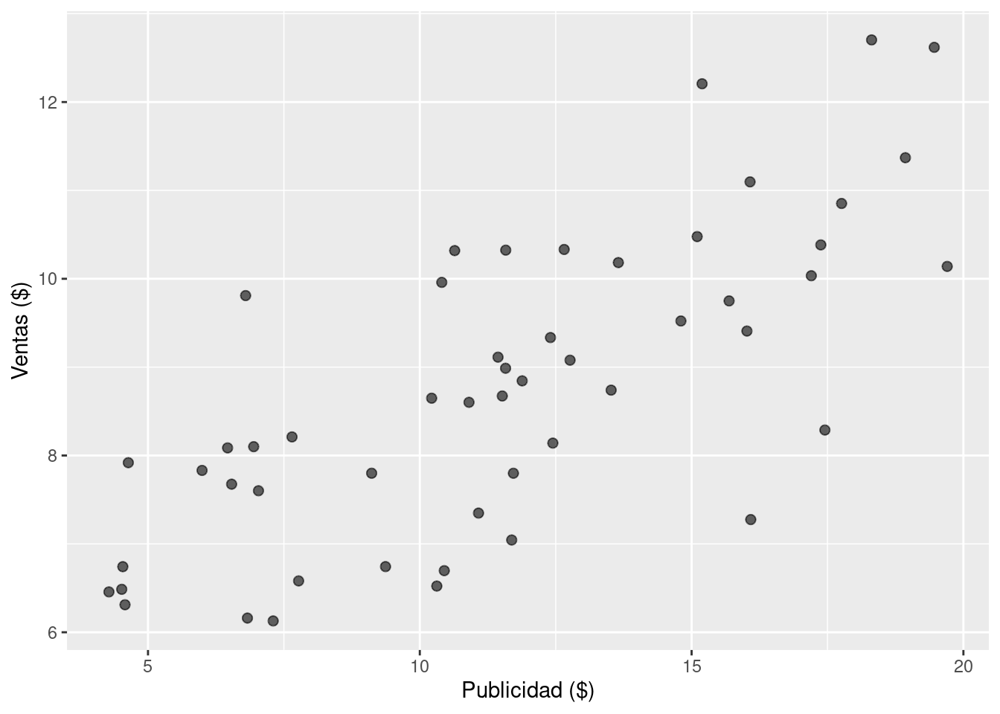
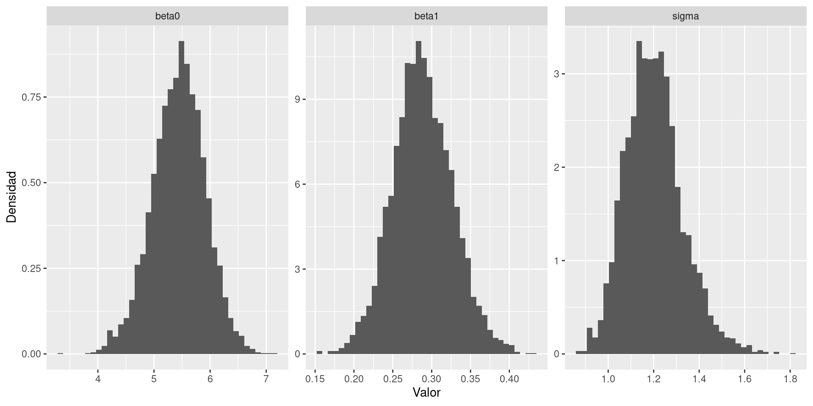
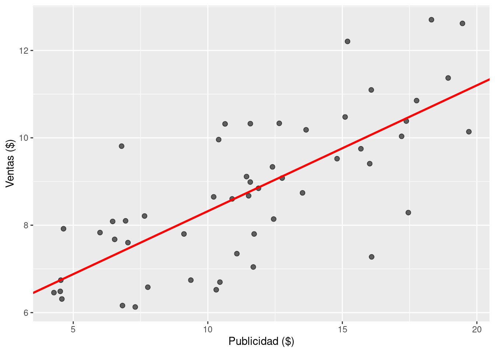
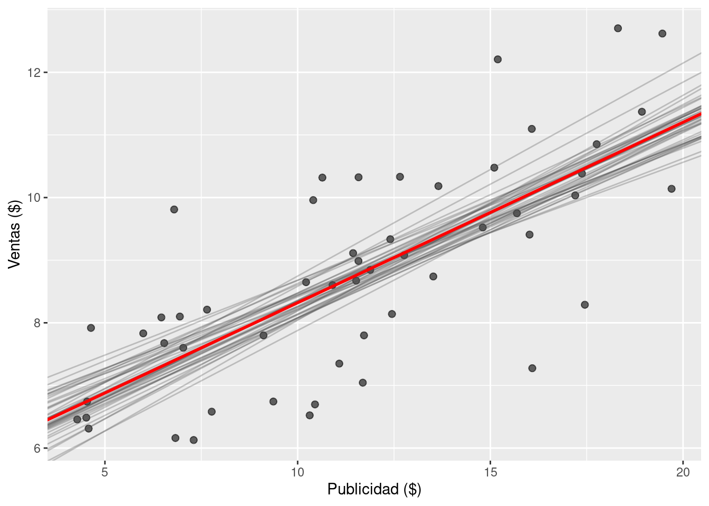
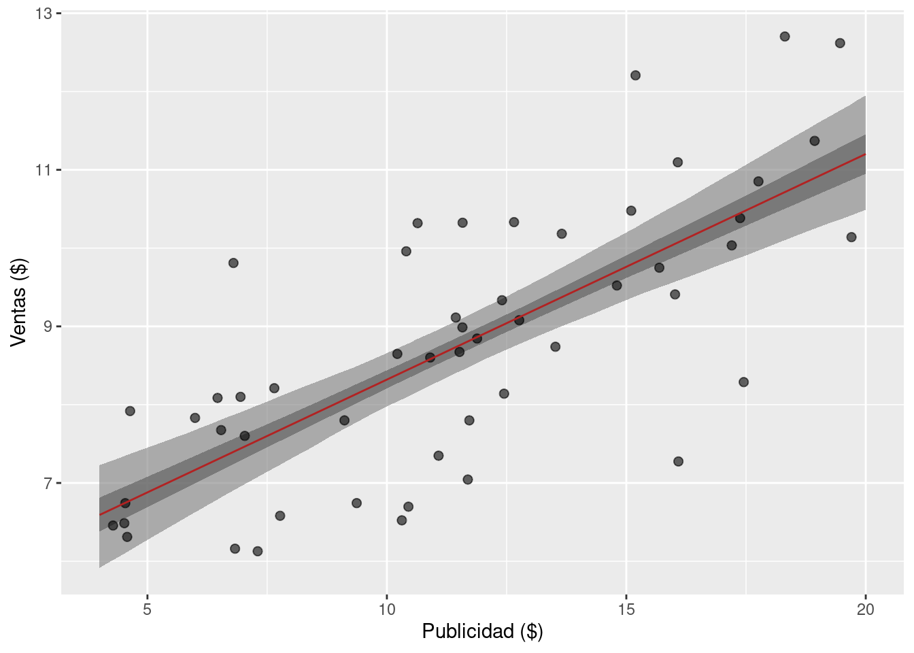
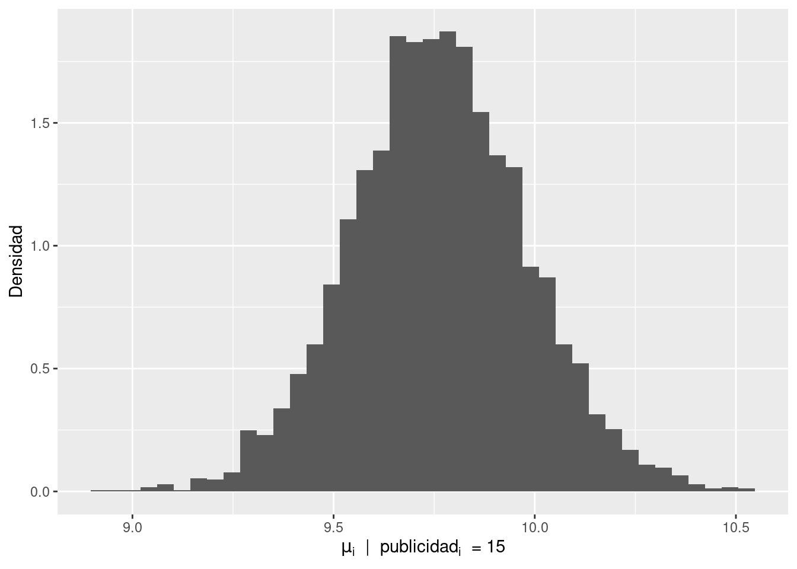
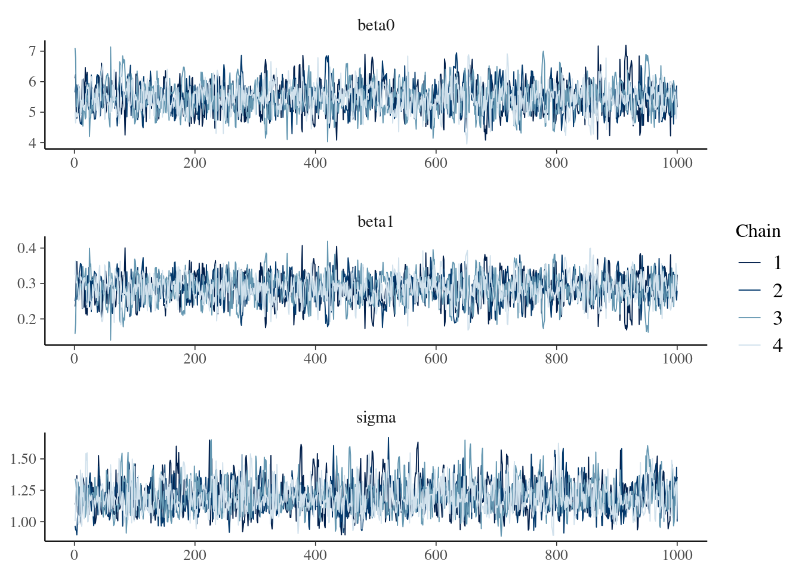

library(dplyr)
library(ggplot2)
library(readr)
library(rstan)16 - Regresión lineal con {RStan}
El siguiente programa muestra el código necesario para con R los ejercicios Mi primer regresión bayesiana y Mejorando mi regresión bayesiana de la Práctica 4.
En primer lugar, se cargan librerías necesarias.
Luego se leen y visualizan los datos.
# Leer los datos desde el repositorio
df_sales <- read_csv(
"https://raw.githubusercontent.com/estadisticaunr/estadistica-bayesiana/main/datos/sales.csv"
)
# Explorar los datos
ggplot(df_sales) +
geom_point(aes(x = x, y = y), alpha = 0.6, size = 2) +
labs(x = "Publicidad ($)", y = "Ventas ($)")
Se crea el siguiente modelo de regresión lineal bayesiana: \[ \begin{aligned} \text{ventas}_i &\sim \text{Normal}(\mu_i, \sigma^2) \\ \mu_i &= \beta_0 + \beta_1 \text{publicidad}_i \\ \end{aligned} \]
donde los parámetros \(\beta_0\), \(\beta_1\) y \(\sigma\) siguen distribuciones a priori uniformes. El programa de Stan para implementar el modelo es el siguiente:
data {
int<lower=0> N; // Cantidad de observaciones
vector[N] x; // Valores de la variable predictora
vector[N] y; // Valores de la variable respuesta
}
parameters {
real beta0; // Intercepto
real beta1; // Pendiente
real<lower=0> sigma; // Desvio estándar del error
}
model {
y ~ normal(beta0 + beta1 * x, sigma);
}Ahora se crea una lista con los datos para el modelo y se obtienen muestras del posterior utilizando la función stan().
stan_data <- list(
N = nrow(df_sales), # Cantidad de observaciones
x = df_sales$x, # Publicidad
y = df_sales$y # Ventas
)
ruta_modelo_1 <- here::here(
"recursos", "codigo", "stan", "regresion_lineal", "01_modelo.stan"
)
# Pasamos la ubicación del archivo con el codigo del modelo en Stan
modelo_1 <- stan_model(file = ruta_modelo_1)
modelo_1_fit <- sampling(
modelo_1, # El modelo
data = stan_data, # Datos
chains = 4, # Cantidad de cadenas
seed = 1211, # Para que el resultado sea reproducible
refresh = 1, # Mostrar mensajes del sampler (1: si, 0: no)
)
SAMPLING FOR MODEL 'anon_model' NOW (CHAIN 1).
Chain 1:
Chain 1: Gradient evaluation took 1e-05 seconds
Chain 1: 1000 transitions using 10 leapfrog steps per transition would take 0.1 seconds.
Chain 1: Adjust your expectations accordingly!
Chain 1:
Chain 1:
Chain 1: Iteration: 1 / 2000 [ 0%] (Warmup)
Chain 1: Iteration: 2 / 2000 [ 0%] (Warmup)
Chain 1: Iteration: 3 / 2000 [ 0%] (Warmup)
Chain 1: Iteration: 4 / 2000 [ 0%] (Warmup)
Chain 1: Iteration: 5 / 2000 [ 0%] (Warmup)
Chain 1: Iteration: 6 / 2000 [ 0%] (Warmup)
Chain 1: Iteration: 7 / 2000 [ 0%] (Warmup)
Chain 1: Iteration: 8 / 2000 [ 0%] (Warmup)
Chain 1: Iteration: 9 / 2000 [ 0%] (Warmup)
Chain 1: Iteration: 10 / 2000 [ 0%] (Warmup)
Chain 1: Iteration: 11 / 2000 [ 0%] (Warmup)
Chain 1: Iteration: 12 / 2000 [ 0%] (Warmup)
Chain 1: Iteration: 13 / 2000 [ 0%] (Warmup)
Chain 1: Iteration: 14 / 2000 [ 0%] (Warmup)
Chain 1: Iteration: 15 / 2000 [ 0%] (Warmup)
Chain 1: Iteration: 16 / 2000 [ 0%] (Warmup)
Chain 1: Iteration: 17 / 2000 [ 0%] (Warmup)
Chain 1: Iteration: 18 / 2000 [ 0%] (Warmup)
Chain 1: Iteration: 19 / 2000 [ 0%] (Warmup)
Chain 1: Iteration: 20 / 2000 [ 1%] (Warmup)
Chain 1: Iteration: 21 / 2000 [ 1%] (Warmup)
Chain 1: Iteration: 22 / 2000 [ 1%] (Warmup)
Chain 1: Iteration: 23 / 2000 [ 1%] (Warmup)
Chain 1: Iteration: 24 / 2000 [ 1%] (Warmup)
Chain 1: Iteration: 25 / 2000 [ 1%] (Warmup)
Chain 1: Iteration: 26 / 2000 [ 1%] (Warmup)
Chain 1: Iteration: 27 / 2000 [ 1%] (Warmup)
Chain 1: Iteration: 28 / 2000 [ 1%] (Warmup)
Chain 1: Iteration: 29 / 2000 [ 1%] (Warmup)
Chain 1: Iteration: 30 / 2000 [ 1%] (Warmup)
Chain 1: Iteration: 31 / 2000 [ 1%] (Warmup)
Chain 1: Iteration: 32 / 2000 [ 1%] (Warmup)
Chain 1: Iteration: 33 / 2000 [ 1%] (Warmup)
Chain 1: Iteration: 34 / 2000 [ 1%] (Warmup)
Chain 1: Iteration: 35 / 2000 [ 1%] (Warmup)
Chain 1: Iteration: 36 / 2000 [ 1%] (Warmup)
Chain 1: Iteration: 37 / 2000 [ 1%] (Warmup)
Chain 1: Iteration: 38 / 2000 [ 1%] (Warmup)
Chain 1: Iteration: 39 / 2000 [ 1%] (Warmup)
Chain 1: Iteration: 40 / 2000 [ 2%] (Warmup)
Chain 1: Iteration: 41 / 2000 [ 2%] (Warmup)
Chain 1: Iteration: 42 / 2000 [ 2%] (Warmup)
Chain 1: Iteration: 43 / 2000 [ 2%] (Warmup)
Chain 1: Iteration: 44 / 2000 [ 2%] (Warmup)
Chain 1: Iteration: 45 / 2000 [ 2%] (Warmup)
Chain 1: Iteration: 46 / 2000 [ 2%] (Warmup)
Chain 1: Iteration: 47 / 2000 [ 2%] (Warmup)
Chain 1: Iteration: 48 / 2000 [ 2%] (Warmup)
Chain 1: Iteration: 49 / 2000 [ 2%] (Warmup)
Chain 1: Iteration: 50 / 2000 [ 2%] (Warmup)
Chain 1: Iteration: 51 / 2000 [ 2%] (Warmup)
Chain 1: Iteration: 52 / 2000 [ 2%] (Warmup)
Chain 1: Iteration: 53 / 2000 [ 2%] (Warmup)
Chain 1: Iteration: 54 / 2000 [ 2%] (Warmup)
Chain 1: Iteration: 55 / 2000 [ 2%] (Warmup)
Chain 1: Iteration: 56 / 2000 [ 2%] (Warmup)
Chain 1: Iteration: 57 / 2000 [ 2%] (Warmup)
Chain 1: Iteration: 58 / 2000 [ 2%] (Warmup)
Chain 1: Iteration: 59 / 2000 [ 2%] (Warmup)
Chain 1: Iteration: 60 / 2000 [ 3%] (Warmup)
Chain 1: Iteration: 61 / 2000 [ 3%] (Warmup)
Chain 1: Iteration: 62 / 2000 [ 3%] (Warmup)
Chain 1: Iteration: 63 / 2000 [ 3%] (Warmup)
Chain 1: Iteration: 64 / 2000 [ 3%] (Warmup)
Chain 1: Iteration: 65 / 2000 [ 3%] (Warmup)
Chain 1: Iteration: 66 / 2000 [ 3%] (Warmup)
Chain 1: Iteration: 67 / 2000 [ 3%] (Warmup)
Chain 1: Iteration: 68 / 2000 [ 3%] (Warmup)
Chain 1: Iteration: 69 / 2000 [ 3%] (Warmup)
Chain 1: Iteration: 70 / 2000 [ 3%] (Warmup)
Chain 1: Iteration: 71 / 2000 [ 3%] (Warmup)
Chain 1: Iteration: 72 / 2000 [ 3%] (Warmup)
Chain 1: Iteration: 73 / 2000 [ 3%] (Warmup)
Chain 1: Iteration: 74 / 2000 [ 3%] (Warmup)
Chain 1: Iteration: 75 / 2000 [ 3%] (Warmup)
Chain 1: Iteration: 76 / 2000 [ 3%] (Warmup)
Chain 1: Iteration: 77 / 2000 [ 3%] (Warmup)
Chain 1: Iteration: 78 / 2000 [ 3%] (Warmup)
Chain 1: Iteration: 79 / 2000 [ 3%] (Warmup)
Chain 1: Iteration: 80 / 2000 [ 4%] (Warmup)
Chain 1: Iteration: 81 / 2000 [ 4%] (Warmup)
Chain 1: Iteration: 82 / 2000 [ 4%] (Warmup)
Chain 1: Iteration: 83 / 2000 [ 4%] (Warmup)
Chain 1: Iteration: 84 / 2000 [ 4%] (Warmup)
Chain 1: Iteration: 85 / 2000 [ 4%] (Warmup)
Chain 1: Iteration: 86 / 2000 [ 4%] (Warmup)
Chain 1: Iteration: 87 / 2000 [ 4%] (Warmup)
Chain 1: Iteration: 88 / 2000 [ 4%] (Warmup)
Chain 1: Iteration: 89 / 2000 [ 4%] (Warmup)
Chain 1: Iteration: 90 / 2000 [ 4%] (Warmup)
Chain 1: Iteration: 91 / 2000 [ 4%] (Warmup)
Chain 1: Iteration: 92 / 2000 [ 4%] (Warmup)
Chain 1: Iteration: 93 / 2000 [ 4%] (Warmup)
Chain 1: Iteration: 94 / 2000 [ 4%] (Warmup)
Chain 1: Iteration: 95 / 2000 [ 4%] (Warmup)
Chain 1: Iteration: 96 / 2000 [ 4%] (Warmup)
Chain 1: Iteration: 97 / 2000 [ 4%] (Warmup)
Chain 1: Iteration: 98 / 2000 [ 4%] (Warmup)
Chain 1: Iteration: 99 / 2000 [ 4%] (Warmup)
Chain 1: Iteration: 100 / 2000 [ 5%] (Warmup)
Chain 1: Iteration: 101 / 2000 [ 5%] (Warmup)
Chain 1: Iteration: 102 / 2000 [ 5%] (Warmup)
Chain 1: Iteration: 103 / 2000 [ 5%] (Warmup)
Chain 1: Iteration: 104 / 2000 [ 5%] (Warmup)
Chain 1: Iteration: 105 / 2000 [ 5%] (Warmup)
Chain 1: Iteration: 106 / 2000 [ 5%] (Warmup)
Chain 1: Iteration: 107 / 2000 [ 5%] (Warmup)
Chain 1: Iteration: 108 / 2000 [ 5%] (Warmup)
Chain 1: Iteration: 109 / 2000 [ 5%] (Warmup)
Chain 1: Iteration: 110 / 2000 [ 5%] (Warmup)
Chain 1: Iteration: 111 / 2000 [ 5%] (Warmup)
Chain 1: Iteration: 112 / 2000 [ 5%] (Warmup)
Chain 1: Iteration: 113 / 2000 [ 5%] (Warmup)
Chain 1: Iteration: 114 / 2000 [ 5%] (Warmup)
Chain 1: Iteration: 115 / 2000 [ 5%] (Warmup)
Chain 1: Iteration: 116 / 2000 [ 5%] (Warmup)
Chain 1: Iteration: 117 / 2000 [ 5%] (Warmup)
Chain 1: Iteration: 118 / 2000 [ 5%] (Warmup)
Chain 1: Iteration: 119 / 2000 [ 5%] (Warmup)
Chain 1: Iteration: 120 / 2000 [ 6%] (Warmup)
Chain 1: Iteration: 121 / 2000 [ 6%] (Warmup)
Chain 1: Iteration: 122 / 2000 [ 6%] (Warmup)
Chain 1: Iteration: 123 / 2000 [ 6%] (Warmup)
Chain 1: Iteration: 124 / 2000 [ 6%] (Warmup)
Chain 1: Iteration: 125 / 2000 [ 6%] (Warmup)
Chain 1: Iteration: 126 / 2000 [ 6%] (Warmup)
Chain 1: Iteration: 127 / 2000 [ 6%] (Warmup)
Chain 1: Iteration: 128 / 2000 [ 6%] (Warmup)
Chain 1: Iteration: 129 / 2000 [ 6%] (Warmup)
Chain 1: Iteration: 130 / 2000 [ 6%] (Warmup)
Chain 1: Iteration: 131 / 2000 [ 6%] (Warmup)
Chain 1: Iteration: 132 / 2000 [ 6%] (Warmup)
Chain 1: Iteration: 133 / 2000 [ 6%] (Warmup)
Chain 1: Iteration: 134 / 2000 [ 6%] (Warmup)
Chain 1: Iteration: 135 / 2000 [ 6%] (Warmup)
Chain 1: Iteration: 136 / 2000 [ 6%] (Warmup)
Chain 1: Iteration: 137 / 2000 [ 6%] (Warmup)
Chain 1: Iteration: 138 / 2000 [ 6%] (Warmup)
Chain 1: Iteration: 139 / 2000 [ 6%] (Warmup)
Chain 1: Iteration: 140 / 2000 [ 7%] (Warmup)
Chain 1: Iteration: 141 / 2000 [ 7%] (Warmup)
Chain 1: Iteration: 142 / 2000 [ 7%] (Warmup)
Chain 1: Iteration: 143 / 2000 [ 7%] (Warmup)
Chain 1: Iteration: 144 / 2000 [ 7%] (Warmup)
Chain 1: Iteration: 145 / 2000 [ 7%] (Warmup)
Chain 1: Iteration: 146 / 2000 [ 7%] (Warmup)
Chain 1: Iteration: 147 / 2000 [ 7%] (Warmup)
Chain 1: Iteration: 148 / 2000 [ 7%] (Warmup)
Chain 1: Iteration: 149 / 2000 [ 7%] (Warmup)
Chain 1: Iteration: 150 / 2000 [ 7%] (Warmup)
Chain 1: Iteration: 151 / 2000 [ 7%] (Warmup)
Chain 1: Iteration: 152 / 2000 [ 7%] (Warmup)
Chain 1: Iteration: 153 / 2000 [ 7%] (Warmup)
Chain 1: Iteration: 154 / 2000 [ 7%] (Warmup)
Chain 1: Iteration: 155 / 2000 [ 7%] (Warmup)
Chain 1: Iteration: 156 / 2000 [ 7%] (Warmup)
Chain 1: Iteration: 157 / 2000 [ 7%] (Warmup)
Chain 1: Iteration: 158 / 2000 [ 7%] (Warmup)
Chain 1: Iteration: 159 / 2000 [ 7%] (Warmup)
Chain 1: Iteration: 160 / 2000 [ 8%] (Warmup)
Chain 1: Iteration: 161 / 2000 [ 8%] (Warmup)
Chain 1: Iteration: 162 / 2000 [ 8%] (Warmup)
Chain 1: Iteration: 163 / 2000 [ 8%] (Warmup)
Chain 1: Iteration: 164 / 2000 [ 8%] (Warmup)
Chain 1: Iteration: 165 / 2000 [ 8%] (Warmup)
Chain 1: Iteration: 166 / 2000 [ 8%] (Warmup)
Chain 1: Iteration: 167 / 2000 [ 8%] (Warmup)
Chain 1: Iteration: 168 / 2000 [ 8%] (Warmup)
Chain 1: Iteration: 169 / 2000 [ 8%] (Warmup)
Chain 1: Iteration: 170 / 2000 [ 8%] (Warmup)
Chain 1: Iteration: 171 / 2000 [ 8%] (Warmup)
Chain 1: Iteration: 172 / 2000 [ 8%] (Warmup)
Chain 1: Iteration: 173 / 2000 [ 8%] (Warmup)
Chain 1: Iteration: 174 / 2000 [ 8%] (Warmup)
Chain 1: Iteration: 175 / 2000 [ 8%] (Warmup)
Chain 1: Iteration: 176 / 2000 [ 8%] (Warmup)
Chain 1: Iteration: 177 / 2000 [ 8%] (Warmup)
Chain 1: Iteration: 178 / 2000 [ 8%] (Warmup)
Chain 1: Iteration: 179 / 2000 [ 8%] (Warmup)
Chain 1: Iteration: 180 / 2000 [ 9%] (Warmup)
Chain 1: Iteration: 181 / 2000 [ 9%] (Warmup)
Chain 1: Iteration: 182 / 2000 [ 9%] (Warmup)
Chain 1: Iteration: 183 / 2000 [ 9%] (Warmup)
Chain 1: Iteration: 184 / 2000 [ 9%] (Warmup)
Chain 1: Iteration: 185 / 2000 [ 9%] (Warmup)
Chain 1: Iteration: 186 / 2000 [ 9%] (Warmup)
Chain 1: Iteration: 187 / 2000 [ 9%] (Warmup)
Chain 1: Iteration: 188 / 2000 [ 9%] (Warmup)
Chain 1: Iteration: 189 / 2000 [ 9%] (Warmup)
Chain 1: Iteration: 190 / 2000 [ 9%] (Warmup)
Chain 1: Iteration: 191 / 2000 [ 9%] (Warmup)
Chain 1: Iteration: 192 / 2000 [ 9%] (Warmup)
Chain 1: Iteration: 193 / 2000 [ 9%] (Warmup)
Chain 1: Iteration: 194 / 2000 [ 9%] (Warmup)
Chain 1: Iteration: 195 / 2000 [ 9%] (Warmup)
Chain 1: Iteration: 196 / 2000 [ 9%] (Warmup)
Chain 1: Iteration: 197 / 2000 [ 9%] (Warmup)
Chain 1: Iteration: 198 / 2000 [ 9%] (Warmup)
Chain 1: Iteration: 199 / 2000 [ 9%] (Warmup)
Chain 1: Iteration: 200 / 2000 [ 10%] (Warmup)
Chain 1: Iteration: 201 / 2000 [ 10%] (Warmup)
Chain 1: Iteration: 202 / 2000 [ 10%] (Warmup)
Chain 1: Iteration: 203 / 2000 [ 10%] (Warmup)
Chain 1: Iteration: 204 / 2000 [ 10%] (Warmup)
Chain 1: Iteration: 205 / 2000 [ 10%] (Warmup)
Chain 1: Iteration: 206 / 2000 [ 10%] (Warmup)
Chain 1: Iteration: 207 / 2000 [ 10%] (Warmup)
Chain 1: Iteration: 208 / 2000 [ 10%] (Warmup)
Chain 1: Iteration: 209 / 2000 [ 10%] (Warmup)
Chain 1: Iteration: 210 / 2000 [ 10%] (Warmup)
Chain 1: Iteration: 211 / 2000 [ 10%] (Warmup)
Chain 1: Iteration: 212 / 2000 [ 10%] (Warmup)
Chain 1: Iteration: 213 / 2000 [ 10%] (Warmup)
Chain 1: Iteration: 214 / 2000 [ 10%] (Warmup)
Chain 1: Iteration: 215 / 2000 [ 10%] (Warmup)
Chain 1: Iteration: 216 / 2000 [ 10%] (Warmup)
Chain 1: Iteration: 217 / 2000 [ 10%] (Warmup)
Chain 1: Iteration: 218 / 2000 [ 10%] (Warmup)
Chain 1: Iteration: 219 / 2000 [ 10%] (Warmup)
Chain 1: Iteration: 220 / 2000 [ 11%] (Warmup)
Chain 1: Iteration: 221 / 2000 [ 11%] (Warmup)
Chain 1: Iteration: 222 / 2000 [ 11%] (Warmup)
Chain 1: Iteration: 223 / 2000 [ 11%] (Warmup)
Chain 1: Iteration: 224 / 2000 [ 11%] (Warmup)
Chain 1: Iteration: 225 / 2000 [ 11%] (Warmup)
Chain 1: Iteration: 226 / 2000 [ 11%] (Warmup)
Chain 1: Iteration: 227 / 2000 [ 11%] (Warmup)
Chain 1: Iteration: 228 / 2000 [ 11%] (Warmup)
Chain 1: Iteration: 229 / 2000 [ 11%] (Warmup)
Chain 1: Iteration: 230 / 2000 [ 11%] (Warmup)
Chain 1: Iteration: 231 / 2000 [ 11%] (Warmup)
Chain 1: Iteration: 232 / 2000 [ 11%] (Warmup)
Chain 1: Iteration: 233 / 2000 [ 11%] (Warmup)
Chain 1: Iteration: 234 / 2000 [ 11%] (Warmup)
Chain 1: Iteration: 235 / 2000 [ 11%] (Warmup)
Chain 1: Iteration: 236 / 2000 [ 11%] (Warmup)
Chain 1: Iteration: 237 / 2000 [ 11%] (Warmup)
Chain 1: Iteration: 238 / 2000 [ 11%] (Warmup)
Chain 1: Iteration: 239 / 2000 [ 11%] (Warmup)
Chain 1: Iteration: 240 / 2000 [ 12%] (Warmup)
Chain 1: Iteration: 241 / 2000 [ 12%] (Warmup)
Chain 1: Iteration: 242 / 2000 [ 12%] (Warmup)
Chain 1: Iteration: 243 / 2000 [ 12%] (Warmup)
Chain 1: Iteration: 244 / 2000 [ 12%] (Warmup)
Chain 1: Iteration: 245 / 2000 [ 12%] (Warmup)
Chain 1: Iteration: 246 / 2000 [ 12%] (Warmup)
Chain 1: Iteration: 247 / 2000 [ 12%] (Warmup)
Chain 1: Iteration: 248 / 2000 [ 12%] (Warmup)
Chain 1: Iteration: 249 / 2000 [ 12%] (Warmup)
Chain 1: Iteration: 250 / 2000 [ 12%] (Warmup)
Chain 1: Iteration: 251 / 2000 [ 12%] (Warmup)
Chain 1: Iteration: 252 / 2000 [ 12%] (Warmup)
Chain 1: Iteration: 253 / 2000 [ 12%] (Warmup)
Chain 1: Iteration: 254 / 2000 [ 12%] (Warmup)
Chain 1: Iteration: 255 / 2000 [ 12%] (Warmup)
Chain 1: Iteration: 256 / 2000 [ 12%] (Warmup)
Chain 1: Iteration: 257 / 2000 [ 12%] (Warmup)
Chain 1: Iteration: 258 / 2000 [ 12%] (Warmup)
Chain 1: Iteration: 259 / 2000 [ 12%] (Warmup)
Chain 1: Iteration: 260 / 2000 [ 13%] (Warmup)
Chain 1: Iteration: 261 / 2000 [ 13%] (Warmup)
Chain 1: Iteration: 262 / 2000 [ 13%] (Warmup)
Chain 1: Iteration: 263 / 2000 [ 13%] (Warmup)
Chain 1: Iteration: 264 / 2000 [ 13%] (Warmup)
Chain 1: Iteration: 265 / 2000 [ 13%] (Warmup)
Chain 1: Iteration: 266 / 2000 [ 13%] (Warmup)
Chain 1: Iteration: 267 / 2000 [ 13%] (Warmup)
Chain 1: Iteration: 268 / 2000 [ 13%] (Warmup)
Chain 1: Iteration: 269 / 2000 [ 13%] (Warmup)
Chain 1: Iteration: 270 / 2000 [ 13%] (Warmup)
Chain 1: Iteration: 271 / 2000 [ 13%] (Warmup)
Chain 1: Iteration: 272 / 2000 [ 13%] (Warmup)
Chain 1: Iteration: 273 / 2000 [ 13%] (Warmup)
Chain 1: Iteration: 274 / 2000 [ 13%] (Warmup)
Chain 1: Iteration: 275 / 2000 [ 13%] (Warmup)
Chain 1: Iteration: 276 / 2000 [ 13%] (Warmup)
Chain 1: Iteration: 277 / 2000 [ 13%] (Warmup)
Chain 1: Iteration: 278 / 2000 [ 13%] (Warmup)
Chain 1: Iteration: 279 / 2000 [ 13%] (Warmup)
Chain 1: Iteration: 280 / 2000 [ 14%] (Warmup)
Chain 1: Iteration: 281 / 2000 [ 14%] (Warmup)
Chain 1: Iteration: 282 / 2000 [ 14%] (Warmup)
Chain 1: Iteration: 283 / 2000 [ 14%] (Warmup)
Chain 1: Iteration: 284 / 2000 [ 14%] (Warmup)
Chain 1: Iteration: 285 / 2000 [ 14%] (Warmup)
Chain 1: Iteration: 286 / 2000 [ 14%] (Warmup)
Chain 1: Iteration: 287 / 2000 [ 14%] (Warmup)
Chain 1: Iteration: 288 / 2000 [ 14%] (Warmup)
Chain 1: Iteration: 289 / 2000 [ 14%] (Warmup)
Chain 1: Iteration: 290 / 2000 [ 14%] (Warmup)
Chain 1: Iteration: 291 / 2000 [ 14%] (Warmup)
Chain 1: Iteration: 292 / 2000 [ 14%] (Warmup)
Chain 1: Iteration: 293 / 2000 [ 14%] (Warmup)
Chain 1: Iteration: 294 / 2000 [ 14%] (Warmup)
Chain 1: Iteration: 295 / 2000 [ 14%] (Warmup)
Chain 1: Iteration: 296 / 2000 [ 14%] (Warmup)
Chain 1: Iteration: 297 / 2000 [ 14%] (Warmup)
Chain 1: Iteration: 298 / 2000 [ 14%] (Warmup)
Chain 1: Iteration: 299 / 2000 [ 14%] (Warmup)
Chain 1: Iteration: 300 / 2000 [ 15%] (Warmup)
Chain 1: Iteration: 301 / 2000 [ 15%] (Warmup)
Chain 1: Iteration: 302 / 2000 [ 15%] (Warmup)
Chain 1: Iteration: 303 / 2000 [ 15%] (Warmup)
Chain 1: Iteration: 304 / 2000 [ 15%] (Warmup)
Chain 1: Iteration: 305 / 2000 [ 15%] (Warmup)
Chain 1: Iteration: 306 / 2000 [ 15%] (Warmup)
Chain 1: Iteration: 307 / 2000 [ 15%] (Warmup)
Chain 1: Iteration: 308 / 2000 [ 15%] (Warmup)
Chain 1: Iteration: 309 / 2000 [ 15%] (Warmup)
Chain 1: Iteration: 310 / 2000 [ 15%] (Warmup)
Chain 1: Iteration: 311 / 2000 [ 15%] (Warmup)
Chain 1: Iteration: 312 / 2000 [ 15%] (Warmup)
Chain 1: Iteration: 313 / 2000 [ 15%] (Warmup)
Chain 1: Iteration: 314 / 2000 [ 15%] (Warmup)
Chain 1: Iteration: 315 / 2000 [ 15%] (Warmup)
Chain 1: Iteration: 316 / 2000 [ 15%] (Warmup)
Chain 1: Iteration: 317 / 2000 [ 15%] (Warmup)
Chain 1: Iteration: 318 / 2000 [ 15%] (Warmup)
Chain 1: Iteration: 319 / 2000 [ 15%] (Warmup)
Chain 1: Iteration: 320 / 2000 [ 16%] (Warmup)
Chain 1: Iteration: 321 / 2000 [ 16%] (Warmup)
Chain 1: Iteration: 322 / 2000 [ 16%] (Warmup)
Chain 1: Iteration: 323 / 2000 [ 16%] (Warmup)
Chain 1: Iteration: 324 / 2000 [ 16%] (Warmup)
Chain 1: Iteration: 325 / 2000 [ 16%] (Warmup)
Chain 1: Iteration: 326 / 2000 [ 16%] (Warmup)
Chain 1: Iteration: 327 / 2000 [ 16%] (Warmup)
Chain 1: Iteration: 328 / 2000 [ 16%] (Warmup)
Chain 1: Iteration: 329 / 2000 [ 16%] (Warmup)
Chain 1: Iteration: 330 / 2000 [ 16%] (Warmup)
Chain 1: Iteration: 331 / 2000 [ 16%] (Warmup)
Chain 1: Iteration: 332 / 2000 [ 16%] (Warmup)
Chain 1: Iteration: 333 / 2000 [ 16%] (Warmup)
Chain 1: Iteration: 334 / 2000 [ 16%] (Warmup)
Chain 1: Iteration: 335 / 2000 [ 16%] (Warmup)
Chain 1: Iteration: 336 / 2000 [ 16%] (Warmup)
Chain 1: Iteration: 337 / 2000 [ 16%] (Warmup)
Chain 1: Iteration: 338 / 2000 [ 16%] (Warmup)
Chain 1: Iteration: 339 / 2000 [ 16%] (Warmup)
Chain 1: Iteration: 340 / 2000 [ 17%] (Warmup)
Chain 1: Iteration: 341 / 2000 [ 17%] (Warmup)
Chain 1: Iteration: 342 / 2000 [ 17%] (Warmup)
Chain 1: Iteration: 343 / 2000 [ 17%] (Warmup)
Chain 1: Iteration: 344 / 2000 [ 17%] (Warmup)
Chain 1: Iteration: 345 / 2000 [ 17%] (Warmup)
Chain 1: Iteration: 346 / 2000 [ 17%] (Warmup)
Chain 1: Iteration: 347 / 2000 [ 17%] (Warmup)
Chain 1: Iteration: 348 / 2000 [ 17%] (Warmup)
Chain 1: Iteration: 349 / 2000 [ 17%] (Warmup)
Chain 1: Iteration: 350 / 2000 [ 17%] (Warmup)
Chain 1: Iteration: 351 / 2000 [ 17%] (Warmup)
Chain 1: Iteration: 352 / 2000 [ 17%] (Warmup)
Chain 1: Iteration: 353 / 2000 [ 17%] (Warmup)
Chain 1: Iteration: 354 / 2000 [ 17%] (Warmup)
Chain 1: Iteration: 355 / 2000 [ 17%] (Warmup)
Chain 1: Iteration: 356 / 2000 [ 17%] (Warmup)
Chain 1: Iteration: 357 / 2000 [ 17%] (Warmup)
Chain 1: Iteration: 358 / 2000 [ 17%] (Warmup)
Chain 1: Iteration: 359 / 2000 [ 17%] (Warmup)
Chain 1: Iteration: 360 / 2000 [ 18%] (Warmup)
Chain 1: Iteration: 361 / 2000 [ 18%] (Warmup)
Chain 1: Iteration: 362 / 2000 [ 18%] (Warmup)
Chain 1: Iteration: 363 / 2000 [ 18%] (Warmup)
Chain 1: Iteration: 364 / 2000 [ 18%] (Warmup)
Chain 1: Iteration: 365 / 2000 [ 18%] (Warmup)
Chain 1: Iteration: 366 / 2000 [ 18%] (Warmup)
Chain 1: Iteration: 367 / 2000 [ 18%] (Warmup)
Chain 1: Iteration: 368 / 2000 [ 18%] (Warmup)
Chain 1: Iteration: 369 / 2000 [ 18%] (Warmup)
Chain 1: Iteration: 370 / 2000 [ 18%] (Warmup)
Chain 1: Iteration: 371 / 2000 [ 18%] (Warmup)
Chain 1: Iteration: 372 / 2000 [ 18%] (Warmup)
Chain 1: Iteration: 373 / 2000 [ 18%] (Warmup)
Chain 1: Iteration: 374 / 2000 [ 18%] (Warmup)
Chain 1: Iteration: 375 / 2000 [ 18%] (Warmup)
Chain 1: Iteration: 376 / 2000 [ 18%] (Warmup)
Chain 1: Iteration: 377 / 2000 [ 18%] (Warmup)
Chain 1: Iteration: 378 / 2000 [ 18%] (Warmup)
Chain 1: Iteration: 379 / 2000 [ 18%] (Warmup)
Chain 1: Iteration: 380 / 2000 [ 19%] (Warmup)
Chain 1: Iteration: 381 / 2000 [ 19%] (Warmup)
Chain 1: Iteration: 382 / 2000 [ 19%] (Warmup)
Chain 1: Iteration: 383 / 2000 [ 19%] (Warmup)
Chain 1: Iteration: 384 / 2000 [ 19%] (Warmup)
Chain 1: Iteration: 385 / 2000 [ 19%] (Warmup)
Chain 1: Iteration: 386 / 2000 [ 19%] (Warmup)
Chain 1: Iteration: 387 / 2000 [ 19%] (Warmup)
Chain 1: Iteration: 388 / 2000 [ 19%] (Warmup)
Chain 1: Iteration: 389 / 2000 [ 19%] (Warmup)
Chain 1: Iteration: 390 / 2000 [ 19%] (Warmup)
Chain 1: Iteration: 391 / 2000 [ 19%] (Warmup)
Chain 1: Iteration: 392 / 2000 [ 19%] (Warmup)
Chain 1: Iteration: 393 / 2000 [ 19%] (Warmup)
Chain 1: Iteration: 394 / 2000 [ 19%] (Warmup)
Chain 1: Iteration: 395 / 2000 [ 19%] (Warmup)
Chain 1: Iteration: 396 / 2000 [ 19%] (Warmup)
Chain 1: Iteration: 397 / 2000 [ 19%] (Warmup)
Chain 1: Iteration: 398 / 2000 [ 19%] (Warmup)
Chain 1: Iteration: 399 / 2000 [ 19%] (Warmup)
Chain 1: Iteration: 400 / 2000 [ 20%] (Warmup)
Chain 1: Iteration: 401 / 2000 [ 20%] (Warmup)
Chain 1: Iteration: 402 / 2000 [ 20%] (Warmup)
Chain 1: Iteration: 403 / 2000 [ 20%] (Warmup)
Chain 1: Iteration: 404 / 2000 [ 20%] (Warmup)
Chain 1: Iteration: 405 / 2000 [ 20%] (Warmup)
Chain 1: Iteration: 406 / 2000 [ 20%] (Warmup)
Chain 1: Iteration: 407 / 2000 [ 20%] (Warmup)
Chain 1: Iteration: 408 / 2000 [ 20%] (Warmup)
Chain 1: Iteration: 409 / 2000 [ 20%] (Warmup)
Chain 1: Iteration: 410 / 2000 [ 20%] (Warmup)
Chain 1: Iteration: 411 / 2000 [ 20%] (Warmup)
Chain 1: Iteration: 412 / 2000 [ 20%] (Warmup)
Chain 1: Iteration: 413 / 2000 [ 20%] (Warmup)
Chain 1: Iteration: 414 / 2000 [ 20%] (Warmup)
Chain 1: Iteration: 415 / 2000 [ 20%] (Warmup)
Chain 1: Iteration: 416 / 2000 [ 20%] (Warmup)
Chain 1: Iteration: 417 / 2000 [ 20%] (Warmup)
Chain 1: Iteration: 418 / 2000 [ 20%] (Warmup)
Chain 1: Iteration: 419 / 2000 [ 20%] (Warmup)
Chain 1: Iteration: 420 / 2000 [ 21%] (Warmup)
Chain 1: Iteration: 421 / 2000 [ 21%] (Warmup)
Chain 1: Iteration: 422 / 2000 [ 21%] (Warmup)
Chain 1: Iteration: 423 / 2000 [ 21%] (Warmup)
Chain 1: Iteration: 424 / 2000 [ 21%] (Warmup)
Chain 1: Iteration: 425 / 2000 [ 21%] (Warmup)
Chain 1: Iteration: 426 / 2000 [ 21%] (Warmup)
Chain 1: Iteration: 427 / 2000 [ 21%] (Warmup)
Chain 1: Iteration: 428 / 2000 [ 21%] (Warmup)
Chain 1: Iteration: 429 / 2000 [ 21%] (Warmup)
Chain 1: Iteration: 430 / 2000 [ 21%] (Warmup)
Chain 1: Iteration: 431 / 2000 [ 21%] (Warmup)
Chain 1: Iteration: 432 / 2000 [ 21%] (Warmup)
Chain 1: Iteration: 433 / 2000 [ 21%] (Warmup)
Chain 1: Iteration: 434 / 2000 [ 21%] (Warmup)
Chain 1: Iteration: 435 / 2000 [ 21%] (Warmup)
Chain 1: Iteration: 436 / 2000 [ 21%] (Warmup)
Chain 1: Iteration: 437 / 2000 [ 21%] (Warmup)
Chain 1: Iteration: 438 / 2000 [ 21%] (Warmup)
Chain 1: Iteration: 439 / 2000 [ 21%] (Warmup)
Chain 1: Iteration: 440 / 2000 [ 22%] (Warmup)
Chain 1: Iteration: 441 / 2000 [ 22%] (Warmup)
Chain 1: Iteration: 442 / 2000 [ 22%] (Warmup)
Chain 1: Iteration: 443 / 2000 [ 22%] (Warmup)
Chain 1: Iteration: 444 / 2000 [ 22%] (Warmup)
Chain 1: Iteration: 445 / 2000 [ 22%] (Warmup)
Chain 1: Iteration: 446 / 2000 [ 22%] (Warmup)
Chain 1: Iteration: 447 / 2000 [ 22%] (Warmup)
Chain 1: Iteration: 448 / 2000 [ 22%] (Warmup)
Chain 1: Iteration: 449 / 2000 [ 22%] (Warmup)
Chain 1: Iteration: 450 / 2000 [ 22%] (Warmup)
Chain 1: Iteration: 451 / 2000 [ 22%] (Warmup)
Chain 1: Iteration: 452 / 2000 [ 22%] (Warmup)
Chain 1: Iteration: 453 / 2000 [ 22%] (Warmup)
Chain 1: Iteration: 454 / 2000 [ 22%] (Warmup)
Chain 1: Iteration: 455 / 2000 [ 22%] (Warmup)
Chain 1: Iteration: 456 / 2000 [ 22%] (Warmup)
Chain 1: Iteration: 457 / 2000 [ 22%] (Warmup)
Chain 1: Iteration: 458 / 2000 [ 22%] (Warmup)
Chain 1: Iteration: 459 / 2000 [ 22%] (Warmup)
Chain 1: Iteration: 460 / 2000 [ 23%] (Warmup)
Chain 1: Iteration: 461 / 2000 [ 23%] (Warmup)
Chain 1: Iteration: 462 / 2000 [ 23%] (Warmup)
Chain 1: Iteration: 463 / 2000 [ 23%] (Warmup)
Chain 1: Iteration: 464 / 2000 [ 23%] (Warmup)
Chain 1: Iteration: 465 / 2000 [ 23%] (Warmup)
Chain 1: Iteration: 466 / 2000 [ 23%] (Warmup)
Chain 1: Iteration: 467 / 2000 [ 23%] (Warmup)
Chain 1: Iteration: 468 / 2000 [ 23%] (Warmup)
Chain 1: Iteration: 469 / 2000 [ 23%] (Warmup)
Chain 1: Iteration: 470 / 2000 [ 23%] (Warmup)
Chain 1: Iteration: 471 / 2000 [ 23%] (Warmup)
Chain 1: Iteration: 472 / 2000 [ 23%] (Warmup)
Chain 1: Iteration: 473 / 2000 [ 23%] (Warmup)
Chain 1: Iteration: 474 / 2000 [ 23%] (Warmup)
Chain 1: Iteration: 475 / 2000 [ 23%] (Warmup)
Chain 1: Iteration: 476 / 2000 [ 23%] (Warmup)
Chain 1: Iteration: 477 / 2000 [ 23%] (Warmup)
Chain 1: Iteration: 478 / 2000 [ 23%] (Warmup)
Chain 1: Iteration: 479 / 2000 [ 23%] (Warmup)
Chain 1: Iteration: 480 / 2000 [ 24%] (Warmup)
Chain 1: Iteration: 481 / 2000 [ 24%] (Warmup)
Chain 1: Iteration: 482 / 2000 [ 24%] (Warmup)
Chain 1: Iteration: 483 / 2000 [ 24%] (Warmup)
Chain 1: Iteration: 484 / 2000 [ 24%] (Warmup)
Chain 1: Iteration: 485 / 2000 [ 24%] (Warmup)
Chain 1: Iteration: 486 / 2000 [ 24%] (Warmup)
Chain 1: Iteration: 487 / 2000 [ 24%] (Warmup)
Chain 1: Iteration: 488 / 2000 [ 24%] (Warmup)
Chain 1: Iteration: 489 / 2000 [ 24%] (Warmup)
Chain 1: Iteration: 490 / 2000 [ 24%] (Warmup)
Chain 1: Iteration: 491 / 2000 [ 24%] (Warmup)
Chain 1: Iteration: 492 / 2000 [ 24%] (Warmup)
Chain 1: Iteration: 493 / 2000 [ 24%] (Warmup)
Chain 1: Iteration: 494 / 2000 [ 24%] (Warmup)
Chain 1: Iteration: 495 / 2000 [ 24%] (Warmup)
Chain 1: Iteration: 496 / 2000 [ 24%] (Warmup)
Chain 1: Iteration: 497 / 2000 [ 24%] (Warmup)
Chain 1: Iteration: 498 / 2000 [ 24%] (Warmup)
Chain 1: Iteration: 499 / 2000 [ 24%] (Warmup)
Chain 1: Iteration: 500 / 2000 [ 25%] (Warmup)
Chain 1: Iteration: 501 / 2000 [ 25%] (Warmup)
Chain 1: Iteration: 502 / 2000 [ 25%] (Warmup)
Chain 1: Iteration: 503 / 2000 [ 25%] (Warmup)
Chain 1: Iteration: 504 / 2000 [ 25%] (Warmup)
Chain 1: Iteration: 505 / 2000 [ 25%] (Warmup)
Chain 1: Iteration: 506 / 2000 [ 25%] (Warmup)
Chain 1: Iteration: 507 / 2000 [ 25%] (Warmup)
Chain 1: Iteration: 508 / 2000 [ 25%] (Warmup)
Chain 1: Iteration: 509 / 2000 [ 25%] (Warmup)
Chain 1: Iteration: 510 / 2000 [ 25%] (Warmup)
Chain 1: Iteration: 511 / 2000 [ 25%] (Warmup)
Chain 1: Iteration: 512 / 2000 [ 25%] (Warmup)
Chain 1: Iteration: 513 / 2000 [ 25%] (Warmup)
Chain 1: Iteration: 514 / 2000 [ 25%] (Warmup)
Chain 1: Iteration: 515 / 2000 [ 25%] (Warmup)
Chain 1: Iteration: 516 / 2000 [ 25%] (Warmup)
Chain 1: Iteration: 517 / 2000 [ 25%] (Warmup)
Chain 1: Iteration: 518 / 2000 [ 25%] (Warmup)
Chain 1: Iteration: 519 / 2000 [ 25%] (Warmup)
Chain 1: Iteration: 520 / 2000 [ 26%] (Warmup)
Chain 1: Iteration: 521 / 2000 [ 26%] (Warmup)
Chain 1: Iteration: 522 / 2000 [ 26%] (Warmup)
Chain 1: Iteration: 523 / 2000 [ 26%] (Warmup)
Chain 1: Iteration: 524 / 2000 [ 26%] (Warmup)
Chain 1: Iteration: 525 / 2000 [ 26%] (Warmup)
Chain 1: Iteration: 526 / 2000 [ 26%] (Warmup)
Chain 1: Iteration: 527 / 2000 [ 26%] (Warmup)
Chain 1: Iteration: 528 / 2000 [ 26%] (Warmup)
Chain 1: Iteration: 529 / 2000 [ 26%] (Warmup)
Chain 1: Iteration: 530 / 2000 [ 26%] (Warmup)
Chain 1: Iteration: 531 / 2000 [ 26%] (Warmup)
Chain 1: Iteration: 532 / 2000 [ 26%] (Warmup)
Chain 1: Iteration: 533 / 2000 [ 26%] (Warmup)
Chain 1: Iteration: 534 / 2000 [ 26%] (Warmup)
Chain 1: Iteration: 535 / 2000 [ 26%] (Warmup)
Chain 1: Iteration: 536 / 2000 [ 26%] (Warmup)
Chain 1: Iteration: 537 / 2000 [ 26%] (Warmup)
Chain 1: Iteration: 538 / 2000 [ 26%] (Warmup)
Chain 1: Iteration: 539 / 2000 [ 26%] (Warmup)
Chain 1: Iteration: 540 / 2000 [ 27%] (Warmup)
Chain 1: Iteration: 541 / 2000 [ 27%] (Warmup)
Chain 1: Iteration: 542 / 2000 [ 27%] (Warmup)
Chain 1: Iteration: 543 / 2000 [ 27%] (Warmup)
Chain 1: Iteration: 544 / 2000 [ 27%] (Warmup)
Chain 1: Iteration: 545 / 2000 [ 27%] (Warmup)
Chain 1: Iteration: 546 / 2000 [ 27%] (Warmup)
Chain 1: Iteration: 547 / 2000 [ 27%] (Warmup)
Chain 1: Iteration: 548 / 2000 [ 27%] (Warmup)
Chain 1: Iteration: 549 / 2000 [ 27%] (Warmup)
Chain 1: Iteration: 550 / 2000 [ 27%] (Warmup)
Chain 1: Iteration: 551 / 2000 [ 27%] (Warmup)
Chain 1: Iteration: 552 / 2000 [ 27%] (Warmup)
Chain 1: Iteration: 553 / 2000 [ 27%] (Warmup)
Chain 1: Iteration: 554 / 2000 [ 27%] (Warmup)
Chain 1: Iteration: 555 / 2000 [ 27%] (Warmup)
Chain 1: Iteration: 556 / 2000 [ 27%] (Warmup)
Chain 1: Iteration: 557 / 2000 [ 27%] (Warmup)
Chain 1: Iteration: 558 / 2000 [ 27%] (Warmup)
Chain 1: Iteration: 559 / 2000 [ 27%] (Warmup)
Chain 1: Iteration: 560 / 2000 [ 28%] (Warmup)
Chain 1: Iteration: 561 / 2000 [ 28%] (Warmup)
Chain 1: Iteration: 562 / 2000 [ 28%] (Warmup)
Chain 1: Iteration: 563 / 2000 [ 28%] (Warmup)
Chain 1: Iteration: 564 / 2000 [ 28%] (Warmup)
Chain 1: Iteration: 565 / 2000 [ 28%] (Warmup)
Chain 1: Iteration: 566 / 2000 [ 28%] (Warmup)
Chain 1: Iteration: 567 / 2000 [ 28%] (Warmup)
Chain 1: Iteration: 568 / 2000 [ 28%] (Warmup)
Chain 1: Iteration: 569 / 2000 [ 28%] (Warmup)
Chain 1: Iteration: 570 / 2000 [ 28%] (Warmup)
Chain 1: Iteration: 571 / 2000 [ 28%] (Warmup)
Chain 1: Iteration: 572 / 2000 [ 28%] (Warmup)
Chain 1: Iteration: 573 / 2000 [ 28%] (Warmup)
Chain 1: Iteration: 574 / 2000 [ 28%] (Warmup)
Chain 1: Iteration: 575 / 2000 [ 28%] (Warmup)
Chain 1: Iteration: 576 / 2000 [ 28%] (Warmup)
Chain 1: Iteration: 577 / 2000 [ 28%] (Warmup)
Chain 1: Iteration: 578 / 2000 [ 28%] (Warmup)
Chain 1: Iteration: 579 / 2000 [ 28%] (Warmup)
Chain 1: Iteration: 580 / 2000 [ 29%] (Warmup)
Chain 1: Iteration: 581 / 2000 [ 29%] (Warmup)
Chain 1: Iteration: 582 / 2000 [ 29%] (Warmup)
Chain 1: Iteration: 583 / 2000 [ 29%] (Warmup)
Chain 1: Iteration: 584 / 2000 [ 29%] (Warmup)
Chain 1: Iteration: 585 / 2000 [ 29%] (Warmup)
Chain 1: Iteration: 586 / 2000 [ 29%] (Warmup)
Chain 1: Iteration: 587 / 2000 [ 29%] (Warmup)
Chain 1: Iteration: 588 / 2000 [ 29%] (Warmup)
Chain 1: Iteration: 589 / 2000 [ 29%] (Warmup)
Chain 1: Iteration: 590 / 2000 [ 29%] (Warmup)
Chain 1: Iteration: 591 / 2000 [ 29%] (Warmup)
Chain 1: Iteration: 592 / 2000 [ 29%] (Warmup)
Chain 1: Iteration: 593 / 2000 [ 29%] (Warmup)
Chain 1: Iteration: 594 / 2000 [ 29%] (Warmup)
Chain 1: Iteration: 595 / 2000 [ 29%] (Warmup)
Chain 1: Iteration: 596 / 2000 [ 29%] (Warmup)
Chain 1: Iteration: 597 / 2000 [ 29%] (Warmup)
Chain 1: Iteration: 598 / 2000 [ 29%] (Warmup)
Chain 1: Iteration: 599 / 2000 [ 29%] (Warmup)
Chain 1: Iteration: 600 / 2000 [ 30%] (Warmup)
Chain 1: Iteration: 601 / 2000 [ 30%] (Warmup)
Chain 1: Iteration: 602 / 2000 [ 30%] (Warmup)
Chain 1: Iteration: 603 / 2000 [ 30%] (Warmup)
Chain 1: Iteration: 604 / 2000 [ 30%] (Warmup)
Chain 1: Iteration: 605 / 2000 [ 30%] (Warmup)
Chain 1: Iteration: 606 / 2000 [ 30%] (Warmup)
Chain 1: Iteration: 607 / 2000 [ 30%] (Warmup)
Chain 1: Iteration: 608 / 2000 [ 30%] (Warmup)
Chain 1: Iteration: 609 / 2000 [ 30%] (Warmup)
Chain 1: Iteration: 610 / 2000 [ 30%] (Warmup)
Chain 1: Iteration: 611 / 2000 [ 30%] (Warmup)
Chain 1: Iteration: 612 / 2000 [ 30%] (Warmup)
Chain 1: Iteration: 613 / 2000 [ 30%] (Warmup)
Chain 1: Iteration: 614 / 2000 [ 30%] (Warmup)
Chain 1: Iteration: 615 / 2000 [ 30%] (Warmup)
Chain 1: Iteration: 616 / 2000 [ 30%] (Warmup)
Chain 1: Iteration: 617 / 2000 [ 30%] (Warmup)
Chain 1: Iteration: 618 / 2000 [ 30%] (Warmup)
Chain 1: Iteration: 619 / 2000 [ 30%] (Warmup)
Chain 1: Iteration: 620 / 2000 [ 31%] (Warmup)
Chain 1: Iteration: 621 / 2000 [ 31%] (Warmup)
Chain 1: Iteration: 622 / 2000 [ 31%] (Warmup)
Chain 1: Iteration: 623 / 2000 [ 31%] (Warmup)
Chain 1: Iteration: 624 / 2000 [ 31%] (Warmup)
Chain 1: Iteration: 625 / 2000 [ 31%] (Warmup)
Chain 1: Iteration: 626 / 2000 [ 31%] (Warmup)
Chain 1: Iteration: 627 / 2000 [ 31%] (Warmup)
Chain 1: Iteration: 628 / 2000 [ 31%] (Warmup)
Chain 1: Iteration: 629 / 2000 [ 31%] (Warmup)
Chain 1: Iteration: 630 / 2000 [ 31%] (Warmup)
Chain 1: Iteration: 631 / 2000 [ 31%] (Warmup)
Chain 1: Iteration: 632 / 2000 [ 31%] (Warmup)
Chain 1: Iteration: 633 / 2000 [ 31%] (Warmup)
Chain 1: Iteration: 634 / 2000 [ 31%] (Warmup)
Chain 1: Iteration: 635 / 2000 [ 31%] (Warmup)
Chain 1: Iteration: 636 / 2000 [ 31%] (Warmup)
Chain 1: Iteration: 637 / 2000 [ 31%] (Warmup)
Chain 1: Iteration: 638 / 2000 [ 31%] (Warmup)
Chain 1: Iteration: 639 / 2000 [ 31%] (Warmup)
Chain 1: Iteration: 640 / 2000 [ 32%] (Warmup)
Chain 1: Iteration: 641 / 2000 [ 32%] (Warmup)
Chain 1: Iteration: 642 / 2000 [ 32%] (Warmup)
Chain 1: Iteration: 643 / 2000 [ 32%] (Warmup)
Chain 1: Iteration: 644 / 2000 [ 32%] (Warmup)
Chain 1: Iteration: 645 / 2000 [ 32%] (Warmup)
Chain 1: Iteration: 646 / 2000 [ 32%] (Warmup)
Chain 1: Iteration: 647 / 2000 [ 32%] (Warmup)
Chain 1: Iteration: 648 / 2000 [ 32%] (Warmup)
Chain 1: Iteration: 649 / 2000 [ 32%] (Warmup)
Chain 1: Iteration: 650 / 2000 [ 32%] (Warmup)
Chain 1: Iteration: 651 / 2000 [ 32%] (Warmup)
Chain 1: Iteration: 652 / 2000 [ 32%] (Warmup)
Chain 1: Iteration: 653 / 2000 [ 32%] (Warmup)
Chain 1: Iteration: 654 / 2000 [ 32%] (Warmup)
Chain 1: Iteration: 655 / 2000 [ 32%] (Warmup)
Chain 1: Iteration: 656 / 2000 [ 32%] (Warmup)
Chain 1: Iteration: 657 / 2000 [ 32%] (Warmup)
Chain 1: Iteration: 658 / 2000 [ 32%] (Warmup)
Chain 1: Iteration: 659 / 2000 [ 32%] (Warmup)
Chain 1: Iteration: 660 / 2000 [ 33%] (Warmup)
Chain 1: Iteration: 661 / 2000 [ 33%] (Warmup)
Chain 1: Iteration: 662 / 2000 [ 33%] (Warmup)
Chain 1: Iteration: 663 / 2000 [ 33%] (Warmup)
Chain 1: Iteration: 664 / 2000 [ 33%] (Warmup)
Chain 1: Iteration: 665 / 2000 [ 33%] (Warmup)
Chain 1: Iteration: 666 / 2000 [ 33%] (Warmup)
Chain 1: Iteration: 667 / 2000 [ 33%] (Warmup)
Chain 1: Iteration: 668 / 2000 [ 33%] (Warmup)
Chain 1: Iteration: 669 / 2000 [ 33%] (Warmup)
Chain 1: Iteration: 670 / 2000 [ 33%] (Warmup)
Chain 1: Iteration: 671 / 2000 [ 33%] (Warmup)
Chain 1: Iteration: 672 / 2000 [ 33%] (Warmup)
Chain 1: Iteration: 673 / 2000 [ 33%] (Warmup)
Chain 1: Iteration: 674 / 2000 [ 33%] (Warmup)
Chain 1: Iteration: 675 / 2000 [ 33%] (Warmup)
Chain 1: Iteration: 676 / 2000 [ 33%] (Warmup)
Chain 1: Iteration: 677 / 2000 [ 33%] (Warmup)
Chain 1: Iteration: 678 / 2000 [ 33%] (Warmup)
Chain 1: Iteration: 679 / 2000 [ 33%] (Warmup)
Chain 1: Iteration: 680 / 2000 [ 34%] (Warmup)
Chain 1: Iteration: 681 / 2000 [ 34%] (Warmup)
Chain 1: Iteration: 682 / 2000 [ 34%] (Warmup)
Chain 1: Iteration: 683 / 2000 [ 34%] (Warmup)
Chain 1: Iteration: 684 / 2000 [ 34%] (Warmup)
Chain 1: Iteration: 685 / 2000 [ 34%] (Warmup)
Chain 1: Iteration: 686 / 2000 [ 34%] (Warmup)
Chain 1: Iteration: 687 / 2000 [ 34%] (Warmup)
Chain 1: Iteration: 688 / 2000 [ 34%] (Warmup)
Chain 1: Iteration: 689 / 2000 [ 34%] (Warmup)
Chain 1: Iteration: 690 / 2000 [ 34%] (Warmup)
Chain 1: Iteration: 691 / 2000 [ 34%] (Warmup)
Chain 1: Iteration: 692 / 2000 [ 34%] (Warmup)
Chain 1: Iteration: 693 / 2000 [ 34%] (Warmup)
Chain 1: Iteration: 694 / 2000 [ 34%] (Warmup)
Chain 1: Iteration: 695 / 2000 [ 34%] (Warmup)
Chain 1: Iteration: 696 / 2000 [ 34%] (Warmup)
Chain 1: Iteration: 697 / 2000 [ 34%] (Warmup)
Chain 1: Iteration: 698 / 2000 [ 34%] (Warmup)
Chain 1: Iteration: 699 / 2000 [ 34%] (Warmup)
Chain 1: Iteration: 700 / 2000 [ 35%] (Warmup)
Chain 1: Iteration: 701 / 2000 [ 35%] (Warmup)
Chain 1: Iteration: 702 / 2000 [ 35%] (Warmup)
Chain 1: Iteration: 703 / 2000 [ 35%] (Warmup)
Chain 1: Iteration: 704 / 2000 [ 35%] (Warmup)
Chain 1: Iteration: 705 / 2000 [ 35%] (Warmup)
Chain 1: Iteration: 706 / 2000 [ 35%] (Warmup)
Chain 1: Iteration: 707 / 2000 [ 35%] (Warmup)
Chain 1: Iteration: 708 / 2000 [ 35%] (Warmup)
Chain 1: Iteration: 709 / 2000 [ 35%] (Warmup)
Chain 1: Iteration: 710 / 2000 [ 35%] (Warmup)
Chain 1: Iteration: 711 / 2000 [ 35%] (Warmup)
Chain 1: Iteration: 712 / 2000 [ 35%] (Warmup)
Chain 1: Iteration: 713 / 2000 [ 35%] (Warmup)
Chain 1: Iteration: 714 / 2000 [ 35%] (Warmup)
Chain 1: Iteration: 715 / 2000 [ 35%] (Warmup)
Chain 1: Iteration: 716 / 2000 [ 35%] (Warmup)
Chain 1: Iteration: 717 / 2000 [ 35%] (Warmup)
Chain 1: Iteration: 718 / 2000 [ 35%] (Warmup)
Chain 1: Iteration: 719 / 2000 [ 35%] (Warmup)
Chain 1: Iteration: 720 / 2000 [ 36%] (Warmup)
Chain 1: Iteration: 721 / 2000 [ 36%] (Warmup)
Chain 1: Iteration: 722 / 2000 [ 36%] (Warmup)
Chain 1: Iteration: 723 / 2000 [ 36%] (Warmup)
Chain 1: Iteration: 724 / 2000 [ 36%] (Warmup)
Chain 1: Iteration: 725 / 2000 [ 36%] (Warmup)
Chain 1: Iteration: 726 / 2000 [ 36%] (Warmup)
Chain 1: Iteration: 727 / 2000 [ 36%] (Warmup)
Chain 1: Iteration: 728 / 2000 [ 36%] (Warmup)
Chain 1: Iteration: 729 / 2000 [ 36%] (Warmup)
Chain 1: Iteration: 730 / 2000 [ 36%] (Warmup)
Chain 1: Iteration: 731 / 2000 [ 36%] (Warmup)
Chain 1: Iteration: 732 / 2000 [ 36%] (Warmup)
Chain 1: Iteration: 733 / 2000 [ 36%] (Warmup)
Chain 1: Iteration: 734 / 2000 [ 36%] (Warmup)
Chain 1: Iteration: 735 / 2000 [ 36%] (Warmup)
Chain 1: Iteration: 736 / 2000 [ 36%] (Warmup)
Chain 1: Iteration: 737 / 2000 [ 36%] (Warmup)
Chain 1: Iteration: 738 / 2000 [ 36%] (Warmup)
Chain 1: Iteration: 739 / 2000 [ 36%] (Warmup)
Chain 1: Iteration: 740 / 2000 [ 37%] (Warmup)
Chain 1: Iteration: 741 / 2000 [ 37%] (Warmup)
Chain 1: Iteration: 742 / 2000 [ 37%] (Warmup)
Chain 1: Iteration: 743 / 2000 [ 37%] (Warmup)
Chain 1: Iteration: 744 / 2000 [ 37%] (Warmup)
Chain 1: Iteration: 745 / 2000 [ 37%] (Warmup)
Chain 1: Iteration: 746 / 2000 [ 37%] (Warmup)
Chain 1: Iteration: 747 / 2000 [ 37%] (Warmup)
Chain 1: Iteration: 748 / 2000 [ 37%] (Warmup)
Chain 1: Iteration: 749 / 2000 [ 37%] (Warmup)
Chain 1: Iteration: 750 / 2000 [ 37%] (Warmup)
Chain 1: Iteration: 751 / 2000 [ 37%] (Warmup)
Chain 1: Iteration: 752 / 2000 [ 37%] (Warmup)
Chain 1: Iteration: 753 / 2000 [ 37%] (Warmup)
Chain 1: Iteration: 754 / 2000 [ 37%] (Warmup)
Chain 1: Iteration: 755 / 2000 [ 37%] (Warmup)
Chain 1: Iteration: 756 / 2000 [ 37%] (Warmup)
Chain 1: Iteration: 757 / 2000 [ 37%] (Warmup)
Chain 1: Iteration: 758 / 2000 [ 37%] (Warmup)
Chain 1: Iteration: 759 / 2000 [ 37%] (Warmup)
Chain 1: Iteration: 760 / 2000 [ 38%] (Warmup)
Chain 1: Iteration: 761 / 2000 [ 38%] (Warmup)
Chain 1: Iteration: 762 / 2000 [ 38%] (Warmup)
Chain 1: Iteration: 763 / 2000 [ 38%] (Warmup)
Chain 1: Iteration: 764 / 2000 [ 38%] (Warmup)
Chain 1: Iteration: 765 / 2000 [ 38%] (Warmup)
Chain 1: Iteration: 766 / 2000 [ 38%] (Warmup)
Chain 1: Iteration: 767 / 2000 [ 38%] (Warmup)
Chain 1: Iteration: 768 / 2000 [ 38%] (Warmup)
Chain 1: Iteration: 769 / 2000 [ 38%] (Warmup)
Chain 1: Iteration: 770 / 2000 [ 38%] (Warmup)
Chain 1: Iteration: 771 / 2000 [ 38%] (Warmup)
Chain 1: Iteration: 772 / 2000 [ 38%] (Warmup)
Chain 1: Iteration: 773 / 2000 [ 38%] (Warmup)
Chain 1: Iteration: 774 / 2000 [ 38%] (Warmup)
Chain 1: Iteration: 775 / 2000 [ 38%] (Warmup)
Chain 1: Iteration: 776 / 2000 [ 38%] (Warmup)
Chain 1: Iteration: 777 / 2000 [ 38%] (Warmup)
Chain 1: Iteration: 778 / 2000 [ 38%] (Warmup)
Chain 1: Iteration: 779 / 2000 [ 38%] (Warmup)
Chain 1: Iteration: 780 / 2000 [ 39%] (Warmup)
Chain 1: Iteration: 781 / 2000 [ 39%] (Warmup)
Chain 1: Iteration: 782 / 2000 [ 39%] (Warmup)
Chain 1: Iteration: 783 / 2000 [ 39%] (Warmup)
Chain 1: Iteration: 784 / 2000 [ 39%] (Warmup)
Chain 1: Iteration: 785 / 2000 [ 39%] (Warmup)
Chain 1: Iteration: 786 / 2000 [ 39%] (Warmup)
Chain 1: Iteration: 787 / 2000 [ 39%] (Warmup)
Chain 1: Iteration: 788 / 2000 [ 39%] (Warmup)
Chain 1: Iteration: 789 / 2000 [ 39%] (Warmup)
Chain 1: Iteration: 790 / 2000 [ 39%] (Warmup)
Chain 1: Iteration: 791 / 2000 [ 39%] (Warmup)
Chain 1: Iteration: 792 / 2000 [ 39%] (Warmup)
Chain 1: Iteration: 793 / 2000 [ 39%] (Warmup)
Chain 1: Iteration: 794 / 2000 [ 39%] (Warmup)
Chain 1: Iteration: 795 / 2000 [ 39%] (Warmup)
Chain 1: Iteration: 796 / 2000 [ 39%] (Warmup)
Chain 1: Iteration: 797 / 2000 [ 39%] (Warmup)
Chain 1: Iteration: 798 / 2000 [ 39%] (Warmup)
Chain 1: Iteration: 799 / 2000 [ 39%] (Warmup)
Chain 1: Iteration: 800 / 2000 [ 40%] (Warmup)
Chain 1: Iteration: 801 / 2000 [ 40%] (Warmup)
Chain 1: Iteration: 802 / 2000 [ 40%] (Warmup)
Chain 1: Iteration: 803 / 2000 [ 40%] (Warmup)
Chain 1: Iteration: 804 / 2000 [ 40%] (Warmup)
Chain 1: Iteration: 805 / 2000 [ 40%] (Warmup)
Chain 1: Iteration: 806 / 2000 [ 40%] (Warmup)
Chain 1: Iteration: 807 / 2000 [ 40%] (Warmup)
Chain 1: Iteration: 808 / 2000 [ 40%] (Warmup)
Chain 1: Iteration: 809 / 2000 [ 40%] (Warmup)
Chain 1: Iteration: 810 / 2000 [ 40%] (Warmup)
Chain 1: Iteration: 811 / 2000 [ 40%] (Warmup)
Chain 1: Iteration: 812 / 2000 [ 40%] (Warmup)
Chain 1: Iteration: 813 / 2000 [ 40%] (Warmup)
Chain 1: Iteration: 814 / 2000 [ 40%] (Warmup)
Chain 1: Iteration: 815 / 2000 [ 40%] (Warmup)
Chain 1: Iteration: 816 / 2000 [ 40%] (Warmup)
Chain 1: Iteration: 817 / 2000 [ 40%] (Warmup)
Chain 1: Iteration: 818 / 2000 [ 40%] (Warmup)
Chain 1: Iteration: 819 / 2000 [ 40%] (Warmup)
Chain 1: Iteration: 820 / 2000 [ 41%] (Warmup)
Chain 1: Iteration: 821 / 2000 [ 41%] (Warmup)
Chain 1: Iteration: 822 / 2000 [ 41%] (Warmup)
Chain 1: Iteration: 823 / 2000 [ 41%] (Warmup)
Chain 1: Iteration: 824 / 2000 [ 41%] (Warmup)
Chain 1: Iteration: 825 / 2000 [ 41%] (Warmup)
Chain 1: Iteration: 826 / 2000 [ 41%] (Warmup)
Chain 1: Iteration: 827 / 2000 [ 41%] (Warmup)
Chain 1: Iteration: 828 / 2000 [ 41%] (Warmup)
Chain 1: Iteration: 829 / 2000 [ 41%] (Warmup)
Chain 1: Iteration: 830 / 2000 [ 41%] (Warmup)
Chain 1: Iteration: 831 / 2000 [ 41%] (Warmup)
Chain 1: Iteration: 832 / 2000 [ 41%] (Warmup)
Chain 1: Iteration: 833 / 2000 [ 41%] (Warmup)
Chain 1: Iteration: 834 / 2000 [ 41%] (Warmup)
Chain 1: Iteration: 835 / 2000 [ 41%] (Warmup)
Chain 1: Iteration: 836 / 2000 [ 41%] (Warmup)
Chain 1: Iteration: 837 / 2000 [ 41%] (Warmup)
Chain 1: Iteration: 838 / 2000 [ 41%] (Warmup)
Chain 1: Iteration: 839 / 2000 [ 41%] (Warmup)
Chain 1: Iteration: 840 / 2000 [ 42%] (Warmup)
Chain 1: Iteration: 841 / 2000 [ 42%] (Warmup)
Chain 1: Iteration: 842 / 2000 [ 42%] (Warmup)
Chain 1: Iteration: 843 / 2000 [ 42%] (Warmup)
Chain 1: Iteration: 844 / 2000 [ 42%] (Warmup)
Chain 1: Iteration: 845 / 2000 [ 42%] (Warmup)
Chain 1: Iteration: 846 / 2000 [ 42%] (Warmup)
Chain 1: Iteration: 847 / 2000 [ 42%] (Warmup)
Chain 1: Iteration: 848 / 2000 [ 42%] (Warmup)
Chain 1: Iteration: 849 / 2000 [ 42%] (Warmup)
Chain 1: Iteration: 850 / 2000 [ 42%] (Warmup)
Chain 1: Iteration: 851 / 2000 [ 42%] (Warmup)
Chain 1: Iteration: 852 / 2000 [ 42%] (Warmup)
Chain 1: Iteration: 853 / 2000 [ 42%] (Warmup)
Chain 1: Iteration: 854 / 2000 [ 42%] (Warmup)
Chain 1: Iteration: 855 / 2000 [ 42%] (Warmup)
Chain 1: Iteration: 856 / 2000 [ 42%] (Warmup)
Chain 1: Iteration: 857 / 2000 [ 42%] (Warmup)
Chain 1: Iteration: 858 / 2000 [ 42%] (Warmup)
Chain 1: Iteration: 859 / 2000 [ 42%] (Warmup)
Chain 1: Iteration: 860 / 2000 [ 43%] (Warmup)
Chain 1: Iteration: 861 / 2000 [ 43%] (Warmup)
Chain 1: Iteration: 862 / 2000 [ 43%] (Warmup)
Chain 1: Iteration: 863 / 2000 [ 43%] (Warmup)
Chain 1: Iteration: 864 / 2000 [ 43%] (Warmup)
Chain 1: Iteration: 865 / 2000 [ 43%] (Warmup)
Chain 1: Iteration: 866 / 2000 [ 43%] (Warmup)
Chain 1: Iteration: 867 / 2000 [ 43%] (Warmup)
Chain 1: Iteration: 868 / 2000 [ 43%] (Warmup)
Chain 1: Iteration: 869 / 2000 [ 43%] (Warmup)
Chain 1: Iteration: 870 / 2000 [ 43%] (Warmup)
Chain 1: Iteration: 871 / 2000 [ 43%] (Warmup)
Chain 1: Iteration: 872 / 2000 [ 43%] (Warmup)
Chain 1: Iteration: 873 / 2000 [ 43%] (Warmup)
Chain 1: Iteration: 874 / 2000 [ 43%] (Warmup)
Chain 1: Iteration: 875 / 2000 [ 43%] (Warmup)
Chain 1: Iteration: 876 / 2000 [ 43%] (Warmup)
Chain 1: Iteration: 877 / 2000 [ 43%] (Warmup)
Chain 1: Iteration: 878 / 2000 [ 43%] (Warmup)
Chain 1: Iteration: 879 / 2000 [ 43%] (Warmup)
Chain 1: Iteration: 880 / 2000 [ 44%] (Warmup)
Chain 1: Iteration: 881 / 2000 [ 44%] (Warmup)
Chain 1: Iteration: 882 / 2000 [ 44%] (Warmup)
Chain 1: Iteration: 883 / 2000 [ 44%] (Warmup)
Chain 1: Iteration: 884 / 2000 [ 44%] (Warmup)
Chain 1: Iteration: 885 / 2000 [ 44%] (Warmup)
Chain 1: Iteration: 886 / 2000 [ 44%] (Warmup)
Chain 1: Iteration: 887 / 2000 [ 44%] (Warmup)
Chain 1: Iteration: 888 / 2000 [ 44%] (Warmup)
Chain 1: Iteration: 889 / 2000 [ 44%] (Warmup)
Chain 1: Iteration: 890 / 2000 [ 44%] (Warmup)
Chain 1: Iteration: 891 / 2000 [ 44%] (Warmup)
Chain 1: Iteration: 892 / 2000 [ 44%] (Warmup)
Chain 1: Iteration: 893 / 2000 [ 44%] (Warmup)
Chain 1: Iteration: 894 / 2000 [ 44%] (Warmup)
Chain 1: Iteration: 895 / 2000 [ 44%] (Warmup)
Chain 1: Iteration: 896 / 2000 [ 44%] (Warmup)
Chain 1: Iteration: 897 / 2000 [ 44%] (Warmup)
Chain 1: Iteration: 898 / 2000 [ 44%] (Warmup)
Chain 1: Iteration: 899 / 2000 [ 44%] (Warmup)
Chain 1: Iteration: 900 / 2000 [ 45%] (Warmup)
Chain 1: Iteration: 901 / 2000 [ 45%] (Warmup)
Chain 1: Iteration: 902 / 2000 [ 45%] (Warmup)
Chain 1: Iteration: 903 / 2000 [ 45%] (Warmup)
Chain 1: Iteration: 904 / 2000 [ 45%] (Warmup)
Chain 1: Iteration: 905 / 2000 [ 45%] (Warmup)
Chain 1: Iteration: 906 / 2000 [ 45%] (Warmup)
Chain 1: Iteration: 907 / 2000 [ 45%] (Warmup)
Chain 1: Iteration: 908 / 2000 [ 45%] (Warmup)
Chain 1: Iteration: 909 / 2000 [ 45%] (Warmup)
Chain 1: Iteration: 910 / 2000 [ 45%] (Warmup)
Chain 1: Iteration: 911 / 2000 [ 45%] (Warmup)
Chain 1: Iteration: 912 / 2000 [ 45%] (Warmup)
Chain 1: Iteration: 913 / 2000 [ 45%] (Warmup)
Chain 1: Iteration: 914 / 2000 [ 45%] (Warmup)
Chain 1: Iteration: 915 / 2000 [ 45%] (Warmup)
Chain 1: Iteration: 916 / 2000 [ 45%] (Warmup)
Chain 1: Iteration: 917 / 2000 [ 45%] (Warmup)
Chain 1: Iteration: 918 / 2000 [ 45%] (Warmup)
Chain 1: Iteration: 919 / 2000 [ 45%] (Warmup)
Chain 1: Iteration: 920 / 2000 [ 46%] (Warmup)
Chain 1: Iteration: 921 / 2000 [ 46%] (Warmup)
Chain 1: Iteration: 922 / 2000 [ 46%] (Warmup)
Chain 1: Iteration: 923 / 2000 [ 46%] (Warmup)
Chain 1: Iteration: 924 / 2000 [ 46%] (Warmup)
Chain 1: Iteration: 925 / 2000 [ 46%] (Warmup)
Chain 1: Iteration: 926 / 2000 [ 46%] (Warmup)
Chain 1: Iteration: 927 / 2000 [ 46%] (Warmup)
Chain 1: Iteration: 928 / 2000 [ 46%] (Warmup)
Chain 1: Iteration: 929 / 2000 [ 46%] (Warmup)
Chain 1: Iteration: 930 / 2000 [ 46%] (Warmup)
Chain 1: Iteration: 931 / 2000 [ 46%] (Warmup)
Chain 1: Iteration: 932 / 2000 [ 46%] (Warmup)
Chain 1: Iteration: 933 / 2000 [ 46%] (Warmup)
Chain 1: Iteration: 934 / 2000 [ 46%] (Warmup)
Chain 1: Iteration: 935 / 2000 [ 46%] (Warmup)
Chain 1: Iteration: 936 / 2000 [ 46%] (Warmup)
Chain 1: Iteration: 937 / 2000 [ 46%] (Warmup)
Chain 1: Iteration: 938 / 2000 [ 46%] (Warmup)
Chain 1: Iteration: 939 / 2000 [ 46%] (Warmup)
Chain 1: Iteration: 940 / 2000 [ 47%] (Warmup)
Chain 1: Iteration: 941 / 2000 [ 47%] (Warmup)
Chain 1: Iteration: 942 / 2000 [ 47%] (Warmup)
Chain 1: Iteration: 943 / 2000 [ 47%] (Warmup)
Chain 1: Iteration: 944 / 2000 [ 47%] (Warmup)
Chain 1: Iteration: 945 / 2000 [ 47%] (Warmup)
Chain 1: Iteration: 946 / 2000 [ 47%] (Warmup)
Chain 1: Iteration: 947 / 2000 [ 47%] (Warmup)
Chain 1: Iteration: 948 / 2000 [ 47%] (Warmup)
Chain 1: Iteration: 949 / 2000 [ 47%] (Warmup)
Chain 1: Iteration: 950 / 2000 [ 47%] (Warmup)
Chain 1: Iteration: 951 / 2000 [ 47%] (Warmup)
Chain 1: Iteration: 952 / 2000 [ 47%] (Warmup)
Chain 1: Iteration: 953 / 2000 [ 47%] (Warmup)
Chain 1: Iteration: 954 / 2000 [ 47%] (Warmup)
Chain 1: Iteration: 955 / 2000 [ 47%] (Warmup)
Chain 1: Iteration: 956 / 2000 [ 47%] (Warmup)
Chain 1: Iteration: 957 / 2000 [ 47%] (Warmup)
Chain 1: Iteration: 958 / 2000 [ 47%] (Warmup)
Chain 1: Iteration: 959 / 2000 [ 47%] (Warmup)
Chain 1: Iteration: 960 / 2000 [ 48%] (Warmup)
Chain 1: Iteration: 961 / 2000 [ 48%] (Warmup)
Chain 1: Iteration: 962 / 2000 [ 48%] (Warmup)
Chain 1: Iteration: 963 / 2000 [ 48%] (Warmup)
Chain 1: Iteration: 964 / 2000 [ 48%] (Warmup)
Chain 1: Iteration: 965 / 2000 [ 48%] (Warmup)
Chain 1: Iteration: 966 / 2000 [ 48%] (Warmup)
Chain 1: Iteration: 967 / 2000 [ 48%] (Warmup)
Chain 1: Iteration: 968 / 2000 [ 48%] (Warmup)
Chain 1: Iteration: 969 / 2000 [ 48%] (Warmup)
Chain 1: Iteration: 970 / 2000 [ 48%] (Warmup)
Chain 1: Iteration: 971 / 2000 [ 48%] (Warmup)
Chain 1: Iteration: 972 / 2000 [ 48%] (Warmup)
Chain 1: Iteration: 973 / 2000 [ 48%] (Warmup)
Chain 1: Iteration: 974 / 2000 [ 48%] (Warmup)
Chain 1: Iteration: 975 / 2000 [ 48%] (Warmup)
Chain 1: Iteration: 976 / 2000 [ 48%] (Warmup)
Chain 1: Iteration: 977 / 2000 [ 48%] (Warmup)
Chain 1: Iteration: 978 / 2000 [ 48%] (Warmup)
Chain 1: Iteration: 979 / 2000 [ 48%] (Warmup)
Chain 1: Iteration: 980 / 2000 [ 49%] (Warmup)
Chain 1: Iteration: 981 / 2000 [ 49%] (Warmup)
Chain 1: Iteration: 982 / 2000 [ 49%] (Warmup)
Chain 1: Iteration: 983 / 2000 [ 49%] (Warmup)
Chain 1: Iteration: 984 / 2000 [ 49%] (Warmup)
Chain 1: Iteration: 985 / 2000 [ 49%] (Warmup)
Chain 1: Iteration: 986 / 2000 [ 49%] (Warmup)
Chain 1: Iteration: 987 / 2000 [ 49%] (Warmup)
Chain 1: Iteration: 988 / 2000 [ 49%] (Warmup)
Chain 1: Iteration: 989 / 2000 [ 49%] (Warmup)
Chain 1: Iteration: 990 / 2000 [ 49%] (Warmup)
Chain 1: Iteration: 991 / 2000 [ 49%] (Warmup)
Chain 1: Iteration: 992 / 2000 [ 49%] (Warmup)
Chain 1: Iteration: 993 / 2000 [ 49%] (Warmup)
Chain 1: Iteration: 994 / 2000 [ 49%] (Warmup)
Chain 1: Iteration: 995 / 2000 [ 49%] (Warmup)
Chain 1: Iteration: 996 / 2000 [ 49%] (Warmup)
Chain 1: Iteration: 997 / 2000 [ 49%] (Warmup)
Chain 1: Iteration: 998 / 2000 [ 49%] (Warmup)
Chain 1: Iteration: 999 / 2000 [ 49%] (Warmup)
Chain 1: Iteration: 1000 / 2000 [ 50%] (Warmup)
Chain 1: Iteration: 1001 / 2000 [ 50%] (Sampling)
Chain 1: Iteration: 1002 / 2000 [ 50%] (Sampling)
Chain 1: Iteration: 1003 / 2000 [ 50%] (Sampling)
Chain 1: Iteration: 1004 / 2000 [ 50%] (Sampling)
Chain 1: Iteration: 1005 / 2000 [ 50%] (Sampling)
Chain 1: Iteration: 1006 / 2000 [ 50%] (Sampling)
Chain 1: Iteration: 1007 / 2000 [ 50%] (Sampling)
Chain 1: Iteration: 1008 / 2000 [ 50%] (Sampling)
Chain 1: Iteration: 1009 / 2000 [ 50%] (Sampling)
Chain 1: Iteration: 1010 / 2000 [ 50%] (Sampling)
Chain 1: Iteration: 1011 / 2000 [ 50%] (Sampling)
Chain 1: Iteration: 1012 / 2000 [ 50%] (Sampling)
Chain 1: Iteration: 1013 / 2000 [ 50%] (Sampling)
Chain 1: Iteration: 1014 / 2000 [ 50%] (Sampling)
Chain 1: Iteration: 1015 / 2000 [ 50%] (Sampling)
Chain 1: Iteration: 1016 / 2000 [ 50%] (Sampling)
Chain 1: Iteration: 1017 / 2000 [ 50%] (Sampling)
Chain 1: Iteration: 1018 / 2000 [ 50%] (Sampling)
Chain 1: Iteration: 1019 / 2000 [ 50%] (Sampling)
Chain 1: Iteration: 1020 / 2000 [ 51%] (Sampling)
Chain 1: Iteration: 1021 / 2000 [ 51%] (Sampling)
Chain 1: Iteration: 1022 / 2000 [ 51%] (Sampling)
Chain 1: Iteration: 1023 / 2000 [ 51%] (Sampling)
Chain 1: Iteration: 1024 / 2000 [ 51%] (Sampling)
Chain 1: Iteration: 1025 / 2000 [ 51%] (Sampling)
Chain 1: Iteration: 1026 / 2000 [ 51%] (Sampling)
Chain 1: Iteration: 1027 / 2000 [ 51%] (Sampling)
Chain 1: Iteration: 1028 / 2000 [ 51%] (Sampling)
Chain 1: Iteration: 1029 / 2000 [ 51%] (Sampling)
Chain 1: Iteration: 1030 / 2000 [ 51%] (Sampling)
Chain 1: Iteration: 1031 / 2000 [ 51%] (Sampling)
Chain 1: Iteration: 1032 / 2000 [ 51%] (Sampling)
Chain 1: Iteration: 1033 / 2000 [ 51%] (Sampling)
Chain 1: Iteration: 1034 / 2000 [ 51%] (Sampling)
Chain 1: Iteration: 1035 / 2000 [ 51%] (Sampling)
Chain 1: Iteration: 1036 / 2000 [ 51%] (Sampling)
Chain 1: Iteration: 1037 / 2000 [ 51%] (Sampling)
Chain 1: Iteration: 1038 / 2000 [ 51%] (Sampling)
Chain 1: Iteration: 1039 / 2000 [ 51%] (Sampling)
Chain 1: Iteration: 1040 / 2000 [ 52%] (Sampling)
Chain 1: Iteration: 1041 / 2000 [ 52%] (Sampling)
Chain 1: Iteration: 1042 / 2000 [ 52%] (Sampling)
Chain 1: Iteration: 1043 / 2000 [ 52%] (Sampling)
Chain 1: Iteration: 1044 / 2000 [ 52%] (Sampling)
Chain 1: Iteration: 1045 / 2000 [ 52%] (Sampling)
Chain 1: Iteration: 1046 / 2000 [ 52%] (Sampling)
Chain 1: Iteration: 1047 / 2000 [ 52%] (Sampling)
Chain 1: Iteration: 1048 / 2000 [ 52%] (Sampling)
Chain 1: Iteration: 1049 / 2000 [ 52%] (Sampling)
Chain 1: Iteration: 1050 / 2000 [ 52%] (Sampling)
Chain 1: Iteration: 1051 / 2000 [ 52%] (Sampling)
Chain 1: Iteration: 1052 / 2000 [ 52%] (Sampling)
Chain 1: Iteration: 1053 / 2000 [ 52%] (Sampling)
Chain 1: Iteration: 1054 / 2000 [ 52%] (Sampling)
Chain 1: Iteration: 1055 / 2000 [ 52%] (Sampling)
Chain 1: Iteration: 1056 / 2000 [ 52%] (Sampling)
Chain 1: Iteration: 1057 / 2000 [ 52%] (Sampling)
Chain 1: Iteration: 1058 / 2000 [ 52%] (Sampling)
Chain 1: Iteration: 1059 / 2000 [ 52%] (Sampling)
Chain 1: Iteration: 1060 / 2000 [ 53%] (Sampling)
Chain 1: Iteration: 1061 / 2000 [ 53%] (Sampling)
Chain 1: Iteration: 1062 / 2000 [ 53%] (Sampling)
Chain 1: Iteration: 1063 / 2000 [ 53%] (Sampling)
Chain 1: Iteration: 1064 / 2000 [ 53%] (Sampling)
Chain 1: Iteration: 1065 / 2000 [ 53%] (Sampling)
Chain 1: Iteration: 1066 / 2000 [ 53%] (Sampling)
Chain 1: Iteration: 1067 / 2000 [ 53%] (Sampling)
Chain 1: Iteration: 1068 / 2000 [ 53%] (Sampling)
Chain 1: Iteration: 1069 / 2000 [ 53%] (Sampling)
Chain 1: Iteration: 1070 / 2000 [ 53%] (Sampling)
Chain 1: Iteration: 1071 / 2000 [ 53%] (Sampling)
Chain 1: Iteration: 1072 / 2000 [ 53%] (Sampling)
Chain 1: Iteration: 1073 / 2000 [ 53%] (Sampling)
Chain 1: Iteration: 1074 / 2000 [ 53%] (Sampling)
Chain 1: Iteration: 1075 / 2000 [ 53%] (Sampling)
Chain 1: Iteration: 1076 / 2000 [ 53%] (Sampling)
Chain 1: Iteration: 1077 / 2000 [ 53%] (Sampling)
Chain 1: Iteration: 1078 / 2000 [ 53%] (Sampling)
Chain 1: Iteration: 1079 / 2000 [ 53%] (Sampling)
Chain 1: Iteration: 1080 / 2000 [ 54%] (Sampling)
Chain 1: Iteration: 1081 / 2000 [ 54%] (Sampling)
Chain 1: Iteration: 1082 / 2000 [ 54%] (Sampling)
Chain 1: Iteration: 1083 / 2000 [ 54%] (Sampling)
Chain 1: Iteration: 1084 / 2000 [ 54%] (Sampling)
Chain 1: Iteration: 1085 / 2000 [ 54%] (Sampling)
Chain 1: Iteration: 1086 / 2000 [ 54%] (Sampling)
Chain 1: Iteration: 1087 / 2000 [ 54%] (Sampling)
Chain 1: Iteration: 1088 / 2000 [ 54%] (Sampling)
Chain 1: Iteration: 1089 / 2000 [ 54%] (Sampling)
Chain 1: Iteration: 1090 / 2000 [ 54%] (Sampling)
Chain 1: Iteration: 1091 / 2000 [ 54%] (Sampling)
Chain 1: Iteration: 1092 / 2000 [ 54%] (Sampling)
Chain 1: Iteration: 1093 / 2000 [ 54%] (Sampling)
Chain 1: Iteration: 1094 / 2000 [ 54%] (Sampling)
Chain 1: Iteration: 1095 / 2000 [ 54%] (Sampling)
Chain 1: Iteration: 1096 / 2000 [ 54%] (Sampling)
Chain 1: Iteration: 1097 / 2000 [ 54%] (Sampling)
Chain 1: Iteration: 1098 / 2000 [ 54%] (Sampling)
Chain 1: Iteration: 1099 / 2000 [ 54%] (Sampling)
Chain 1: Iteration: 1100 / 2000 [ 55%] (Sampling)
Chain 1: Iteration: 1101 / 2000 [ 55%] (Sampling)
Chain 1: Iteration: 1102 / 2000 [ 55%] (Sampling)
Chain 1: Iteration: 1103 / 2000 [ 55%] (Sampling)
Chain 1: Iteration: 1104 / 2000 [ 55%] (Sampling)
Chain 1: Iteration: 1105 / 2000 [ 55%] (Sampling)
Chain 1: Iteration: 1106 / 2000 [ 55%] (Sampling)
Chain 1: Iteration: 1107 / 2000 [ 55%] (Sampling)
Chain 1: Iteration: 1108 / 2000 [ 55%] (Sampling)
Chain 1: Iteration: 1109 / 2000 [ 55%] (Sampling)
Chain 1: Iteration: 1110 / 2000 [ 55%] (Sampling)
Chain 1: Iteration: 1111 / 2000 [ 55%] (Sampling)
Chain 1: Iteration: 1112 / 2000 [ 55%] (Sampling)
Chain 1: Iteration: 1113 / 2000 [ 55%] (Sampling)
Chain 1: Iteration: 1114 / 2000 [ 55%] (Sampling)
Chain 1: Iteration: 1115 / 2000 [ 55%] (Sampling)
Chain 1: Iteration: 1116 / 2000 [ 55%] (Sampling)
Chain 1: Iteration: 1117 / 2000 [ 55%] (Sampling)
Chain 1: Iteration: 1118 / 2000 [ 55%] (Sampling)
Chain 1: Iteration: 1119 / 2000 [ 55%] (Sampling)
Chain 1: Iteration: 1120 / 2000 [ 56%] (Sampling)
Chain 1: Iteration: 1121 / 2000 [ 56%] (Sampling)
Chain 1: Iteration: 1122 / 2000 [ 56%] (Sampling)
Chain 1: Iteration: 1123 / 2000 [ 56%] (Sampling)
Chain 1: Iteration: 1124 / 2000 [ 56%] (Sampling)
Chain 1: Iteration: 1125 / 2000 [ 56%] (Sampling)
Chain 1: Iteration: 1126 / 2000 [ 56%] (Sampling)
Chain 1: Iteration: 1127 / 2000 [ 56%] (Sampling)
Chain 1: Iteration: 1128 / 2000 [ 56%] (Sampling)
Chain 1: Iteration: 1129 / 2000 [ 56%] (Sampling)
Chain 1: Iteration: 1130 / 2000 [ 56%] (Sampling)
Chain 1: Iteration: 1131 / 2000 [ 56%] (Sampling)
Chain 1: Iteration: 1132 / 2000 [ 56%] (Sampling)
Chain 1: Iteration: 1133 / 2000 [ 56%] (Sampling)
Chain 1: Iteration: 1134 / 2000 [ 56%] (Sampling)
Chain 1: Iteration: 1135 / 2000 [ 56%] (Sampling)
Chain 1: Iteration: 1136 / 2000 [ 56%] (Sampling)
Chain 1: Iteration: 1137 / 2000 [ 56%] (Sampling)
Chain 1: Iteration: 1138 / 2000 [ 56%] (Sampling)
Chain 1: Iteration: 1139 / 2000 [ 56%] (Sampling)
Chain 1: Iteration: 1140 / 2000 [ 57%] (Sampling)
Chain 1: Iteration: 1141 / 2000 [ 57%] (Sampling)
Chain 1: Iteration: 1142 / 2000 [ 57%] (Sampling)
Chain 1: Iteration: 1143 / 2000 [ 57%] (Sampling)
Chain 1: Iteration: 1144 / 2000 [ 57%] (Sampling)
Chain 1: Iteration: 1145 / 2000 [ 57%] (Sampling)
Chain 1: Iteration: 1146 / 2000 [ 57%] (Sampling)
Chain 1: Iteration: 1147 / 2000 [ 57%] (Sampling)
Chain 1: Iteration: 1148 / 2000 [ 57%] (Sampling)
Chain 1: Iteration: 1149 / 2000 [ 57%] (Sampling)
Chain 1: Iteration: 1150 / 2000 [ 57%] (Sampling)
Chain 1: Iteration: 1151 / 2000 [ 57%] (Sampling)
Chain 1: Iteration: 1152 / 2000 [ 57%] (Sampling)
Chain 1: Iteration: 1153 / 2000 [ 57%] (Sampling)
Chain 1: Iteration: 1154 / 2000 [ 57%] (Sampling)
Chain 1: Iteration: 1155 / 2000 [ 57%] (Sampling)
Chain 1: Iteration: 1156 / 2000 [ 57%] (Sampling)
Chain 1: Iteration: 1157 / 2000 [ 57%] (Sampling)
Chain 1: Iteration: 1158 / 2000 [ 57%] (Sampling)
Chain 1: Iteration: 1159 / 2000 [ 57%] (Sampling)
Chain 1: Iteration: 1160 / 2000 [ 58%] (Sampling)
Chain 1: Iteration: 1161 / 2000 [ 58%] (Sampling)
Chain 1: Iteration: 1162 / 2000 [ 58%] (Sampling)
Chain 1: Iteration: 1163 / 2000 [ 58%] (Sampling)
Chain 1: Iteration: 1164 / 2000 [ 58%] (Sampling)
Chain 1: Iteration: 1165 / 2000 [ 58%] (Sampling)
Chain 1: Iteration: 1166 / 2000 [ 58%] (Sampling)
Chain 1: Iteration: 1167 / 2000 [ 58%] (Sampling)
Chain 1: Iteration: 1168 / 2000 [ 58%] (Sampling)
Chain 1: Iteration: 1169 / 2000 [ 58%] (Sampling)
Chain 1: Iteration: 1170 / 2000 [ 58%] (Sampling)
Chain 1: Iteration: 1171 / 2000 [ 58%] (Sampling)
Chain 1: Iteration: 1172 / 2000 [ 58%] (Sampling)
Chain 1: Iteration: 1173 / 2000 [ 58%] (Sampling)
Chain 1: Iteration: 1174 / 2000 [ 58%] (Sampling)
Chain 1: Iteration: 1175 / 2000 [ 58%] (Sampling)
Chain 1: Iteration: 1176 / 2000 [ 58%] (Sampling)
Chain 1: Iteration: 1177 / 2000 [ 58%] (Sampling)
Chain 1: Iteration: 1178 / 2000 [ 58%] (Sampling)
Chain 1: Iteration: 1179 / 2000 [ 58%] (Sampling)
Chain 1: Iteration: 1180 / 2000 [ 59%] (Sampling)
Chain 1: Iteration: 1181 / 2000 [ 59%] (Sampling)
Chain 1: Iteration: 1182 / 2000 [ 59%] (Sampling)
Chain 1: Iteration: 1183 / 2000 [ 59%] (Sampling)
Chain 1: Iteration: 1184 / 2000 [ 59%] (Sampling)
Chain 1: Iteration: 1185 / 2000 [ 59%] (Sampling)
Chain 1: Iteration: 1186 / 2000 [ 59%] (Sampling)
Chain 1: Iteration: 1187 / 2000 [ 59%] (Sampling)
Chain 1: Iteration: 1188 / 2000 [ 59%] (Sampling)
Chain 1: Iteration: 1189 / 2000 [ 59%] (Sampling)
Chain 1: Iteration: 1190 / 2000 [ 59%] (Sampling)
Chain 1: Iteration: 1191 / 2000 [ 59%] (Sampling)
Chain 1: Iteration: 1192 / 2000 [ 59%] (Sampling)
Chain 1: Iteration: 1193 / 2000 [ 59%] (Sampling)
Chain 1: Iteration: 1194 / 2000 [ 59%] (Sampling)
Chain 1: Iteration: 1195 / 2000 [ 59%] (Sampling)
Chain 1: Iteration: 1196 / 2000 [ 59%] (Sampling)
Chain 1: Iteration: 1197 / 2000 [ 59%] (Sampling)
Chain 1: Iteration: 1198 / 2000 [ 59%] (Sampling)
Chain 1: Iteration: 1199 / 2000 [ 59%] (Sampling)
Chain 1: Iteration: 1200 / 2000 [ 60%] (Sampling)
Chain 1: Iteration: 1201 / 2000 [ 60%] (Sampling)
Chain 1: Iteration: 1202 / 2000 [ 60%] (Sampling)
Chain 1: Iteration: 1203 / 2000 [ 60%] (Sampling)
Chain 1: Iteration: 1204 / 2000 [ 60%] (Sampling)
Chain 1: Iteration: 1205 / 2000 [ 60%] (Sampling)
Chain 1: Iteration: 1206 / 2000 [ 60%] (Sampling)
Chain 1: Iteration: 1207 / 2000 [ 60%] (Sampling)
Chain 1: Iteration: 1208 / 2000 [ 60%] (Sampling)
Chain 1: Iteration: 1209 / 2000 [ 60%] (Sampling)
Chain 1: Iteration: 1210 / 2000 [ 60%] (Sampling)
Chain 1: Iteration: 1211 / 2000 [ 60%] (Sampling)
Chain 1: Iteration: 1212 / 2000 [ 60%] (Sampling)
Chain 1: Iteration: 1213 / 2000 [ 60%] (Sampling)
Chain 1: Iteration: 1214 / 2000 [ 60%] (Sampling)
Chain 1: Iteration: 1215 / 2000 [ 60%] (Sampling)
Chain 1: Iteration: 1216 / 2000 [ 60%] (Sampling)
Chain 1: Iteration: 1217 / 2000 [ 60%] (Sampling)
Chain 1: Iteration: 1218 / 2000 [ 60%] (Sampling)
Chain 1: Iteration: 1219 / 2000 [ 60%] (Sampling)
Chain 1: Iteration: 1220 / 2000 [ 61%] (Sampling)
Chain 1: Iteration: 1221 / 2000 [ 61%] (Sampling)
Chain 1: Iteration: 1222 / 2000 [ 61%] (Sampling)
Chain 1: Iteration: 1223 / 2000 [ 61%] (Sampling)
Chain 1: Iteration: 1224 / 2000 [ 61%] (Sampling)
Chain 1: Iteration: 1225 / 2000 [ 61%] (Sampling)
Chain 1: Iteration: 1226 / 2000 [ 61%] (Sampling)
Chain 1: Iteration: 1227 / 2000 [ 61%] (Sampling)
Chain 1: Iteration: 1228 / 2000 [ 61%] (Sampling)
Chain 1: Iteration: 1229 / 2000 [ 61%] (Sampling)
Chain 1: Iteration: 1230 / 2000 [ 61%] (Sampling)
Chain 1: Iteration: 1231 / 2000 [ 61%] (Sampling)
Chain 1: Iteration: 1232 / 2000 [ 61%] (Sampling)
Chain 1: Iteration: 1233 / 2000 [ 61%] (Sampling)
Chain 1: Iteration: 1234 / 2000 [ 61%] (Sampling)
Chain 1: Iteration: 1235 / 2000 [ 61%] (Sampling)
Chain 1: Iteration: 1236 / 2000 [ 61%] (Sampling)
Chain 1: Iteration: 1237 / 2000 [ 61%] (Sampling)
Chain 1: Iteration: 1238 / 2000 [ 61%] (Sampling)
Chain 1: Iteration: 1239 / 2000 [ 61%] (Sampling)
Chain 1: Iteration: 1240 / 2000 [ 62%] (Sampling)
Chain 1: Iteration: 1241 / 2000 [ 62%] (Sampling)
Chain 1: Iteration: 1242 / 2000 [ 62%] (Sampling)
Chain 1: Iteration: 1243 / 2000 [ 62%] (Sampling)
Chain 1: Iteration: 1244 / 2000 [ 62%] (Sampling)
Chain 1: Iteration: 1245 / 2000 [ 62%] (Sampling)
Chain 1: Iteration: 1246 / 2000 [ 62%] (Sampling)
Chain 1: Iteration: 1247 / 2000 [ 62%] (Sampling)
Chain 1: Iteration: 1248 / 2000 [ 62%] (Sampling)
Chain 1: Iteration: 1249 / 2000 [ 62%] (Sampling)
Chain 1: Iteration: 1250 / 2000 [ 62%] (Sampling)
Chain 1: Iteration: 1251 / 2000 [ 62%] (Sampling)
Chain 1: Iteration: 1252 / 2000 [ 62%] (Sampling)
Chain 1: Iteration: 1253 / 2000 [ 62%] (Sampling)
Chain 1: Iteration: 1254 / 2000 [ 62%] (Sampling)
Chain 1: Iteration: 1255 / 2000 [ 62%] (Sampling)
Chain 1: Iteration: 1256 / 2000 [ 62%] (Sampling)
Chain 1: Iteration: 1257 / 2000 [ 62%] (Sampling)
Chain 1: Iteration: 1258 / 2000 [ 62%] (Sampling)
Chain 1: Iteration: 1259 / 2000 [ 62%] (Sampling)
Chain 1: Iteration: 1260 / 2000 [ 63%] (Sampling)
Chain 1: Iteration: 1261 / 2000 [ 63%] (Sampling)
Chain 1: Iteration: 1262 / 2000 [ 63%] (Sampling)
Chain 1: Iteration: 1263 / 2000 [ 63%] (Sampling)
Chain 1: Iteration: 1264 / 2000 [ 63%] (Sampling)
Chain 1: Iteration: 1265 / 2000 [ 63%] (Sampling)
Chain 1: Iteration: 1266 / 2000 [ 63%] (Sampling)
Chain 1: Iteration: 1267 / 2000 [ 63%] (Sampling)
Chain 1: Iteration: 1268 / 2000 [ 63%] (Sampling)
Chain 1: Iteration: 1269 / 2000 [ 63%] (Sampling)
Chain 1: Iteration: 1270 / 2000 [ 63%] (Sampling)
Chain 1: Iteration: 1271 / 2000 [ 63%] (Sampling)
Chain 1: Iteration: 1272 / 2000 [ 63%] (Sampling)
Chain 1: Iteration: 1273 / 2000 [ 63%] (Sampling)
Chain 1: Iteration: 1274 / 2000 [ 63%] (Sampling)
Chain 1: Iteration: 1275 / 2000 [ 63%] (Sampling)
Chain 1: Iteration: 1276 / 2000 [ 63%] (Sampling)
Chain 1: Iteration: 1277 / 2000 [ 63%] (Sampling)
Chain 1: Iteration: 1278 / 2000 [ 63%] (Sampling)
Chain 1: Iteration: 1279 / 2000 [ 63%] (Sampling)
Chain 1: Iteration: 1280 / 2000 [ 64%] (Sampling)
Chain 1: Iteration: 1281 / 2000 [ 64%] (Sampling)
Chain 1: Iteration: 1282 / 2000 [ 64%] (Sampling)
Chain 1: Iteration: 1283 / 2000 [ 64%] (Sampling)
Chain 1: Iteration: 1284 / 2000 [ 64%] (Sampling)
Chain 1: Iteration: 1285 / 2000 [ 64%] (Sampling)
Chain 1: Iteration: 1286 / 2000 [ 64%] (Sampling)
Chain 1: Iteration: 1287 / 2000 [ 64%] (Sampling)
Chain 1: Iteration: 1288 / 2000 [ 64%] (Sampling)
Chain 1: Iteration: 1289 / 2000 [ 64%] (Sampling)
Chain 1: Iteration: 1290 / 2000 [ 64%] (Sampling)
Chain 1: Iteration: 1291 / 2000 [ 64%] (Sampling)
Chain 1: Iteration: 1292 / 2000 [ 64%] (Sampling)
Chain 1: Iteration: 1293 / 2000 [ 64%] (Sampling)
Chain 1: Iteration: 1294 / 2000 [ 64%] (Sampling)
Chain 1: Iteration: 1295 / 2000 [ 64%] (Sampling)
Chain 1: Iteration: 1296 / 2000 [ 64%] (Sampling)
Chain 1: Iteration: 1297 / 2000 [ 64%] (Sampling)
Chain 1: Iteration: 1298 / 2000 [ 64%] (Sampling)
Chain 1: Iteration: 1299 / 2000 [ 64%] (Sampling)
Chain 1: Iteration: 1300 / 2000 [ 65%] (Sampling)
Chain 1: Iteration: 1301 / 2000 [ 65%] (Sampling)
Chain 1: Iteration: 1302 / 2000 [ 65%] (Sampling)
Chain 1: Iteration: 1303 / 2000 [ 65%] (Sampling)
Chain 1: Iteration: 1304 / 2000 [ 65%] (Sampling)
Chain 1: Iteration: 1305 / 2000 [ 65%] (Sampling)
Chain 1: Iteration: 1306 / 2000 [ 65%] (Sampling)
Chain 1: Iteration: 1307 / 2000 [ 65%] (Sampling)
Chain 1: Iteration: 1308 / 2000 [ 65%] (Sampling)
Chain 1: Iteration: 1309 / 2000 [ 65%] (Sampling)
Chain 1: Iteration: 1310 / 2000 [ 65%] (Sampling)
Chain 1: Iteration: 1311 / 2000 [ 65%] (Sampling)
Chain 1: Iteration: 1312 / 2000 [ 65%] (Sampling)
Chain 1: Iteration: 1313 / 2000 [ 65%] (Sampling)
Chain 1: Iteration: 1314 / 2000 [ 65%] (Sampling)
Chain 1: Iteration: 1315 / 2000 [ 65%] (Sampling)
Chain 1: Iteration: 1316 / 2000 [ 65%] (Sampling)
Chain 1: Iteration: 1317 / 2000 [ 65%] (Sampling)
Chain 1: Iteration: 1318 / 2000 [ 65%] (Sampling)
Chain 1: Iteration: 1319 / 2000 [ 65%] (Sampling)
Chain 1: Iteration: 1320 / 2000 [ 66%] (Sampling)
Chain 1: Iteration: 1321 / 2000 [ 66%] (Sampling)
Chain 1: Iteration: 1322 / 2000 [ 66%] (Sampling)
Chain 1: Iteration: 1323 / 2000 [ 66%] (Sampling)
Chain 1: Iteration: 1324 / 2000 [ 66%] (Sampling)
Chain 1: Iteration: 1325 / 2000 [ 66%] (Sampling)
Chain 1: Iteration: 1326 / 2000 [ 66%] (Sampling)
Chain 1: Iteration: 1327 / 2000 [ 66%] (Sampling)
Chain 1: Iteration: 1328 / 2000 [ 66%] (Sampling)
Chain 1: Iteration: 1329 / 2000 [ 66%] (Sampling)
Chain 1: Iteration: 1330 / 2000 [ 66%] (Sampling)
Chain 1: Iteration: 1331 / 2000 [ 66%] (Sampling)
Chain 1: Iteration: 1332 / 2000 [ 66%] (Sampling)
Chain 1: Iteration: 1333 / 2000 [ 66%] (Sampling)
Chain 1: Iteration: 1334 / 2000 [ 66%] (Sampling)
Chain 1: Iteration: 1335 / 2000 [ 66%] (Sampling)
Chain 1: Iteration: 1336 / 2000 [ 66%] (Sampling)
Chain 1: Iteration: 1337 / 2000 [ 66%] (Sampling)
Chain 1: Iteration: 1338 / 2000 [ 66%] (Sampling)
Chain 1: Iteration: 1339 / 2000 [ 66%] (Sampling)
Chain 1: Iteration: 1340 / 2000 [ 67%] (Sampling)
Chain 1: Iteration: 1341 / 2000 [ 67%] (Sampling)
Chain 1: Iteration: 1342 / 2000 [ 67%] (Sampling)
Chain 1: Iteration: 1343 / 2000 [ 67%] (Sampling)
Chain 1: Iteration: 1344 / 2000 [ 67%] (Sampling)
Chain 1: Iteration: 1345 / 2000 [ 67%] (Sampling)
Chain 1: Iteration: 1346 / 2000 [ 67%] (Sampling)
Chain 1: Iteration: 1347 / 2000 [ 67%] (Sampling)
Chain 1: Iteration: 1348 / 2000 [ 67%] (Sampling)
Chain 1: Iteration: 1349 / 2000 [ 67%] (Sampling)
Chain 1: Iteration: 1350 / 2000 [ 67%] (Sampling)
Chain 1: Iteration: 1351 / 2000 [ 67%] (Sampling)
Chain 1: Iteration: 1352 / 2000 [ 67%] (Sampling)
Chain 1: Iteration: 1353 / 2000 [ 67%] (Sampling)
Chain 1: Iteration: 1354 / 2000 [ 67%] (Sampling)
Chain 1: Iteration: 1355 / 2000 [ 67%] (Sampling)
Chain 1: Iteration: 1356 / 2000 [ 67%] (Sampling)
Chain 1: Iteration: 1357 / 2000 [ 67%] (Sampling)
Chain 1: Iteration: 1358 / 2000 [ 67%] (Sampling)
Chain 1: Iteration: 1359 / 2000 [ 67%] (Sampling)
Chain 1: Iteration: 1360 / 2000 [ 68%] (Sampling)
Chain 1: Iteration: 1361 / 2000 [ 68%] (Sampling)
Chain 1: Iteration: 1362 / 2000 [ 68%] (Sampling)
Chain 1: Iteration: 1363 / 2000 [ 68%] (Sampling)
Chain 1: Iteration: 1364 / 2000 [ 68%] (Sampling)
Chain 1: Iteration: 1365 / 2000 [ 68%] (Sampling)
Chain 1: Iteration: 1366 / 2000 [ 68%] (Sampling)
Chain 1: Iteration: 1367 / 2000 [ 68%] (Sampling)
Chain 1: Iteration: 1368 / 2000 [ 68%] (Sampling)
Chain 1: Iteration: 1369 / 2000 [ 68%] (Sampling)
Chain 1: Iteration: 1370 / 2000 [ 68%] (Sampling)
Chain 1: Iteration: 1371 / 2000 [ 68%] (Sampling)
Chain 1: Iteration: 1372 / 2000 [ 68%] (Sampling)
Chain 1: Iteration: 1373 / 2000 [ 68%] (Sampling)
Chain 1: Iteration: 1374 / 2000 [ 68%] (Sampling)
Chain 1: Iteration: 1375 / 2000 [ 68%] (Sampling)
Chain 1: Iteration: 1376 / 2000 [ 68%] (Sampling)
Chain 1: Iteration: 1377 / 2000 [ 68%] (Sampling)
Chain 1: Iteration: 1378 / 2000 [ 68%] (Sampling)
Chain 1: Iteration: 1379 / 2000 [ 68%] (Sampling)
Chain 1: Iteration: 1380 / 2000 [ 69%] (Sampling)
Chain 1: Iteration: 1381 / 2000 [ 69%] (Sampling)
Chain 1: Iteration: 1382 / 2000 [ 69%] (Sampling)
Chain 1: Iteration: 1383 / 2000 [ 69%] (Sampling)
Chain 1: Iteration: 1384 / 2000 [ 69%] (Sampling)
Chain 1: Iteration: 1385 / 2000 [ 69%] (Sampling)
Chain 1: Iteration: 1386 / 2000 [ 69%] (Sampling)
Chain 1: Iteration: 1387 / 2000 [ 69%] (Sampling)
Chain 1: Iteration: 1388 / 2000 [ 69%] (Sampling)
Chain 1: Iteration: 1389 / 2000 [ 69%] (Sampling)
Chain 1: Iteration: 1390 / 2000 [ 69%] (Sampling)
Chain 1: Iteration: 1391 / 2000 [ 69%] (Sampling)
Chain 1: Iteration: 1392 / 2000 [ 69%] (Sampling)
Chain 1: Iteration: 1393 / 2000 [ 69%] (Sampling)
Chain 1: Iteration: 1394 / 2000 [ 69%] (Sampling)
Chain 1: Iteration: 1395 / 2000 [ 69%] (Sampling)
Chain 1: Iteration: 1396 / 2000 [ 69%] (Sampling)
Chain 1: Iteration: 1397 / 2000 [ 69%] (Sampling)
Chain 1: Iteration: 1398 / 2000 [ 69%] (Sampling)
Chain 1: Iteration: 1399 / 2000 [ 69%] (Sampling)
Chain 1: Iteration: 1400 / 2000 [ 70%] (Sampling)
Chain 1: Iteration: 1401 / 2000 [ 70%] (Sampling)
Chain 1: Iteration: 1402 / 2000 [ 70%] (Sampling)
Chain 1: Iteration: 1403 / 2000 [ 70%] (Sampling)
Chain 1: Iteration: 1404 / 2000 [ 70%] (Sampling)
Chain 1: Iteration: 1405 / 2000 [ 70%] (Sampling)
Chain 1: Iteration: 1406 / 2000 [ 70%] (Sampling)
Chain 1: Iteration: 1407 / 2000 [ 70%] (Sampling)
Chain 1: Iteration: 1408 / 2000 [ 70%] (Sampling)
Chain 1: Iteration: 1409 / 2000 [ 70%] (Sampling)
Chain 1: Iteration: 1410 / 2000 [ 70%] (Sampling)
Chain 1: Iteration: 1411 / 2000 [ 70%] (Sampling)
Chain 1: Iteration: 1412 / 2000 [ 70%] (Sampling)
Chain 1: Iteration: 1413 / 2000 [ 70%] (Sampling)
Chain 1: Iteration: 1414 / 2000 [ 70%] (Sampling)
Chain 1: Iteration: 1415 / 2000 [ 70%] (Sampling)
Chain 1: Iteration: 1416 / 2000 [ 70%] (Sampling)
Chain 1: Iteration: 1417 / 2000 [ 70%] (Sampling)
Chain 1: Iteration: 1418 / 2000 [ 70%] (Sampling)
Chain 1: Iteration: 1419 / 2000 [ 70%] (Sampling)
Chain 1: Iteration: 1420 / 2000 [ 71%] (Sampling)
Chain 1: Iteration: 1421 / 2000 [ 71%] (Sampling)
Chain 1: Iteration: 1422 / 2000 [ 71%] (Sampling)
Chain 1: Iteration: 1423 / 2000 [ 71%] (Sampling)
Chain 1: Iteration: 1424 / 2000 [ 71%] (Sampling)
Chain 1: Iteration: 1425 / 2000 [ 71%] (Sampling)
Chain 1: Iteration: 1426 / 2000 [ 71%] (Sampling)
Chain 1: Iteration: 1427 / 2000 [ 71%] (Sampling)
Chain 1: Iteration: 1428 / 2000 [ 71%] (Sampling)
Chain 1: Iteration: 1429 / 2000 [ 71%] (Sampling)
Chain 1: Iteration: 1430 / 2000 [ 71%] (Sampling)
Chain 1: Iteration: 1431 / 2000 [ 71%] (Sampling)
Chain 1: Iteration: 1432 / 2000 [ 71%] (Sampling)
Chain 1: Iteration: 1433 / 2000 [ 71%] (Sampling)
Chain 1: Iteration: 1434 / 2000 [ 71%] (Sampling)
Chain 1: Iteration: 1435 / 2000 [ 71%] (Sampling)
Chain 1: Iteration: 1436 / 2000 [ 71%] (Sampling)
Chain 1: Iteration: 1437 / 2000 [ 71%] (Sampling)
Chain 1: Iteration: 1438 / 2000 [ 71%] (Sampling)
Chain 1: Iteration: 1439 / 2000 [ 71%] (Sampling)
Chain 1: Iteration: 1440 / 2000 [ 72%] (Sampling)
Chain 1: Iteration: 1441 / 2000 [ 72%] (Sampling)
Chain 1: Iteration: 1442 / 2000 [ 72%] (Sampling)
Chain 1: Iteration: 1443 / 2000 [ 72%] (Sampling)
Chain 1: Iteration: 1444 / 2000 [ 72%] (Sampling)
Chain 1: Iteration: 1445 / 2000 [ 72%] (Sampling)
Chain 1: Iteration: 1446 / 2000 [ 72%] (Sampling)
Chain 1: Iteration: 1447 / 2000 [ 72%] (Sampling)
Chain 1: Iteration: 1448 / 2000 [ 72%] (Sampling)
Chain 1: Iteration: 1449 / 2000 [ 72%] (Sampling)
Chain 1: Iteration: 1450 / 2000 [ 72%] (Sampling)
Chain 1: Iteration: 1451 / 2000 [ 72%] (Sampling)
Chain 1: Iteration: 1452 / 2000 [ 72%] (Sampling)
Chain 1: Iteration: 1453 / 2000 [ 72%] (Sampling)
Chain 1: Iteration: 1454 / 2000 [ 72%] (Sampling)
Chain 1: Iteration: 1455 / 2000 [ 72%] (Sampling)
Chain 1: Iteration: 1456 / 2000 [ 72%] (Sampling)
Chain 1: Iteration: 1457 / 2000 [ 72%] (Sampling)
Chain 1: Iteration: 1458 / 2000 [ 72%] (Sampling)
Chain 1: Iteration: 1459 / 2000 [ 72%] (Sampling)
Chain 1: Iteration: 1460 / 2000 [ 73%] (Sampling)
Chain 1: Iteration: 1461 / 2000 [ 73%] (Sampling)
Chain 1: Iteration: 1462 / 2000 [ 73%] (Sampling)
Chain 1: Iteration: 1463 / 2000 [ 73%] (Sampling)
Chain 1: Iteration: 1464 / 2000 [ 73%] (Sampling)
Chain 1: Iteration: 1465 / 2000 [ 73%] (Sampling)
Chain 1: Iteration: 1466 / 2000 [ 73%] (Sampling)
Chain 1: Iteration: 1467 / 2000 [ 73%] (Sampling)
Chain 1: Iteration: 1468 / 2000 [ 73%] (Sampling)
Chain 1: Iteration: 1469 / 2000 [ 73%] (Sampling)
Chain 1: Iteration: 1470 / 2000 [ 73%] (Sampling)
Chain 1: Iteration: 1471 / 2000 [ 73%] (Sampling)
Chain 1: Iteration: 1472 / 2000 [ 73%] (Sampling)
Chain 1: Iteration: 1473 / 2000 [ 73%] (Sampling)
Chain 1: Iteration: 1474 / 2000 [ 73%] (Sampling)
Chain 1: Iteration: 1475 / 2000 [ 73%] (Sampling)
Chain 1: Iteration: 1476 / 2000 [ 73%] (Sampling)
Chain 1: Iteration: 1477 / 2000 [ 73%] (Sampling)
Chain 1: Iteration: 1478 / 2000 [ 73%] (Sampling)
Chain 1: Iteration: 1479 / 2000 [ 73%] (Sampling)
Chain 1: Iteration: 1480 / 2000 [ 74%] (Sampling)
Chain 1: Iteration: 1481 / 2000 [ 74%] (Sampling)
Chain 1: Iteration: 1482 / 2000 [ 74%] (Sampling)
Chain 1: Iteration: 1483 / 2000 [ 74%] (Sampling)
Chain 1: Iteration: 1484 / 2000 [ 74%] (Sampling)
Chain 1: Iteration: 1485 / 2000 [ 74%] (Sampling)
Chain 1: Iteration: 1486 / 2000 [ 74%] (Sampling)
Chain 1: Iteration: 1487 / 2000 [ 74%] (Sampling)
Chain 1: Iteration: 1488 / 2000 [ 74%] (Sampling)
Chain 1: Iteration: 1489 / 2000 [ 74%] (Sampling)
Chain 1: Iteration: 1490 / 2000 [ 74%] (Sampling)
Chain 1: Iteration: 1491 / 2000 [ 74%] (Sampling)
Chain 1: Iteration: 1492 / 2000 [ 74%] (Sampling)
Chain 1: Iteration: 1493 / 2000 [ 74%] (Sampling)
Chain 1: Iteration: 1494 / 2000 [ 74%] (Sampling)
Chain 1: Iteration: 1495 / 2000 [ 74%] (Sampling)
Chain 1: Iteration: 1496 / 2000 [ 74%] (Sampling)
Chain 1: Iteration: 1497 / 2000 [ 74%] (Sampling)
Chain 1: Iteration: 1498 / 2000 [ 74%] (Sampling)
Chain 1: Iteration: 1499 / 2000 [ 74%] (Sampling)
Chain 1: Iteration: 1500 / 2000 [ 75%] (Sampling)
Chain 1: Iteration: 1501 / 2000 [ 75%] (Sampling)
Chain 1: Iteration: 1502 / 2000 [ 75%] (Sampling)
Chain 1: Iteration: 1503 / 2000 [ 75%] (Sampling)
Chain 1: Iteration: 1504 / 2000 [ 75%] (Sampling)
Chain 1: Iteration: 1505 / 2000 [ 75%] (Sampling)
Chain 1: Iteration: 1506 / 2000 [ 75%] (Sampling)
Chain 1: Iteration: 1507 / 2000 [ 75%] (Sampling)
Chain 1: Iteration: 1508 / 2000 [ 75%] (Sampling)
Chain 1: Iteration: 1509 / 2000 [ 75%] (Sampling)
Chain 1: Iteration: 1510 / 2000 [ 75%] (Sampling)
Chain 1: Iteration: 1511 / 2000 [ 75%] (Sampling)
Chain 1: Iteration: 1512 / 2000 [ 75%] (Sampling)
Chain 1: Iteration: 1513 / 2000 [ 75%] (Sampling)
Chain 1: Iteration: 1514 / 2000 [ 75%] (Sampling)
Chain 1: Iteration: 1515 / 2000 [ 75%] (Sampling)
Chain 1: Iteration: 1516 / 2000 [ 75%] (Sampling)
Chain 1: Iteration: 1517 / 2000 [ 75%] (Sampling)
Chain 1: Iteration: 1518 / 2000 [ 75%] (Sampling)
Chain 1: Iteration: 1519 / 2000 [ 75%] (Sampling)
Chain 1: Iteration: 1520 / 2000 [ 76%] (Sampling)
Chain 1: Iteration: 1521 / 2000 [ 76%] (Sampling)
Chain 1: Iteration: 1522 / 2000 [ 76%] (Sampling)
Chain 1: Iteration: 1523 / 2000 [ 76%] (Sampling)
Chain 1: Iteration: 1524 / 2000 [ 76%] (Sampling)
Chain 1: Iteration: 1525 / 2000 [ 76%] (Sampling)
Chain 1: Iteration: 1526 / 2000 [ 76%] (Sampling)
Chain 1: Iteration: 1527 / 2000 [ 76%] (Sampling)
Chain 1: Iteration: 1528 / 2000 [ 76%] (Sampling)
Chain 1: Iteration: 1529 / 2000 [ 76%] (Sampling)
Chain 1: Iteration: 1530 / 2000 [ 76%] (Sampling)
Chain 1: Iteration: 1531 / 2000 [ 76%] (Sampling)
Chain 1: Iteration: 1532 / 2000 [ 76%] (Sampling)
Chain 1: Iteration: 1533 / 2000 [ 76%] (Sampling)
Chain 1: Iteration: 1534 / 2000 [ 76%] (Sampling)
Chain 1: Iteration: 1535 / 2000 [ 76%] (Sampling)
Chain 1: Iteration: 1536 / 2000 [ 76%] (Sampling)
Chain 1: Iteration: 1537 / 2000 [ 76%] (Sampling)
Chain 1: Iteration: 1538 / 2000 [ 76%] (Sampling)
Chain 1: Iteration: 1539 / 2000 [ 76%] (Sampling)
Chain 1: Iteration: 1540 / 2000 [ 77%] (Sampling)
Chain 1: Iteration: 1541 / 2000 [ 77%] (Sampling)
Chain 1: Iteration: 1542 / 2000 [ 77%] (Sampling)
Chain 1: Iteration: 1543 / 2000 [ 77%] (Sampling)
Chain 1: Iteration: 1544 / 2000 [ 77%] (Sampling)
Chain 1: Iteration: 1545 / 2000 [ 77%] (Sampling)
Chain 1: Iteration: 1546 / 2000 [ 77%] (Sampling)
Chain 1: Iteration: 1547 / 2000 [ 77%] (Sampling)
Chain 1: Iteration: 1548 / 2000 [ 77%] (Sampling)
Chain 1: Iteration: 1549 / 2000 [ 77%] (Sampling)
Chain 1: Iteration: 1550 / 2000 [ 77%] (Sampling)
Chain 1: Iteration: 1551 / 2000 [ 77%] (Sampling)
Chain 1: Iteration: 1552 / 2000 [ 77%] (Sampling)
Chain 1: Iteration: 1553 / 2000 [ 77%] (Sampling)
Chain 1: Iteration: 1554 / 2000 [ 77%] (Sampling)
Chain 1: Iteration: 1555 / 2000 [ 77%] (Sampling)
Chain 1: Iteration: 1556 / 2000 [ 77%] (Sampling)
Chain 1: Iteration: 1557 / 2000 [ 77%] (Sampling)
Chain 1: Iteration: 1558 / 2000 [ 77%] (Sampling)
Chain 1: Iteration: 1559 / 2000 [ 77%] (Sampling)
Chain 1: Iteration: 1560 / 2000 [ 78%] (Sampling)
Chain 1: Iteration: 1561 / 2000 [ 78%] (Sampling)
Chain 1: Iteration: 1562 / 2000 [ 78%] (Sampling)
Chain 1: Iteration: 1563 / 2000 [ 78%] (Sampling)
Chain 1: Iteration: 1564 / 2000 [ 78%] (Sampling)
Chain 1: Iteration: 1565 / 2000 [ 78%] (Sampling)
Chain 1: Iteration: 1566 / 2000 [ 78%] (Sampling)
Chain 1: Iteration: 1567 / 2000 [ 78%] (Sampling)
Chain 1: Iteration: 1568 / 2000 [ 78%] (Sampling)
Chain 1: Iteration: 1569 / 2000 [ 78%] (Sampling)
Chain 1: Iteration: 1570 / 2000 [ 78%] (Sampling)
Chain 1: Iteration: 1571 / 2000 [ 78%] (Sampling)
Chain 1: Iteration: 1572 / 2000 [ 78%] (Sampling)
Chain 1: Iteration: 1573 / 2000 [ 78%] (Sampling)
Chain 1: Iteration: 1574 / 2000 [ 78%] (Sampling)
Chain 1: Iteration: 1575 / 2000 [ 78%] (Sampling)
Chain 1: Iteration: 1576 / 2000 [ 78%] (Sampling)
Chain 1: Iteration: 1577 / 2000 [ 78%] (Sampling)
Chain 1: Iteration: 1578 / 2000 [ 78%] (Sampling)
Chain 1: Iteration: 1579 / 2000 [ 78%] (Sampling)
Chain 1: Iteration: 1580 / 2000 [ 79%] (Sampling)
Chain 1: Iteration: 1581 / 2000 [ 79%] (Sampling)
Chain 1: Iteration: 1582 / 2000 [ 79%] (Sampling)
Chain 1: Iteration: 1583 / 2000 [ 79%] (Sampling)
Chain 1: Iteration: 1584 / 2000 [ 79%] (Sampling)
Chain 1: Iteration: 1585 / 2000 [ 79%] (Sampling)
Chain 1: Iteration: 1586 / 2000 [ 79%] (Sampling)
Chain 1: Iteration: 1587 / 2000 [ 79%] (Sampling)
Chain 1: Iteration: 1588 / 2000 [ 79%] (Sampling)
Chain 1: Iteration: 1589 / 2000 [ 79%] (Sampling)
Chain 1: Iteration: 1590 / 2000 [ 79%] (Sampling)
Chain 1: Iteration: 1591 / 2000 [ 79%] (Sampling)
Chain 1: Iteration: 1592 / 2000 [ 79%] (Sampling)
Chain 1: Iteration: 1593 / 2000 [ 79%] (Sampling)
Chain 1: Iteration: 1594 / 2000 [ 79%] (Sampling)
Chain 1: Iteration: 1595 / 2000 [ 79%] (Sampling)
Chain 1: Iteration: 1596 / 2000 [ 79%] (Sampling)
Chain 1: Iteration: 1597 / 2000 [ 79%] (Sampling)
Chain 1: Iteration: 1598 / 2000 [ 79%] (Sampling)
Chain 1: Iteration: 1599 / 2000 [ 79%] (Sampling)
Chain 1: Iteration: 1600 / 2000 [ 80%] (Sampling)
Chain 1: Iteration: 1601 / 2000 [ 80%] (Sampling)
Chain 1: Iteration: 1602 / 2000 [ 80%] (Sampling)
Chain 1: Iteration: 1603 / 2000 [ 80%] (Sampling)
Chain 1: Iteration: 1604 / 2000 [ 80%] (Sampling)
Chain 1: Iteration: 1605 / 2000 [ 80%] (Sampling)
Chain 1: Iteration: 1606 / 2000 [ 80%] (Sampling)
Chain 1: Iteration: 1607 / 2000 [ 80%] (Sampling)
Chain 1: Iteration: 1608 / 2000 [ 80%] (Sampling)
Chain 1: Iteration: 1609 / 2000 [ 80%] (Sampling)
Chain 1: Iteration: 1610 / 2000 [ 80%] (Sampling)
Chain 1: Iteration: 1611 / 2000 [ 80%] (Sampling)
Chain 1: Iteration: 1612 / 2000 [ 80%] (Sampling)
Chain 1: Iteration: 1613 / 2000 [ 80%] (Sampling)
Chain 1: Iteration: 1614 / 2000 [ 80%] (Sampling)
Chain 1: Iteration: 1615 / 2000 [ 80%] (Sampling)
Chain 1: Iteration: 1616 / 2000 [ 80%] (Sampling)
Chain 1: Iteration: 1617 / 2000 [ 80%] (Sampling)
Chain 1: Iteration: 1618 / 2000 [ 80%] (Sampling)
Chain 1: Iteration: 1619 / 2000 [ 80%] (Sampling)
Chain 1: Iteration: 1620 / 2000 [ 81%] (Sampling)
Chain 1: Iteration: 1621 / 2000 [ 81%] (Sampling)
Chain 1: Iteration: 1622 / 2000 [ 81%] (Sampling)
Chain 1: Iteration: 1623 / 2000 [ 81%] (Sampling)
Chain 1: Iteration: 1624 / 2000 [ 81%] (Sampling)
Chain 1: Iteration: 1625 / 2000 [ 81%] (Sampling)
Chain 1: Iteration: 1626 / 2000 [ 81%] (Sampling)
Chain 1: Iteration: 1627 / 2000 [ 81%] (Sampling)
Chain 1: Iteration: 1628 / 2000 [ 81%] (Sampling)
Chain 1: Iteration: 1629 / 2000 [ 81%] (Sampling)
Chain 1: Iteration: 1630 / 2000 [ 81%] (Sampling)
Chain 1: Iteration: 1631 / 2000 [ 81%] (Sampling)
Chain 1: Iteration: 1632 / 2000 [ 81%] (Sampling)
Chain 1: Iteration: 1633 / 2000 [ 81%] (Sampling)
Chain 1: Iteration: 1634 / 2000 [ 81%] (Sampling)
Chain 1: Iteration: 1635 / 2000 [ 81%] (Sampling)
Chain 1: Iteration: 1636 / 2000 [ 81%] (Sampling)
Chain 1: Iteration: 1637 / 2000 [ 81%] (Sampling)
Chain 1: Iteration: 1638 / 2000 [ 81%] (Sampling)
Chain 1: Iteration: 1639 / 2000 [ 81%] (Sampling)
Chain 1: Iteration: 1640 / 2000 [ 82%] (Sampling)
Chain 1: Iteration: 1641 / 2000 [ 82%] (Sampling)
Chain 1: Iteration: 1642 / 2000 [ 82%] (Sampling)
Chain 1: Iteration: 1643 / 2000 [ 82%] (Sampling)
Chain 1: Iteration: 1644 / 2000 [ 82%] (Sampling)
Chain 1: Iteration: 1645 / 2000 [ 82%] (Sampling)
Chain 1: Iteration: 1646 / 2000 [ 82%] (Sampling)
Chain 1: Iteration: 1647 / 2000 [ 82%] (Sampling)
Chain 1: Iteration: 1648 / 2000 [ 82%] (Sampling)
Chain 1: Iteration: 1649 / 2000 [ 82%] (Sampling)
Chain 1: Iteration: 1650 / 2000 [ 82%] (Sampling)
Chain 1: Iteration: 1651 / 2000 [ 82%] (Sampling)
Chain 1: Iteration: 1652 / 2000 [ 82%] (Sampling)
Chain 1: Iteration: 1653 / 2000 [ 82%] (Sampling)
Chain 1: Iteration: 1654 / 2000 [ 82%] (Sampling)
Chain 1: Iteration: 1655 / 2000 [ 82%] (Sampling)
Chain 1: Iteration: 1656 / 2000 [ 82%] (Sampling)
Chain 1: Iteration: 1657 / 2000 [ 82%] (Sampling)
Chain 1: Iteration: 1658 / 2000 [ 82%] (Sampling)
Chain 1: Iteration: 1659 / 2000 [ 82%] (Sampling)
Chain 1: Iteration: 1660 / 2000 [ 83%] (Sampling)
Chain 1: Iteration: 1661 / 2000 [ 83%] (Sampling)
Chain 1: Iteration: 1662 / 2000 [ 83%] (Sampling)
Chain 1: Iteration: 1663 / 2000 [ 83%] (Sampling)
Chain 1: Iteration: 1664 / 2000 [ 83%] (Sampling)
Chain 1: Iteration: 1665 / 2000 [ 83%] (Sampling)
Chain 1: Iteration: 1666 / 2000 [ 83%] (Sampling)
Chain 1: Iteration: 1667 / 2000 [ 83%] (Sampling)
Chain 1: Iteration: 1668 / 2000 [ 83%] (Sampling)
Chain 1: Iteration: 1669 / 2000 [ 83%] (Sampling)
Chain 1: Iteration: 1670 / 2000 [ 83%] (Sampling)
Chain 1: Iteration: 1671 / 2000 [ 83%] (Sampling)
Chain 1: Iteration: 1672 / 2000 [ 83%] (Sampling)
Chain 1: Iteration: 1673 / 2000 [ 83%] (Sampling)
Chain 1: Iteration: 1674 / 2000 [ 83%] (Sampling)
Chain 1: Iteration: 1675 / 2000 [ 83%] (Sampling)
Chain 1: Iteration: 1676 / 2000 [ 83%] (Sampling)
Chain 1: Iteration: 1677 / 2000 [ 83%] (Sampling)
Chain 1: Iteration: 1678 / 2000 [ 83%] (Sampling)
Chain 1: Iteration: 1679 / 2000 [ 83%] (Sampling)
Chain 1: Iteration: 1680 / 2000 [ 84%] (Sampling)
Chain 1: Iteration: 1681 / 2000 [ 84%] (Sampling)
Chain 1: Iteration: 1682 / 2000 [ 84%] (Sampling)
Chain 1: Iteration: 1683 / 2000 [ 84%] (Sampling)
Chain 1: Iteration: 1684 / 2000 [ 84%] (Sampling)
Chain 1: Iteration: 1685 / 2000 [ 84%] (Sampling)
Chain 1: Iteration: 1686 / 2000 [ 84%] (Sampling)
Chain 1: Iteration: 1687 / 2000 [ 84%] (Sampling)
Chain 1: Iteration: 1688 / 2000 [ 84%] (Sampling)
Chain 1: Iteration: 1689 / 2000 [ 84%] (Sampling)
Chain 1: Iteration: 1690 / 2000 [ 84%] (Sampling)
Chain 1: Iteration: 1691 / 2000 [ 84%] (Sampling)
Chain 1: Iteration: 1692 / 2000 [ 84%] (Sampling)
Chain 1: Iteration: 1693 / 2000 [ 84%] (Sampling)
Chain 1: Iteration: 1694 / 2000 [ 84%] (Sampling)
Chain 1: Iteration: 1695 / 2000 [ 84%] (Sampling)
Chain 1: Iteration: 1696 / 2000 [ 84%] (Sampling)
Chain 1: Iteration: 1697 / 2000 [ 84%] (Sampling)
Chain 1: Iteration: 1698 / 2000 [ 84%] (Sampling)
Chain 1: Iteration: 1699 / 2000 [ 84%] (Sampling)
Chain 1: Iteration: 1700 / 2000 [ 85%] (Sampling)
Chain 1: Iteration: 1701 / 2000 [ 85%] (Sampling)
Chain 1: Iteration: 1702 / 2000 [ 85%] (Sampling)
Chain 1: Iteration: 1703 / 2000 [ 85%] (Sampling)
Chain 1: Iteration: 1704 / 2000 [ 85%] (Sampling)
Chain 1: Iteration: 1705 / 2000 [ 85%] (Sampling)
Chain 1: Iteration: 1706 / 2000 [ 85%] (Sampling)
Chain 1: Iteration: 1707 / 2000 [ 85%] (Sampling)
Chain 1: Iteration: 1708 / 2000 [ 85%] (Sampling)
Chain 1: Iteration: 1709 / 2000 [ 85%] (Sampling)
Chain 1: Iteration: 1710 / 2000 [ 85%] (Sampling)
Chain 1: Iteration: 1711 / 2000 [ 85%] (Sampling)
Chain 1: Iteration: 1712 / 2000 [ 85%] (Sampling)
Chain 1: Iteration: 1713 / 2000 [ 85%] (Sampling)
Chain 1: Iteration: 1714 / 2000 [ 85%] (Sampling)
Chain 1: Iteration: 1715 / 2000 [ 85%] (Sampling)
Chain 1: Iteration: 1716 / 2000 [ 85%] (Sampling)
Chain 1: Iteration: 1717 / 2000 [ 85%] (Sampling)
Chain 1: Iteration: 1718 / 2000 [ 85%] (Sampling)
Chain 1: Iteration: 1719 / 2000 [ 85%] (Sampling)
Chain 1: Iteration: 1720 / 2000 [ 86%] (Sampling)
Chain 1: Iteration: 1721 / 2000 [ 86%] (Sampling)
Chain 1: Iteration: 1722 / 2000 [ 86%] (Sampling)
Chain 1: Iteration: 1723 / 2000 [ 86%] (Sampling)
Chain 1: Iteration: 1724 / 2000 [ 86%] (Sampling)
Chain 1: Iteration: 1725 / 2000 [ 86%] (Sampling)
Chain 1: Iteration: 1726 / 2000 [ 86%] (Sampling)
Chain 1: Iteration: 1727 / 2000 [ 86%] (Sampling)
Chain 1: Iteration: 1728 / 2000 [ 86%] (Sampling)
Chain 1: Iteration: 1729 / 2000 [ 86%] (Sampling)
Chain 1: Iteration: 1730 / 2000 [ 86%] (Sampling)
Chain 1: Iteration: 1731 / 2000 [ 86%] (Sampling)
Chain 1: Iteration: 1732 / 2000 [ 86%] (Sampling)
Chain 1: Iteration: 1733 / 2000 [ 86%] (Sampling)
Chain 1: Iteration: 1734 / 2000 [ 86%] (Sampling)
Chain 1: Iteration: 1735 / 2000 [ 86%] (Sampling)
Chain 1: Iteration: 1736 / 2000 [ 86%] (Sampling)
Chain 1: Iteration: 1737 / 2000 [ 86%] (Sampling)
Chain 1: Iteration: 1738 / 2000 [ 86%] (Sampling)
Chain 1: Iteration: 1739 / 2000 [ 86%] (Sampling)
Chain 1: Iteration: 1740 / 2000 [ 87%] (Sampling)
Chain 1: Iteration: 1741 / 2000 [ 87%] (Sampling)
Chain 1: Iteration: 1742 / 2000 [ 87%] (Sampling)
Chain 1: Iteration: 1743 / 2000 [ 87%] (Sampling)
Chain 1: Iteration: 1744 / 2000 [ 87%] (Sampling)
Chain 1: Iteration: 1745 / 2000 [ 87%] (Sampling)
Chain 1: Iteration: 1746 / 2000 [ 87%] (Sampling)
Chain 1: Iteration: 1747 / 2000 [ 87%] (Sampling)
Chain 1: Iteration: 1748 / 2000 [ 87%] (Sampling)
Chain 1: Iteration: 1749 / 2000 [ 87%] (Sampling)
Chain 1: Iteration: 1750 / 2000 [ 87%] (Sampling)
Chain 1: Iteration: 1751 / 2000 [ 87%] (Sampling)
Chain 1: Iteration: 1752 / 2000 [ 87%] (Sampling)
Chain 1: Iteration: 1753 / 2000 [ 87%] (Sampling)
Chain 1: Iteration: 1754 / 2000 [ 87%] (Sampling)
Chain 1: Iteration: 1755 / 2000 [ 87%] (Sampling)
Chain 1: Iteration: 1756 / 2000 [ 87%] (Sampling)
Chain 1: Iteration: 1757 / 2000 [ 87%] (Sampling)
Chain 1: Iteration: 1758 / 2000 [ 87%] (Sampling)
Chain 1: Iteration: 1759 / 2000 [ 87%] (Sampling)
Chain 1: Iteration: 1760 / 2000 [ 88%] (Sampling)
Chain 1: Iteration: 1761 / 2000 [ 88%] (Sampling)
Chain 1: Iteration: 1762 / 2000 [ 88%] (Sampling)
Chain 1: Iteration: 1763 / 2000 [ 88%] (Sampling)
Chain 1: Iteration: 1764 / 2000 [ 88%] (Sampling)
Chain 1: Iteration: 1765 / 2000 [ 88%] (Sampling)
Chain 1: Iteration: 1766 / 2000 [ 88%] (Sampling)
Chain 1: Iteration: 1767 / 2000 [ 88%] (Sampling)
Chain 1: Iteration: 1768 / 2000 [ 88%] (Sampling)
Chain 1: Iteration: 1769 / 2000 [ 88%] (Sampling)
Chain 1: Iteration: 1770 / 2000 [ 88%] (Sampling)
Chain 1: Iteration: 1771 / 2000 [ 88%] (Sampling)
Chain 1: Iteration: 1772 / 2000 [ 88%] (Sampling)
Chain 1: Iteration: 1773 / 2000 [ 88%] (Sampling)
Chain 1: Iteration: 1774 / 2000 [ 88%] (Sampling)
Chain 1: Iteration: 1775 / 2000 [ 88%] (Sampling)
Chain 1: Iteration: 1776 / 2000 [ 88%] (Sampling)
Chain 1: Iteration: 1777 / 2000 [ 88%] (Sampling)
Chain 1: Iteration: 1778 / 2000 [ 88%] (Sampling)
Chain 1: Iteration: 1779 / 2000 [ 88%] (Sampling)
Chain 1: Iteration: 1780 / 2000 [ 89%] (Sampling)
Chain 1: Iteration: 1781 / 2000 [ 89%] (Sampling)
Chain 1: Iteration: 1782 / 2000 [ 89%] (Sampling)
Chain 1: Iteration: 1783 / 2000 [ 89%] (Sampling)
Chain 1: Iteration: 1784 / 2000 [ 89%] (Sampling)
Chain 1: Iteration: 1785 / 2000 [ 89%] (Sampling)
Chain 1: Iteration: 1786 / 2000 [ 89%] (Sampling)
Chain 1: Iteration: 1787 / 2000 [ 89%] (Sampling)
Chain 1: Iteration: 1788 / 2000 [ 89%] (Sampling)
Chain 1: Iteration: 1789 / 2000 [ 89%] (Sampling)
Chain 1: Iteration: 1790 / 2000 [ 89%] (Sampling)
Chain 1: Iteration: 1791 / 2000 [ 89%] (Sampling)
Chain 1: Iteration: 1792 / 2000 [ 89%] (Sampling)
Chain 1: Iteration: 1793 / 2000 [ 89%] (Sampling)
Chain 1: Iteration: 1794 / 2000 [ 89%] (Sampling)
Chain 1: Iteration: 1795 / 2000 [ 89%] (Sampling)
Chain 1: Iteration: 1796 / 2000 [ 89%] (Sampling)
Chain 1: Iteration: 1797 / 2000 [ 89%] (Sampling)
Chain 1: Iteration: 1798 / 2000 [ 89%] (Sampling)
Chain 1: Iteration: 1799 / 2000 [ 89%] (Sampling)
Chain 1: Iteration: 1800 / 2000 [ 90%] (Sampling)
Chain 1: Iteration: 1801 / 2000 [ 90%] (Sampling)
Chain 1: Iteration: 1802 / 2000 [ 90%] (Sampling)
Chain 1: Iteration: 1803 / 2000 [ 90%] (Sampling)
Chain 1: Iteration: 1804 / 2000 [ 90%] (Sampling)
Chain 1: Iteration: 1805 / 2000 [ 90%] (Sampling)
Chain 1: Iteration: 1806 / 2000 [ 90%] (Sampling)
Chain 1: Iteration: 1807 / 2000 [ 90%] (Sampling)
Chain 1: Iteration: 1808 / 2000 [ 90%] (Sampling)
Chain 1: Iteration: 1809 / 2000 [ 90%] (Sampling)
Chain 1: Iteration: 1810 / 2000 [ 90%] (Sampling)
Chain 1: Iteration: 1811 / 2000 [ 90%] (Sampling)
Chain 1: Iteration: 1812 / 2000 [ 90%] (Sampling)
Chain 1: Iteration: 1813 / 2000 [ 90%] (Sampling)
Chain 1: Iteration: 1814 / 2000 [ 90%] (Sampling)
Chain 1: Iteration: 1815 / 2000 [ 90%] (Sampling)
Chain 1: Iteration: 1816 / 2000 [ 90%] (Sampling)
Chain 1: Iteration: 1817 / 2000 [ 90%] (Sampling)
Chain 1: Iteration: 1818 / 2000 [ 90%] (Sampling)
Chain 1: Iteration: 1819 / 2000 [ 90%] (Sampling)
Chain 1: Iteration: 1820 / 2000 [ 91%] (Sampling)
Chain 1: Iteration: 1821 / 2000 [ 91%] (Sampling)
Chain 1: Iteration: 1822 / 2000 [ 91%] (Sampling)
Chain 1: Iteration: 1823 / 2000 [ 91%] (Sampling)
Chain 1: Iteration: 1824 / 2000 [ 91%] (Sampling)
Chain 1: Iteration: 1825 / 2000 [ 91%] (Sampling)
Chain 1: Iteration: 1826 / 2000 [ 91%] (Sampling)
Chain 1: Iteration: 1827 / 2000 [ 91%] (Sampling)
Chain 1: Iteration: 1828 / 2000 [ 91%] (Sampling)
Chain 1: Iteration: 1829 / 2000 [ 91%] (Sampling)
Chain 1: Iteration: 1830 / 2000 [ 91%] (Sampling)
Chain 1: Iteration: 1831 / 2000 [ 91%] (Sampling)
Chain 1: Iteration: 1832 / 2000 [ 91%] (Sampling)
Chain 1: Iteration: 1833 / 2000 [ 91%] (Sampling)
Chain 1: Iteration: 1834 / 2000 [ 91%] (Sampling)
Chain 1: Iteration: 1835 / 2000 [ 91%] (Sampling)
Chain 1: Iteration: 1836 / 2000 [ 91%] (Sampling)
Chain 1: Iteration: 1837 / 2000 [ 91%] (Sampling)
Chain 1: Iteration: 1838 / 2000 [ 91%] (Sampling)
Chain 1: Iteration: 1839 / 2000 [ 91%] (Sampling)
Chain 1: Iteration: 1840 / 2000 [ 92%] (Sampling)
Chain 1: Iteration: 1841 / 2000 [ 92%] (Sampling)
Chain 1: Iteration: 1842 / 2000 [ 92%] (Sampling)
Chain 1: Iteration: 1843 / 2000 [ 92%] (Sampling)
Chain 1: Iteration: 1844 / 2000 [ 92%] (Sampling)
Chain 1: Iteration: 1845 / 2000 [ 92%] (Sampling)
Chain 1: Iteration: 1846 / 2000 [ 92%] (Sampling)
Chain 1: Iteration: 1847 / 2000 [ 92%] (Sampling)
Chain 1: Iteration: 1848 / 2000 [ 92%] (Sampling)
Chain 1: Iteration: 1849 / 2000 [ 92%] (Sampling)
Chain 1: Iteration: 1850 / 2000 [ 92%] (Sampling)
Chain 1: Iteration: 1851 / 2000 [ 92%] (Sampling)
Chain 1: Iteration: 1852 / 2000 [ 92%] (Sampling)
Chain 1: Iteration: 1853 / 2000 [ 92%] (Sampling)
Chain 1: Iteration: 1854 / 2000 [ 92%] (Sampling)
Chain 1: Iteration: 1855 / 2000 [ 92%] (Sampling)
Chain 1: Iteration: 1856 / 2000 [ 92%] (Sampling)
Chain 1: Iteration: 1857 / 2000 [ 92%] (Sampling)
Chain 1: Iteration: 1858 / 2000 [ 92%] (Sampling)
Chain 1: Iteration: 1859 / 2000 [ 92%] (Sampling)
Chain 1: Iteration: 1860 / 2000 [ 93%] (Sampling)
Chain 1: Iteration: 1861 / 2000 [ 93%] (Sampling)
Chain 1: Iteration: 1862 / 2000 [ 93%] (Sampling)
Chain 1: Iteration: 1863 / 2000 [ 93%] (Sampling)
Chain 1: Iteration: 1864 / 2000 [ 93%] (Sampling)
Chain 1: Iteration: 1865 / 2000 [ 93%] (Sampling)
Chain 1: Iteration: 1866 / 2000 [ 93%] (Sampling)
Chain 1: Iteration: 1867 / 2000 [ 93%] (Sampling)
Chain 1: Iteration: 1868 / 2000 [ 93%] (Sampling)
Chain 1: Iteration: 1869 / 2000 [ 93%] (Sampling)
Chain 1: Iteration: 1870 / 2000 [ 93%] (Sampling)
Chain 1: Iteration: 1871 / 2000 [ 93%] (Sampling)
Chain 1: Iteration: 1872 / 2000 [ 93%] (Sampling)
Chain 1: Iteration: 1873 / 2000 [ 93%] (Sampling)
Chain 1: Iteration: 1874 / 2000 [ 93%] (Sampling)
Chain 1: Iteration: 1875 / 2000 [ 93%] (Sampling)
Chain 1: Iteration: 1876 / 2000 [ 93%] (Sampling)
Chain 1: Iteration: 1877 / 2000 [ 93%] (Sampling)
Chain 1: Iteration: 1878 / 2000 [ 93%] (Sampling)
Chain 1: Iteration: 1879 / 2000 [ 93%] (Sampling)
Chain 1: Iteration: 1880 / 2000 [ 94%] (Sampling)
Chain 1: Iteration: 1881 / 2000 [ 94%] (Sampling)
Chain 1: Iteration: 1882 / 2000 [ 94%] (Sampling)
Chain 1: Iteration: 1883 / 2000 [ 94%] (Sampling)
Chain 1: Iteration: 1884 / 2000 [ 94%] (Sampling)
Chain 1: Iteration: 1885 / 2000 [ 94%] (Sampling)
Chain 1: Iteration: 1886 / 2000 [ 94%] (Sampling)
Chain 1: Iteration: 1887 / 2000 [ 94%] (Sampling)
Chain 1: Iteration: 1888 / 2000 [ 94%] (Sampling)
Chain 1: Iteration: 1889 / 2000 [ 94%] (Sampling)
Chain 1: Iteration: 1890 / 2000 [ 94%] (Sampling)
Chain 1: Iteration: 1891 / 2000 [ 94%] (Sampling)
Chain 1: Iteration: 1892 / 2000 [ 94%] (Sampling)
Chain 1: Iteration: 1893 / 2000 [ 94%] (Sampling)
Chain 1: Iteration: 1894 / 2000 [ 94%] (Sampling)
Chain 1: Iteration: 1895 / 2000 [ 94%] (Sampling)
Chain 1: Iteration: 1896 / 2000 [ 94%] (Sampling)
Chain 1: Iteration: 1897 / 2000 [ 94%] (Sampling)
Chain 1: Iteration: 1898 / 2000 [ 94%] (Sampling)
Chain 1: Iteration: 1899 / 2000 [ 94%] (Sampling)
Chain 1: Iteration: 1900 / 2000 [ 95%] (Sampling)
Chain 1: Iteration: 1901 / 2000 [ 95%] (Sampling)
Chain 1: Iteration: 1902 / 2000 [ 95%] (Sampling)
Chain 1: Iteration: 1903 / 2000 [ 95%] (Sampling)
Chain 1: Iteration: 1904 / 2000 [ 95%] (Sampling)
Chain 1: Iteration: 1905 / 2000 [ 95%] (Sampling)
Chain 1: Iteration: 1906 / 2000 [ 95%] (Sampling)
Chain 1: Iteration: 1907 / 2000 [ 95%] (Sampling)
Chain 1: Iteration: 1908 / 2000 [ 95%] (Sampling)
Chain 1: Iteration: 1909 / 2000 [ 95%] (Sampling)
Chain 1: Iteration: 1910 / 2000 [ 95%] (Sampling)
Chain 1: Iteration: 1911 / 2000 [ 95%] (Sampling)
Chain 1: Iteration: 1912 / 2000 [ 95%] (Sampling)
Chain 1: Iteration: 1913 / 2000 [ 95%] (Sampling)
Chain 1: Iteration: 1914 / 2000 [ 95%] (Sampling)
Chain 1: Iteration: 1915 / 2000 [ 95%] (Sampling)
Chain 1: Iteration: 1916 / 2000 [ 95%] (Sampling)
Chain 1: Iteration: 1917 / 2000 [ 95%] (Sampling)
Chain 1: Iteration: 1918 / 2000 [ 95%] (Sampling)
Chain 1: Iteration: 1919 / 2000 [ 95%] (Sampling)
Chain 1: Iteration: 1920 / 2000 [ 96%] (Sampling)
Chain 1: Iteration: 1921 / 2000 [ 96%] (Sampling)
Chain 1: Iteration: 1922 / 2000 [ 96%] (Sampling)
Chain 1: Iteration: 1923 / 2000 [ 96%] (Sampling)
Chain 1: Iteration: 1924 / 2000 [ 96%] (Sampling)
Chain 1: Iteration: 1925 / 2000 [ 96%] (Sampling)
Chain 1: Iteration: 1926 / 2000 [ 96%] (Sampling)
Chain 1: Iteration: 1927 / 2000 [ 96%] (Sampling)
Chain 1: Iteration: 1928 / 2000 [ 96%] (Sampling)
Chain 1: Iteration: 1929 / 2000 [ 96%] (Sampling)
Chain 1: Iteration: 1930 / 2000 [ 96%] (Sampling)
Chain 1: Iteration: 1931 / 2000 [ 96%] (Sampling)
Chain 1: Iteration: 1932 / 2000 [ 96%] (Sampling)
Chain 1: Iteration: 1933 / 2000 [ 96%] (Sampling)
Chain 1: Iteration: 1934 / 2000 [ 96%] (Sampling)
Chain 1: Iteration: 1935 / 2000 [ 96%] (Sampling)
Chain 1: Iteration: 1936 / 2000 [ 96%] (Sampling)
Chain 1: Iteration: 1937 / 2000 [ 96%] (Sampling)
Chain 1: Iteration: 1938 / 2000 [ 96%] (Sampling)
Chain 1: Iteration: 1939 / 2000 [ 96%] (Sampling)
Chain 1: Iteration: 1940 / 2000 [ 97%] (Sampling)
Chain 1: Iteration: 1941 / 2000 [ 97%] (Sampling)
Chain 1: Iteration: 1942 / 2000 [ 97%] (Sampling)
Chain 1: Iteration: 1943 / 2000 [ 97%] (Sampling)
Chain 1: Iteration: 1944 / 2000 [ 97%] (Sampling)
Chain 1: Iteration: 1945 / 2000 [ 97%] (Sampling)
Chain 1: Iteration: 1946 / 2000 [ 97%] (Sampling)
Chain 1: Iteration: 1947 / 2000 [ 97%] (Sampling)
Chain 1: Iteration: 1948 / 2000 [ 97%] (Sampling)
Chain 1: Iteration: 1949 / 2000 [ 97%] (Sampling)
Chain 1: Iteration: 1950 / 2000 [ 97%] (Sampling)
Chain 1: Iteration: 1951 / 2000 [ 97%] (Sampling)
Chain 1: Iteration: 1952 / 2000 [ 97%] (Sampling)
Chain 1: Iteration: 1953 / 2000 [ 97%] (Sampling)
Chain 1: Iteration: 1954 / 2000 [ 97%] (Sampling)
Chain 1: Iteration: 1955 / 2000 [ 97%] (Sampling)
Chain 1: Iteration: 1956 / 2000 [ 97%] (Sampling)
Chain 1: Iteration: 1957 / 2000 [ 97%] (Sampling)
Chain 1: Iteration: 1958 / 2000 [ 97%] (Sampling)
Chain 1: Iteration: 1959 / 2000 [ 97%] (Sampling)
Chain 1: Iteration: 1960 / 2000 [ 98%] (Sampling)
Chain 1: Iteration: 1961 / 2000 [ 98%] (Sampling)
Chain 1: Iteration: 1962 / 2000 [ 98%] (Sampling)
Chain 1: Iteration: 1963 / 2000 [ 98%] (Sampling)
Chain 1: Iteration: 1964 / 2000 [ 98%] (Sampling)
Chain 1: Iteration: 1965 / 2000 [ 98%] (Sampling)
Chain 1: Iteration: 1966 / 2000 [ 98%] (Sampling)
Chain 1: Iteration: 1967 / 2000 [ 98%] (Sampling)
Chain 1: Iteration: 1968 / 2000 [ 98%] (Sampling)
Chain 1: Iteration: 1969 / 2000 [ 98%] (Sampling)
Chain 1: Iteration: 1970 / 2000 [ 98%] (Sampling)
Chain 1: Iteration: 1971 / 2000 [ 98%] (Sampling)
Chain 1: Iteration: 1972 / 2000 [ 98%] (Sampling)
Chain 1: Iteration: 1973 / 2000 [ 98%] (Sampling)
Chain 1: Iteration: 1974 / 2000 [ 98%] (Sampling)
Chain 1: Iteration: 1975 / 2000 [ 98%] (Sampling)
Chain 1: Iteration: 1976 / 2000 [ 98%] (Sampling)
Chain 1: Iteration: 1977 / 2000 [ 98%] (Sampling)
Chain 1: Iteration: 1978 / 2000 [ 98%] (Sampling)
Chain 1: Iteration: 1979 / 2000 [ 98%] (Sampling)
Chain 1: Iteration: 1980 / 2000 [ 99%] (Sampling)
Chain 1: Iteration: 1981 / 2000 [ 99%] (Sampling)
Chain 1: Iteration: 1982 / 2000 [ 99%] (Sampling)
Chain 1: Iteration: 1983 / 2000 [ 99%] (Sampling)
Chain 1: Iteration: 1984 / 2000 [ 99%] (Sampling)
Chain 1: Iteration: 1985 / 2000 [ 99%] (Sampling)
Chain 1: Iteration: 1986 / 2000 [ 99%] (Sampling)
Chain 1: Iteration: 1987 / 2000 [ 99%] (Sampling)
Chain 1: Iteration: 1988 / 2000 [ 99%] (Sampling)
Chain 1: Iteration: 1989 / 2000 [ 99%] (Sampling)
Chain 1: Iteration: 1990 / 2000 [ 99%] (Sampling)
Chain 1: Iteration: 1991 / 2000 [ 99%] (Sampling)
Chain 1: Iteration: 1992 / 2000 [ 99%] (Sampling)
Chain 1: Iteration: 1993 / 2000 [ 99%] (Sampling)
Chain 1: Iteration: 1994 / 2000 [ 99%] (Sampling)
Chain 1: Iteration: 1995 / 2000 [ 99%] (Sampling)
Chain 1: Iteration: 1996 / 2000 [ 99%] (Sampling)
Chain 1: Iteration: 1997 / 2000 [ 99%] (Sampling)
Chain 1: Iteration: 1998 / 2000 [ 99%] (Sampling)
Chain 1: Iteration: 1999 / 2000 [ 99%] (Sampling)
Chain 1: Iteration: 2000 / 2000 [100%] (Sampling)
Chain 1:
Chain 1: Elapsed Time: 0.039 seconds (Warm-up)
Chain 1: 0.034 seconds (Sampling)
Chain 1: 0.073 seconds (Total)
Chain 1:
SAMPLING FOR MODEL 'anon_model' NOW (CHAIN 2).
Chain 2:
Chain 2: Gradient evaluation took 4e-06 seconds
Chain 2: 1000 transitions using 10 leapfrog steps per transition would take 0.04 seconds.
Chain 2: Adjust your expectations accordingly!
Chain 2:
Chain 2:
Chain 2: Iteration: 1 / 2000 [ 0%] (Warmup)
Chain 2: Iteration: 2 / 2000 [ 0%] (Warmup)
Chain 2: Iteration: 3 / 2000 [ 0%] (Warmup)
Chain 2: Iteration: 4 / 2000 [ 0%] (Warmup)
Chain 2: Iteration: 5 / 2000 [ 0%] (Warmup)
Chain 2: Iteration: 6 / 2000 [ 0%] (Warmup)
Chain 2: Iteration: 7 / 2000 [ 0%] (Warmup)
Chain 2: Iteration: 8 / 2000 [ 0%] (Warmup)
Chain 2: Iteration: 9 / 2000 [ 0%] (Warmup)
Chain 2: Iteration: 10 / 2000 [ 0%] (Warmup)
Chain 2: Iteration: 11 / 2000 [ 0%] (Warmup)
Chain 2: Iteration: 12 / 2000 [ 0%] (Warmup)
Chain 2: Iteration: 13 / 2000 [ 0%] (Warmup)
Chain 2: Iteration: 14 / 2000 [ 0%] (Warmup)
Chain 2: Iteration: 15 / 2000 [ 0%] (Warmup)
Chain 2: Iteration: 16 / 2000 [ 0%] (Warmup)
Chain 2: Iteration: 17 / 2000 [ 0%] (Warmup)
Chain 2: Iteration: 18 / 2000 [ 0%] (Warmup)
Chain 2: Iteration: 19 / 2000 [ 0%] (Warmup)
Chain 2: Iteration: 20 / 2000 [ 1%] (Warmup)
Chain 2: Iteration: 21 / 2000 [ 1%] (Warmup)
Chain 2: Iteration: 22 / 2000 [ 1%] (Warmup)
Chain 2: Iteration: 23 / 2000 [ 1%] (Warmup)
Chain 2: Iteration: 24 / 2000 [ 1%] (Warmup)
Chain 2: Iteration: 25 / 2000 [ 1%] (Warmup)
Chain 2: Iteration: 26 / 2000 [ 1%] (Warmup)
Chain 2: Iteration: 27 / 2000 [ 1%] (Warmup)
Chain 2: Iteration: 28 / 2000 [ 1%] (Warmup)
Chain 2: Iteration: 29 / 2000 [ 1%] (Warmup)
Chain 2: Iteration: 30 / 2000 [ 1%] (Warmup)
Chain 2: Iteration: 31 / 2000 [ 1%] (Warmup)
Chain 2: Iteration: 32 / 2000 [ 1%] (Warmup)
Chain 2: Iteration: 33 / 2000 [ 1%] (Warmup)
Chain 2: Iteration: 34 / 2000 [ 1%] (Warmup)
Chain 2: Iteration: 35 / 2000 [ 1%] (Warmup)
Chain 2: Iteration: 36 / 2000 [ 1%] (Warmup)
Chain 2: Iteration: 37 / 2000 [ 1%] (Warmup)
Chain 2: Iteration: 38 / 2000 [ 1%] (Warmup)
Chain 2: Iteration: 39 / 2000 [ 1%] (Warmup)
Chain 2: Iteration: 40 / 2000 [ 2%] (Warmup)
Chain 2: Iteration: 41 / 2000 [ 2%] (Warmup)
Chain 2: Iteration: 42 / 2000 [ 2%] (Warmup)
Chain 2: Iteration: 43 / 2000 [ 2%] (Warmup)
Chain 2: Iteration: 44 / 2000 [ 2%] (Warmup)
Chain 2: Iteration: 45 / 2000 [ 2%] (Warmup)
Chain 2: Iteration: 46 / 2000 [ 2%] (Warmup)
Chain 2: Iteration: 47 / 2000 [ 2%] (Warmup)
Chain 2: Iteration: 48 / 2000 [ 2%] (Warmup)
Chain 2: Iteration: 49 / 2000 [ 2%] (Warmup)
Chain 2: Iteration: 50 / 2000 [ 2%] (Warmup)
Chain 2: Iteration: 51 / 2000 [ 2%] (Warmup)
Chain 2: Iteration: 52 / 2000 [ 2%] (Warmup)
Chain 2: Iteration: 53 / 2000 [ 2%] (Warmup)
Chain 2: Iteration: 54 / 2000 [ 2%] (Warmup)
Chain 2: Iteration: 55 / 2000 [ 2%] (Warmup)
Chain 2: Iteration: 56 / 2000 [ 2%] (Warmup)
Chain 2: Iteration: 57 / 2000 [ 2%] (Warmup)
Chain 2: Iteration: 58 / 2000 [ 2%] (Warmup)
Chain 2: Iteration: 59 / 2000 [ 2%] (Warmup)
Chain 2: Iteration: 60 / 2000 [ 3%] (Warmup)
Chain 2: Iteration: 61 / 2000 [ 3%] (Warmup)
Chain 2: Iteration: 62 / 2000 [ 3%] (Warmup)
Chain 2: Iteration: 63 / 2000 [ 3%] (Warmup)
Chain 2: Iteration: 64 / 2000 [ 3%] (Warmup)
Chain 2: Iteration: 65 / 2000 [ 3%] (Warmup)
Chain 2: Iteration: 66 / 2000 [ 3%] (Warmup)
Chain 2: Iteration: 67 / 2000 [ 3%] (Warmup)
Chain 2: Iteration: 68 / 2000 [ 3%] (Warmup)
Chain 2: Iteration: 69 / 2000 [ 3%] (Warmup)
Chain 2: Iteration: 70 / 2000 [ 3%] (Warmup)
Chain 2: Iteration: 71 / 2000 [ 3%] (Warmup)
Chain 2: Iteration: 72 / 2000 [ 3%] (Warmup)
Chain 2: Iteration: 73 / 2000 [ 3%] (Warmup)
Chain 2: Iteration: 74 / 2000 [ 3%] (Warmup)
Chain 2: Iteration: 75 / 2000 [ 3%] (Warmup)
Chain 2: Iteration: 76 / 2000 [ 3%] (Warmup)
Chain 2: Iteration: 77 / 2000 [ 3%] (Warmup)
Chain 2: Iteration: 78 / 2000 [ 3%] (Warmup)
Chain 2: Iteration: 79 / 2000 [ 3%] (Warmup)
Chain 2: Iteration: 80 / 2000 [ 4%] (Warmup)
Chain 2: Iteration: 81 / 2000 [ 4%] (Warmup)
Chain 2: Iteration: 82 / 2000 [ 4%] (Warmup)
Chain 2: Iteration: 83 / 2000 [ 4%] (Warmup)
Chain 2: Iteration: 84 / 2000 [ 4%] (Warmup)
Chain 2: Iteration: 85 / 2000 [ 4%] (Warmup)
Chain 2: Iteration: 86 / 2000 [ 4%] (Warmup)
Chain 2: Iteration: 87 / 2000 [ 4%] (Warmup)
Chain 2: Iteration: 88 / 2000 [ 4%] (Warmup)
Chain 2: Iteration: 89 / 2000 [ 4%] (Warmup)
Chain 2: Iteration: 90 / 2000 [ 4%] (Warmup)
Chain 2: Iteration: 91 / 2000 [ 4%] (Warmup)
Chain 2: Iteration: 92 / 2000 [ 4%] (Warmup)
Chain 2: Iteration: 93 / 2000 [ 4%] (Warmup)
Chain 2: Iteration: 94 / 2000 [ 4%] (Warmup)
Chain 2: Iteration: 95 / 2000 [ 4%] (Warmup)
Chain 2: Iteration: 96 / 2000 [ 4%] (Warmup)
Chain 2: Iteration: 97 / 2000 [ 4%] (Warmup)
Chain 2: Iteration: 98 / 2000 [ 4%] (Warmup)
Chain 2: Iteration: 99 / 2000 [ 4%] (Warmup)
Chain 2: Iteration: 100 / 2000 [ 5%] (Warmup)
Chain 2: Iteration: 101 / 2000 [ 5%] (Warmup)
Chain 2: Iteration: 102 / 2000 [ 5%] (Warmup)
Chain 2: Iteration: 103 / 2000 [ 5%] (Warmup)
Chain 2: Iteration: 104 / 2000 [ 5%] (Warmup)
Chain 2: Iteration: 105 / 2000 [ 5%] (Warmup)
Chain 2: Iteration: 106 / 2000 [ 5%] (Warmup)
Chain 2: Iteration: 107 / 2000 [ 5%] (Warmup)
Chain 2: Iteration: 108 / 2000 [ 5%] (Warmup)
Chain 2: Iteration: 109 / 2000 [ 5%] (Warmup)
Chain 2: Iteration: 110 / 2000 [ 5%] (Warmup)
Chain 2: Iteration: 111 / 2000 [ 5%] (Warmup)
Chain 2: Iteration: 112 / 2000 [ 5%] (Warmup)
Chain 2: Iteration: 113 / 2000 [ 5%] (Warmup)
Chain 2: Iteration: 114 / 2000 [ 5%] (Warmup)
Chain 2: Iteration: 115 / 2000 [ 5%] (Warmup)
Chain 2: Iteration: 116 / 2000 [ 5%] (Warmup)
Chain 2: Iteration: 117 / 2000 [ 5%] (Warmup)
Chain 2: Iteration: 118 / 2000 [ 5%] (Warmup)
Chain 2: Iteration: 119 / 2000 [ 5%] (Warmup)
Chain 2: Iteration: 120 / 2000 [ 6%] (Warmup)
Chain 2: Iteration: 121 / 2000 [ 6%] (Warmup)
Chain 2: Iteration: 122 / 2000 [ 6%] (Warmup)
Chain 2: Iteration: 123 / 2000 [ 6%] (Warmup)
Chain 2: Iteration: 124 / 2000 [ 6%] (Warmup)
Chain 2: Iteration: 125 / 2000 [ 6%] (Warmup)
Chain 2: Iteration: 126 / 2000 [ 6%] (Warmup)
Chain 2: Iteration: 127 / 2000 [ 6%] (Warmup)
Chain 2: Iteration: 128 / 2000 [ 6%] (Warmup)
Chain 2: Iteration: 129 / 2000 [ 6%] (Warmup)
Chain 2: Iteration: 130 / 2000 [ 6%] (Warmup)
Chain 2: Iteration: 131 / 2000 [ 6%] (Warmup)
Chain 2: Iteration: 132 / 2000 [ 6%] (Warmup)
Chain 2: Iteration: 133 / 2000 [ 6%] (Warmup)
Chain 2: Iteration: 134 / 2000 [ 6%] (Warmup)
Chain 2: Iteration: 135 / 2000 [ 6%] (Warmup)
Chain 2: Iteration: 136 / 2000 [ 6%] (Warmup)
Chain 2: Iteration: 137 / 2000 [ 6%] (Warmup)
Chain 2: Iteration: 138 / 2000 [ 6%] (Warmup)
Chain 2: Iteration: 139 / 2000 [ 6%] (Warmup)
Chain 2: Iteration: 140 / 2000 [ 7%] (Warmup)
Chain 2: Iteration: 141 / 2000 [ 7%] (Warmup)
Chain 2: Iteration: 142 / 2000 [ 7%] (Warmup)
Chain 2: Iteration: 143 / 2000 [ 7%] (Warmup)
Chain 2: Iteration: 144 / 2000 [ 7%] (Warmup)
Chain 2: Iteration: 145 / 2000 [ 7%] (Warmup)
Chain 2: Iteration: 146 / 2000 [ 7%] (Warmup)
Chain 2: Iteration: 147 / 2000 [ 7%] (Warmup)
Chain 2: Iteration: 148 / 2000 [ 7%] (Warmup)
Chain 2: Iteration: 149 / 2000 [ 7%] (Warmup)
Chain 2: Iteration: 150 / 2000 [ 7%] (Warmup)
Chain 2: Iteration: 151 / 2000 [ 7%] (Warmup)
Chain 2: Iteration: 152 / 2000 [ 7%] (Warmup)
Chain 2: Iteration: 153 / 2000 [ 7%] (Warmup)
Chain 2: Iteration: 154 / 2000 [ 7%] (Warmup)
Chain 2: Iteration: 155 / 2000 [ 7%] (Warmup)
Chain 2: Iteration: 156 / 2000 [ 7%] (Warmup)
Chain 2: Iteration: 157 / 2000 [ 7%] (Warmup)
Chain 2: Iteration: 158 / 2000 [ 7%] (Warmup)
Chain 2: Iteration: 159 / 2000 [ 7%] (Warmup)
Chain 2: Iteration: 160 / 2000 [ 8%] (Warmup)
Chain 2: Iteration: 161 / 2000 [ 8%] (Warmup)
Chain 2: Iteration: 162 / 2000 [ 8%] (Warmup)
Chain 2: Iteration: 163 / 2000 [ 8%] (Warmup)
Chain 2: Iteration: 164 / 2000 [ 8%] (Warmup)
Chain 2: Iteration: 165 / 2000 [ 8%] (Warmup)
Chain 2: Iteration: 166 / 2000 [ 8%] (Warmup)
Chain 2: Iteration: 167 / 2000 [ 8%] (Warmup)
Chain 2: Iteration: 168 / 2000 [ 8%] (Warmup)
Chain 2: Iteration: 169 / 2000 [ 8%] (Warmup)
Chain 2: Iteration: 170 / 2000 [ 8%] (Warmup)
Chain 2: Iteration: 171 / 2000 [ 8%] (Warmup)
Chain 2: Iteration: 172 / 2000 [ 8%] (Warmup)
Chain 2: Iteration: 173 / 2000 [ 8%] (Warmup)
Chain 2: Iteration: 174 / 2000 [ 8%] (Warmup)
Chain 2: Iteration: 175 / 2000 [ 8%] (Warmup)
Chain 2: Iteration: 176 / 2000 [ 8%] (Warmup)
Chain 2: Iteration: 177 / 2000 [ 8%] (Warmup)
Chain 2: Iteration: 178 / 2000 [ 8%] (Warmup)
Chain 2: Iteration: 179 / 2000 [ 8%] (Warmup)
Chain 2: Iteration: 180 / 2000 [ 9%] (Warmup)
Chain 2: Iteration: 181 / 2000 [ 9%] (Warmup)
Chain 2: Iteration: 182 / 2000 [ 9%] (Warmup)
Chain 2: Iteration: 183 / 2000 [ 9%] (Warmup)
Chain 2: Iteration: 184 / 2000 [ 9%] (Warmup)
Chain 2: Iteration: 185 / 2000 [ 9%] (Warmup)
Chain 2: Iteration: 186 / 2000 [ 9%] (Warmup)
Chain 2: Iteration: 187 / 2000 [ 9%] (Warmup)
Chain 2: Iteration: 188 / 2000 [ 9%] (Warmup)
Chain 2: Iteration: 189 / 2000 [ 9%] (Warmup)
Chain 2: Iteration: 190 / 2000 [ 9%] (Warmup)
Chain 2: Iteration: 191 / 2000 [ 9%] (Warmup)
Chain 2: Iteration: 192 / 2000 [ 9%] (Warmup)
Chain 2: Iteration: 193 / 2000 [ 9%] (Warmup)
Chain 2: Iteration: 194 / 2000 [ 9%] (Warmup)
Chain 2: Iteration: 195 / 2000 [ 9%] (Warmup)
Chain 2: Iteration: 196 / 2000 [ 9%] (Warmup)
Chain 2: Iteration: 197 / 2000 [ 9%] (Warmup)
Chain 2: Iteration: 198 / 2000 [ 9%] (Warmup)
Chain 2: Iteration: 199 / 2000 [ 9%] (Warmup)
Chain 2: Iteration: 200 / 2000 [ 10%] (Warmup)
Chain 2: Iteration: 201 / 2000 [ 10%] (Warmup)
Chain 2: Iteration: 202 / 2000 [ 10%] (Warmup)
Chain 2: Iteration: 203 / 2000 [ 10%] (Warmup)
Chain 2: Iteration: 204 / 2000 [ 10%] (Warmup)
Chain 2: Iteration: 205 / 2000 [ 10%] (Warmup)
Chain 2: Iteration: 206 / 2000 [ 10%] (Warmup)
Chain 2: Iteration: 207 / 2000 [ 10%] (Warmup)
Chain 2: Iteration: 208 / 2000 [ 10%] (Warmup)
Chain 2: Iteration: 209 / 2000 [ 10%] (Warmup)
Chain 2: Iteration: 210 / 2000 [ 10%] (Warmup)
Chain 2: Iteration: 211 / 2000 [ 10%] (Warmup)
Chain 2: Iteration: 212 / 2000 [ 10%] (Warmup)
Chain 2: Iteration: 213 / 2000 [ 10%] (Warmup)
Chain 2: Iteration: 214 / 2000 [ 10%] (Warmup)
Chain 2: Iteration: 215 / 2000 [ 10%] (Warmup)
Chain 2: Iteration: 216 / 2000 [ 10%] (Warmup)
Chain 2: Iteration: 217 / 2000 [ 10%] (Warmup)
Chain 2: Iteration: 218 / 2000 [ 10%] (Warmup)
Chain 2: Iteration: 219 / 2000 [ 10%] (Warmup)
Chain 2: Iteration: 220 / 2000 [ 11%] (Warmup)
Chain 2: Iteration: 221 / 2000 [ 11%] (Warmup)
Chain 2: Iteration: 222 / 2000 [ 11%] (Warmup)
Chain 2: Iteration: 223 / 2000 [ 11%] (Warmup)
Chain 2: Iteration: 224 / 2000 [ 11%] (Warmup)
Chain 2: Iteration: 225 / 2000 [ 11%] (Warmup)
Chain 2: Iteration: 226 / 2000 [ 11%] (Warmup)
Chain 2: Iteration: 227 / 2000 [ 11%] (Warmup)
Chain 2: Iteration: 228 / 2000 [ 11%] (Warmup)
Chain 2: Iteration: 229 / 2000 [ 11%] (Warmup)
Chain 2: Iteration: 230 / 2000 [ 11%] (Warmup)
Chain 2: Iteration: 231 / 2000 [ 11%] (Warmup)
Chain 2: Iteration: 232 / 2000 [ 11%] (Warmup)
Chain 2: Iteration: 233 / 2000 [ 11%] (Warmup)
Chain 2: Iteration: 234 / 2000 [ 11%] (Warmup)
Chain 2: Iteration: 235 / 2000 [ 11%] (Warmup)
Chain 2: Iteration: 236 / 2000 [ 11%] (Warmup)
Chain 2: Iteration: 237 / 2000 [ 11%] (Warmup)
Chain 2: Iteration: 238 / 2000 [ 11%] (Warmup)
Chain 2: Iteration: 239 / 2000 [ 11%] (Warmup)
Chain 2: Iteration: 240 / 2000 [ 12%] (Warmup)
Chain 2: Iteration: 241 / 2000 [ 12%] (Warmup)
Chain 2: Iteration: 242 / 2000 [ 12%] (Warmup)
Chain 2: Iteration: 243 / 2000 [ 12%] (Warmup)
Chain 2: Iteration: 244 / 2000 [ 12%] (Warmup)
Chain 2: Iteration: 245 / 2000 [ 12%] (Warmup)
Chain 2: Iteration: 246 / 2000 [ 12%] (Warmup)
Chain 2: Iteration: 247 / 2000 [ 12%] (Warmup)
Chain 2: Iteration: 248 / 2000 [ 12%] (Warmup)
Chain 2: Iteration: 249 / 2000 [ 12%] (Warmup)
Chain 2: Iteration: 250 / 2000 [ 12%] (Warmup)
Chain 2: Iteration: 251 / 2000 [ 12%] (Warmup)
Chain 2: Iteration: 252 / 2000 [ 12%] (Warmup)
Chain 2: Iteration: 253 / 2000 [ 12%] (Warmup)
Chain 2: Iteration: 254 / 2000 [ 12%] (Warmup)
Chain 2: Iteration: 255 / 2000 [ 12%] (Warmup)
Chain 2: Iteration: 256 / 2000 [ 12%] (Warmup)
Chain 2: Iteration: 257 / 2000 [ 12%] (Warmup)
Chain 2: Iteration: 258 / 2000 [ 12%] (Warmup)
Chain 2: Iteration: 259 / 2000 [ 12%] (Warmup)
Chain 2: Iteration: 260 / 2000 [ 13%] (Warmup)
Chain 2: Iteration: 261 / 2000 [ 13%] (Warmup)
Chain 2: Iteration: 262 / 2000 [ 13%] (Warmup)
Chain 2: Iteration: 263 / 2000 [ 13%] (Warmup)
Chain 2: Iteration: 264 / 2000 [ 13%] (Warmup)
Chain 2: Iteration: 265 / 2000 [ 13%] (Warmup)
Chain 2: Iteration: 266 / 2000 [ 13%] (Warmup)
Chain 2: Iteration: 267 / 2000 [ 13%] (Warmup)
Chain 2: Iteration: 268 / 2000 [ 13%] (Warmup)
Chain 2: Iteration: 269 / 2000 [ 13%] (Warmup)
Chain 2: Iteration: 270 / 2000 [ 13%] (Warmup)
Chain 2: Iteration: 271 / 2000 [ 13%] (Warmup)
Chain 2: Iteration: 272 / 2000 [ 13%] (Warmup)
Chain 2: Iteration: 273 / 2000 [ 13%] (Warmup)
Chain 2: Iteration: 274 / 2000 [ 13%] (Warmup)
Chain 2: Iteration: 275 / 2000 [ 13%] (Warmup)
Chain 2: Iteration: 276 / 2000 [ 13%] (Warmup)
Chain 2: Iteration: 277 / 2000 [ 13%] (Warmup)
Chain 2: Iteration: 278 / 2000 [ 13%] (Warmup)
Chain 2: Iteration: 279 / 2000 [ 13%] (Warmup)
Chain 2: Iteration: 280 / 2000 [ 14%] (Warmup)
Chain 2: Iteration: 281 / 2000 [ 14%] (Warmup)
Chain 2: Iteration: 282 / 2000 [ 14%] (Warmup)
Chain 2: Iteration: 283 / 2000 [ 14%] (Warmup)
Chain 2: Iteration: 284 / 2000 [ 14%] (Warmup)
Chain 2: Iteration: 285 / 2000 [ 14%] (Warmup)
Chain 2: Iteration: 286 / 2000 [ 14%] (Warmup)
Chain 2: Iteration: 287 / 2000 [ 14%] (Warmup)
Chain 2: Iteration: 288 / 2000 [ 14%] (Warmup)
Chain 2: Iteration: 289 / 2000 [ 14%] (Warmup)
Chain 2: Iteration: 290 / 2000 [ 14%] (Warmup)
Chain 2: Iteration: 291 / 2000 [ 14%] (Warmup)
Chain 2: Iteration: 292 / 2000 [ 14%] (Warmup)
Chain 2: Iteration: 293 / 2000 [ 14%] (Warmup)
Chain 2: Iteration: 294 / 2000 [ 14%] (Warmup)
Chain 2: Iteration: 295 / 2000 [ 14%] (Warmup)
Chain 2: Iteration: 296 / 2000 [ 14%] (Warmup)
Chain 2: Iteration: 297 / 2000 [ 14%] (Warmup)
Chain 2: Iteration: 298 / 2000 [ 14%] (Warmup)
Chain 2: Iteration: 299 / 2000 [ 14%] (Warmup)
Chain 2: Iteration: 300 / 2000 [ 15%] (Warmup)
Chain 2: Iteration: 301 / 2000 [ 15%] (Warmup)
Chain 2: Iteration: 302 / 2000 [ 15%] (Warmup)
Chain 2: Iteration: 303 / 2000 [ 15%] (Warmup)
Chain 2: Iteration: 304 / 2000 [ 15%] (Warmup)
Chain 2: Iteration: 305 / 2000 [ 15%] (Warmup)
Chain 2: Iteration: 306 / 2000 [ 15%] (Warmup)
Chain 2: Iteration: 307 / 2000 [ 15%] (Warmup)
Chain 2: Iteration: 308 / 2000 [ 15%] (Warmup)
Chain 2: Iteration: 309 / 2000 [ 15%] (Warmup)
Chain 2: Iteration: 310 / 2000 [ 15%] (Warmup)
Chain 2: Iteration: 311 / 2000 [ 15%] (Warmup)
Chain 2: Iteration: 312 / 2000 [ 15%] (Warmup)
Chain 2: Iteration: 313 / 2000 [ 15%] (Warmup)
Chain 2: Iteration: 314 / 2000 [ 15%] (Warmup)
Chain 2: Iteration: 315 / 2000 [ 15%] (Warmup)
Chain 2: Iteration: 316 / 2000 [ 15%] (Warmup)
Chain 2: Iteration: 317 / 2000 [ 15%] (Warmup)
Chain 2: Iteration: 318 / 2000 [ 15%] (Warmup)
Chain 2: Iteration: 319 / 2000 [ 15%] (Warmup)
Chain 2: Iteration: 320 / 2000 [ 16%] (Warmup)
Chain 2: Iteration: 321 / 2000 [ 16%] (Warmup)
Chain 2: Iteration: 322 / 2000 [ 16%] (Warmup)
Chain 2: Iteration: 323 / 2000 [ 16%] (Warmup)
Chain 2: Iteration: 324 / 2000 [ 16%] (Warmup)
Chain 2: Iteration: 325 / 2000 [ 16%] (Warmup)
Chain 2: Iteration: 326 / 2000 [ 16%] (Warmup)
Chain 2: Iteration: 327 / 2000 [ 16%] (Warmup)
Chain 2: Iteration: 328 / 2000 [ 16%] (Warmup)
Chain 2: Iteration: 329 / 2000 [ 16%] (Warmup)
Chain 2: Iteration: 330 / 2000 [ 16%] (Warmup)
Chain 2: Iteration: 331 / 2000 [ 16%] (Warmup)
Chain 2: Iteration: 332 / 2000 [ 16%] (Warmup)
Chain 2: Iteration: 333 / 2000 [ 16%] (Warmup)
Chain 2: Iteration: 334 / 2000 [ 16%] (Warmup)
Chain 2: Iteration: 335 / 2000 [ 16%] (Warmup)
Chain 2: Iteration: 336 / 2000 [ 16%] (Warmup)
Chain 2: Iteration: 337 / 2000 [ 16%] (Warmup)
Chain 2: Iteration: 338 / 2000 [ 16%] (Warmup)
Chain 2: Iteration: 339 / 2000 [ 16%] (Warmup)
Chain 2: Iteration: 340 / 2000 [ 17%] (Warmup)
Chain 2: Iteration: 341 / 2000 [ 17%] (Warmup)
Chain 2: Iteration: 342 / 2000 [ 17%] (Warmup)
Chain 2: Iteration: 343 / 2000 [ 17%] (Warmup)
Chain 2: Iteration: 344 / 2000 [ 17%] (Warmup)
Chain 2: Iteration: 345 / 2000 [ 17%] (Warmup)
Chain 2: Iteration: 346 / 2000 [ 17%] (Warmup)
Chain 2: Iteration: 347 / 2000 [ 17%] (Warmup)
Chain 2: Iteration: 348 / 2000 [ 17%] (Warmup)
Chain 2: Iteration: 349 / 2000 [ 17%] (Warmup)
Chain 2: Iteration: 350 / 2000 [ 17%] (Warmup)
Chain 2: Iteration: 351 / 2000 [ 17%] (Warmup)
Chain 2: Iteration: 352 / 2000 [ 17%] (Warmup)
Chain 2: Iteration: 353 / 2000 [ 17%] (Warmup)
Chain 2: Iteration: 354 / 2000 [ 17%] (Warmup)
Chain 2: Iteration: 355 / 2000 [ 17%] (Warmup)
Chain 2: Iteration: 356 / 2000 [ 17%] (Warmup)
Chain 2: Iteration: 357 / 2000 [ 17%] (Warmup)
Chain 2: Iteration: 358 / 2000 [ 17%] (Warmup)
Chain 2: Iteration: 359 / 2000 [ 17%] (Warmup)
Chain 2: Iteration: 360 / 2000 [ 18%] (Warmup)
Chain 2: Iteration: 361 / 2000 [ 18%] (Warmup)
Chain 2: Iteration: 362 / 2000 [ 18%] (Warmup)
Chain 2: Iteration: 363 / 2000 [ 18%] (Warmup)
Chain 2: Iteration: 364 / 2000 [ 18%] (Warmup)
Chain 2: Iteration: 365 / 2000 [ 18%] (Warmup)
Chain 2: Iteration: 366 / 2000 [ 18%] (Warmup)
Chain 2: Iteration: 367 / 2000 [ 18%] (Warmup)
Chain 2: Iteration: 368 / 2000 [ 18%] (Warmup)
Chain 2: Iteration: 369 / 2000 [ 18%] (Warmup)
Chain 2: Iteration: 370 / 2000 [ 18%] (Warmup)
Chain 2: Iteration: 371 / 2000 [ 18%] (Warmup)
Chain 2: Iteration: 372 / 2000 [ 18%] (Warmup)
Chain 2: Iteration: 373 / 2000 [ 18%] (Warmup)
Chain 2: Iteration: 374 / 2000 [ 18%] (Warmup)
Chain 2: Iteration: 375 / 2000 [ 18%] (Warmup)
Chain 2: Iteration: 376 / 2000 [ 18%] (Warmup)
Chain 2: Iteration: 377 / 2000 [ 18%] (Warmup)
Chain 2: Iteration: 378 / 2000 [ 18%] (Warmup)
Chain 2: Iteration: 379 / 2000 [ 18%] (Warmup)
Chain 2: Iteration: 380 / 2000 [ 19%] (Warmup)
Chain 2: Iteration: 381 / 2000 [ 19%] (Warmup)
Chain 2: Iteration: 382 / 2000 [ 19%] (Warmup)
Chain 2: Iteration: 383 / 2000 [ 19%] (Warmup)
Chain 2: Iteration: 384 / 2000 [ 19%] (Warmup)
Chain 2: Iteration: 385 / 2000 [ 19%] (Warmup)
Chain 2: Iteration: 386 / 2000 [ 19%] (Warmup)
Chain 2: Iteration: 387 / 2000 [ 19%] (Warmup)
Chain 2: Iteration: 388 / 2000 [ 19%] (Warmup)
Chain 2: Iteration: 389 / 2000 [ 19%] (Warmup)
Chain 2: Iteration: 390 / 2000 [ 19%] (Warmup)
Chain 2: Iteration: 391 / 2000 [ 19%] (Warmup)
Chain 2: Iteration: 392 / 2000 [ 19%] (Warmup)
Chain 2: Iteration: 393 / 2000 [ 19%] (Warmup)
Chain 2: Iteration: 394 / 2000 [ 19%] (Warmup)
Chain 2: Iteration: 395 / 2000 [ 19%] (Warmup)
Chain 2: Iteration: 396 / 2000 [ 19%] (Warmup)
Chain 2: Iteration: 397 / 2000 [ 19%] (Warmup)
Chain 2: Iteration: 398 / 2000 [ 19%] (Warmup)
Chain 2: Iteration: 399 / 2000 [ 19%] (Warmup)
Chain 2: Iteration: 400 / 2000 [ 20%] (Warmup)
Chain 2: Iteration: 401 / 2000 [ 20%] (Warmup)
Chain 2: Iteration: 402 / 2000 [ 20%] (Warmup)
Chain 2: Iteration: 403 / 2000 [ 20%] (Warmup)
Chain 2: Iteration: 404 / 2000 [ 20%] (Warmup)
Chain 2: Iteration: 405 / 2000 [ 20%] (Warmup)
Chain 2: Iteration: 406 / 2000 [ 20%] (Warmup)
Chain 2: Iteration: 407 / 2000 [ 20%] (Warmup)
Chain 2: Iteration: 408 / 2000 [ 20%] (Warmup)
Chain 2: Iteration: 409 / 2000 [ 20%] (Warmup)
Chain 2: Iteration: 410 / 2000 [ 20%] (Warmup)
Chain 2: Iteration: 411 / 2000 [ 20%] (Warmup)
Chain 2: Iteration: 412 / 2000 [ 20%] (Warmup)
Chain 2: Iteration: 413 / 2000 [ 20%] (Warmup)
Chain 2: Iteration: 414 / 2000 [ 20%] (Warmup)
Chain 2: Iteration: 415 / 2000 [ 20%] (Warmup)
Chain 2: Iteration: 416 / 2000 [ 20%] (Warmup)
Chain 2: Iteration: 417 / 2000 [ 20%] (Warmup)
Chain 2: Iteration: 418 / 2000 [ 20%] (Warmup)
Chain 2: Iteration: 419 / 2000 [ 20%] (Warmup)
Chain 2: Iteration: 420 / 2000 [ 21%] (Warmup)
Chain 2: Iteration: 421 / 2000 [ 21%] (Warmup)
Chain 2: Iteration: 422 / 2000 [ 21%] (Warmup)
Chain 2: Iteration: 423 / 2000 [ 21%] (Warmup)
Chain 2: Iteration: 424 / 2000 [ 21%] (Warmup)
Chain 2: Iteration: 425 / 2000 [ 21%] (Warmup)
Chain 2: Iteration: 426 / 2000 [ 21%] (Warmup)
Chain 2: Iteration: 427 / 2000 [ 21%] (Warmup)
Chain 2: Iteration: 428 / 2000 [ 21%] (Warmup)
Chain 2: Iteration: 429 / 2000 [ 21%] (Warmup)
Chain 2: Iteration: 430 / 2000 [ 21%] (Warmup)
Chain 2: Iteration: 431 / 2000 [ 21%] (Warmup)
Chain 2: Iteration: 432 / 2000 [ 21%] (Warmup)
Chain 2: Iteration: 433 / 2000 [ 21%] (Warmup)
Chain 2: Iteration: 434 / 2000 [ 21%] (Warmup)
Chain 2: Iteration: 435 / 2000 [ 21%] (Warmup)
Chain 2: Iteration: 436 / 2000 [ 21%] (Warmup)
Chain 2: Iteration: 437 / 2000 [ 21%] (Warmup)
Chain 2: Iteration: 438 / 2000 [ 21%] (Warmup)
Chain 2: Iteration: 439 / 2000 [ 21%] (Warmup)
Chain 2: Iteration: 440 / 2000 [ 22%] (Warmup)
Chain 2: Iteration: 441 / 2000 [ 22%] (Warmup)
Chain 2: Iteration: 442 / 2000 [ 22%] (Warmup)
Chain 2: Iteration: 443 / 2000 [ 22%] (Warmup)
Chain 2: Iteration: 444 / 2000 [ 22%] (Warmup)
Chain 2: Iteration: 445 / 2000 [ 22%] (Warmup)
Chain 2: Iteration: 446 / 2000 [ 22%] (Warmup)
Chain 2: Iteration: 447 / 2000 [ 22%] (Warmup)
Chain 2: Iteration: 448 / 2000 [ 22%] (Warmup)
Chain 2: Iteration: 449 / 2000 [ 22%] (Warmup)
Chain 2: Iteration: 450 / 2000 [ 22%] (Warmup)
Chain 2: Iteration: 451 / 2000 [ 22%] (Warmup)
Chain 2: Iteration: 452 / 2000 [ 22%] (Warmup)
Chain 2: Iteration: 453 / 2000 [ 22%] (Warmup)
Chain 2: Iteration: 454 / 2000 [ 22%] (Warmup)
Chain 2: Iteration: 455 / 2000 [ 22%] (Warmup)
Chain 2: Iteration: 456 / 2000 [ 22%] (Warmup)
Chain 2: Iteration: 457 / 2000 [ 22%] (Warmup)
Chain 2: Iteration: 458 / 2000 [ 22%] (Warmup)
Chain 2: Iteration: 459 / 2000 [ 22%] (Warmup)
Chain 2: Iteration: 460 / 2000 [ 23%] (Warmup)
Chain 2: Iteration: 461 / 2000 [ 23%] (Warmup)
Chain 2: Iteration: 462 / 2000 [ 23%] (Warmup)
Chain 2: Iteration: 463 / 2000 [ 23%] (Warmup)
Chain 2: Iteration: 464 / 2000 [ 23%] (Warmup)
Chain 2: Iteration: 465 / 2000 [ 23%] (Warmup)
Chain 2: Iteration: 466 / 2000 [ 23%] (Warmup)
Chain 2: Iteration: 467 / 2000 [ 23%] (Warmup)
Chain 2: Iteration: 468 / 2000 [ 23%] (Warmup)
Chain 2: Iteration: 469 / 2000 [ 23%] (Warmup)
Chain 2: Iteration: 470 / 2000 [ 23%] (Warmup)
Chain 2: Iteration: 471 / 2000 [ 23%] (Warmup)
Chain 2: Iteration: 472 / 2000 [ 23%] (Warmup)
Chain 2: Iteration: 473 / 2000 [ 23%] (Warmup)
Chain 2: Iteration: 474 / 2000 [ 23%] (Warmup)
Chain 2: Iteration: 475 / 2000 [ 23%] (Warmup)
Chain 2: Iteration: 476 / 2000 [ 23%] (Warmup)
Chain 2: Iteration: 477 / 2000 [ 23%] (Warmup)
Chain 2: Iteration: 478 / 2000 [ 23%] (Warmup)
Chain 2: Iteration: 479 / 2000 [ 23%] (Warmup)
Chain 2: Iteration: 480 / 2000 [ 24%] (Warmup)
Chain 2: Iteration: 481 / 2000 [ 24%] (Warmup)
Chain 2: Iteration: 482 / 2000 [ 24%] (Warmup)
Chain 2: Iteration: 483 / 2000 [ 24%] (Warmup)
Chain 2: Iteration: 484 / 2000 [ 24%] (Warmup)
Chain 2: Iteration: 485 / 2000 [ 24%] (Warmup)
Chain 2: Iteration: 486 / 2000 [ 24%] (Warmup)
Chain 2: Iteration: 487 / 2000 [ 24%] (Warmup)
Chain 2: Iteration: 488 / 2000 [ 24%] (Warmup)
Chain 2: Iteration: 489 / 2000 [ 24%] (Warmup)
Chain 2: Iteration: 490 / 2000 [ 24%] (Warmup)
Chain 2: Iteration: 491 / 2000 [ 24%] (Warmup)
Chain 2: Iteration: 492 / 2000 [ 24%] (Warmup)
Chain 2: Iteration: 493 / 2000 [ 24%] (Warmup)
Chain 2: Iteration: 494 / 2000 [ 24%] (Warmup)
Chain 2: Iteration: 495 / 2000 [ 24%] (Warmup)
Chain 2: Iteration: 496 / 2000 [ 24%] (Warmup)
Chain 2: Iteration: 497 / 2000 [ 24%] (Warmup)
Chain 2: Iteration: 498 / 2000 [ 24%] (Warmup)
Chain 2: Iteration: 499 / 2000 [ 24%] (Warmup)
Chain 2: Iteration: 500 / 2000 [ 25%] (Warmup)
Chain 2: Iteration: 501 / 2000 [ 25%] (Warmup)
Chain 2: Iteration: 502 / 2000 [ 25%] (Warmup)
Chain 2: Iteration: 503 / 2000 [ 25%] (Warmup)
Chain 2: Iteration: 504 / 2000 [ 25%] (Warmup)
Chain 2: Iteration: 505 / 2000 [ 25%] (Warmup)
Chain 2: Iteration: 506 / 2000 [ 25%] (Warmup)
Chain 2: Iteration: 507 / 2000 [ 25%] (Warmup)
Chain 2: Iteration: 508 / 2000 [ 25%] (Warmup)
Chain 2: Iteration: 509 / 2000 [ 25%] (Warmup)
Chain 2: Iteration: 510 / 2000 [ 25%] (Warmup)
Chain 2: Iteration: 511 / 2000 [ 25%] (Warmup)
Chain 2: Iteration: 512 / 2000 [ 25%] (Warmup)
Chain 2: Iteration: 513 / 2000 [ 25%] (Warmup)
Chain 2: Iteration: 514 / 2000 [ 25%] (Warmup)
Chain 2: Iteration: 515 / 2000 [ 25%] (Warmup)
Chain 2: Iteration: 516 / 2000 [ 25%] (Warmup)
Chain 2: Iteration: 517 / 2000 [ 25%] (Warmup)
Chain 2: Iteration: 518 / 2000 [ 25%] (Warmup)
Chain 2: Iteration: 519 / 2000 [ 25%] (Warmup)
Chain 2: Iteration: 520 / 2000 [ 26%] (Warmup)
Chain 2: Iteration: 521 / 2000 [ 26%] (Warmup)
Chain 2: Iteration: 522 / 2000 [ 26%] (Warmup)
Chain 2: Iteration: 523 / 2000 [ 26%] (Warmup)
Chain 2: Iteration: 524 / 2000 [ 26%] (Warmup)
Chain 2: Iteration: 525 / 2000 [ 26%] (Warmup)
Chain 2: Iteration: 526 / 2000 [ 26%] (Warmup)
Chain 2: Iteration: 527 / 2000 [ 26%] (Warmup)
Chain 2: Iteration: 528 / 2000 [ 26%] (Warmup)
Chain 2: Iteration: 529 / 2000 [ 26%] (Warmup)
Chain 2: Iteration: 530 / 2000 [ 26%] (Warmup)
Chain 2: Iteration: 531 / 2000 [ 26%] (Warmup)
Chain 2: Iteration: 532 / 2000 [ 26%] (Warmup)
Chain 2: Iteration: 533 / 2000 [ 26%] (Warmup)
Chain 2: Iteration: 534 / 2000 [ 26%] (Warmup)
Chain 2: Iteration: 535 / 2000 [ 26%] (Warmup)
Chain 2: Iteration: 536 / 2000 [ 26%] (Warmup)
Chain 2: Iteration: 537 / 2000 [ 26%] (Warmup)
Chain 2: Iteration: 538 / 2000 [ 26%] (Warmup)
Chain 2: Iteration: 539 / 2000 [ 26%] (Warmup)
Chain 2: Iteration: 540 / 2000 [ 27%] (Warmup)
Chain 2: Iteration: 541 / 2000 [ 27%] (Warmup)
Chain 2: Iteration: 542 / 2000 [ 27%] (Warmup)
Chain 2: Iteration: 543 / 2000 [ 27%] (Warmup)
Chain 2: Iteration: 544 / 2000 [ 27%] (Warmup)
Chain 2: Iteration: 545 / 2000 [ 27%] (Warmup)
Chain 2: Iteration: 546 / 2000 [ 27%] (Warmup)
Chain 2: Iteration: 547 / 2000 [ 27%] (Warmup)
Chain 2: Iteration: 548 / 2000 [ 27%] (Warmup)
Chain 2: Iteration: 549 / 2000 [ 27%] (Warmup)
Chain 2: Iteration: 550 / 2000 [ 27%] (Warmup)
Chain 2: Iteration: 551 / 2000 [ 27%] (Warmup)
Chain 2: Iteration: 552 / 2000 [ 27%] (Warmup)
Chain 2: Iteration: 553 / 2000 [ 27%] (Warmup)
Chain 2: Iteration: 554 / 2000 [ 27%] (Warmup)
Chain 2: Iteration: 555 / 2000 [ 27%] (Warmup)
Chain 2: Iteration: 556 / 2000 [ 27%] (Warmup)
Chain 2: Iteration: 557 / 2000 [ 27%] (Warmup)
Chain 2: Iteration: 558 / 2000 [ 27%] (Warmup)
Chain 2: Iteration: 559 / 2000 [ 27%] (Warmup)
Chain 2: Iteration: 560 / 2000 [ 28%] (Warmup)
Chain 2: Iteration: 561 / 2000 [ 28%] (Warmup)
Chain 2: Iteration: 562 / 2000 [ 28%] (Warmup)
Chain 2: Iteration: 563 / 2000 [ 28%] (Warmup)
Chain 2: Iteration: 564 / 2000 [ 28%] (Warmup)
Chain 2: Iteration: 565 / 2000 [ 28%] (Warmup)
Chain 2: Iteration: 566 / 2000 [ 28%] (Warmup)
Chain 2: Iteration: 567 / 2000 [ 28%] (Warmup)
Chain 2: Iteration: 568 / 2000 [ 28%] (Warmup)
Chain 2: Iteration: 569 / 2000 [ 28%] (Warmup)
Chain 2: Iteration: 570 / 2000 [ 28%] (Warmup)
Chain 2: Iteration: 571 / 2000 [ 28%] (Warmup)
Chain 2: Iteration: 572 / 2000 [ 28%] (Warmup)
Chain 2: Iteration: 573 / 2000 [ 28%] (Warmup)
Chain 2: Iteration: 574 / 2000 [ 28%] (Warmup)
Chain 2: Iteration: 575 / 2000 [ 28%] (Warmup)
Chain 2: Iteration: 576 / 2000 [ 28%] (Warmup)
Chain 2: Iteration: 577 / 2000 [ 28%] (Warmup)
Chain 2: Iteration: 578 / 2000 [ 28%] (Warmup)
Chain 2: Iteration: 579 / 2000 [ 28%] (Warmup)
Chain 2: Iteration: 580 / 2000 [ 29%] (Warmup)
Chain 2: Iteration: 581 / 2000 [ 29%] (Warmup)
Chain 2: Iteration: 582 / 2000 [ 29%] (Warmup)
Chain 2: Iteration: 583 / 2000 [ 29%] (Warmup)
Chain 2: Iteration: 584 / 2000 [ 29%] (Warmup)
Chain 2: Iteration: 585 / 2000 [ 29%] (Warmup)
Chain 2: Iteration: 586 / 2000 [ 29%] (Warmup)
Chain 2: Iteration: 587 / 2000 [ 29%] (Warmup)
Chain 2: Iteration: 588 / 2000 [ 29%] (Warmup)
Chain 2: Iteration: 589 / 2000 [ 29%] (Warmup)
Chain 2: Iteration: 590 / 2000 [ 29%] (Warmup)
Chain 2: Iteration: 591 / 2000 [ 29%] (Warmup)
Chain 2: Iteration: 592 / 2000 [ 29%] (Warmup)
Chain 2: Iteration: 593 / 2000 [ 29%] (Warmup)
Chain 2: Iteration: 594 / 2000 [ 29%] (Warmup)
Chain 2: Iteration: 595 / 2000 [ 29%] (Warmup)
Chain 2: Iteration: 596 / 2000 [ 29%] (Warmup)
Chain 2: Iteration: 597 / 2000 [ 29%] (Warmup)
Chain 2: Iteration: 598 / 2000 [ 29%] (Warmup)
Chain 2: Iteration: 599 / 2000 [ 29%] (Warmup)
Chain 2: Iteration: 600 / 2000 [ 30%] (Warmup)
Chain 2: Iteration: 601 / 2000 [ 30%] (Warmup)
Chain 2: Iteration: 602 / 2000 [ 30%] (Warmup)
Chain 2: Iteration: 603 / 2000 [ 30%] (Warmup)
Chain 2: Iteration: 604 / 2000 [ 30%] (Warmup)
Chain 2: Iteration: 605 / 2000 [ 30%] (Warmup)
Chain 2: Iteration: 606 / 2000 [ 30%] (Warmup)
Chain 2: Iteration: 607 / 2000 [ 30%] (Warmup)
Chain 2: Iteration: 608 / 2000 [ 30%] (Warmup)
Chain 2: Iteration: 609 / 2000 [ 30%] (Warmup)
Chain 2: Iteration: 610 / 2000 [ 30%] (Warmup)
Chain 2: Iteration: 611 / 2000 [ 30%] (Warmup)
Chain 2: Iteration: 612 / 2000 [ 30%] (Warmup)
Chain 2: Iteration: 613 / 2000 [ 30%] (Warmup)
Chain 2: Iteration: 614 / 2000 [ 30%] (Warmup)
Chain 2: Iteration: 615 / 2000 [ 30%] (Warmup)
Chain 2: Iteration: 616 / 2000 [ 30%] (Warmup)
Chain 2: Iteration: 617 / 2000 [ 30%] (Warmup)
Chain 2: Iteration: 618 / 2000 [ 30%] (Warmup)
Chain 2: Iteration: 619 / 2000 [ 30%] (Warmup)
Chain 2: Iteration: 620 / 2000 [ 31%] (Warmup)
Chain 2: Iteration: 621 / 2000 [ 31%] (Warmup)
Chain 2: Iteration: 622 / 2000 [ 31%] (Warmup)
Chain 2: Iteration: 623 / 2000 [ 31%] (Warmup)
Chain 2: Iteration: 624 / 2000 [ 31%] (Warmup)
Chain 2: Iteration: 625 / 2000 [ 31%] (Warmup)
Chain 2: Iteration: 626 / 2000 [ 31%] (Warmup)
Chain 2: Iteration: 627 / 2000 [ 31%] (Warmup)
Chain 2: Iteration: 628 / 2000 [ 31%] (Warmup)
Chain 2: Iteration: 629 / 2000 [ 31%] (Warmup)
Chain 2: Iteration: 630 / 2000 [ 31%] (Warmup)
Chain 2: Iteration: 631 / 2000 [ 31%] (Warmup)
Chain 2: Iteration: 632 / 2000 [ 31%] (Warmup)
Chain 2: Iteration: 633 / 2000 [ 31%] (Warmup)
Chain 2: Iteration: 634 / 2000 [ 31%] (Warmup)
Chain 2: Iteration: 635 / 2000 [ 31%] (Warmup)
Chain 2: Iteration: 636 / 2000 [ 31%] (Warmup)
Chain 2: Iteration: 637 / 2000 [ 31%] (Warmup)
Chain 2: Iteration: 638 / 2000 [ 31%] (Warmup)
Chain 2: Iteration: 639 / 2000 [ 31%] (Warmup)
Chain 2: Iteration: 640 / 2000 [ 32%] (Warmup)
Chain 2: Iteration: 641 / 2000 [ 32%] (Warmup)
Chain 2: Iteration: 642 / 2000 [ 32%] (Warmup)
Chain 2: Iteration: 643 / 2000 [ 32%] (Warmup)
Chain 2: Iteration: 644 / 2000 [ 32%] (Warmup)
Chain 2: Iteration: 645 / 2000 [ 32%] (Warmup)
Chain 2: Iteration: 646 / 2000 [ 32%] (Warmup)
Chain 2: Iteration: 647 / 2000 [ 32%] (Warmup)
Chain 2: Iteration: 648 / 2000 [ 32%] (Warmup)
Chain 2: Iteration: 649 / 2000 [ 32%] (Warmup)
Chain 2: Iteration: 650 / 2000 [ 32%] (Warmup)
Chain 2: Iteration: 651 / 2000 [ 32%] (Warmup)
Chain 2: Iteration: 652 / 2000 [ 32%] (Warmup)
Chain 2: Iteration: 653 / 2000 [ 32%] (Warmup)
Chain 2: Iteration: 654 / 2000 [ 32%] (Warmup)
Chain 2: Iteration: 655 / 2000 [ 32%] (Warmup)
Chain 2: Iteration: 656 / 2000 [ 32%] (Warmup)
Chain 2: Iteration: 657 / 2000 [ 32%] (Warmup)
Chain 2: Iteration: 658 / 2000 [ 32%] (Warmup)
Chain 2: Iteration: 659 / 2000 [ 32%] (Warmup)
Chain 2: Iteration: 660 / 2000 [ 33%] (Warmup)
Chain 2: Iteration: 661 / 2000 [ 33%] (Warmup)
Chain 2: Iteration: 662 / 2000 [ 33%] (Warmup)
Chain 2: Iteration: 663 / 2000 [ 33%] (Warmup)
Chain 2: Iteration: 664 / 2000 [ 33%] (Warmup)
Chain 2: Iteration: 665 / 2000 [ 33%] (Warmup)
Chain 2: Iteration: 666 / 2000 [ 33%] (Warmup)
Chain 2: Iteration: 667 / 2000 [ 33%] (Warmup)
Chain 2: Iteration: 668 / 2000 [ 33%] (Warmup)
Chain 2: Iteration: 669 / 2000 [ 33%] (Warmup)
Chain 2: Iteration: 670 / 2000 [ 33%] (Warmup)
Chain 2: Iteration: 671 / 2000 [ 33%] (Warmup)
Chain 2: Iteration: 672 / 2000 [ 33%] (Warmup)
Chain 2: Iteration: 673 / 2000 [ 33%] (Warmup)
Chain 2: Iteration: 674 / 2000 [ 33%] (Warmup)
Chain 2: Iteration: 675 / 2000 [ 33%] (Warmup)
Chain 2: Iteration: 676 / 2000 [ 33%] (Warmup)
Chain 2: Iteration: 677 / 2000 [ 33%] (Warmup)
Chain 2: Iteration: 678 / 2000 [ 33%] (Warmup)
Chain 2: Iteration: 679 / 2000 [ 33%] (Warmup)
Chain 2: Iteration: 680 / 2000 [ 34%] (Warmup)
Chain 2: Iteration: 681 / 2000 [ 34%] (Warmup)
Chain 2: Iteration: 682 / 2000 [ 34%] (Warmup)
Chain 2: Iteration: 683 / 2000 [ 34%] (Warmup)
Chain 2: Iteration: 684 / 2000 [ 34%] (Warmup)
Chain 2: Iteration: 685 / 2000 [ 34%] (Warmup)
Chain 2: Iteration: 686 / 2000 [ 34%] (Warmup)
Chain 2: Iteration: 687 / 2000 [ 34%] (Warmup)
Chain 2: Iteration: 688 / 2000 [ 34%] (Warmup)
Chain 2: Iteration: 689 / 2000 [ 34%] (Warmup)
Chain 2: Iteration: 690 / 2000 [ 34%] (Warmup)
Chain 2: Iteration: 691 / 2000 [ 34%] (Warmup)
Chain 2: Iteration: 692 / 2000 [ 34%] (Warmup)
Chain 2: Iteration: 693 / 2000 [ 34%] (Warmup)
Chain 2: Iteration: 694 / 2000 [ 34%] (Warmup)
Chain 2: Iteration: 695 / 2000 [ 34%] (Warmup)
Chain 2: Iteration: 696 / 2000 [ 34%] (Warmup)
Chain 2: Iteration: 697 / 2000 [ 34%] (Warmup)
Chain 2: Iteration: 698 / 2000 [ 34%] (Warmup)
Chain 2: Iteration: 699 / 2000 [ 34%] (Warmup)
Chain 2: Iteration: 700 / 2000 [ 35%] (Warmup)
Chain 2: Iteration: 701 / 2000 [ 35%] (Warmup)
Chain 2: Iteration: 702 / 2000 [ 35%] (Warmup)
Chain 2: Iteration: 703 / 2000 [ 35%] (Warmup)
Chain 2: Iteration: 704 / 2000 [ 35%] (Warmup)
Chain 2: Iteration: 705 / 2000 [ 35%] (Warmup)
Chain 2: Iteration: 706 / 2000 [ 35%] (Warmup)
Chain 2: Iteration: 707 / 2000 [ 35%] (Warmup)
Chain 2: Iteration: 708 / 2000 [ 35%] (Warmup)
Chain 2: Iteration: 709 / 2000 [ 35%] (Warmup)
Chain 2: Iteration: 710 / 2000 [ 35%] (Warmup)
Chain 2: Iteration: 711 / 2000 [ 35%] (Warmup)
Chain 2: Iteration: 712 / 2000 [ 35%] (Warmup)
Chain 2: Iteration: 713 / 2000 [ 35%] (Warmup)
Chain 2: Iteration: 714 / 2000 [ 35%] (Warmup)
Chain 2: Iteration: 715 / 2000 [ 35%] (Warmup)
Chain 2: Iteration: 716 / 2000 [ 35%] (Warmup)
Chain 2: Iteration: 717 / 2000 [ 35%] (Warmup)
Chain 2: Iteration: 718 / 2000 [ 35%] (Warmup)
Chain 2: Iteration: 719 / 2000 [ 35%] (Warmup)
Chain 2: Iteration: 720 / 2000 [ 36%] (Warmup)
Chain 2: Iteration: 721 / 2000 [ 36%] (Warmup)
Chain 2: Iteration: 722 / 2000 [ 36%] (Warmup)
Chain 2: Iteration: 723 / 2000 [ 36%] (Warmup)
Chain 2: Iteration: 724 / 2000 [ 36%] (Warmup)
Chain 2: Iteration: 725 / 2000 [ 36%] (Warmup)
Chain 2: Iteration: 726 / 2000 [ 36%] (Warmup)
Chain 2: Iteration: 727 / 2000 [ 36%] (Warmup)
Chain 2: Iteration: 728 / 2000 [ 36%] (Warmup)
Chain 2: Iteration: 729 / 2000 [ 36%] (Warmup)
Chain 2: Iteration: 730 / 2000 [ 36%] (Warmup)
Chain 2: Iteration: 731 / 2000 [ 36%] (Warmup)
Chain 2: Iteration: 732 / 2000 [ 36%] (Warmup)
Chain 2: Iteration: 733 / 2000 [ 36%] (Warmup)
Chain 2: Iteration: 734 / 2000 [ 36%] (Warmup)
Chain 2: Iteration: 735 / 2000 [ 36%] (Warmup)
Chain 2: Iteration: 736 / 2000 [ 36%] (Warmup)
Chain 2: Iteration: 737 / 2000 [ 36%] (Warmup)
Chain 2: Iteration: 738 / 2000 [ 36%] (Warmup)
Chain 2: Iteration: 739 / 2000 [ 36%] (Warmup)
Chain 2: Iteration: 740 / 2000 [ 37%] (Warmup)
Chain 2: Iteration: 741 / 2000 [ 37%] (Warmup)
Chain 2: Iteration: 742 / 2000 [ 37%] (Warmup)
Chain 2: Iteration: 743 / 2000 [ 37%] (Warmup)
Chain 2: Iteration: 744 / 2000 [ 37%] (Warmup)
Chain 2: Iteration: 745 / 2000 [ 37%] (Warmup)
Chain 2: Iteration: 746 / 2000 [ 37%] (Warmup)
Chain 2: Iteration: 747 / 2000 [ 37%] (Warmup)
Chain 2: Iteration: 748 / 2000 [ 37%] (Warmup)
Chain 2: Iteration: 749 / 2000 [ 37%] (Warmup)
Chain 2: Iteration: 750 / 2000 [ 37%] (Warmup)
Chain 2: Iteration: 751 / 2000 [ 37%] (Warmup)
Chain 2: Iteration: 752 / 2000 [ 37%] (Warmup)
Chain 2: Iteration: 753 / 2000 [ 37%] (Warmup)
Chain 2: Iteration: 754 / 2000 [ 37%] (Warmup)
Chain 2: Iteration: 755 / 2000 [ 37%] (Warmup)
Chain 2: Iteration: 756 / 2000 [ 37%] (Warmup)
Chain 2: Iteration: 757 / 2000 [ 37%] (Warmup)
Chain 2: Iteration: 758 / 2000 [ 37%] (Warmup)
Chain 2: Iteration: 759 / 2000 [ 37%] (Warmup)
Chain 2: Iteration: 760 / 2000 [ 38%] (Warmup)
Chain 2: Iteration: 761 / 2000 [ 38%] (Warmup)
Chain 2: Iteration: 762 / 2000 [ 38%] (Warmup)
Chain 2: Iteration: 763 / 2000 [ 38%] (Warmup)
Chain 2: Iteration: 764 / 2000 [ 38%] (Warmup)
Chain 2: Iteration: 765 / 2000 [ 38%] (Warmup)
Chain 2: Iteration: 766 / 2000 [ 38%] (Warmup)
Chain 2: Iteration: 767 / 2000 [ 38%] (Warmup)
Chain 2: Iteration: 768 / 2000 [ 38%] (Warmup)
Chain 2: Iteration: 769 / 2000 [ 38%] (Warmup)
Chain 2: Iteration: 770 / 2000 [ 38%] (Warmup)
Chain 2: Iteration: 771 / 2000 [ 38%] (Warmup)
Chain 2: Iteration: 772 / 2000 [ 38%] (Warmup)
Chain 2: Iteration: 773 / 2000 [ 38%] (Warmup)
Chain 2: Iteration: 774 / 2000 [ 38%] (Warmup)
Chain 2: Iteration: 775 / 2000 [ 38%] (Warmup)
Chain 2: Iteration: 776 / 2000 [ 38%] (Warmup)
Chain 2: Iteration: 777 / 2000 [ 38%] (Warmup)
Chain 2: Iteration: 778 / 2000 [ 38%] (Warmup)
Chain 2: Iteration: 779 / 2000 [ 38%] (Warmup)
Chain 2: Iteration: 780 / 2000 [ 39%] (Warmup)
Chain 2: Iteration: 781 / 2000 [ 39%] (Warmup)
Chain 2: Iteration: 782 / 2000 [ 39%] (Warmup)
Chain 2: Iteration: 783 / 2000 [ 39%] (Warmup)
Chain 2: Iteration: 784 / 2000 [ 39%] (Warmup)
Chain 2: Iteration: 785 / 2000 [ 39%] (Warmup)
Chain 2: Iteration: 786 / 2000 [ 39%] (Warmup)
Chain 2: Iteration: 787 / 2000 [ 39%] (Warmup)
Chain 2: Iteration: 788 / 2000 [ 39%] (Warmup)
Chain 2: Iteration: 789 / 2000 [ 39%] (Warmup)
Chain 2: Iteration: 790 / 2000 [ 39%] (Warmup)
Chain 2: Iteration: 791 / 2000 [ 39%] (Warmup)
Chain 2: Iteration: 792 / 2000 [ 39%] (Warmup)
Chain 2: Iteration: 793 / 2000 [ 39%] (Warmup)
Chain 2: Iteration: 794 / 2000 [ 39%] (Warmup)
Chain 2: Iteration: 795 / 2000 [ 39%] (Warmup)
Chain 2: Iteration: 796 / 2000 [ 39%] (Warmup)
Chain 2: Iteration: 797 / 2000 [ 39%] (Warmup)
Chain 2: Iteration: 798 / 2000 [ 39%] (Warmup)
Chain 2: Iteration: 799 / 2000 [ 39%] (Warmup)
Chain 2: Iteration: 800 / 2000 [ 40%] (Warmup)
Chain 2: Iteration: 801 / 2000 [ 40%] (Warmup)
Chain 2: Iteration: 802 / 2000 [ 40%] (Warmup)
Chain 2: Iteration: 803 / 2000 [ 40%] (Warmup)
Chain 2: Iteration: 804 / 2000 [ 40%] (Warmup)
Chain 2: Iteration: 805 / 2000 [ 40%] (Warmup)
Chain 2: Iteration: 806 / 2000 [ 40%] (Warmup)
Chain 2: Iteration: 807 / 2000 [ 40%] (Warmup)
Chain 2: Iteration: 808 / 2000 [ 40%] (Warmup)
Chain 2: Iteration: 809 / 2000 [ 40%] (Warmup)
Chain 2: Iteration: 810 / 2000 [ 40%] (Warmup)
Chain 2: Iteration: 811 / 2000 [ 40%] (Warmup)
Chain 2: Iteration: 812 / 2000 [ 40%] (Warmup)
Chain 2: Iteration: 813 / 2000 [ 40%] (Warmup)
Chain 2: Iteration: 814 / 2000 [ 40%] (Warmup)
Chain 2: Iteration: 815 / 2000 [ 40%] (Warmup)
Chain 2: Iteration: 816 / 2000 [ 40%] (Warmup)
Chain 2: Iteration: 817 / 2000 [ 40%] (Warmup)
Chain 2: Iteration: 818 / 2000 [ 40%] (Warmup)
Chain 2: Iteration: 819 / 2000 [ 40%] (Warmup)
Chain 2: Iteration: 820 / 2000 [ 41%] (Warmup)
Chain 2: Iteration: 821 / 2000 [ 41%] (Warmup)
Chain 2: Iteration: 822 / 2000 [ 41%] (Warmup)
Chain 2: Iteration: 823 / 2000 [ 41%] (Warmup)
Chain 2: Iteration: 824 / 2000 [ 41%] (Warmup)
Chain 2: Iteration: 825 / 2000 [ 41%] (Warmup)
Chain 2: Iteration: 826 / 2000 [ 41%] (Warmup)
Chain 2: Iteration: 827 / 2000 [ 41%] (Warmup)
Chain 2: Iteration: 828 / 2000 [ 41%] (Warmup)
Chain 2: Iteration: 829 / 2000 [ 41%] (Warmup)
Chain 2: Iteration: 830 / 2000 [ 41%] (Warmup)
Chain 2: Iteration: 831 / 2000 [ 41%] (Warmup)
Chain 2: Iteration: 832 / 2000 [ 41%] (Warmup)
Chain 2: Iteration: 833 / 2000 [ 41%] (Warmup)
Chain 2: Iteration: 834 / 2000 [ 41%] (Warmup)
Chain 2: Iteration: 835 / 2000 [ 41%] (Warmup)
Chain 2: Iteration: 836 / 2000 [ 41%] (Warmup)
Chain 2: Iteration: 837 / 2000 [ 41%] (Warmup)
Chain 2: Iteration: 838 / 2000 [ 41%] (Warmup)
Chain 2: Iteration: 839 / 2000 [ 41%] (Warmup)
Chain 2: Iteration: 840 / 2000 [ 42%] (Warmup)
Chain 2: Iteration: 841 / 2000 [ 42%] (Warmup)
Chain 2: Iteration: 842 / 2000 [ 42%] (Warmup)
Chain 2: Iteration: 843 / 2000 [ 42%] (Warmup)
Chain 2: Iteration: 844 / 2000 [ 42%] (Warmup)
Chain 2: Iteration: 845 / 2000 [ 42%] (Warmup)
Chain 2: Iteration: 846 / 2000 [ 42%] (Warmup)
Chain 2: Iteration: 847 / 2000 [ 42%] (Warmup)
Chain 2: Iteration: 848 / 2000 [ 42%] (Warmup)
Chain 2: Iteration: 849 / 2000 [ 42%] (Warmup)
Chain 2: Iteration: 850 / 2000 [ 42%] (Warmup)
Chain 2: Iteration: 851 / 2000 [ 42%] (Warmup)
Chain 2: Iteration: 852 / 2000 [ 42%] (Warmup)
Chain 2: Iteration: 853 / 2000 [ 42%] (Warmup)
Chain 2: Iteration: 854 / 2000 [ 42%] (Warmup)
Chain 2: Iteration: 855 / 2000 [ 42%] (Warmup)
Chain 2: Iteration: 856 / 2000 [ 42%] (Warmup)
Chain 2: Iteration: 857 / 2000 [ 42%] (Warmup)
Chain 2: Iteration: 858 / 2000 [ 42%] (Warmup)
Chain 2: Iteration: 859 / 2000 [ 42%] (Warmup)
Chain 2: Iteration: 860 / 2000 [ 43%] (Warmup)
Chain 2: Iteration: 861 / 2000 [ 43%] (Warmup)
Chain 2: Iteration: 862 / 2000 [ 43%] (Warmup)
Chain 2: Iteration: 863 / 2000 [ 43%] (Warmup)
Chain 2: Iteration: 864 / 2000 [ 43%] (Warmup)
Chain 2: Iteration: 865 / 2000 [ 43%] (Warmup)
Chain 2: Iteration: 866 / 2000 [ 43%] (Warmup)
Chain 2: Iteration: 867 / 2000 [ 43%] (Warmup)
Chain 2: Iteration: 868 / 2000 [ 43%] (Warmup)
Chain 2: Iteration: 869 / 2000 [ 43%] (Warmup)
Chain 2: Iteration: 870 / 2000 [ 43%] (Warmup)
Chain 2: Iteration: 871 / 2000 [ 43%] (Warmup)
Chain 2: Iteration: 872 / 2000 [ 43%] (Warmup)
Chain 2: Iteration: 873 / 2000 [ 43%] (Warmup)
Chain 2: Iteration: 874 / 2000 [ 43%] (Warmup)
Chain 2: Iteration: 875 / 2000 [ 43%] (Warmup)
Chain 2: Iteration: 876 / 2000 [ 43%] (Warmup)
Chain 2: Iteration: 877 / 2000 [ 43%] (Warmup)
Chain 2: Iteration: 878 / 2000 [ 43%] (Warmup)
Chain 2: Iteration: 879 / 2000 [ 43%] (Warmup)
Chain 2: Iteration: 880 / 2000 [ 44%] (Warmup)
Chain 2: Iteration: 881 / 2000 [ 44%] (Warmup)
Chain 2: Iteration: 882 / 2000 [ 44%] (Warmup)
Chain 2: Iteration: 883 / 2000 [ 44%] (Warmup)
Chain 2: Iteration: 884 / 2000 [ 44%] (Warmup)
Chain 2: Iteration: 885 / 2000 [ 44%] (Warmup)
Chain 2: Iteration: 886 / 2000 [ 44%] (Warmup)
Chain 2: Iteration: 887 / 2000 [ 44%] (Warmup)
Chain 2: Iteration: 888 / 2000 [ 44%] (Warmup)
Chain 2: Iteration: 889 / 2000 [ 44%] (Warmup)
Chain 2: Iteration: 890 / 2000 [ 44%] (Warmup)
Chain 2: Iteration: 891 / 2000 [ 44%] (Warmup)
Chain 2: Iteration: 892 / 2000 [ 44%] (Warmup)
Chain 2: Iteration: 893 / 2000 [ 44%] (Warmup)
Chain 2: Iteration: 894 / 2000 [ 44%] (Warmup)
Chain 2: Iteration: 895 / 2000 [ 44%] (Warmup)
Chain 2: Iteration: 896 / 2000 [ 44%] (Warmup)
Chain 2: Iteration: 897 / 2000 [ 44%] (Warmup)
Chain 2: Iteration: 898 / 2000 [ 44%] (Warmup)
Chain 2: Iteration: 899 / 2000 [ 44%] (Warmup)
Chain 2: Iteration: 900 / 2000 [ 45%] (Warmup)
Chain 2: Iteration: 901 / 2000 [ 45%] (Warmup)
Chain 2: Iteration: 902 / 2000 [ 45%] (Warmup)
Chain 2: Iteration: 903 / 2000 [ 45%] (Warmup)
Chain 2: Iteration: 904 / 2000 [ 45%] (Warmup)
Chain 2: Iteration: 905 / 2000 [ 45%] (Warmup)
Chain 2: Iteration: 906 / 2000 [ 45%] (Warmup)
Chain 2: Iteration: 907 / 2000 [ 45%] (Warmup)
Chain 2: Iteration: 908 / 2000 [ 45%] (Warmup)
Chain 2: Iteration: 909 / 2000 [ 45%] (Warmup)
Chain 2: Iteration: 910 / 2000 [ 45%] (Warmup)
Chain 2: Iteration: 911 / 2000 [ 45%] (Warmup)
Chain 2: Iteration: 912 / 2000 [ 45%] (Warmup)
Chain 2: Iteration: 913 / 2000 [ 45%] (Warmup)
Chain 2: Iteration: 914 / 2000 [ 45%] (Warmup)
Chain 2: Iteration: 915 / 2000 [ 45%] (Warmup)
Chain 2: Iteration: 916 / 2000 [ 45%] (Warmup)
Chain 2: Iteration: 917 / 2000 [ 45%] (Warmup)
Chain 2: Iteration: 918 / 2000 [ 45%] (Warmup)
Chain 2: Iteration: 919 / 2000 [ 45%] (Warmup)
Chain 2: Iteration: 920 / 2000 [ 46%] (Warmup)
Chain 2: Iteration: 921 / 2000 [ 46%] (Warmup)
Chain 2: Iteration: 922 / 2000 [ 46%] (Warmup)
Chain 2: Iteration: 923 / 2000 [ 46%] (Warmup)
Chain 2: Iteration: 924 / 2000 [ 46%] (Warmup)
Chain 2: Iteration: 925 / 2000 [ 46%] (Warmup)
Chain 2: Iteration: 926 / 2000 [ 46%] (Warmup)
Chain 2: Iteration: 927 / 2000 [ 46%] (Warmup)
Chain 2: Iteration: 928 / 2000 [ 46%] (Warmup)
Chain 2: Iteration: 929 / 2000 [ 46%] (Warmup)
Chain 2: Iteration: 930 / 2000 [ 46%] (Warmup)
Chain 2: Iteration: 931 / 2000 [ 46%] (Warmup)
Chain 2: Iteration: 932 / 2000 [ 46%] (Warmup)
Chain 2: Iteration: 933 / 2000 [ 46%] (Warmup)
Chain 2: Iteration: 934 / 2000 [ 46%] (Warmup)
Chain 2: Iteration: 935 / 2000 [ 46%] (Warmup)
Chain 2: Iteration: 936 / 2000 [ 46%] (Warmup)
Chain 2: Iteration: 937 / 2000 [ 46%] (Warmup)
Chain 2: Iteration: 938 / 2000 [ 46%] (Warmup)
Chain 2: Iteration: 939 / 2000 [ 46%] (Warmup)
Chain 2: Iteration: 940 / 2000 [ 47%] (Warmup)
Chain 2: Iteration: 941 / 2000 [ 47%] (Warmup)
Chain 2: Iteration: 942 / 2000 [ 47%] (Warmup)
Chain 2: Iteration: 943 / 2000 [ 47%] (Warmup)
Chain 2: Iteration: 944 / 2000 [ 47%] (Warmup)
Chain 2: Iteration: 945 / 2000 [ 47%] (Warmup)
Chain 2: Iteration: 946 / 2000 [ 47%] (Warmup)
Chain 2: Iteration: 947 / 2000 [ 47%] (Warmup)
Chain 2: Iteration: 948 / 2000 [ 47%] (Warmup)
Chain 2: Iteration: 949 / 2000 [ 47%] (Warmup)
Chain 2: Iteration: 950 / 2000 [ 47%] (Warmup)
Chain 2: Iteration: 951 / 2000 [ 47%] (Warmup)
Chain 2: Iteration: 952 / 2000 [ 47%] (Warmup)
Chain 2: Iteration: 953 / 2000 [ 47%] (Warmup)
Chain 2: Iteration: 954 / 2000 [ 47%] (Warmup)
Chain 2: Iteration: 955 / 2000 [ 47%] (Warmup)
Chain 2: Iteration: 956 / 2000 [ 47%] (Warmup)
Chain 2: Iteration: 957 / 2000 [ 47%] (Warmup)
Chain 2: Iteration: 958 / 2000 [ 47%] (Warmup)
Chain 2: Iteration: 959 / 2000 [ 47%] (Warmup)
Chain 2: Iteration: 960 / 2000 [ 48%] (Warmup)
Chain 2: Iteration: 961 / 2000 [ 48%] (Warmup)
Chain 2: Iteration: 962 / 2000 [ 48%] (Warmup)
Chain 2: Iteration: 963 / 2000 [ 48%] (Warmup)
Chain 2: Iteration: 964 / 2000 [ 48%] (Warmup)
Chain 2: Iteration: 965 / 2000 [ 48%] (Warmup)
Chain 2: Iteration: 966 / 2000 [ 48%] (Warmup)
Chain 2: Iteration: 967 / 2000 [ 48%] (Warmup)
Chain 2: Iteration: 968 / 2000 [ 48%] (Warmup)
Chain 2: Iteration: 969 / 2000 [ 48%] (Warmup)
Chain 2: Iteration: 970 / 2000 [ 48%] (Warmup)
Chain 2: Iteration: 971 / 2000 [ 48%] (Warmup)
Chain 2: Iteration: 972 / 2000 [ 48%] (Warmup)
Chain 2: Iteration: 973 / 2000 [ 48%] (Warmup)
Chain 2: Iteration: 974 / 2000 [ 48%] (Warmup)
Chain 2: Iteration: 975 / 2000 [ 48%] (Warmup)
Chain 2: Iteration: 976 / 2000 [ 48%] (Warmup)
Chain 2: Iteration: 977 / 2000 [ 48%] (Warmup)
Chain 2: Iteration: 978 / 2000 [ 48%] (Warmup)
Chain 2: Iteration: 979 / 2000 [ 48%] (Warmup)
Chain 2: Iteration: 980 / 2000 [ 49%] (Warmup)
Chain 2: Iteration: 981 / 2000 [ 49%] (Warmup)
Chain 2: Iteration: 982 / 2000 [ 49%] (Warmup)
Chain 2: Iteration: 983 / 2000 [ 49%] (Warmup)
Chain 2: Iteration: 984 / 2000 [ 49%] (Warmup)
Chain 2: Iteration: 985 / 2000 [ 49%] (Warmup)
Chain 2: Iteration: 986 / 2000 [ 49%] (Warmup)
Chain 2: Iteration: 987 / 2000 [ 49%] (Warmup)
Chain 2: Iteration: 988 / 2000 [ 49%] (Warmup)
Chain 2: Iteration: 989 / 2000 [ 49%] (Warmup)
Chain 2: Iteration: 990 / 2000 [ 49%] (Warmup)
Chain 2: Iteration: 991 / 2000 [ 49%] (Warmup)
Chain 2: Iteration: 992 / 2000 [ 49%] (Warmup)
Chain 2: Iteration: 993 / 2000 [ 49%] (Warmup)
Chain 2: Iteration: 994 / 2000 [ 49%] (Warmup)
Chain 2: Iteration: 995 / 2000 [ 49%] (Warmup)
Chain 2: Iteration: 996 / 2000 [ 49%] (Warmup)
Chain 2: Iteration: 997 / 2000 [ 49%] (Warmup)
Chain 2: Iteration: 998 / 2000 [ 49%] (Warmup)
Chain 2: Iteration: 999 / 2000 [ 49%] (Warmup)
Chain 2: Iteration: 1000 / 2000 [ 50%] (Warmup)
Chain 2: Iteration: 1001 / 2000 [ 50%] (Sampling)
Chain 2: Iteration: 1002 / 2000 [ 50%] (Sampling)
Chain 2: Iteration: 1003 / 2000 [ 50%] (Sampling)
Chain 2: Iteration: 1004 / 2000 [ 50%] (Sampling)
Chain 2: Iteration: 1005 / 2000 [ 50%] (Sampling)
Chain 2: Iteration: 1006 / 2000 [ 50%] (Sampling)
Chain 2: Iteration: 1007 / 2000 [ 50%] (Sampling)
Chain 2: Iteration: 1008 / 2000 [ 50%] (Sampling)
Chain 2: Iteration: 1009 / 2000 [ 50%] (Sampling)
Chain 2: Iteration: 1010 / 2000 [ 50%] (Sampling)
Chain 2: Iteration: 1011 / 2000 [ 50%] (Sampling)
Chain 2: Iteration: 1012 / 2000 [ 50%] (Sampling)
Chain 2: Iteration: 1013 / 2000 [ 50%] (Sampling)
Chain 2: Iteration: 1014 / 2000 [ 50%] (Sampling)
Chain 2: Iteration: 1015 / 2000 [ 50%] (Sampling)
Chain 2: Iteration: 1016 / 2000 [ 50%] (Sampling)
Chain 2: Iteration: 1017 / 2000 [ 50%] (Sampling)
Chain 2: Iteration: 1018 / 2000 [ 50%] (Sampling)
Chain 2: Iteration: 1019 / 2000 [ 50%] (Sampling)
Chain 2: Iteration: 1020 / 2000 [ 51%] (Sampling)
Chain 2: Iteration: 1021 / 2000 [ 51%] (Sampling)
Chain 2: Iteration: 1022 / 2000 [ 51%] (Sampling)
Chain 2: Iteration: 1023 / 2000 [ 51%] (Sampling)
Chain 2: Iteration: 1024 / 2000 [ 51%] (Sampling)
Chain 2: Iteration: 1025 / 2000 [ 51%] (Sampling)
Chain 2: Iteration: 1026 / 2000 [ 51%] (Sampling)
Chain 2: Iteration: 1027 / 2000 [ 51%] (Sampling)
Chain 2: Iteration: 1028 / 2000 [ 51%] (Sampling)
Chain 2: Iteration: 1029 / 2000 [ 51%] (Sampling)
Chain 2: Iteration: 1030 / 2000 [ 51%] (Sampling)
Chain 2: Iteration: 1031 / 2000 [ 51%] (Sampling)
Chain 2: Iteration: 1032 / 2000 [ 51%] (Sampling)
Chain 2: Iteration: 1033 / 2000 [ 51%] (Sampling)
Chain 2: Iteration: 1034 / 2000 [ 51%] (Sampling)
Chain 2: Iteration: 1035 / 2000 [ 51%] (Sampling)
Chain 2: Iteration: 1036 / 2000 [ 51%] (Sampling)
Chain 2: Iteration: 1037 / 2000 [ 51%] (Sampling)
Chain 2: Iteration: 1038 / 2000 [ 51%] (Sampling)
Chain 2: Iteration: 1039 / 2000 [ 51%] (Sampling)
Chain 2: Iteration: 1040 / 2000 [ 52%] (Sampling)
Chain 2: Iteration: 1041 / 2000 [ 52%] (Sampling)
Chain 2: Iteration: 1042 / 2000 [ 52%] (Sampling)
Chain 2: Iteration: 1043 / 2000 [ 52%] (Sampling)
Chain 2: Iteration: 1044 / 2000 [ 52%] (Sampling)
Chain 2: Iteration: 1045 / 2000 [ 52%] (Sampling)
Chain 2: Iteration: 1046 / 2000 [ 52%] (Sampling)
Chain 2: Iteration: 1047 / 2000 [ 52%] (Sampling)
Chain 2: Iteration: 1048 / 2000 [ 52%] (Sampling)
Chain 2: Iteration: 1049 / 2000 [ 52%] (Sampling)
Chain 2: Iteration: 1050 / 2000 [ 52%] (Sampling)
Chain 2: Iteration: 1051 / 2000 [ 52%] (Sampling)
Chain 2: Iteration: 1052 / 2000 [ 52%] (Sampling)
Chain 2: Iteration: 1053 / 2000 [ 52%] (Sampling)
Chain 2: Iteration: 1054 / 2000 [ 52%] (Sampling)
Chain 2: Iteration: 1055 / 2000 [ 52%] (Sampling)
Chain 2: Iteration: 1056 / 2000 [ 52%] (Sampling)
Chain 2: Iteration: 1057 / 2000 [ 52%] (Sampling)
Chain 2: Iteration: 1058 / 2000 [ 52%] (Sampling)
Chain 2: Iteration: 1059 / 2000 [ 52%] (Sampling)
Chain 2: Iteration: 1060 / 2000 [ 53%] (Sampling)
Chain 2: Iteration: 1061 / 2000 [ 53%] (Sampling)
Chain 2: Iteration: 1062 / 2000 [ 53%] (Sampling)
Chain 2: Iteration: 1063 / 2000 [ 53%] (Sampling)
Chain 2: Iteration: 1064 / 2000 [ 53%] (Sampling)
Chain 2: Iteration: 1065 / 2000 [ 53%] (Sampling)
Chain 2: Iteration: 1066 / 2000 [ 53%] (Sampling)
Chain 2: Iteration: 1067 / 2000 [ 53%] (Sampling)
Chain 2: Iteration: 1068 / 2000 [ 53%] (Sampling)
Chain 2: Iteration: 1069 / 2000 [ 53%] (Sampling)
Chain 2: Iteration: 1070 / 2000 [ 53%] (Sampling)
Chain 2: Iteration: 1071 / 2000 [ 53%] (Sampling)
Chain 2: Iteration: 1072 / 2000 [ 53%] (Sampling)
Chain 2: Iteration: 1073 / 2000 [ 53%] (Sampling)
Chain 2: Iteration: 1074 / 2000 [ 53%] (Sampling)
Chain 2: Iteration: 1075 / 2000 [ 53%] (Sampling)
Chain 2: Iteration: 1076 / 2000 [ 53%] (Sampling)
Chain 2: Iteration: 1077 / 2000 [ 53%] (Sampling)
Chain 2: Iteration: 1078 / 2000 [ 53%] (Sampling)
Chain 2: Iteration: 1079 / 2000 [ 53%] (Sampling)
Chain 2: Iteration: 1080 / 2000 [ 54%] (Sampling)
Chain 2: Iteration: 1081 / 2000 [ 54%] (Sampling)
Chain 2: Iteration: 1082 / 2000 [ 54%] (Sampling)
Chain 2: Iteration: 1083 / 2000 [ 54%] (Sampling)
Chain 2: Iteration: 1084 / 2000 [ 54%] (Sampling)
Chain 2: Iteration: 1085 / 2000 [ 54%] (Sampling)
Chain 2: Iteration: 1086 / 2000 [ 54%] (Sampling)
Chain 2: Iteration: 1087 / 2000 [ 54%] (Sampling)
Chain 2: Iteration: 1088 / 2000 [ 54%] (Sampling)
Chain 2: Iteration: 1089 / 2000 [ 54%] (Sampling)
Chain 2: Iteration: 1090 / 2000 [ 54%] (Sampling)
Chain 2: Iteration: 1091 / 2000 [ 54%] (Sampling)
Chain 2: Iteration: 1092 / 2000 [ 54%] (Sampling)
Chain 2: Iteration: 1093 / 2000 [ 54%] (Sampling)
Chain 2: Iteration: 1094 / 2000 [ 54%] (Sampling)
Chain 2: Iteration: 1095 / 2000 [ 54%] (Sampling)
Chain 2: Iteration: 1096 / 2000 [ 54%] (Sampling)
Chain 2: Iteration: 1097 / 2000 [ 54%] (Sampling)
Chain 2: Iteration: 1098 / 2000 [ 54%] (Sampling)
Chain 2: Iteration: 1099 / 2000 [ 54%] (Sampling)
Chain 2: Iteration: 1100 / 2000 [ 55%] (Sampling)
Chain 2: Iteration: 1101 / 2000 [ 55%] (Sampling)
Chain 2: Iteration: 1102 / 2000 [ 55%] (Sampling)
Chain 2: Iteration: 1103 / 2000 [ 55%] (Sampling)
Chain 2: Iteration: 1104 / 2000 [ 55%] (Sampling)
Chain 2: Iteration: 1105 / 2000 [ 55%] (Sampling)
Chain 2: Iteration: 1106 / 2000 [ 55%] (Sampling)
Chain 2: Iteration: 1107 / 2000 [ 55%] (Sampling)
Chain 2: Iteration: 1108 / 2000 [ 55%] (Sampling)
Chain 2: Iteration: 1109 / 2000 [ 55%] (Sampling)
Chain 2: Iteration: 1110 / 2000 [ 55%] (Sampling)
Chain 2: Iteration: 1111 / 2000 [ 55%] (Sampling)
Chain 2: Iteration: 1112 / 2000 [ 55%] (Sampling)
Chain 2: Iteration: 1113 / 2000 [ 55%] (Sampling)
Chain 2: Iteration: 1114 / 2000 [ 55%] (Sampling)
Chain 2: Iteration: 1115 / 2000 [ 55%] (Sampling)
Chain 2: Iteration: 1116 / 2000 [ 55%] (Sampling)
Chain 2: Iteration: 1117 / 2000 [ 55%] (Sampling)
Chain 2: Iteration: 1118 / 2000 [ 55%] (Sampling)
Chain 2: Iteration: 1119 / 2000 [ 55%] (Sampling)
Chain 2: Iteration: 1120 / 2000 [ 56%] (Sampling)
Chain 2: Iteration: 1121 / 2000 [ 56%] (Sampling)
Chain 2: Iteration: 1122 / 2000 [ 56%] (Sampling)
Chain 2: Iteration: 1123 / 2000 [ 56%] (Sampling)
Chain 2: Iteration: 1124 / 2000 [ 56%] (Sampling)
Chain 2: Iteration: 1125 / 2000 [ 56%] (Sampling)
Chain 2: Iteration: 1126 / 2000 [ 56%] (Sampling)
Chain 2: Iteration: 1127 / 2000 [ 56%] (Sampling)
Chain 2: Iteration: 1128 / 2000 [ 56%] (Sampling)
Chain 2: Iteration: 1129 / 2000 [ 56%] (Sampling)
Chain 2: Iteration: 1130 / 2000 [ 56%] (Sampling)
Chain 2: Iteration: 1131 / 2000 [ 56%] (Sampling)
Chain 2: Iteration: 1132 / 2000 [ 56%] (Sampling)
Chain 2: Iteration: 1133 / 2000 [ 56%] (Sampling)
Chain 2: Iteration: 1134 / 2000 [ 56%] (Sampling)
Chain 2: Iteration: 1135 / 2000 [ 56%] (Sampling)
Chain 2: Iteration: 1136 / 2000 [ 56%] (Sampling)
Chain 2: Iteration: 1137 / 2000 [ 56%] (Sampling)
Chain 2: Iteration: 1138 / 2000 [ 56%] (Sampling)
Chain 2: Iteration: 1139 / 2000 [ 56%] (Sampling)
Chain 2: Iteration: 1140 / 2000 [ 57%] (Sampling)
Chain 2: Iteration: 1141 / 2000 [ 57%] (Sampling)
Chain 2: Iteration: 1142 / 2000 [ 57%] (Sampling)
Chain 2: Iteration: 1143 / 2000 [ 57%] (Sampling)
Chain 2: Iteration: 1144 / 2000 [ 57%] (Sampling)
Chain 2: Iteration: 1145 / 2000 [ 57%] (Sampling)
Chain 2: Iteration: 1146 / 2000 [ 57%] (Sampling)
Chain 2: Iteration: 1147 / 2000 [ 57%] (Sampling)
Chain 2: Iteration: 1148 / 2000 [ 57%] (Sampling)
Chain 2: Iteration: 1149 / 2000 [ 57%] (Sampling)
Chain 2: Iteration: 1150 / 2000 [ 57%] (Sampling)
Chain 2: Iteration: 1151 / 2000 [ 57%] (Sampling)
Chain 2: Iteration: 1152 / 2000 [ 57%] (Sampling)
Chain 2: Iteration: 1153 / 2000 [ 57%] (Sampling)
Chain 2: Iteration: 1154 / 2000 [ 57%] (Sampling)
Chain 2: Iteration: 1155 / 2000 [ 57%] (Sampling)
Chain 2: Iteration: 1156 / 2000 [ 57%] (Sampling)
Chain 2: Iteration: 1157 / 2000 [ 57%] (Sampling)
Chain 2: Iteration: 1158 / 2000 [ 57%] (Sampling)
Chain 2: Iteration: 1159 / 2000 [ 57%] (Sampling)
Chain 2: Iteration: 1160 / 2000 [ 58%] (Sampling)
Chain 2: Iteration: 1161 / 2000 [ 58%] (Sampling)
Chain 2: Iteration: 1162 / 2000 [ 58%] (Sampling)
Chain 2: Iteration: 1163 / 2000 [ 58%] (Sampling)
Chain 2: Iteration: 1164 / 2000 [ 58%] (Sampling)
Chain 2: Iteration: 1165 / 2000 [ 58%] (Sampling)
Chain 2: Iteration: 1166 / 2000 [ 58%] (Sampling)
Chain 2: Iteration: 1167 / 2000 [ 58%] (Sampling)
Chain 2: Iteration: 1168 / 2000 [ 58%] (Sampling)
Chain 2: Iteration: 1169 / 2000 [ 58%] (Sampling)
Chain 2: Iteration: 1170 / 2000 [ 58%] (Sampling)
Chain 2: Iteration: 1171 / 2000 [ 58%] (Sampling)
Chain 2: Iteration: 1172 / 2000 [ 58%] (Sampling)
Chain 2: Iteration: 1173 / 2000 [ 58%] (Sampling)
Chain 2: Iteration: 1174 / 2000 [ 58%] (Sampling)
Chain 2: Iteration: 1175 / 2000 [ 58%] (Sampling)
Chain 2: Iteration: 1176 / 2000 [ 58%] (Sampling)
Chain 2: Iteration: 1177 / 2000 [ 58%] (Sampling)
Chain 2: Iteration: 1178 / 2000 [ 58%] (Sampling)
Chain 2: Iteration: 1179 / 2000 [ 58%] (Sampling)
Chain 2: Iteration: 1180 / 2000 [ 59%] (Sampling)
Chain 2: Iteration: 1181 / 2000 [ 59%] (Sampling)
Chain 2: Iteration: 1182 / 2000 [ 59%] (Sampling)
Chain 2: Iteration: 1183 / 2000 [ 59%] (Sampling)
Chain 2: Iteration: 1184 / 2000 [ 59%] (Sampling)
Chain 2: Iteration: 1185 / 2000 [ 59%] (Sampling)
Chain 2: Iteration: 1186 / 2000 [ 59%] (Sampling)
Chain 2: Iteration: 1187 / 2000 [ 59%] (Sampling)
Chain 2: Iteration: 1188 / 2000 [ 59%] (Sampling)
Chain 2: Iteration: 1189 / 2000 [ 59%] (Sampling)
Chain 2: Iteration: 1190 / 2000 [ 59%] (Sampling)
Chain 2: Iteration: 1191 / 2000 [ 59%] (Sampling)
Chain 2: Iteration: 1192 / 2000 [ 59%] (Sampling)
Chain 2: Iteration: 1193 / 2000 [ 59%] (Sampling)
Chain 2: Iteration: 1194 / 2000 [ 59%] (Sampling)
Chain 2: Iteration: 1195 / 2000 [ 59%] (Sampling)
Chain 2: Iteration: 1196 / 2000 [ 59%] (Sampling)
Chain 2: Iteration: 1197 / 2000 [ 59%] (Sampling)
Chain 2: Iteration: 1198 / 2000 [ 59%] (Sampling)
Chain 2: Iteration: 1199 / 2000 [ 59%] (Sampling)
Chain 2: Iteration: 1200 / 2000 [ 60%] (Sampling)
Chain 2: Iteration: 1201 / 2000 [ 60%] (Sampling)
Chain 2: Iteration: 1202 / 2000 [ 60%] (Sampling)
Chain 2: Iteration: 1203 / 2000 [ 60%] (Sampling)
Chain 2: Iteration: 1204 / 2000 [ 60%] (Sampling)
Chain 2: Iteration: 1205 / 2000 [ 60%] (Sampling)
Chain 2: Iteration: 1206 / 2000 [ 60%] (Sampling)
Chain 2: Iteration: 1207 / 2000 [ 60%] (Sampling)
Chain 2: Iteration: 1208 / 2000 [ 60%] (Sampling)
Chain 2: Iteration: 1209 / 2000 [ 60%] (Sampling)
Chain 2: Iteration: 1210 / 2000 [ 60%] (Sampling)
Chain 2: Iteration: 1211 / 2000 [ 60%] (Sampling)
Chain 2: Iteration: 1212 / 2000 [ 60%] (Sampling)
Chain 2: Iteration: 1213 / 2000 [ 60%] (Sampling)
Chain 2: Iteration: 1214 / 2000 [ 60%] (Sampling)
Chain 2: Iteration: 1215 / 2000 [ 60%] (Sampling)
Chain 2: Iteration: 1216 / 2000 [ 60%] (Sampling)
Chain 2: Iteration: 1217 / 2000 [ 60%] (Sampling)
Chain 2: Iteration: 1218 / 2000 [ 60%] (Sampling)
Chain 2: Iteration: 1219 / 2000 [ 60%] (Sampling)
Chain 2: Iteration: 1220 / 2000 [ 61%] (Sampling)
Chain 2: Iteration: 1221 / 2000 [ 61%] (Sampling)
Chain 2: Iteration: 1222 / 2000 [ 61%] (Sampling)
Chain 2: Iteration: 1223 / 2000 [ 61%] (Sampling)
Chain 2: Iteration: 1224 / 2000 [ 61%] (Sampling)
Chain 2: Iteration: 1225 / 2000 [ 61%] (Sampling)
Chain 2: Iteration: 1226 / 2000 [ 61%] (Sampling)
Chain 2: Iteration: 1227 / 2000 [ 61%] (Sampling)
Chain 2: Iteration: 1228 / 2000 [ 61%] (Sampling)
Chain 2: Iteration: 1229 / 2000 [ 61%] (Sampling)
Chain 2: Iteration: 1230 / 2000 [ 61%] (Sampling)
Chain 2: Iteration: 1231 / 2000 [ 61%] (Sampling)
Chain 2: Iteration: 1232 / 2000 [ 61%] (Sampling)
Chain 2: Iteration: 1233 / 2000 [ 61%] (Sampling)
Chain 2: Iteration: 1234 / 2000 [ 61%] (Sampling)
Chain 2: Iteration: 1235 / 2000 [ 61%] (Sampling)
Chain 2: Iteration: 1236 / 2000 [ 61%] (Sampling)
Chain 2: Iteration: 1237 / 2000 [ 61%] (Sampling)
Chain 2: Iteration: 1238 / 2000 [ 61%] (Sampling)
Chain 2: Iteration: 1239 / 2000 [ 61%] (Sampling)
Chain 2: Iteration: 1240 / 2000 [ 62%] (Sampling)
Chain 2: Iteration: 1241 / 2000 [ 62%] (Sampling)
Chain 2: Iteration: 1242 / 2000 [ 62%] (Sampling)
Chain 2: Iteration: 1243 / 2000 [ 62%] (Sampling)
Chain 2: Iteration: 1244 / 2000 [ 62%] (Sampling)
Chain 2: Iteration: 1245 / 2000 [ 62%] (Sampling)
Chain 2: Iteration: 1246 / 2000 [ 62%] (Sampling)
Chain 2: Iteration: 1247 / 2000 [ 62%] (Sampling)
Chain 2: Iteration: 1248 / 2000 [ 62%] (Sampling)
Chain 2: Iteration: 1249 / 2000 [ 62%] (Sampling)
Chain 2: Iteration: 1250 / 2000 [ 62%] (Sampling)
Chain 2: Iteration: 1251 / 2000 [ 62%] (Sampling)
Chain 2: Iteration: 1252 / 2000 [ 62%] (Sampling)
Chain 2: Iteration: 1253 / 2000 [ 62%] (Sampling)
Chain 2: Iteration: 1254 / 2000 [ 62%] (Sampling)
Chain 2: Iteration: 1255 / 2000 [ 62%] (Sampling)
Chain 2: Iteration: 1256 / 2000 [ 62%] (Sampling)
Chain 2: Iteration: 1257 / 2000 [ 62%] (Sampling)
Chain 2: Iteration: 1258 / 2000 [ 62%] (Sampling)
Chain 2: Iteration: 1259 / 2000 [ 62%] (Sampling)
Chain 2: Iteration: 1260 / 2000 [ 63%] (Sampling)
Chain 2: Iteration: 1261 / 2000 [ 63%] (Sampling)
Chain 2: Iteration: 1262 / 2000 [ 63%] (Sampling)
Chain 2: Iteration: 1263 / 2000 [ 63%] (Sampling)
Chain 2: Iteration: 1264 / 2000 [ 63%] (Sampling)
Chain 2: Iteration: 1265 / 2000 [ 63%] (Sampling)
Chain 2: Iteration: 1266 / 2000 [ 63%] (Sampling)
Chain 2: Iteration: 1267 / 2000 [ 63%] (Sampling)
Chain 2: Iteration: 1268 / 2000 [ 63%] (Sampling)
Chain 2: Iteration: 1269 / 2000 [ 63%] (Sampling)
Chain 2: Iteration: 1270 / 2000 [ 63%] (Sampling)
Chain 2: Iteration: 1271 / 2000 [ 63%] (Sampling)
Chain 2: Iteration: 1272 / 2000 [ 63%] (Sampling)
Chain 2: Iteration: 1273 / 2000 [ 63%] (Sampling)
Chain 2: Iteration: 1274 / 2000 [ 63%] (Sampling)
Chain 2: Iteration: 1275 / 2000 [ 63%] (Sampling)
Chain 2: Iteration: 1276 / 2000 [ 63%] (Sampling)
Chain 2: Iteration: 1277 / 2000 [ 63%] (Sampling)
Chain 2: Iteration: 1278 / 2000 [ 63%] (Sampling)
Chain 2: Iteration: 1279 / 2000 [ 63%] (Sampling)
Chain 2: Iteration: 1280 / 2000 [ 64%] (Sampling)
Chain 2: Iteration: 1281 / 2000 [ 64%] (Sampling)
Chain 2: Iteration: 1282 / 2000 [ 64%] (Sampling)
Chain 2: Iteration: 1283 / 2000 [ 64%] (Sampling)
Chain 2: Iteration: 1284 / 2000 [ 64%] (Sampling)
Chain 2: Iteration: 1285 / 2000 [ 64%] (Sampling)
Chain 2: Iteration: 1286 / 2000 [ 64%] (Sampling)
Chain 2: Iteration: 1287 / 2000 [ 64%] (Sampling)
Chain 2: Iteration: 1288 / 2000 [ 64%] (Sampling)
Chain 2: Iteration: 1289 / 2000 [ 64%] (Sampling)
Chain 2: Iteration: 1290 / 2000 [ 64%] (Sampling)
Chain 2: Iteration: 1291 / 2000 [ 64%] (Sampling)
Chain 2: Iteration: 1292 / 2000 [ 64%] (Sampling)
Chain 2: Iteration: 1293 / 2000 [ 64%] (Sampling)
Chain 2: Iteration: 1294 / 2000 [ 64%] (Sampling)
Chain 2: Iteration: 1295 / 2000 [ 64%] (Sampling)
Chain 2: Iteration: 1296 / 2000 [ 64%] (Sampling)
Chain 2: Iteration: 1297 / 2000 [ 64%] (Sampling)
Chain 2: Iteration: 1298 / 2000 [ 64%] (Sampling)
Chain 2: Iteration: 1299 / 2000 [ 64%] (Sampling)
Chain 2: Iteration: 1300 / 2000 [ 65%] (Sampling)
Chain 2: Iteration: 1301 / 2000 [ 65%] (Sampling)
Chain 2: Iteration: 1302 / 2000 [ 65%] (Sampling)
Chain 2: Iteration: 1303 / 2000 [ 65%] (Sampling)
Chain 2: Iteration: 1304 / 2000 [ 65%] (Sampling)
Chain 2: Iteration: 1305 / 2000 [ 65%] (Sampling)
Chain 2: Iteration: 1306 / 2000 [ 65%] (Sampling)
Chain 2: Iteration: 1307 / 2000 [ 65%] (Sampling)
Chain 2: Iteration: 1308 / 2000 [ 65%] (Sampling)
Chain 2: Iteration: 1309 / 2000 [ 65%] (Sampling)
Chain 2: Iteration: 1310 / 2000 [ 65%] (Sampling)
Chain 2: Iteration: 1311 / 2000 [ 65%] (Sampling)
Chain 2: Iteration: 1312 / 2000 [ 65%] (Sampling)
Chain 2: Iteration: 1313 / 2000 [ 65%] (Sampling)
Chain 2: Iteration: 1314 / 2000 [ 65%] (Sampling)
Chain 2: Iteration: 1315 / 2000 [ 65%] (Sampling)
Chain 2: Iteration: 1316 / 2000 [ 65%] (Sampling)
Chain 2: Iteration: 1317 / 2000 [ 65%] (Sampling)
Chain 2: Iteration: 1318 / 2000 [ 65%] (Sampling)
Chain 2: Iteration: 1319 / 2000 [ 65%] (Sampling)
Chain 2: Iteration: 1320 / 2000 [ 66%] (Sampling)
Chain 2: Iteration: 1321 / 2000 [ 66%] (Sampling)
Chain 2: Iteration: 1322 / 2000 [ 66%] (Sampling)
Chain 2: Iteration: 1323 / 2000 [ 66%] (Sampling)
Chain 2: Iteration: 1324 / 2000 [ 66%] (Sampling)
Chain 2: Iteration: 1325 / 2000 [ 66%] (Sampling)
Chain 2: Iteration: 1326 / 2000 [ 66%] (Sampling)
Chain 2: Iteration: 1327 / 2000 [ 66%] (Sampling)
Chain 2: Iteration: 1328 / 2000 [ 66%] (Sampling)
Chain 2: Iteration: 1329 / 2000 [ 66%] (Sampling)
Chain 2: Iteration: 1330 / 2000 [ 66%] (Sampling)
Chain 2: Iteration: 1331 / 2000 [ 66%] (Sampling)
Chain 2: Iteration: 1332 / 2000 [ 66%] (Sampling)
Chain 2: Iteration: 1333 / 2000 [ 66%] (Sampling)
Chain 2: Iteration: 1334 / 2000 [ 66%] (Sampling)
Chain 2: Iteration: 1335 / 2000 [ 66%] (Sampling)
Chain 2: Iteration: 1336 / 2000 [ 66%] (Sampling)
Chain 2: Iteration: 1337 / 2000 [ 66%] (Sampling)
Chain 2: Iteration: 1338 / 2000 [ 66%] (Sampling)
Chain 2: Iteration: 1339 / 2000 [ 66%] (Sampling)
Chain 2: Iteration: 1340 / 2000 [ 67%] (Sampling)
Chain 2: Iteration: 1341 / 2000 [ 67%] (Sampling)
Chain 2: Iteration: 1342 / 2000 [ 67%] (Sampling)
Chain 2: Iteration: 1343 / 2000 [ 67%] (Sampling)
Chain 2: Iteration: 1344 / 2000 [ 67%] (Sampling)
Chain 2: Iteration: 1345 / 2000 [ 67%] (Sampling)
Chain 2: Iteration: 1346 / 2000 [ 67%] (Sampling)
Chain 2: Iteration: 1347 / 2000 [ 67%] (Sampling)
Chain 2: Iteration: 1348 / 2000 [ 67%] (Sampling)
Chain 2: Iteration: 1349 / 2000 [ 67%] (Sampling)
Chain 2: Iteration: 1350 / 2000 [ 67%] (Sampling)
Chain 2: Iteration: 1351 / 2000 [ 67%] (Sampling)
Chain 2: Iteration: 1352 / 2000 [ 67%] (Sampling)
Chain 2: Iteration: 1353 / 2000 [ 67%] (Sampling)
Chain 2: Iteration: 1354 / 2000 [ 67%] (Sampling)
Chain 2: Iteration: 1355 / 2000 [ 67%] (Sampling)
Chain 2: Iteration: 1356 / 2000 [ 67%] (Sampling)
Chain 2: Iteration: 1357 / 2000 [ 67%] (Sampling)
Chain 2: Iteration: 1358 / 2000 [ 67%] (Sampling)
Chain 2: Iteration: 1359 / 2000 [ 67%] (Sampling)
Chain 2: Iteration: 1360 / 2000 [ 68%] (Sampling)
Chain 2: Iteration: 1361 / 2000 [ 68%] (Sampling)
Chain 2: Iteration: 1362 / 2000 [ 68%] (Sampling)
Chain 2: Iteration: 1363 / 2000 [ 68%] (Sampling)
Chain 2: Iteration: 1364 / 2000 [ 68%] (Sampling)
Chain 2: Iteration: 1365 / 2000 [ 68%] (Sampling)
Chain 2: Iteration: 1366 / 2000 [ 68%] (Sampling)
Chain 2: Iteration: 1367 / 2000 [ 68%] (Sampling)
Chain 2: Iteration: 1368 / 2000 [ 68%] (Sampling)
Chain 2: Iteration: 1369 / 2000 [ 68%] (Sampling)
Chain 2: Iteration: 1370 / 2000 [ 68%] (Sampling)
Chain 2: Iteration: 1371 / 2000 [ 68%] (Sampling)
Chain 2: Iteration: 1372 / 2000 [ 68%] (Sampling)
Chain 2: Iteration: 1373 / 2000 [ 68%] (Sampling)
Chain 2: Iteration: 1374 / 2000 [ 68%] (Sampling)
Chain 2: Iteration: 1375 / 2000 [ 68%] (Sampling)
Chain 2: Iteration: 1376 / 2000 [ 68%] (Sampling)
Chain 2: Iteration: 1377 / 2000 [ 68%] (Sampling)
Chain 2: Iteration: 1378 / 2000 [ 68%] (Sampling)
Chain 2: Iteration: 1379 / 2000 [ 68%] (Sampling)
Chain 2: Iteration: 1380 / 2000 [ 69%] (Sampling)
Chain 2: Iteration: 1381 / 2000 [ 69%] (Sampling)
Chain 2: Iteration: 1382 / 2000 [ 69%] (Sampling)
Chain 2: Iteration: 1383 / 2000 [ 69%] (Sampling)
Chain 2: Iteration: 1384 / 2000 [ 69%] (Sampling)
Chain 2: Iteration: 1385 / 2000 [ 69%] (Sampling)
Chain 2: Iteration: 1386 / 2000 [ 69%] (Sampling)
Chain 2: Iteration: 1387 / 2000 [ 69%] (Sampling)
Chain 2: Iteration: 1388 / 2000 [ 69%] (Sampling)
Chain 2: Iteration: 1389 / 2000 [ 69%] (Sampling)
Chain 2: Iteration: 1390 / 2000 [ 69%] (Sampling)
Chain 2: Iteration: 1391 / 2000 [ 69%] (Sampling)
Chain 2: Iteration: 1392 / 2000 [ 69%] (Sampling)
Chain 2: Iteration: 1393 / 2000 [ 69%] (Sampling)
Chain 2: Iteration: 1394 / 2000 [ 69%] (Sampling)
Chain 2: Iteration: 1395 / 2000 [ 69%] (Sampling)
Chain 2: Iteration: 1396 / 2000 [ 69%] (Sampling)
Chain 2: Iteration: 1397 / 2000 [ 69%] (Sampling)
Chain 2: Iteration: 1398 / 2000 [ 69%] (Sampling)
Chain 2: Iteration: 1399 / 2000 [ 69%] (Sampling)
Chain 2: Iteration: 1400 / 2000 [ 70%] (Sampling)
Chain 2: Iteration: 1401 / 2000 [ 70%] (Sampling)
Chain 2: Iteration: 1402 / 2000 [ 70%] (Sampling)
Chain 2: Iteration: 1403 / 2000 [ 70%] (Sampling)
Chain 2: Iteration: 1404 / 2000 [ 70%] (Sampling)
Chain 2: Iteration: 1405 / 2000 [ 70%] (Sampling)
Chain 2: Iteration: 1406 / 2000 [ 70%] (Sampling)
Chain 2: Iteration: 1407 / 2000 [ 70%] (Sampling)
Chain 2: Iteration: 1408 / 2000 [ 70%] (Sampling)
Chain 2: Iteration: 1409 / 2000 [ 70%] (Sampling)
Chain 2: Iteration: 1410 / 2000 [ 70%] (Sampling)
Chain 2: Iteration: 1411 / 2000 [ 70%] (Sampling)
Chain 2: Iteration: 1412 / 2000 [ 70%] (Sampling)
Chain 2: Iteration: 1413 / 2000 [ 70%] (Sampling)
Chain 2: Iteration: 1414 / 2000 [ 70%] (Sampling)
Chain 2: Iteration: 1415 / 2000 [ 70%] (Sampling)
Chain 2: Iteration: 1416 / 2000 [ 70%] (Sampling)
Chain 2: Iteration: 1417 / 2000 [ 70%] (Sampling)
Chain 2: Iteration: 1418 / 2000 [ 70%] (Sampling)
Chain 2: Iteration: 1419 / 2000 [ 70%] (Sampling)
Chain 2: Iteration: 1420 / 2000 [ 71%] (Sampling)
Chain 2: Iteration: 1421 / 2000 [ 71%] (Sampling)
Chain 2: Iteration: 1422 / 2000 [ 71%] (Sampling)
Chain 2: Iteration: 1423 / 2000 [ 71%] (Sampling)
Chain 2: Iteration: 1424 / 2000 [ 71%] (Sampling)
Chain 2: Iteration: 1425 / 2000 [ 71%] (Sampling)
Chain 2: Iteration: 1426 / 2000 [ 71%] (Sampling)
Chain 2: Iteration: 1427 / 2000 [ 71%] (Sampling)
Chain 2: Iteration: 1428 / 2000 [ 71%] (Sampling)
Chain 2: Iteration: 1429 / 2000 [ 71%] (Sampling)
Chain 2: Iteration: 1430 / 2000 [ 71%] (Sampling)
Chain 2: Iteration: 1431 / 2000 [ 71%] (Sampling)
Chain 2: Iteration: 1432 / 2000 [ 71%] (Sampling)
Chain 2: Iteration: 1433 / 2000 [ 71%] (Sampling)
Chain 2: Iteration: 1434 / 2000 [ 71%] (Sampling)
Chain 2: Iteration: 1435 / 2000 [ 71%] (Sampling)
Chain 2: Iteration: 1436 / 2000 [ 71%] (Sampling)
Chain 2: Iteration: 1437 / 2000 [ 71%] (Sampling)
Chain 2: Iteration: 1438 / 2000 [ 71%] (Sampling)
Chain 2: Iteration: 1439 / 2000 [ 71%] (Sampling)
Chain 2: Iteration: 1440 / 2000 [ 72%] (Sampling)
Chain 2: Iteration: 1441 / 2000 [ 72%] (Sampling)
Chain 2: Iteration: 1442 / 2000 [ 72%] (Sampling)
Chain 2: Iteration: 1443 / 2000 [ 72%] (Sampling)
Chain 2: Iteration: 1444 / 2000 [ 72%] (Sampling)
Chain 2: Iteration: 1445 / 2000 [ 72%] (Sampling)
Chain 2: Iteration: 1446 / 2000 [ 72%] (Sampling)
Chain 2: Iteration: 1447 / 2000 [ 72%] (Sampling)
Chain 2: Iteration: 1448 / 2000 [ 72%] (Sampling)
Chain 2: Iteration: 1449 / 2000 [ 72%] (Sampling)
Chain 2: Iteration: 1450 / 2000 [ 72%] (Sampling)
Chain 2: Iteration: 1451 / 2000 [ 72%] (Sampling)
Chain 2: Iteration: 1452 / 2000 [ 72%] (Sampling)
Chain 2: Iteration: 1453 / 2000 [ 72%] (Sampling)
Chain 2: Iteration: 1454 / 2000 [ 72%] (Sampling)
Chain 2: Iteration: 1455 / 2000 [ 72%] (Sampling)
Chain 2: Iteration: 1456 / 2000 [ 72%] (Sampling)
Chain 2: Iteration: 1457 / 2000 [ 72%] (Sampling)
Chain 2: Iteration: 1458 / 2000 [ 72%] (Sampling)
Chain 2: Iteration: 1459 / 2000 [ 72%] (Sampling)
Chain 2: Iteration: 1460 / 2000 [ 73%] (Sampling)
Chain 2: Iteration: 1461 / 2000 [ 73%] (Sampling)
Chain 2: Iteration: 1462 / 2000 [ 73%] (Sampling)
Chain 2: Iteration: 1463 / 2000 [ 73%] (Sampling)
Chain 2: Iteration: 1464 / 2000 [ 73%] (Sampling)
Chain 2: Iteration: 1465 / 2000 [ 73%] (Sampling)
Chain 2: Iteration: 1466 / 2000 [ 73%] (Sampling)
Chain 2: Iteration: 1467 / 2000 [ 73%] (Sampling)
Chain 2: Iteration: 1468 / 2000 [ 73%] (Sampling)
Chain 2: Iteration: 1469 / 2000 [ 73%] (Sampling)
Chain 2: Iteration: 1470 / 2000 [ 73%] (Sampling)
Chain 2: Iteration: 1471 / 2000 [ 73%] (Sampling)
Chain 2: Iteration: 1472 / 2000 [ 73%] (Sampling)
Chain 2: Iteration: 1473 / 2000 [ 73%] (Sampling)
Chain 2: Iteration: 1474 / 2000 [ 73%] (Sampling)
Chain 2: Iteration: 1475 / 2000 [ 73%] (Sampling)
Chain 2: Iteration: 1476 / 2000 [ 73%] (Sampling)
Chain 2: Iteration: 1477 / 2000 [ 73%] (Sampling)
Chain 2: Iteration: 1478 / 2000 [ 73%] (Sampling)
Chain 2: Iteration: 1479 / 2000 [ 73%] (Sampling)
Chain 2: Iteration: 1480 / 2000 [ 74%] (Sampling)
Chain 2: Iteration: 1481 / 2000 [ 74%] (Sampling)
Chain 2: Iteration: 1482 / 2000 [ 74%] (Sampling)
Chain 2: Iteration: 1483 / 2000 [ 74%] (Sampling)
Chain 2: Iteration: 1484 / 2000 [ 74%] (Sampling)
Chain 2: Iteration: 1485 / 2000 [ 74%] (Sampling)
Chain 2: Iteration: 1486 / 2000 [ 74%] (Sampling)
Chain 2: Iteration: 1487 / 2000 [ 74%] (Sampling)
Chain 2: Iteration: 1488 / 2000 [ 74%] (Sampling)
Chain 2: Iteration: 1489 / 2000 [ 74%] (Sampling)
Chain 2: Iteration: 1490 / 2000 [ 74%] (Sampling)
Chain 2: Iteration: 1491 / 2000 [ 74%] (Sampling)
Chain 2: Iteration: 1492 / 2000 [ 74%] (Sampling)
Chain 2: Iteration: 1493 / 2000 [ 74%] (Sampling)
Chain 2: Iteration: 1494 / 2000 [ 74%] (Sampling)
Chain 2: Iteration: 1495 / 2000 [ 74%] (Sampling)
Chain 2: Iteration: 1496 / 2000 [ 74%] (Sampling)
Chain 2: Iteration: 1497 / 2000 [ 74%] (Sampling)
Chain 2: Iteration: 1498 / 2000 [ 74%] (Sampling)
Chain 2: Iteration: 1499 / 2000 [ 74%] (Sampling)
Chain 2: Iteration: 1500 / 2000 [ 75%] (Sampling)
Chain 2: Iteration: 1501 / 2000 [ 75%] (Sampling)
Chain 2: Iteration: 1502 / 2000 [ 75%] (Sampling)
Chain 2: Iteration: 1503 / 2000 [ 75%] (Sampling)
Chain 2: Iteration: 1504 / 2000 [ 75%] (Sampling)
Chain 2: Iteration: 1505 / 2000 [ 75%] (Sampling)
Chain 2: Iteration: 1506 / 2000 [ 75%] (Sampling)
Chain 2: Iteration: 1507 / 2000 [ 75%] (Sampling)
Chain 2: Iteration: 1508 / 2000 [ 75%] (Sampling)
Chain 2: Iteration: 1509 / 2000 [ 75%] (Sampling)
Chain 2: Iteration: 1510 / 2000 [ 75%] (Sampling)
Chain 2: Iteration: 1511 / 2000 [ 75%] (Sampling)
Chain 2: Iteration: 1512 / 2000 [ 75%] (Sampling)
Chain 2: Iteration: 1513 / 2000 [ 75%] (Sampling)
Chain 2: Iteration: 1514 / 2000 [ 75%] (Sampling)
Chain 2: Iteration: 1515 / 2000 [ 75%] (Sampling)
Chain 2: Iteration: 1516 / 2000 [ 75%] (Sampling)
Chain 2: Iteration: 1517 / 2000 [ 75%] (Sampling)
Chain 2: Iteration: 1518 / 2000 [ 75%] (Sampling)
Chain 2: Iteration: 1519 / 2000 [ 75%] (Sampling)
Chain 2: Iteration: 1520 / 2000 [ 76%] (Sampling)
Chain 2: Iteration: 1521 / 2000 [ 76%] (Sampling)
Chain 2: Iteration: 1522 / 2000 [ 76%] (Sampling)
Chain 2: Iteration: 1523 / 2000 [ 76%] (Sampling)
Chain 2: Iteration: 1524 / 2000 [ 76%] (Sampling)
Chain 2: Iteration: 1525 / 2000 [ 76%] (Sampling)
Chain 2: Iteration: 1526 / 2000 [ 76%] (Sampling)
Chain 2: Iteration: 1527 / 2000 [ 76%] (Sampling)
Chain 2: Iteration: 1528 / 2000 [ 76%] (Sampling)
Chain 2: Iteration: 1529 / 2000 [ 76%] (Sampling)
Chain 2: Iteration: 1530 / 2000 [ 76%] (Sampling)
Chain 2: Iteration: 1531 / 2000 [ 76%] (Sampling)
Chain 2: Iteration: 1532 / 2000 [ 76%] (Sampling)
Chain 2: Iteration: 1533 / 2000 [ 76%] (Sampling)
Chain 2: Iteration: 1534 / 2000 [ 76%] (Sampling)
Chain 2: Iteration: 1535 / 2000 [ 76%] (Sampling)
Chain 2: Iteration: 1536 / 2000 [ 76%] (Sampling)
Chain 2: Iteration: 1537 / 2000 [ 76%] (Sampling)
Chain 2: Iteration: 1538 / 2000 [ 76%] (Sampling)
Chain 2: Iteration: 1539 / 2000 [ 76%] (Sampling)
Chain 2: Iteration: 1540 / 2000 [ 77%] (Sampling)
Chain 2: Iteration: 1541 / 2000 [ 77%] (Sampling)
Chain 2: Iteration: 1542 / 2000 [ 77%] (Sampling)
Chain 2: Iteration: 1543 / 2000 [ 77%] (Sampling)
Chain 2: Iteration: 1544 / 2000 [ 77%] (Sampling)
Chain 2: Iteration: 1545 / 2000 [ 77%] (Sampling)
Chain 2: Iteration: 1546 / 2000 [ 77%] (Sampling)
Chain 2: Iteration: 1547 / 2000 [ 77%] (Sampling)
Chain 2: Iteration: 1548 / 2000 [ 77%] (Sampling)
Chain 2: Iteration: 1549 / 2000 [ 77%] (Sampling)
Chain 2: Iteration: 1550 / 2000 [ 77%] (Sampling)
Chain 2: Iteration: 1551 / 2000 [ 77%] (Sampling)
Chain 2: Iteration: 1552 / 2000 [ 77%] (Sampling)
Chain 2: Iteration: 1553 / 2000 [ 77%] (Sampling)
Chain 2: Iteration: 1554 / 2000 [ 77%] (Sampling)
Chain 2: Iteration: 1555 / 2000 [ 77%] (Sampling)
Chain 2: Iteration: 1556 / 2000 [ 77%] (Sampling)
Chain 2: Iteration: 1557 / 2000 [ 77%] (Sampling)
Chain 2: Iteration: 1558 / 2000 [ 77%] (Sampling)
Chain 2: Iteration: 1559 / 2000 [ 77%] (Sampling)
Chain 2: Iteration: 1560 / 2000 [ 78%] (Sampling)
Chain 2: Iteration: 1561 / 2000 [ 78%] (Sampling)
Chain 2: Iteration: 1562 / 2000 [ 78%] (Sampling)
Chain 2: Iteration: 1563 / 2000 [ 78%] (Sampling)
Chain 2: Iteration: 1564 / 2000 [ 78%] (Sampling)
Chain 2: Iteration: 1565 / 2000 [ 78%] (Sampling)
Chain 2: Iteration: 1566 / 2000 [ 78%] (Sampling)
Chain 2: Iteration: 1567 / 2000 [ 78%] (Sampling)
Chain 2: Iteration: 1568 / 2000 [ 78%] (Sampling)
Chain 2: Iteration: 1569 / 2000 [ 78%] (Sampling)
Chain 2: Iteration: 1570 / 2000 [ 78%] (Sampling)
Chain 2: Iteration: 1571 / 2000 [ 78%] (Sampling)
Chain 2: Iteration: 1572 / 2000 [ 78%] (Sampling)
Chain 2: Iteration: 1573 / 2000 [ 78%] (Sampling)
Chain 2: Iteration: 1574 / 2000 [ 78%] (Sampling)
Chain 2: Iteration: 1575 / 2000 [ 78%] (Sampling)
Chain 2: Iteration: 1576 / 2000 [ 78%] (Sampling)
Chain 2: Iteration: 1577 / 2000 [ 78%] (Sampling)
Chain 2: Iteration: 1578 / 2000 [ 78%] (Sampling)
Chain 2: Iteration: 1579 / 2000 [ 78%] (Sampling)
Chain 2: Iteration: 1580 / 2000 [ 79%] (Sampling)
Chain 2: Iteration: 1581 / 2000 [ 79%] (Sampling)
Chain 2: Iteration: 1582 / 2000 [ 79%] (Sampling)
Chain 2: Iteration: 1583 / 2000 [ 79%] (Sampling)
Chain 2: Iteration: 1584 / 2000 [ 79%] (Sampling)
Chain 2: Iteration: 1585 / 2000 [ 79%] (Sampling)
Chain 2: Iteration: 1586 / 2000 [ 79%] (Sampling)
Chain 2: Iteration: 1587 / 2000 [ 79%] (Sampling)
Chain 2: Iteration: 1588 / 2000 [ 79%] (Sampling)
Chain 2: Iteration: 1589 / 2000 [ 79%] (Sampling)
Chain 2: Iteration: 1590 / 2000 [ 79%] (Sampling)
Chain 2: Iteration: 1591 / 2000 [ 79%] (Sampling)
Chain 2: Iteration: 1592 / 2000 [ 79%] (Sampling)
Chain 2: Iteration: 1593 / 2000 [ 79%] (Sampling)
Chain 2: Iteration: 1594 / 2000 [ 79%] (Sampling)
Chain 2: Iteration: 1595 / 2000 [ 79%] (Sampling)
Chain 2: Iteration: 1596 / 2000 [ 79%] (Sampling)
Chain 2: Iteration: 1597 / 2000 [ 79%] (Sampling)
Chain 2: Iteration: 1598 / 2000 [ 79%] (Sampling)
Chain 2: Iteration: 1599 / 2000 [ 79%] (Sampling)
Chain 2: Iteration: 1600 / 2000 [ 80%] (Sampling)
Chain 2: Iteration: 1601 / 2000 [ 80%] (Sampling)
Chain 2: Iteration: 1602 / 2000 [ 80%] (Sampling)
Chain 2: Iteration: 1603 / 2000 [ 80%] (Sampling)
Chain 2: Iteration: 1604 / 2000 [ 80%] (Sampling)
Chain 2: Iteration: 1605 / 2000 [ 80%] (Sampling)
Chain 2: Iteration: 1606 / 2000 [ 80%] (Sampling)
Chain 2: Iteration: 1607 / 2000 [ 80%] (Sampling)
Chain 2: Iteration: 1608 / 2000 [ 80%] (Sampling)
Chain 2: Iteration: 1609 / 2000 [ 80%] (Sampling)
Chain 2: Iteration: 1610 / 2000 [ 80%] (Sampling)
Chain 2: Iteration: 1611 / 2000 [ 80%] (Sampling)
Chain 2: Iteration: 1612 / 2000 [ 80%] (Sampling)
Chain 2: Iteration: 1613 / 2000 [ 80%] (Sampling)
Chain 2: Iteration: 1614 / 2000 [ 80%] (Sampling)
Chain 2: Iteration: 1615 / 2000 [ 80%] (Sampling)
Chain 2: Iteration: 1616 / 2000 [ 80%] (Sampling)
Chain 2: Iteration: 1617 / 2000 [ 80%] (Sampling)
Chain 2: Iteration: 1618 / 2000 [ 80%] (Sampling)
Chain 2: Iteration: 1619 / 2000 [ 80%] (Sampling)
Chain 2: Iteration: 1620 / 2000 [ 81%] (Sampling)
Chain 2: Iteration: 1621 / 2000 [ 81%] (Sampling)
Chain 2: Iteration: 1622 / 2000 [ 81%] (Sampling)
Chain 2: Iteration: 1623 / 2000 [ 81%] (Sampling)
Chain 2: Iteration: 1624 / 2000 [ 81%] (Sampling)
Chain 2: Iteration: 1625 / 2000 [ 81%] (Sampling)
Chain 2: Iteration: 1626 / 2000 [ 81%] (Sampling)
Chain 2: Iteration: 1627 / 2000 [ 81%] (Sampling)
Chain 2: Iteration: 1628 / 2000 [ 81%] (Sampling)
Chain 2: Iteration: 1629 / 2000 [ 81%] (Sampling)
Chain 2: Iteration: 1630 / 2000 [ 81%] (Sampling)
Chain 2: Iteration: 1631 / 2000 [ 81%] (Sampling)
Chain 2: Iteration: 1632 / 2000 [ 81%] (Sampling)
Chain 2: Iteration: 1633 / 2000 [ 81%] (Sampling)
Chain 2: Iteration: 1634 / 2000 [ 81%] (Sampling)
Chain 2: Iteration: 1635 / 2000 [ 81%] (Sampling)
Chain 2: Iteration: 1636 / 2000 [ 81%] (Sampling)
Chain 2: Iteration: 1637 / 2000 [ 81%] (Sampling)
Chain 2: Iteration: 1638 / 2000 [ 81%] (Sampling)
Chain 2: Iteration: 1639 / 2000 [ 81%] (Sampling)
Chain 2: Iteration: 1640 / 2000 [ 82%] (Sampling)
Chain 2: Iteration: 1641 / 2000 [ 82%] (Sampling)
Chain 2: Iteration: 1642 / 2000 [ 82%] (Sampling)
Chain 2: Iteration: 1643 / 2000 [ 82%] (Sampling)
Chain 2: Iteration: 1644 / 2000 [ 82%] (Sampling)
Chain 2: Iteration: 1645 / 2000 [ 82%] (Sampling)
Chain 2: Iteration: 1646 / 2000 [ 82%] (Sampling)
Chain 2: Iteration: 1647 / 2000 [ 82%] (Sampling)
Chain 2: Iteration: 1648 / 2000 [ 82%] (Sampling)
Chain 2: Iteration: 1649 / 2000 [ 82%] (Sampling)
Chain 2: Iteration: 1650 / 2000 [ 82%] (Sampling)
Chain 2: Iteration: 1651 / 2000 [ 82%] (Sampling)
Chain 2: Iteration: 1652 / 2000 [ 82%] (Sampling)
Chain 2: Iteration: 1653 / 2000 [ 82%] (Sampling)
Chain 2: Iteration: 1654 / 2000 [ 82%] (Sampling)
Chain 2: Iteration: 1655 / 2000 [ 82%] (Sampling)
Chain 2: Iteration: 1656 / 2000 [ 82%] (Sampling)
Chain 2: Iteration: 1657 / 2000 [ 82%] (Sampling)
Chain 2: Iteration: 1658 / 2000 [ 82%] (Sampling)
Chain 2: Iteration: 1659 / 2000 [ 82%] (Sampling)
Chain 2: Iteration: 1660 / 2000 [ 83%] (Sampling)
Chain 2: Iteration: 1661 / 2000 [ 83%] (Sampling)
Chain 2: Iteration: 1662 / 2000 [ 83%] (Sampling)
Chain 2: Iteration: 1663 / 2000 [ 83%] (Sampling)
Chain 2: Iteration: 1664 / 2000 [ 83%] (Sampling)
Chain 2: Iteration: 1665 / 2000 [ 83%] (Sampling)
Chain 2: Iteration: 1666 / 2000 [ 83%] (Sampling)
Chain 2: Iteration: 1667 / 2000 [ 83%] (Sampling)
Chain 2: Iteration: 1668 / 2000 [ 83%] (Sampling)
Chain 2: Iteration: 1669 / 2000 [ 83%] (Sampling)
Chain 2: Iteration: 1670 / 2000 [ 83%] (Sampling)
Chain 2: Iteration: 1671 / 2000 [ 83%] (Sampling)
Chain 2: Iteration: 1672 / 2000 [ 83%] (Sampling)
Chain 2: Iteration: 1673 / 2000 [ 83%] (Sampling)
Chain 2: Iteration: 1674 / 2000 [ 83%] (Sampling)
Chain 2: Iteration: 1675 / 2000 [ 83%] (Sampling)
Chain 2: Iteration: 1676 / 2000 [ 83%] (Sampling)
Chain 2: Iteration: 1677 / 2000 [ 83%] (Sampling)
Chain 2: Iteration: 1678 / 2000 [ 83%] (Sampling)
Chain 2: Iteration: 1679 / 2000 [ 83%] (Sampling)
Chain 2: Iteration: 1680 / 2000 [ 84%] (Sampling)
Chain 2: Iteration: 1681 / 2000 [ 84%] (Sampling)
Chain 2: Iteration: 1682 / 2000 [ 84%] (Sampling)
Chain 2: Iteration: 1683 / 2000 [ 84%] (Sampling)
Chain 2: Iteration: 1684 / 2000 [ 84%] (Sampling)
Chain 2: Iteration: 1685 / 2000 [ 84%] (Sampling)
Chain 2: Iteration: 1686 / 2000 [ 84%] (Sampling)
Chain 2: Iteration: 1687 / 2000 [ 84%] (Sampling)
Chain 2: Iteration: 1688 / 2000 [ 84%] (Sampling)
Chain 2: Iteration: 1689 / 2000 [ 84%] (Sampling)
Chain 2: Iteration: 1690 / 2000 [ 84%] (Sampling)
Chain 2: Iteration: 1691 / 2000 [ 84%] (Sampling)
Chain 2: Iteration: 1692 / 2000 [ 84%] (Sampling)
Chain 2: Iteration: 1693 / 2000 [ 84%] (Sampling)
Chain 2: Iteration: 1694 / 2000 [ 84%] (Sampling)
Chain 2: Iteration: 1695 / 2000 [ 84%] (Sampling)
Chain 2: Iteration: 1696 / 2000 [ 84%] (Sampling)
Chain 2: Iteration: 1697 / 2000 [ 84%] (Sampling)
Chain 2: Iteration: 1698 / 2000 [ 84%] (Sampling)
Chain 2: Iteration: 1699 / 2000 [ 84%] (Sampling)
Chain 2: Iteration: 1700 / 2000 [ 85%] (Sampling)
Chain 2: Iteration: 1701 / 2000 [ 85%] (Sampling)
Chain 2: Iteration: 1702 / 2000 [ 85%] (Sampling)
Chain 2: Iteration: 1703 / 2000 [ 85%] (Sampling)
Chain 2: Iteration: 1704 / 2000 [ 85%] (Sampling)
Chain 2: Iteration: 1705 / 2000 [ 85%] (Sampling)
Chain 2: Iteration: 1706 / 2000 [ 85%] (Sampling)
Chain 2: Iteration: 1707 / 2000 [ 85%] (Sampling)
Chain 2: Iteration: 1708 / 2000 [ 85%] (Sampling)
Chain 2: Iteration: 1709 / 2000 [ 85%] (Sampling)
Chain 2: Iteration: 1710 / 2000 [ 85%] (Sampling)
Chain 2: Iteration: 1711 / 2000 [ 85%] (Sampling)
Chain 2: Iteration: 1712 / 2000 [ 85%] (Sampling)
Chain 2: Iteration: 1713 / 2000 [ 85%] (Sampling)
Chain 2: Iteration: 1714 / 2000 [ 85%] (Sampling)
Chain 2: Iteration: 1715 / 2000 [ 85%] (Sampling)
Chain 2: Iteration: 1716 / 2000 [ 85%] (Sampling)
Chain 2: Iteration: 1717 / 2000 [ 85%] (Sampling)
Chain 2: Iteration: 1718 / 2000 [ 85%] (Sampling)
Chain 2: Iteration: 1719 / 2000 [ 85%] (Sampling)
Chain 2: Iteration: 1720 / 2000 [ 86%] (Sampling)
Chain 2: Iteration: 1721 / 2000 [ 86%] (Sampling)
Chain 2: Iteration: 1722 / 2000 [ 86%] (Sampling)
Chain 2: Iteration: 1723 / 2000 [ 86%] (Sampling)
Chain 2: Iteration: 1724 / 2000 [ 86%] (Sampling)
Chain 2: Iteration: 1725 / 2000 [ 86%] (Sampling)
Chain 2: Iteration: 1726 / 2000 [ 86%] (Sampling)
Chain 2: Iteration: 1727 / 2000 [ 86%] (Sampling)
Chain 2: Iteration: 1728 / 2000 [ 86%] (Sampling)
Chain 2: Iteration: 1729 / 2000 [ 86%] (Sampling)
Chain 2: Iteration: 1730 / 2000 [ 86%] (Sampling)
Chain 2: Iteration: 1731 / 2000 [ 86%] (Sampling)
Chain 2: Iteration: 1732 / 2000 [ 86%] (Sampling)
Chain 2: Iteration: 1733 / 2000 [ 86%] (Sampling)
Chain 2: Iteration: 1734 / 2000 [ 86%] (Sampling)
Chain 2: Iteration: 1735 / 2000 [ 86%] (Sampling)
Chain 2: Iteration: 1736 / 2000 [ 86%] (Sampling)
Chain 2: Iteration: 1737 / 2000 [ 86%] (Sampling)
Chain 2: Iteration: 1738 / 2000 [ 86%] (Sampling)
Chain 2: Iteration: 1739 / 2000 [ 86%] (Sampling)
Chain 2: Iteration: 1740 / 2000 [ 87%] (Sampling)
Chain 2: Iteration: 1741 / 2000 [ 87%] (Sampling)
Chain 2: Iteration: 1742 / 2000 [ 87%] (Sampling)
Chain 2: Iteration: 1743 / 2000 [ 87%] (Sampling)
Chain 2: Iteration: 1744 / 2000 [ 87%] (Sampling)
Chain 2: Iteration: 1745 / 2000 [ 87%] (Sampling)
Chain 2: Iteration: 1746 / 2000 [ 87%] (Sampling)
Chain 2: Iteration: 1747 / 2000 [ 87%] (Sampling)
Chain 2: Iteration: 1748 / 2000 [ 87%] (Sampling)
Chain 2: Iteration: 1749 / 2000 [ 87%] (Sampling)
Chain 2: Iteration: 1750 / 2000 [ 87%] (Sampling)
Chain 2: Iteration: 1751 / 2000 [ 87%] (Sampling)
Chain 2: Iteration: 1752 / 2000 [ 87%] (Sampling)
Chain 2: Iteration: 1753 / 2000 [ 87%] (Sampling)
Chain 2: Iteration: 1754 / 2000 [ 87%] (Sampling)
Chain 2: Iteration: 1755 / 2000 [ 87%] (Sampling)
Chain 2: Iteration: 1756 / 2000 [ 87%] (Sampling)
Chain 2: Iteration: 1757 / 2000 [ 87%] (Sampling)
Chain 2: Iteration: 1758 / 2000 [ 87%] (Sampling)
Chain 2: Iteration: 1759 / 2000 [ 87%] (Sampling)
Chain 2: Iteration: 1760 / 2000 [ 88%] (Sampling)
Chain 2: Iteration: 1761 / 2000 [ 88%] (Sampling)
Chain 2: Iteration: 1762 / 2000 [ 88%] (Sampling)
Chain 2: Iteration: 1763 / 2000 [ 88%] (Sampling)
Chain 2: Iteration: 1764 / 2000 [ 88%] (Sampling)
Chain 2: Iteration: 1765 / 2000 [ 88%] (Sampling)
Chain 2: Iteration: 1766 / 2000 [ 88%] (Sampling)
Chain 2: Iteration: 1767 / 2000 [ 88%] (Sampling)
Chain 2: Iteration: 1768 / 2000 [ 88%] (Sampling)
Chain 2: Iteration: 1769 / 2000 [ 88%] (Sampling)
Chain 2: Iteration: 1770 / 2000 [ 88%] (Sampling)
Chain 2: Iteration: 1771 / 2000 [ 88%] (Sampling)
Chain 2: Iteration: 1772 / 2000 [ 88%] (Sampling)
Chain 2: Iteration: 1773 / 2000 [ 88%] (Sampling)
Chain 2: Iteration: 1774 / 2000 [ 88%] (Sampling)
Chain 2: Iteration: 1775 / 2000 [ 88%] (Sampling)
Chain 2: Iteration: 1776 / 2000 [ 88%] (Sampling)
Chain 2: Iteration: 1777 / 2000 [ 88%] (Sampling)
Chain 2: Iteration: 1778 / 2000 [ 88%] (Sampling)
Chain 2: Iteration: 1779 / 2000 [ 88%] (Sampling)
Chain 2: Iteration: 1780 / 2000 [ 89%] (Sampling)
Chain 2: Iteration: 1781 / 2000 [ 89%] (Sampling)
Chain 2: Iteration: 1782 / 2000 [ 89%] (Sampling)
Chain 2: Iteration: 1783 / 2000 [ 89%] (Sampling)
Chain 2: Iteration: 1784 / 2000 [ 89%] (Sampling)
Chain 2: Iteration: 1785 / 2000 [ 89%] (Sampling)
Chain 2: Iteration: 1786 / 2000 [ 89%] (Sampling)
Chain 2: Iteration: 1787 / 2000 [ 89%] (Sampling)
Chain 2: Iteration: 1788 / 2000 [ 89%] (Sampling)
Chain 2: Iteration: 1789 / 2000 [ 89%] (Sampling)
Chain 2: Iteration: 1790 / 2000 [ 89%] (Sampling)
Chain 2: Iteration: 1791 / 2000 [ 89%] (Sampling)
Chain 2: Iteration: 1792 / 2000 [ 89%] (Sampling)
Chain 2: Iteration: 1793 / 2000 [ 89%] (Sampling)
Chain 2: Iteration: 1794 / 2000 [ 89%] (Sampling)
Chain 2: Iteration: 1795 / 2000 [ 89%] (Sampling)
Chain 2: Iteration: 1796 / 2000 [ 89%] (Sampling)
Chain 2: Iteration: 1797 / 2000 [ 89%] (Sampling)
Chain 2: Iteration: 1798 / 2000 [ 89%] (Sampling)
Chain 2: Iteration: 1799 / 2000 [ 89%] (Sampling)
Chain 2: Iteration: 1800 / 2000 [ 90%] (Sampling)
Chain 2: Iteration: 1801 / 2000 [ 90%] (Sampling)
Chain 2: Iteration: 1802 / 2000 [ 90%] (Sampling)
Chain 2: Iteration: 1803 / 2000 [ 90%] (Sampling)
Chain 2: Iteration: 1804 / 2000 [ 90%] (Sampling)
Chain 2: Iteration: 1805 / 2000 [ 90%] (Sampling)
Chain 2: Iteration: 1806 / 2000 [ 90%] (Sampling)
Chain 2: Iteration: 1807 / 2000 [ 90%] (Sampling)
Chain 2: Iteration: 1808 / 2000 [ 90%] (Sampling)
Chain 2: Iteration: 1809 / 2000 [ 90%] (Sampling)
Chain 2: Iteration: 1810 / 2000 [ 90%] (Sampling)
Chain 2: Iteration: 1811 / 2000 [ 90%] (Sampling)
Chain 2: Iteration: 1812 / 2000 [ 90%] (Sampling)
Chain 2: Iteration: 1813 / 2000 [ 90%] (Sampling)
Chain 2: Iteration: 1814 / 2000 [ 90%] (Sampling)
Chain 2: Iteration: 1815 / 2000 [ 90%] (Sampling)
Chain 2: Iteration: 1816 / 2000 [ 90%] (Sampling)
Chain 2: Iteration: 1817 / 2000 [ 90%] (Sampling)
Chain 2: Iteration: 1818 / 2000 [ 90%] (Sampling)
Chain 2: Iteration: 1819 / 2000 [ 90%] (Sampling)
Chain 2: Iteration: 1820 / 2000 [ 91%] (Sampling)
Chain 2: Iteration: 1821 / 2000 [ 91%] (Sampling)
Chain 2: Iteration: 1822 / 2000 [ 91%] (Sampling)
Chain 2: Iteration: 1823 / 2000 [ 91%] (Sampling)
Chain 2: Iteration: 1824 / 2000 [ 91%] (Sampling)
Chain 2: Iteration: 1825 / 2000 [ 91%] (Sampling)
Chain 2: Iteration: 1826 / 2000 [ 91%] (Sampling)
Chain 2: Iteration: 1827 / 2000 [ 91%] (Sampling)
Chain 2: Iteration: 1828 / 2000 [ 91%] (Sampling)
Chain 2: Iteration: 1829 / 2000 [ 91%] (Sampling)
Chain 2: Iteration: 1830 / 2000 [ 91%] (Sampling)
Chain 2: Iteration: 1831 / 2000 [ 91%] (Sampling)
Chain 2: Iteration: 1832 / 2000 [ 91%] (Sampling)
Chain 2: Iteration: 1833 / 2000 [ 91%] (Sampling)
Chain 2: Iteration: 1834 / 2000 [ 91%] (Sampling)
Chain 2: Iteration: 1835 / 2000 [ 91%] (Sampling)
Chain 2: Iteration: 1836 / 2000 [ 91%] (Sampling)
Chain 2: Iteration: 1837 / 2000 [ 91%] (Sampling)
Chain 2: Iteration: 1838 / 2000 [ 91%] (Sampling)
Chain 2: Iteration: 1839 / 2000 [ 91%] (Sampling)
Chain 2: Iteration: 1840 / 2000 [ 92%] (Sampling)
Chain 2: Iteration: 1841 / 2000 [ 92%] (Sampling)
Chain 2: Iteration: 1842 / 2000 [ 92%] (Sampling)
Chain 2: Iteration: 1843 / 2000 [ 92%] (Sampling)
Chain 2: Iteration: 1844 / 2000 [ 92%] (Sampling)
Chain 2: Iteration: 1845 / 2000 [ 92%] (Sampling)
Chain 2: Iteration: 1846 / 2000 [ 92%] (Sampling)
Chain 2: Iteration: 1847 / 2000 [ 92%] (Sampling)
Chain 2: Iteration: 1848 / 2000 [ 92%] (Sampling)
Chain 2: Iteration: 1849 / 2000 [ 92%] (Sampling)
Chain 2: Iteration: 1850 / 2000 [ 92%] (Sampling)
Chain 2: Iteration: 1851 / 2000 [ 92%] (Sampling)
Chain 2: Iteration: 1852 / 2000 [ 92%] (Sampling)
Chain 2: Iteration: 1853 / 2000 [ 92%] (Sampling)
Chain 2: Iteration: 1854 / 2000 [ 92%] (Sampling)
Chain 2: Iteration: 1855 / 2000 [ 92%] (Sampling)
Chain 2: Iteration: 1856 / 2000 [ 92%] (Sampling)
Chain 2: Iteration: 1857 / 2000 [ 92%] (Sampling)
Chain 2: Iteration: 1858 / 2000 [ 92%] (Sampling)
Chain 2: Iteration: 1859 / 2000 [ 92%] (Sampling)
Chain 2: Iteration: 1860 / 2000 [ 93%] (Sampling)
Chain 2: Iteration: 1861 / 2000 [ 93%] (Sampling)
Chain 2: Iteration: 1862 / 2000 [ 93%] (Sampling)
Chain 2: Iteration: 1863 / 2000 [ 93%] (Sampling)
Chain 2: Iteration: 1864 / 2000 [ 93%] (Sampling)
Chain 2: Iteration: 1865 / 2000 [ 93%] (Sampling)
Chain 2: Iteration: 1866 / 2000 [ 93%] (Sampling)
Chain 2: Iteration: 1867 / 2000 [ 93%] (Sampling)
Chain 2: Iteration: 1868 / 2000 [ 93%] (Sampling)
Chain 2: Iteration: 1869 / 2000 [ 93%] (Sampling)
Chain 2: Iteration: 1870 / 2000 [ 93%] (Sampling)
Chain 2: Iteration: 1871 / 2000 [ 93%] (Sampling)
Chain 2: Iteration: 1872 / 2000 [ 93%] (Sampling)
Chain 2: Iteration: 1873 / 2000 [ 93%] (Sampling)
Chain 2: Iteration: 1874 / 2000 [ 93%] (Sampling)
Chain 2: Iteration: 1875 / 2000 [ 93%] (Sampling)
Chain 2: Iteration: 1876 / 2000 [ 93%] (Sampling)
Chain 2: Iteration: 1877 / 2000 [ 93%] (Sampling)
Chain 2: Iteration: 1878 / 2000 [ 93%] (Sampling)
Chain 2: Iteration: 1879 / 2000 [ 93%] (Sampling)
Chain 2: Iteration: 1880 / 2000 [ 94%] (Sampling)
Chain 2: Iteration: 1881 / 2000 [ 94%] (Sampling)
Chain 2: Iteration: 1882 / 2000 [ 94%] (Sampling)
Chain 2: Iteration: 1883 / 2000 [ 94%] (Sampling)
Chain 2: Iteration: 1884 / 2000 [ 94%] (Sampling)
Chain 2: Iteration: 1885 / 2000 [ 94%] (Sampling)
Chain 2: Iteration: 1886 / 2000 [ 94%] (Sampling)
Chain 2: Iteration: 1887 / 2000 [ 94%] (Sampling)
Chain 2: Iteration: 1888 / 2000 [ 94%] (Sampling)
Chain 2: Iteration: 1889 / 2000 [ 94%] (Sampling)
Chain 2: Iteration: 1890 / 2000 [ 94%] (Sampling)
Chain 2: Iteration: 1891 / 2000 [ 94%] (Sampling)
Chain 2: Iteration: 1892 / 2000 [ 94%] (Sampling)
Chain 2: Iteration: 1893 / 2000 [ 94%] (Sampling)
Chain 2: Iteration: 1894 / 2000 [ 94%] (Sampling)
Chain 2: Iteration: 1895 / 2000 [ 94%] (Sampling)
Chain 2: Iteration: 1896 / 2000 [ 94%] (Sampling)
Chain 2: Iteration: 1897 / 2000 [ 94%] (Sampling)
Chain 2: Iteration: 1898 / 2000 [ 94%] (Sampling)
Chain 2: Iteration: 1899 / 2000 [ 94%] (Sampling)
Chain 2: Iteration: 1900 / 2000 [ 95%] (Sampling)
Chain 2: Iteration: 1901 / 2000 [ 95%] (Sampling)
Chain 2: Iteration: 1902 / 2000 [ 95%] (Sampling)
Chain 2: Iteration: 1903 / 2000 [ 95%] (Sampling)
Chain 2: Iteration: 1904 / 2000 [ 95%] (Sampling)
Chain 2: Iteration: 1905 / 2000 [ 95%] (Sampling)
Chain 2: Iteration: 1906 / 2000 [ 95%] (Sampling)
Chain 2: Iteration: 1907 / 2000 [ 95%] (Sampling)
Chain 2: Iteration: 1908 / 2000 [ 95%] (Sampling)
Chain 2: Iteration: 1909 / 2000 [ 95%] (Sampling)
Chain 2: Iteration: 1910 / 2000 [ 95%] (Sampling)
Chain 2: Iteration: 1911 / 2000 [ 95%] (Sampling)
Chain 2: Iteration: 1912 / 2000 [ 95%] (Sampling)
Chain 2: Iteration: 1913 / 2000 [ 95%] (Sampling)
Chain 2: Iteration: 1914 / 2000 [ 95%] (Sampling)
Chain 2: Iteration: 1915 / 2000 [ 95%] (Sampling)
Chain 2: Iteration: 1916 / 2000 [ 95%] (Sampling)
Chain 2: Iteration: 1917 / 2000 [ 95%] (Sampling)
Chain 2: Iteration: 1918 / 2000 [ 95%] (Sampling)
Chain 2: Iteration: 1919 / 2000 [ 95%] (Sampling)
Chain 2: Iteration: 1920 / 2000 [ 96%] (Sampling)
Chain 2: Iteration: 1921 / 2000 [ 96%] (Sampling)
Chain 2: Iteration: 1922 / 2000 [ 96%] (Sampling)
Chain 2: Iteration: 1923 / 2000 [ 96%] (Sampling)
Chain 2: Iteration: 1924 / 2000 [ 96%] (Sampling)
Chain 2: Iteration: 1925 / 2000 [ 96%] (Sampling)
Chain 2: Iteration: 1926 / 2000 [ 96%] (Sampling)
Chain 2: Iteration: 1927 / 2000 [ 96%] (Sampling)
Chain 2: Iteration: 1928 / 2000 [ 96%] (Sampling)
Chain 2: Iteration: 1929 / 2000 [ 96%] (Sampling)
Chain 2: Iteration: 1930 / 2000 [ 96%] (Sampling)
Chain 2: Iteration: 1931 / 2000 [ 96%] (Sampling)
Chain 2: Iteration: 1932 / 2000 [ 96%] (Sampling)
Chain 2: Iteration: 1933 / 2000 [ 96%] (Sampling)
Chain 2: Iteration: 1934 / 2000 [ 96%] (Sampling)
Chain 2: Iteration: 1935 / 2000 [ 96%] (Sampling)
Chain 2: Iteration: 1936 / 2000 [ 96%] (Sampling)
Chain 2: Iteration: 1937 / 2000 [ 96%] (Sampling)
Chain 2: Iteration: 1938 / 2000 [ 96%] (Sampling)
Chain 2: Iteration: 1939 / 2000 [ 96%] (Sampling)
Chain 2: Iteration: 1940 / 2000 [ 97%] (Sampling)
Chain 2: Iteration: 1941 / 2000 [ 97%] (Sampling)
Chain 2: Iteration: 1942 / 2000 [ 97%] (Sampling)
Chain 2: Iteration: 1943 / 2000 [ 97%] (Sampling)
Chain 2: Iteration: 1944 / 2000 [ 97%] (Sampling)
Chain 2: Iteration: 1945 / 2000 [ 97%] (Sampling)
Chain 2: Iteration: 1946 / 2000 [ 97%] (Sampling)
Chain 2: Iteration: 1947 / 2000 [ 97%] (Sampling)
Chain 2: Iteration: 1948 / 2000 [ 97%] (Sampling)
Chain 2: Iteration: 1949 / 2000 [ 97%] (Sampling)
Chain 2: Iteration: 1950 / 2000 [ 97%] (Sampling)
Chain 2: Iteration: 1951 / 2000 [ 97%] (Sampling)
Chain 2: Iteration: 1952 / 2000 [ 97%] (Sampling)
Chain 2: Iteration: 1953 / 2000 [ 97%] (Sampling)
Chain 2: Iteration: 1954 / 2000 [ 97%] (Sampling)
Chain 2: Iteration: 1955 / 2000 [ 97%] (Sampling)
Chain 2: Iteration: 1956 / 2000 [ 97%] (Sampling)
Chain 2: Iteration: 1957 / 2000 [ 97%] (Sampling)
Chain 2: Iteration: 1958 / 2000 [ 97%] (Sampling)
Chain 2: Iteration: 1959 / 2000 [ 97%] (Sampling)
Chain 2: Iteration: 1960 / 2000 [ 98%] (Sampling)
Chain 2: Iteration: 1961 / 2000 [ 98%] (Sampling)
Chain 2: Iteration: 1962 / 2000 [ 98%] (Sampling)
Chain 2: Iteration: 1963 / 2000 [ 98%] (Sampling)
Chain 2: Iteration: 1964 / 2000 [ 98%] (Sampling)
Chain 2: Iteration: 1965 / 2000 [ 98%] (Sampling)
Chain 2: Iteration: 1966 / 2000 [ 98%] (Sampling)
Chain 2: Iteration: 1967 / 2000 [ 98%] (Sampling)
Chain 2: Iteration: 1968 / 2000 [ 98%] (Sampling)
Chain 2: Iteration: 1969 / 2000 [ 98%] (Sampling)
Chain 2: Iteration: 1970 / 2000 [ 98%] (Sampling)
Chain 2: Iteration: 1971 / 2000 [ 98%] (Sampling)
Chain 2: Iteration: 1972 / 2000 [ 98%] (Sampling)
Chain 2: Iteration: 1973 / 2000 [ 98%] (Sampling)
Chain 2: Iteration: 1974 / 2000 [ 98%] (Sampling)
Chain 2: Iteration: 1975 / 2000 [ 98%] (Sampling)
Chain 2: Iteration: 1976 / 2000 [ 98%] (Sampling)
Chain 2: Iteration: 1977 / 2000 [ 98%] (Sampling)
Chain 2: Iteration: 1978 / 2000 [ 98%] (Sampling)
Chain 2: Iteration: 1979 / 2000 [ 98%] (Sampling)
Chain 2: Iteration: 1980 / 2000 [ 99%] (Sampling)
Chain 2: Iteration: 1981 / 2000 [ 99%] (Sampling)
Chain 2: Iteration: 1982 / 2000 [ 99%] (Sampling)
Chain 2: Iteration: 1983 / 2000 [ 99%] (Sampling)
Chain 2: Iteration: 1984 / 2000 [ 99%] (Sampling)
Chain 2: Iteration: 1985 / 2000 [ 99%] (Sampling)
Chain 2: Iteration: 1986 / 2000 [ 99%] (Sampling)
Chain 2: Iteration: 1987 / 2000 [ 99%] (Sampling)
Chain 2: Iteration: 1988 / 2000 [ 99%] (Sampling)
Chain 2: Iteration: 1989 / 2000 [ 99%] (Sampling)
Chain 2: Iteration: 1990 / 2000 [ 99%] (Sampling)
Chain 2: Iteration: 1991 / 2000 [ 99%] (Sampling)
Chain 2: Iteration: 1992 / 2000 [ 99%] (Sampling)
Chain 2: Iteration: 1993 / 2000 [ 99%] (Sampling)
Chain 2: Iteration: 1994 / 2000 [ 99%] (Sampling)
Chain 2: Iteration: 1995 / 2000 [ 99%] (Sampling)
Chain 2: Iteration: 1996 / 2000 [ 99%] (Sampling)
Chain 2: Iteration: 1997 / 2000 [ 99%] (Sampling)
Chain 2: Iteration: 1998 / 2000 [ 99%] (Sampling)
Chain 2: Iteration: 1999 / 2000 [ 99%] (Sampling)
Chain 2: Iteration: 2000 / 2000 [100%] (Sampling)
Chain 2:
Chain 2: Elapsed Time: 0.038 seconds (Warm-up)
Chain 2: 0.035 seconds (Sampling)
Chain 2: 0.073 seconds (Total)
Chain 2:
SAMPLING FOR MODEL 'anon_model' NOW (CHAIN 3).
Chain 3:
Chain 3: Gradient evaluation took 4e-06 seconds
Chain 3: 1000 transitions using 10 leapfrog steps per transition would take 0.04 seconds.
Chain 3: Adjust your expectations accordingly!
Chain 3:
Chain 3:
Chain 3: Iteration: 1 / 2000 [ 0%] (Warmup)
Chain 3: Iteration: 2 / 2000 [ 0%] (Warmup)
Chain 3: Iteration: 3 / 2000 [ 0%] (Warmup)
Chain 3: Iteration: 4 / 2000 [ 0%] (Warmup)
Chain 3: Iteration: 5 / 2000 [ 0%] (Warmup)
Chain 3: Iteration: 6 / 2000 [ 0%] (Warmup)
Chain 3: Iteration: 7 / 2000 [ 0%] (Warmup)
Chain 3: Iteration: 8 / 2000 [ 0%] (Warmup)
Chain 3: Iteration: 9 / 2000 [ 0%] (Warmup)
Chain 3: Iteration: 10 / 2000 [ 0%] (Warmup)
Chain 3: Iteration: 11 / 2000 [ 0%] (Warmup)
Chain 3: Iteration: 12 / 2000 [ 0%] (Warmup)
Chain 3: Iteration: 13 / 2000 [ 0%] (Warmup)
Chain 3: Iteration: 14 / 2000 [ 0%] (Warmup)
Chain 3: Iteration: 15 / 2000 [ 0%] (Warmup)
Chain 3: Iteration: 16 / 2000 [ 0%] (Warmup)
Chain 3: Iteration: 17 / 2000 [ 0%] (Warmup)
Chain 3: Iteration: 18 / 2000 [ 0%] (Warmup)
Chain 3: Iteration: 19 / 2000 [ 0%] (Warmup)
Chain 3: Iteration: 20 / 2000 [ 1%] (Warmup)
Chain 3: Iteration: 21 / 2000 [ 1%] (Warmup)
Chain 3: Iteration: 22 / 2000 [ 1%] (Warmup)
Chain 3: Iteration: 23 / 2000 [ 1%] (Warmup)
Chain 3: Iteration: 24 / 2000 [ 1%] (Warmup)
Chain 3: Iteration: 25 / 2000 [ 1%] (Warmup)
Chain 3: Iteration: 26 / 2000 [ 1%] (Warmup)
Chain 3: Iteration: 27 / 2000 [ 1%] (Warmup)
Chain 3: Iteration: 28 / 2000 [ 1%] (Warmup)
Chain 3: Iteration: 29 / 2000 [ 1%] (Warmup)
Chain 3: Iteration: 30 / 2000 [ 1%] (Warmup)
Chain 3: Iteration: 31 / 2000 [ 1%] (Warmup)
Chain 3: Iteration: 32 / 2000 [ 1%] (Warmup)
Chain 3: Iteration: 33 / 2000 [ 1%] (Warmup)
Chain 3: Iteration: 34 / 2000 [ 1%] (Warmup)
Chain 3: Iteration: 35 / 2000 [ 1%] (Warmup)
Chain 3: Iteration: 36 / 2000 [ 1%] (Warmup)
Chain 3: Iteration: 37 / 2000 [ 1%] (Warmup)
Chain 3: Iteration: 38 / 2000 [ 1%] (Warmup)
Chain 3: Iteration: 39 / 2000 [ 1%] (Warmup)
Chain 3: Iteration: 40 / 2000 [ 2%] (Warmup)
Chain 3: Iteration: 41 / 2000 [ 2%] (Warmup)
Chain 3: Iteration: 42 / 2000 [ 2%] (Warmup)
Chain 3: Iteration: 43 / 2000 [ 2%] (Warmup)
Chain 3: Iteration: 44 / 2000 [ 2%] (Warmup)
Chain 3: Iteration: 45 / 2000 [ 2%] (Warmup)
Chain 3: Iteration: 46 / 2000 [ 2%] (Warmup)
Chain 3: Iteration: 47 / 2000 [ 2%] (Warmup)
Chain 3: Iteration: 48 / 2000 [ 2%] (Warmup)
Chain 3: Iteration: 49 / 2000 [ 2%] (Warmup)
Chain 3: Iteration: 50 / 2000 [ 2%] (Warmup)
Chain 3: Iteration: 51 / 2000 [ 2%] (Warmup)
Chain 3: Iteration: 52 / 2000 [ 2%] (Warmup)
Chain 3: Iteration: 53 / 2000 [ 2%] (Warmup)
Chain 3: Iteration: 54 / 2000 [ 2%] (Warmup)
Chain 3: Iteration: 55 / 2000 [ 2%] (Warmup)
Chain 3: Iteration: 56 / 2000 [ 2%] (Warmup)
Chain 3: Iteration: 57 / 2000 [ 2%] (Warmup)
Chain 3: Iteration: 58 / 2000 [ 2%] (Warmup)
Chain 3: Iteration: 59 / 2000 [ 2%] (Warmup)
Chain 3: Iteration: 60 / 2000 [ 3%] (Warmup)
Chain 3: Iteration: 61 / 2000 [ 3%] (Warmup)
Chain 3: Iteration: 62 / 2000 [ 3%] (Warmup)
Chain 3: Iteration: 63 / 2000 [ 3%] (Warmup)
Chain 3: Iteration: 64 / 2000 [ 3%] (Warmup)
Chain 3: Iteration: 65 / 2000 [ 3%] (Warmup)
Chain 3: Iteration: 66 / 2000 [ 3%] (Warmup)
Chain 3: Iteration: 67 / 2000 [ 3%] (Warmup)
Chain 3: Iteration: 68 / 2000 [ 3%] (Warmup)
Chain 3: Iteration: 69 / 2000 [ 3%] (Warmup)
Chain 3: Iteration: 70 / 2000 [ 3%] (Warmup)
Chain 3: Iteration: 71 / 2000 [ 3%] (Warmup)
Chain 3: Iteration: 72 / 2000 [ 3%] (Warmup)
Chain 3: Iteration: 73 / 2000 [ 3%] (Warmup)
Chain 3: Iteration: 74 / 2000 [ 3%] (Warmup)
Chain 3: Iteration: 75 / 2000 [ 3%] (Warmup)
Chain 3: Iteration: 76 / 2000 [ 3%] (Warmup)
Chain 3: Iteration: 77 / 2000 [ 3%] (Warmup)
Chain 3: Iteration: 78 / 2000 [ 3%] (Warmup)
Chain 3: Iteration: 79 / 2000 [ 3%] (Warmup)
Chain 3: Iteration: 80 / 2000 [ 4%] (Warmup)
Chain 3: Iteration: 81 / 2000 [ 4%] (Warmup)
Chain 3: Iteration: 82 / 2000 [ 4%] (Warmup)
Chain 3: Iteration: 83 / 2000 [ 4%] (Warmup)
Chain 3: Iteration: 84 / 2000 [ 4%] (Warmup)
Chain 3: Iteration: 85 / 2000 [ 4%] (Warmup)
Chain 3: Iteration: 86 / 2000 [ 4%] (Warmup)
Chain 3: Iteration: 87 / 2000 [ 4%] (Warmup)
Chain 3: Iteration: 88 / 2000 [ 4%] (Warmup)
Chain 3: Iteration: 89 / 2000 [ 4%] (Warmup)
Chain 3: Iteration: 90 / 2000 [ 4%] (Warmup)
Chain 3: Iteration: 91 / 2000 [ 4%] (Warmup)
Chain 3: Iteration: 92 / 2000 [ 4%] (Warmup)
Chain 3: Iteration: 93 / 2000 [ 4%] (Warmup)
Chain 3: Iteration: 94 / 2000 [ 4%] (Warmup)
Chain 3: Iteration: 95 / 2000 [ 4%] (Warmup)
Chain 3: Iteration: 96 / 2000 [ 4%] (Warmup)
Chain 3: Iteration: 97 / 2000 [ 4%] (Warmup)
Chain 3: Iteration: 98 / 2000 [ 4%] (Warmup)
Chain 3: Iteration: 99 / 2000 [ 4%] (Warmup)
Chain 3: Iteration: 100 / 2000 [ 5%] (Warmup)
Chain 3: Iteration: 101 / 2000 [ 5%] (Warmup)
Chain 3: Iteration: 102 / 2000 [ 5%] (Warmup)
Chain 3: Iteration: 103 / 2000 [ 5%] (Warmup)
Chain 3: Iteration: 104 / 2000 [ 5%] (Warmup)
Chain 3: Iteration: 105 / 2000 [ 5%] (Warmup)
Chain 3: Iteration: 106 / 2000 [ 5%] (Warmup)
Chain 3: Iteration: 107 / 2000 [ 5%] (Warmup)
Chain 3: Iteration: 108 / 2000 [ 5%] (Warmup)
Chain 3: Iteration: 109 / 2000 [ 5%] (Warmup)
Chain 3: Iteration: 110 / 2000 [ 5%] (Warmup)
Chain 3: Iteration: 111 / 2000 [ 5%] (Warmup)
Chain 3: Iteration: 112 / 2000 [ 5%] (Warmup)
Chain 3: Iteration: 113 / 2000 [ 5%] (Warmup)
Chain 3: Iteration: 114 / 2000 [ 5%] (Warmup)
Chain 3: Iteration: 115 / 2000 [ 5%] (Warmup)
Chain 3: Iteration: 116 / 2000 [ 5%] (Warmup)
Chain 3: Iteration: 117 / 2000 [ 5%] (Warmup)
Chain 3: Iteration: 118 / 2000 [ 5%] (Warmup)
Chain 3: Iteration: 119 / 2000 [ 5%] (Warmup)
Chain 3: Iteration: 120 / 2000 [ 6%] (Warmup)
Chain 3: Iteration: 121 / 2000 [ 6%] (Warmup)
Chain 3: Iteration: 122 / 2000 [ 6%] (Warmup)
Chain 3: Iteration: 123 / 2000 [ 6%] (Warmup)
Chain 3: Iteration: 124 / 2000 [ 6%] (Warmup)
Chain 3: Iteration: 125 / 2000 [ 6%] (Warmup)
Chain 3: Iteration: 126 / 2000 [ 6%] (Warmup)
Chain 3: Iteration: 127 / 2000 [ 6%] (Warmup)
Chain 3: Iteration: 128 / 2000 [ 6%] (Warmup)
Chain 3: Iteration: 129 / 2000 [ 6%] (Warmup)
Chain 3: Iteration: 130 / 2000 [ 6%] (Warmup)
Chain 3: Iteration: 131 / 2000 [ 6%] (Warmup)
Chain 3: Iteration: 132 / 2000 [ 6%] (Warmup)
Chain 3: Iteration: 133 / 2000 [ 6%] (Warmup)
Chain 3: Iteration: 134 / 2000 [ 6%] (Warmup)
Chain 3: Iteration: 135 / 2000 [ 6%] (Warmup)
Chain 3: Iteration: 136 / 2000 [ 6%] (Warmup)
Chain 3: Iteration: 137 / 2000 [ 6%] (Warmup)
Chain 3: Iteration: 138 / 2000 [ 6%] (Warmup)
Chain 3: Iteration: 139 / 2000 [ 6%] (Warmup)
Chain 3: Iteration: 140 / 2000 [ 7%] (Warmup)
Chain 3: Iteration: 141 / 2000 [ 7%] (Warmup)
Chain 3: Iteration: 142 / 2000 [ 7%] (Warmup)
Chain 3: Iteration: 143 / 2000 [ 7%] (Warmup)
Chain 3: Iteration: 144 / 2000 [ 7%] (Warmup)
Chain 3: Iteration: 145 / 2000 [ 7%] (Warmup)
Chain 3: Iteration: 146 / 2000 [ 7%] (Warmup)
Chain 3: Iteration: 147 / 2000 [ 7%] (Warmup)
Chain 3: Iteration: 148 / 2000 [ 7%] (Warmup)
Chain 3: Iteration: 149 / 2000 [ 7%] (Warmup)
Chain 3: Iteration: 150 / 2000 [ 7%] (Warmup)
Chain 3: Iteration: 151 / 2000 [ 7%] (Warmup)
Chain 3: Iteration: 152 / 2000 [ 7%] (Warmup)
Chain 3: Iteration: 153 / 2000 [ 7%] (Warmup)
Chain 3: Iteration: 154 / 2000 [ 7%] (Warmup)
Chain 3: Iteration: 155 / 2000 [ 7%] (Warmup)
Chain 3: Iteration: 156 / 2000 [ 7%] (Warmup)
Chain 3: Iteration: 157 / 2000 [ 7%] (Warmup)
Chain 3: Iteration: 158 / 2000 [ 7%] (Warmup)
Chain 3: Iteration: 159 / 2000 [ 7%] (Warmup)
Chain 3: Iteration: 160 / 2000 [ 8%] (Warmup)
Chain 3: Iteration: 161 / 2000 [ 8%] (Warmup)
Chain 3: Iteration: 162 / 2000 [ 8%] (Warmup)
Chain 3: Iteration: 163 / 2000 [ 8%] (Warmup)
Chain 3: Iteration: 164 / 2000 [ 8%] (Warmup)
Chain 3: Iteration: 165 / 2000 [ 8%] (Warmup)
Chain 3: Iteration: 166 / 2000 [ 8%] (Warmup)
Chain 3: Iteration: 167 / 2000 [ 8%] (Warmup)
Chain 3: Iteration: 168 / 2000 [ 8%] (Warmup)
Chain 3: Iteration: 169 / 2000 [ 8%] (Warmup)
Chain 3: Iteration: 170 / 2000 [ 8%] (Warmup)
Chain 3: Iteration: 171 / 2000 [ 8%] (Warmup)
Chain 3: Iteration: 172 / 2000 [ 8%] (Warmup)
Chain 3: Iteration: 173 / 2000 [ 8%] (Warmup)
Chain 3: Iteration: 174 / 2000 [ 8%] (Warmup)
Chain 3: Iteration: 175 / 2000 [ 8%] (Warmup)
Chain 3: Iteration: 176 / 2000 [ 8%] (Warmup)
Chain 3: Iteration: 177 / 2000 [ 8%] (Warmup)
Chain 3: Iteration: 178 / 2000 [ 8%] (Warmup)
Chain 3: Iteration: 179 / 2000 [ 8%] (Warmup)
Chain 3: Iteration: 180 / 2000 [ 9%] (Warmup)
Chain 3: Iteration: 181 / 2000 [ 9%] (Warmup)
Chain 3: Iteration: 182 / 2000 [ 9%] (Warmup)
Chain 3: Iteration: 183 / 2000 [ 9%] (Warmup)
Chain 3: Iteration: 184 / 2000 [ 9%] (Warmup)
Chain 3: Iteration: 185 / 2000 [ 9%] (Warmup)
Chain 3: Iteration: 186 / 2000 [ 9%] (Warmup)
Chain 3: Iteration: 187 / 2000 [ 9%] (Warmup)
Chain 3: Iteration: 188 / 2000 [ 9%] (Warmup)
Chain 3: Iteration: 189 / 2000 [ 9%] (Warmup)
Chain 3: Iteration: 190 / 2000 [ 9%] (Warmup)
Chain 3: Iteration: 191 / 2000 [ 9%] (Warmup)
Chain 3: Iteration: 192 / 2000 [ 9%] (Warmup)
Chain 3: Iteration: 193 / 2000 [ 9%] (Warmup)
Chain 3: Iteration: 194 / 2000 [ 9%] (Warmup)
Chain 3: Iteration: 195 / 2000 [ 9%] (Warmup)
Chain 3: Iteration: 196 / 2000 [ 9%] (Warmup)
Chain 3: Iteration: 197 / 2000 [ 9%] (Warmup)
Chain 3: Iteration: 198 / 2000 [ 9%] (Warmup)
Chain 3: Iteration: 199 / 2000 [ 9%] (Warmup)
Chain 3: Iteration: 200 / 2000 [ 10%] (Warmup)
Chain 3: Iteration: 201 / 2000 [ 10%] (Warmup)
Chain 3: Iteration: 202 / 2000 [ 10%] (Warmup)
Chain 3: Iteration: 203 / 2000 [ 10%] (Warmup)
Chain 3: Iteration: 204 / 2000 [ 10%] (Warmup)
Chain 3: Iteration: 205 / 2000 [ 10%] (Warmup)
Chain 3: Iteration: 206 / 2000 [ 10%] (Warmup)
Chain 3: Iteration: 207 / 2000 [ 10%] (Warmup)
Chain 3: Iteration: 208 / 2000 [ 10%] (Warmup)
Chain 3: Iteration: 209 / 2000 [ 10%] (Warmup)
Chain 3: Iteration: 210 / 2000 [ 10%] (Warmup)
Chain 3: Iteration: 211 / 2000 [ 10%] (Warmup)
Chain 3: Iteration: 212 / 2000 [ 10%] (Warmup)
Chain 3: Iteration: 213 / 2000 [ 10%] (Warmup)
Chain 3: Iteration: 214 / 2000 [ 10%] (Warmup)
Chain 3: Iteration: 215 / 2000 [ 10%] (Warmup)
Chain 3: Iteration: 216 / 2000 [ 10%] (Warmup)
Chain 3: Iteration: 217 / 2000 [ 10%] (Warmup)
Chain 3: Iteration: 218 / 2000 [ 10%] (Warmup)
Chain 3: Iteration: 219 / 2000 [ 10%] (Warmup)
Chain 3: Iteration: 220 / 2000 [ 11%] (Warmup)
Chain 3: Iteration: 221 / 2000 [ 11%] (Warmup)
Chain 3: Iteration: 222 / 2000 [ 11%] (Warmup)
Chain 3: Iteration: 223 / 2000 [ 11%] (Warmup)
Chain 3: Iteration: 224 / 2000 [ 11%] (Warmup)
Chain 3: Iteration: 225 / 2000 [ 11%] (Warmup)
Chain 3: Iteration: 226 / 2000 [ 11%] (Warmup)
Chain 3: Iteration: 227 / 2000 [ 11%] (Warmup)
Chain 3: Iteration: 228 / 2000 [ 11%] (Warmup)
Chain 3: Iteration: 229 / 2000 [ 11%] (Warmup)
Chain 3: Iteration: 230 / 2000 [ 11%] (Warmup)
Chain 3: Iteration: 231 / 2000 [ 11%] (Warmup)
Chain 3: Iteration: 232 / 2000 [ 11%] (Warmup)
Chain 3: Iteration: 233 / 2000 [ 11%] (Warmup)
Chain 3: Iteration: 234 / 2000 [ 11%] (Warmup)
Chain 3: Iteration: 235 / 2000 [ 11%] (Warmup)
Chain 3: Iteration: 236 / 2000 [ 11%] (Warmup)
Chain 3: Iteration: 237 / 2000 [ 11%] (Warmup)
Chain 3: Iteration: 238 / 2000 [ 11%] (Warmup)
Chain 3: Iteration: 239 / 2000 [ 11%] (Warmup)
Chain 3: Iteration: 240 / 2000 [ 12%] (Warmup)
Chain 3: Iteration: 241 / 2000 [ 12%] (Warmup)
Chain 3: Iteration: 242 / 2000 [ 12%] (Warmup)
Chain 3: Iteration: 243 / 2000 [ 12%] (Warmup)
Chain 3: Iteration: 244 / 2000 [ 12%] (Warmup)
Chain 3: Iteration: 245 / 2000 [ 12%] (Warmup)
Chain 3: Iteration: 246 / 2000 [ 12%] (Warmup)
Chain 3: Iteration: 247 / 2000 [ 12%] (Warmup)
Chain 3: Iteration: 248 / 2000 [ 12%] (Warmup)
Chain 3: Iteration: 249 / 2000 [ 12%] (Warmup)
Chain 3: Iteration: 250 / 2000 [ 12%] (Warmup)
Chain 3: Iteration: 251 / 2000 [ 12%] (Warmup)
Chain 3: Iteration: 252 / 2000 [ 12%] (Warmup)
Chain 3: Iteration: 253 / 2000 [ 12%] (Warmup)
Chain 3: Iteration: 254 / 2000 [ 12%] (Warmup)
Chain 3: Iteration: 255 / 2000 [ 12%] (Warmup)
Chain 3: Iteration: 256 / 2000 [ 12%] (Warmup)
Chain 3: Iteration: 257 / 2000 [ 12%] (Warmup)
Chain 3: Iteration: 258 / 2000 [ 12%] (Warmup)
Chain 3: Iteration: 259 / 2000 [ 12%] (Warmup)
Chain 3: Iteration: 260 / 2000 [ 13%] (Warmup)
Chain 3: Iteration: 261 / 2000 [ 13%] (Warmup)
Chain 3: Iteration: 262 / 2000 [ 13%] (Warmup)
Chain 3: Iteration: 263 / 2000 [ 13%] (Warmup)
Chain 3: Iteration: 264 / 2000 [ 13%] (Warmup)
Chain 3: Iteration: 265 / 2000 [ 13%] (Warmup)
Chain 3: Iteration: 266 / 2000 [ 13%] (Warmup)
Chain 3: Iteration: 267 / 2000 [ 13%] (Warmup)
Chain 3: Iteration: 268 / 2000 [ 13%] (Warmup)
Chain 3: Iteration: 269 / 2000 [ 13%] (Warmup)
Chain 3: Iteration: 270 / 2000 [ 13%] (Warmup)
Chain 3: Iteration: 271 / 2000 [ 13%] (Warmup)
Chain 3: Iteration: 272 / 2000 [ 13%] (Warmup)
Chain 3: Iteration: 273 / 2000 [ 13%] (Warmup)
Chain 3: Iteration: 274 / 2000 [ 13%] (Warmup)
Chain 3: Iteration: 275 / 2000 [ 13%] (Warmup)
Chain 3: Iteration: 276 / 2000 [ 13%] (Warmup)
Chain 3: Iteration: 277 / 2000 [ 13%] (Warmup)
Chain 3: Iteration: 278 / 2000 [ 13%] (Warmup)
Chain 3: Iteration: 279 / 2000 [ 13%] (Warmup)
Chain 3: Iteration: 280 / 2000 [ 14%] (Warmup)
Chain 3: Iteration: 281 / 2000 [ 14%] (Warmup)
Chain 3: Iteration: 282 / 2000 [ 14%] (Warmup)
Chain 3: Iteration: 283 / 2000 [ 14%] (Warmup)
Chain 3: Iteration: 284 / 2000 [ 14%] (Warmup)
Chain 3: Iteration: 285 / 2000 [ 14%] (Warmup)
Chain 3: Iteration: 286 / 2000 [ 14%] (Warmup)
Chain 3: Iteration: 287 / 2000 [ 14%] (Warmup)
Chain 3: Iteration: 288 / 2000 [ 14%] (Warmup)
Chain 3: Iteration: 289 / 2000 [ 14%] (Warmup)
Chain 3: Iteration: 290 / 2000 [ 14%] (Warmup)
Chain 3: Iteration: 291 / 2000 [ 14%] (Warmup)
Chain 3: Iteration: 292 / 2000 [ 14%] (Warmup)
Chain 3: Iteration: 293 / 2000 [ 14%] (Warmup)
Chain 3: Iteration: 294 / 2000 [ 14%] (Warmup)
Chain 3: Iteration: 295 / 2000 [ 14%] (Warmup)
Chain 3: Iteration: 296 / 2000 [ 14%] (Warmup)
Chain 3: Iteration: 297 / 2000 [ 14%] (Warmup)
Chain 3: Iteration: 298 / 2000 [ 14%] (Warmup)
Chain 3: Iteration: 299 / 2000 [ 14%] (Warmup)
Chain 3: Iteration: 300 / 2000 [ 15%] (Warmup)
Chain 3: Iteration: 301 / 2000 [ 15%] (Warmup)
Chain 3: Iteration: 302 / 2000 [ 15%] (Warmup)
Chain 3: Iteration: 303 / 2000 [ 15%] (Warmup)
Chain 3: Iteration: 304 / 2000 [ 15%] (Warmup)
Chain 3: Iteration: 305 / 2000 [ 15%] (Warmup)
Chain 3: Iteration: 306 / 2000 [ 15%] (Warmup)
Chain 3: Iteration: 307 / 2000 [ 15%] (Warmup)
Chain 3: Iteration: 308 / 2000 [ 15%] (Warmup)
Chain 3: Iteration: 309 / 2000 [ 15%] (Warmup)
Chain 3: Iteration: 310 / 2000 [ 15%] (Warmup)
Chain 3: Iteration: 311 / 2000 [ 15%] (Warmup)
Chain 3: Iteration: 312 / 2000 [ 15%] (Warmup)
Chain 3: Iteration: 313 / 2000 [ 15%] (Warmup)
Chain 3: Iteration: 314 / 2000 [ 15%] (Warmup)
Chain 3: Iteration: 315 / 2000 [ 15%] (Warmup)
Chain 3: Iteration: 316 / 2000 [ 15%] (Warmup)
Chain 3: Iteration: 317 / 2000 [ 15%] (Warmup)
Chain 3: Iteration: 318 / 2000 [ 15%] (Warmup)
Chain 3: Iteration: 319 / 2000 [ 15%] (Warmup)
Chain 3: Iteration: 320 / 2000 [ 16%] (Warmup)
Chain 3: Iteration: 321 / 2000 [ 16%] (Warmup)
Chain 3: Iteration: 322 / 2000 [ 16%] (Warmup)
Chain 3: Iteration: 323 / 2000 [ 16%] (Warmup)
Chain 3: Iteration: 324 / 2000 [ 16%] (Warmup)
Chain 3: Iteration: 325 / 2000 [ 16%] (Warmup)
Chain 3: Iteration: 326 / 2000 [ 16%] (Warmup)
Chain 3: Iteration: 327 / 2000 [ 16%] (Warmup)
Chain 3: Iteration: 328 / 2000 [ 16%] (Warmup)
Chain 3: Iteration: 329 / 2000 [ 16%] (Warmup)
Chain 3: Iteration: 330 / 2000 [ 16%] (Warmup)
Chain 3: Iteration: 331 / 2000 [ 16%] (Warmup)
Chain 3: Iteration: 332 / 2000 [ 16%] (Warmup)
Chain 3: Iteration: 333 / 2000 [ 16%] (Warmup)
Chain 3: Iteration: 334 / 2000 [ 16%] (Warmup)
Chain 3: Iteration: 335 / 2000 [ 16%] (Warmup)
Chain 3: Iteration: 336 / 2000 [ 16%] (Warmup)
Chain 3: Iteration: 337 / 2000 [ 16%] (Warmup)
Chain 3: Iteration: 338 / 2000 [ 16%] (Warmup)
Chain 3: Iteration: 339 / 2000 [ 16%] (Warmup)
Chain 3: Iteration: 340 / 2000 [ 17%] (Warmup)
Chain 3: Iteration: 341 / 2000 [ 17%] (Warmup)
Chain 3: Iteration: 342 / 2000 [ 17%] (Warmup)
Chain 3: Iteration: 343 / 2000 [ 17%] (Warmup)
Chain 3: Iteration: 344 / 2000 [ 17%] (Warmup)
Chain 3: Iteration: 345 / 2000 [ 17%] (Warmup)
Chain 3: Iteration: 346 / 2000 [ 17%] (Warmup)
Chain 3: Iteration: 347 / 2000 [ 17%] (Warmup)
Chain 3: Iteration: 348 / 2000 [ 17%] (Warmup)
Chain 3: Iteration: 349 / 2000 [ 17%] (Warmup)
Chain 3: Iteration: 350 / 2000 [ 17%] (Warmup)
Chain 3: Iteration: 351 / 2000 [ 17%] (Warmup)
Chain 3: Iteration: 352 / 2000 [ 17%] (Warmup)
Chain 3: Iteration: 353 / 2000 [ 17%] (Warmup)
Chain 3: Iteration: 354 / 2000 [ 17%] (Warmup)
Chain 3: Iteration: 355 / 2000 [ 17%] (Warmup)
Chain 3: Iteration: 356 / 2000 [ 17%] (Warmup)
Chain 3: Iteration: 357 / 2000 [ 17%] (Warmup)
Chain 3: Iteration: 358 / 2000 [ 17%] (Warmup)
Chain 3: Iteration: 359 / 2000 [ 17%] (Warmup)
Chain 3: Iteration: 360 / 2000 [ 18%] (Warmup)
Chain 3: Iteration: 361 / 2000 [ 18%] (Warmup)
Chain 3: Iteration: 362 / 2000 [ 18%] (Warmup)
Chain 3: Iteration: 363 / 2000 [ 18%] (Warmup)
Chain 3: Iteration: 364 / 2000 [ 18%] (Warmup)
Chain 3: Iteration: 365 / 2000 [ 18%] (Warmup)
Chain 3: Iteration: 366 / 2000 [ 18%] (Warmup)
Chain 3: Iteration: 367 / 2000 [ 18%] (Warmup)
Chain 3: Iteration: 368 / 2000 [ 18%] (Warmup)
Chain 3: Iteration: 369 / 2000 [ 18%] (Warmup)
Chain 3: Iteration: 370 / 2000 [ 18%] (Warmup)
Chain 3: Iteration: 371 / 2000 [ 18%] (Warmup)
Chain 3: Iteration: 372 / 2000 [ 18%] (Warmup)
Chain 3: Iteration: 373 / 2000 [ 18%] (Warmup)
Chain 3: Iteration: 374 / 2000 [ 18%] (Warmup)
Chain 3: Iteration: 375 / 2000 [ 18%] (Warmup)
Chain 3: Iteration: 376 / 2000 [ 18%] (Warmup)
Chain 3: Iteration: 377 / 2000 [ 18%] (Warmup)
Chain 3: Iteration: 378 / 2000 [ 18%] (Warmup)
Chain 3: Iteration: 379 / 2000 [ 18%] (Warmup)
Chain 3: Iteration: 380 / 2000 [ 19%] (Warmup)
Chain 3: Iteration: 381 / 2000 [ 19%] (Warmup)
Chain 3: Iteration: 382 / 2000 [ 19%] (Warmup)
Chain 3: Iteration: 383 / 2000 [ 19%] (Warmup)
Chain 3: Iteration: 384 / 2000 [ 19%] (Warmup)
Chain 3: Iteration: 385 / 2000 [ 19%] (Warmup)
Chain 3: Iteration: 386 / 2000 [ 19%] (Warmup)
Chain 3: Iteration: 387 / 2000 [ 19%] (Warmup)
Chain 3: Iteration: 388 / 2000 [ 19%] (Warmup)
Chain 3: Iteration: 389 / 2000 [ 19%] (Warmup)
Chain 3: Iteration: 390 / 2000 [ 19%] (Warmup)
Chain 3: Iteration: 391 / 2000 [ 19%] (Warmup)
Chain 3: Iteration: 392 / 2000 [ 19%] (Warmup)
Chain 3: Iteration: 393 / 2000 [ 19%] (Warmup)
Chain 3: Iteration: 394 / 2000 [ 19%] (Warmup)
Chain 3: Iteration: 395 / 2000 [ 19%] (Warmup)
Chain 3: Iteration: 396 / 2000 [ 19%] (Warmup)
Chain 3: Iteration: 397 / 2000 [ 19%] (Warmup)
Chain 3: Iteration: 398 / 2000 [ 19%] (Warmup)
Chain 3: Iteration: 399 / 2000 [ 19%] (Warmup)
Chain 3: Iteration: 400 / 2000 [ 20%] (Warmup)
Chain 3: Iteration: 401 / 2000 [ 20%] (Warmup)
Chain 3: Iteration: 402 / 2000 [ 20%] (Warmup)
Chain 3: Iteration: 403 / 2000 [ 20%] (Warmup)
Chain 3: Iteration: 404 / 2000 [ 20%] (Warmup)
Chain 3: Iteration: 405 / 2000 [ 20%] (Warmup)
Chain 3: Iteration: 406 / 2000 [ 20%] (Warmup)
Chain 3: Iteration: 407 / 2000 [ 20%] (Warmup)
Chain 3: Iteration: 408 / 2000 [ 20%] (Warmup)
Chain 3: Iteration: 409 / 2000 [ 20%] (Warmup)
Chain 3: Iteration: 410 / 2000 [ 20%] (Warmup)
Chain 3: Iteration: 411 / 2000 [ 20%] (Warmup)
Chain 3: Iteration: 412 / 2000 [ 20%] (Warmup)
Chain 3: Iteration: 413 / 2000 [ 20%] (Warmup)
Chain 3: Iteration: 414 / 2000 [ 20%] (Warmup)
Chain 3: Iteration: 415 / 2000 [ 20%] (Warmup)
Chain 3: Iteration: 416 / 2000 [ 20%] (Warmup)
Chain 3: Iteration: 417 / 2000 [ 20%] (Warmup)
Chain 3: Iteration: 418 / 2000 [ 20%] (Warmup)
Chain 3: Iteration: 419 / 2000 [ 20%] (Warmup)
Chain 3: Iteration: 420 / 2000 [ 21%] (Warmup)
Chain 3: Iteration: 421 / 2000 [ 21%] (Warmup)
Chain 3: Iteration: 422 / 2000 [ 21%] (Warmup)
Chain 3: Iteration: 423 / 2000 [ 21%] (Warmup)
Chain 3: Iteration: 424 / 2000 [ 21%] (Warmup)
Chain 3: Iteration: 425 / 2000 [ 21%] (Warmup)
Chain 3: Iteration: 426 / 2000 [ 21%] (Warmup)
Chain 3: Iteration: 427 / 2000 [ 21%] (Warmup)
Chain 3: Iteration: 428 / 2000 [ 21%] (Warmup)
Chain 3: Iteration: 429 / 2000 [ 21%] (Warmup)
Chain 3: Iteration: 430 / 2000 [ 21%] (Warmup)
Chain 3: Iteration: 431 / 2000 [ 21%] (Warmup)
Chain 3: Iteration: 432 / 2000 [ 21%] (Warmup)
Chain 3: Iteration: 433 / 2000 [ 21%] (Warmup)
Chain 3: Iteration: 434 / 2000 [ 21%] (Warmup)
Chain 3: Iteration: 435 / 2000 [ 21%] (Warmup)
Chain 3: Iteration: 436 / 2000 [ 21%] (Warmup)
Chain 3: Iteration: 437 / 2000 [ 21%] (Warmup)
Chain 3: Iteration: 438 / 2000 [ 21%] (Warmup)
Chain 3: Iteration: 439 / 2000 [ 21%] (Warmup)
Chain 3: Iteration: 440 / 2000 [ 22%] (Warmup)
Chain 3: Iteration: 441 / 2000 [ 22%] (Warmup)
Chain 3: Iteration: 442 / 2000 [ 22%] (Warmup)
Chain 3: Iteration: 443 / 2000 [ 22%] (Warmup)
Chain 3: Iteration: 444 / 2000 [ 22%] (Warmup)
Chain 3: Iteration: 445 / 2000 [ 22%] (Warmup)
Chain 3: Iteration: 446 / 2000 [ 22%] (Warmup)
Chain 3: Iteration: 447 / 2000 [ 22%] (Warmup)
Chain 3: Iteration: 448 / 2000 [ 22%] (Warmup)
Chain 3: Iteration: 449 / 2000 [ 22%] (Warmup)
Chain 3: Iteration: 450 / 2000 [ 22%] (Warmup)
Chain 3: Iteration: 451 / 2000 [ 22%] (Warmup)
Chain 3: Iteration: 452 / 2000 [ 22%] (Warmup)
Chain 3: Iteration: 453 / 2000 [ 22%] (Warmup)
Chain 3: Iteration: 454 / 2000 [ 22%] (Warmup)
Chain 3: Iteration: 455 / 2000 [ 22%] (Warmup)
Chain 3: Iteration: 456 / 2000 [ 22%] (Warmup)
Chain 3: Iteration: 457 / 2000 [ 22%] (Warmup)
Chain 3: Iteration: 458 / 2000 [ 22%] (Warmup)
Chain 3: Iteration: 459 / 2000 [ 22%] (Warmup)
Chain 3: Iteration: 460 / 2000 [ 23%] (Warmup)
Chain 3: Iteration: 461 / 2000 [ 23%] (Warmup)
Chain 3: Iteration: 462 / 2000 [ 23%] (Warmup)
Chain 3: Iteration: 463 / 2000 [ 23%] (Warmup)
Chain 3: Iteration: 464 / 2000 [ 23%] (Warmup)
Chain 3: Iteration: 465 / 2000 [ 23%] (Warmup)
Chain 3: Iteration: 466 / 2000 [ 23%] (Warmup)
Chain 3: Iteration: 467 / 2000 [ 23%] (Warmup)
Chain 3: Iteration: 468 / 2000 [ 23%] (Warmup)
Chain 3: Iteration: 469 / 2000 [ 23%] (Warmup)
Chain 3: Iteration: 470 / 2000 [ 23%] (Warmup)
Chain 3: Iteration: 471 / 2000 [ 23%] (Warmup)
Chain 3: Iteration: 472 / 2000 [ 23%] (Warmup)
Chain 3: Iteration: 473 / 2000 [ 23%] (Warmup)
Chain 3: Iteration: 474 / 2000 [ 23%] (Warmup)
Chain 3: Iteration: 475 / 2000 [ 23%] (Warmup)
Chain 3: Iteration: 476 / 2000 [ 23%] (Warmup)
Chain 3: Iteration: 477 / 2000 [ 23%] (Warmup)
Chain 3: Iteration: 478 / 2000 [ 23%] (Warmup)
Chain 3: Iteration: 479 / 2000 [ 23%] (Warmup)
Chain 3: Iteration: 480 / 2000 [ 24%] (Warmup)
Chain 3: Iteration: 481 / 2000 [ 24%] (Warmup)
Chain 3: Iteration: 482 / 2000 [ 24%] (Warmup)
Chain 3: Iteration: 483 / 2000 [ 24%] (Warmup)
Chain 3: Iteration: 484 / 2000 [ 24%] (Warmup)
Chain 3: Iteration: 485 / 2000 [ 24%] (Warmup)
Chain 3: Iteration: 486 / 2000 [ 24%] (Warmup)
Chain 3: Iteration: 487 / 2000 [ 24%] (Warmup)
Chain 3: Iteration: 488 / 2000 [ 24%] (Warmup)
Chain 3: Iteration: 489 / 2000 [ 24%] (Warmup)
Chain 3: Iteration: 490 / 2000 [ 24%] (Warmup)
Chain 3: Iteration: 491 / 2000 [ 24%] (Warmup)
Chain 3: Iteration: 492 / 2000 [ 24%] (Warmup)
Chain 3: Iteration: 493 / 2000 [ 24%] (Warmup)
Chain 3: Iteration: 494 / 2000 [ 24%] (Warmup)
Chain 3: Iteration: 495 / 2000 [ 24%] (Warmup)
Chain 3: Iteration: 496 / 2000 [ 24%] (Warmup)
Chain 3: Iteration: 497 / 2000 [ 24%] (Warmup)
Chain 3: Iteration: 498 / 2000 [ 24%] (Warmup)
Chain 3: Iteration: 499 / 2000 [ 24%] (Warmup)
Chain 3: Iteration: 500 / 2000 [ 25%] (Warmup)
Chain 3: Iteration: 501 / 2000 [ 25%] (Warmup)
Chain 3: Iteration: 502 / 2000 [ 25%] (Warmup)
Chain 3: Iteration: 503 / 2000 [ 25%] (Warmup)
Chain 3: Iteration: 504 / 2000 [ 25%] (Warmup)
Chain 3: Iteration: 505 / 2000 [ 25%] (Warmup)
Chain 3: Iteration: 506 / 2000 [ 25%] (Warmup)
Chain 3: Iteration: 507 / 2000 [ 25%] (Warmup)
Chain 3: Iteration: 508 / 2000 [ 25%] (Warmup)
Chain 3: Iteration: 509 / 2000 [ 25%] (Warmup)
Chain 3: Iteration: 510 / 2000 [ 25%] (Warmup)
Chain 3: Iteration: 511 / 2000 [ 25%] (Warmup)
Chain 3: Iteration: 512 / 2000 [ 25%] (Warmup)
Chain 3: Iteration: 513 / 2000 [ 25%] (Warmup)
Chain 3: Iteration: 514 / 2000 [ 25%] (Warmup)
Chain 3: Iteration: 515 / 2000 [ 25%] (Warmup)
Chain 3: Iteration: 516 / 2000 [ 25%] (Warmup)
Chain 3: Iteration: 517 / 2000 [ 25%] (Warmup)
Chain 3: Iteration: 518 / 2000 [ 25%] (Warmup)
Chain 3: Iteration: 519 / 2000 [ 25%] (Warmup)
Chain 3: Iteration: 520 / 2000 [ 26%] (Warmup)
Chain 3: Iteration: 521 / 2000 [ 26%] (Warmup)
Chain 3: Iteration: 522 / 2000 [ 26%] (Warmup)
Chain 3: Iteration: 523 / 2000 [ 26%] (Warmup)
Chain 3: Iteration: 524 / 2000 [ 26%] (Warmup)
Chain 3: Iteration: 525 / 2000 [ 26%] (Warmup)
Chain 3: Iteration: 526 / 2000 [ 26%] (Warmup)
Chain 3: Iteration: 527 / 2000 [ 26%] (Warmup)
Chain 3: Iteration: 528 / 2000 [ 26%] (Warmup)
Chain 3: Iteration: 529 / 2000 [ 26%] (Warmup)
Chain 3: Iteration: 530 / 2000 [ 26%] (Warmup)
Chain 3: Iteration: 531 / 2000 [ 26%] (Warmup)
Chain 3: Iteration: 532 / 2000 [ 26%] (Warmup)
Chain 3: Iteration: 533 / 2000 [ 26%] (Warmup)
Chain 3: Iteration: 534 / 2000 [ 26%] (Warmup)
Chain 3: Iteration: 535 / 2000 [ 26%] (Warmup)
Chain 3: Iteration: 536 / 2000 [ 26%] (Warmup)
Chain 3: Iteration: 537 / 2000 [ 26%] (Warmup)
Chain 3: Iteration: 538 / 2000 [ 26%] (Warmup)
Chain 3: Iteration: 539 / 2000 [ 26%] (Warmup)
Chain 3: Iteration: 540 / 2000 [ 27%] (Warmup)
Chain 3: Iteration: 541 / 2000 [ 27%] (Warmup)
Chain 3: Iteration: 542 / 2000 [ 27%] (Warmup)
Chain 3: Iteration: 543 / 2000 [ 27%] (Warmup)
Chain 3: Iteration: 544 / 2000 [ 27%] (Warmup)
Chain 3: Iteration: 545 / 2000 [ 27%] (Warmup)
Chain 3: Iteration: 546 / 2000 [ 27%] (Warmup)
Chain 3: Iteration: 547 / 2000 [ 27%] (Warmup)
Chain 3: Iteration: 548 / 2000 [ 27%] (Warmup)
Chain 3: Iteration: 549 / 2000 [ 27%] (Warmup)
Chain 3: Iteration: 550 / 2000 [ 27%] (Warmup)
Chain 3: Iteration: 551 / 2000 [ 27%] (Warmup)
Chain 3: Iteration: 552 / 2000 [ 27%] (Warmup)
Chain 3: Iteration: 553 / 2000 [ 27%] (Warmup)
Chain 3: Iteration: 554 / 2000 [ 27%] (Warmup)
Chain 3: Iteration: 555 / 2000 [ 27%] (Warmup)
Chain 3: Iteration: 556 / 2000 [ 27%] (Warmup)
Chain 3: Iteration: 557 / 2000 [ 27%] (Warmup)
Chain 3: Iteration: 558 / 2000 [ 27%] (Warmup)
Chain 3: Iteration: 559 / 2000 [ 27%] (Warmup)
Chain 3: Iteration: 560 / 2000 [ 28%] (Warmup)
Chain 3: Iteration: 561 / 2000 [ 28%] (Warmup)
Chain 3: Iteration: 562 / 2000 [ 28%] (Warmup)
Chain 3: Iteration: 563 / 2000 [ 28%] (Warmup)
Chain 3: Iteration: 564 / 2000 [ 28%] (Warmup)
Chain 3: Iteration: 565 / 2000 [ 28%] (Warmup)
Chain 3: Iteration: 566 / 2000 [ 28%] (Warmup)
Chain 3: Iteration: 567 / 2000 [ 28%] (Warmup)
Chain 3: Iteration: 568 / 2000 [ 28%] (Warmup)
Chain 3: Iteration: 569 / 2000 [ 28%] (Warmup)
Chain 3: Iteration: 570 / 2000 [ 28%] (Warmup)
Chain 3: Iteration: 571 / 2000 [ 28%] (Warmup)
Chain 3: Iteration: 572 / 2000 [ 28%] (Warmup)
Chain 3: Iteration: 573 / 2000 [ 28%] (Warmup)
Chain 3: Iteration: 574 / 2000 [ 28%] (Warmup)
Chain 3: Iteration: 575 / 2000 [ 28%] (Warmup)
Chain 3: Iteration: 576 / 2000 [ 28%] (Warmup)
Chain 3: Iteration: 577 / 2000 [ 28%] (Warmup)
Chain 3: Iteration: 578 / 2000 [ 28%] (Warmup)
Chain 3: Iteration: 579 / 2000 [ 28%] (Warmup)
Chain 3: Iteration: 580 / 2000 [ 29%] (Warmup)
Chain 3: Iteration: 581 / 2000 [ 29%] (Warmup)
Chain 3: Iteration: 582 / 2000 [ 29%] (Warmup)
Chain 3: Iteration: 583 / 2000 [ 29%] (Warmup)
Chain 3: Iteration: 584 / 2000 [ 29%] (Warmup)
Chain 3: Iteration: 585 / 2000 [ 29%] (Warmup)
Chain 3: Iteration: 586 / 2000 [ 29%] (Warmup)
Chain 3: Iteration: 587 / 2000 [ 29%] (Warmup)
Chain 3: Iteration: 588 / 2000 [ 29%] (Warmup)
Chain 3: Iteration: 589 / 2000 [ 29%] (Warmup)
Chain 3: Iteration: 590 / 2000 [ 29%] (Warmup)
Chain 3: Iteration: 591 / 2000 [ 29%] (Warmup)
Chain 3: Iteration: 592 / 2000 [ 29%] (Warmup)
Chain 3: Iteration: 593 / 2000 [ 29%] (Warmup)
Chain 3: Iteration: 594 / 2000 [ 29%] (Warmup)
Chain 3: Iteration: 595 / 2000 [ 29%] (Warmup)
Chain 3: Iteration: 596 / 2000 [ 29%] (Warmup)
Chain 3: Iteration: 597 / 2000 [ 29%] (Warmup)
Chain 3: Iteration: 598 / 2000 [ 29%] (Warmup)
Chain 3: Iteration: 599 / 2000 [ 29%] (Warmup)
Chain 3: Iteration: 600 / 2000 [ 30%] (Warmup)
Chain 3: Iteration: 601 / 2000 [ 30%] (Warmup)
Chain 3: Iteration: 602 / 2000 [ 30%] (Warmup)
Chain 3: Iteration: 603 / 2000 [ 30%] (Warmup)
Chain 3: Iteration: 604 / 2000 [ 30%] (Warmup)
Chain 3: Iteration: 605 / 2000 [ 30%] (Warmup)
Chain 3: Iteration: 606 / 2000 [ 30%] (Warmup)
Chain 3: Iteration: 607 / 2000 [ 30%] (Warmup)
Chain 3: Iteration: 608 / 2000 [ 30%] (Warmup)
Chain 3: Iteration: 609 / 2000 [ 30%] (Warmup)
Chain 3: Iteration: 610 / 2000 [ 30%] (Warmup)
Chain 3: Iteration: 611 / 2000 [ 30%] (Warmup)
Chain 3: Iteration: 612 / 2000 [ 30%] (Warmup)
Chain 3: Iteration: 613 / 2000 [ 30%] (Warmup)
Chain 3: Iteration: 614 / 2000 [ 30%] (Warmup)
Chain 3: Iteration: 615 / 2000 [ 30%] (Warmup)
Chain 3: Iteration: 616 / 2000 [ 30%] (Warmup)
Chain 3: Iteration: 617 / 2000 [ 30%] (Warmup)
Chain 3: Iteration: 618 / 2000 [ 30%] (Warmup)
Chain 3: Iteration: 619 / 2000 [ 30%] (Warmup)
Chain 3: Iteration: 620 / 2000 [ 31%] (Warmup)
Chain 3: Iteration: 621 / 2000 [ 31%] (Warmup)
Chain 3: Iteration: 622 / 2000 [ 31%] (Warmup)
Chain 3: Iteration: 623 / 2000 [ 31%] (Warmup)
Chain 3: Iteration: 624 / 2000 [ 31%] (Warmup)
Chain 3: Iteration: 625 / 2000 [ 31%] (Warmup)
Chain 3: Iteration: 626 / 2000 [ 31%] (Warmup)
Chain 3: Iteration: 627 / 2000 [ 31%] (Warmup)
Chain 3: Iteration: 628 / 2000 [ 31%] (Warmup)
Chain 3: Iteration: 629 / 2000 [ 31%] (Warmup)
Chain 3: Iteration: 630 / 2000 [ 31%] (Warmup)
Chain 3: Iteration: 631 / 2000 [ 31%] (Warmup)
Chain 3: Iteration: 632 / 2000 [ 31%] (Warmup)
Chain 3: Iteration: 633 / 2000 [ 31%] (Warmup)
Chain 3: Iteration: 634 / 2000 [ 31%] (Warmup)
Chain 3: Iteration: 635 / 2000 [ 31%] (Warmup)
Chain 3: Iteration: 636 / 2000 [ 31%] (Warmup)
Chain 3: Iteration: 637 / 2000 [ 31%] (Warmup)
Chain 3: Iteration: 638 / 2000 [ 31%] (Warmup)
Chain 3: Iteration: 639 / 2000 [ 31%] (Warmup)
Chain 3: Iteration: 640 / 2000 [ 32%] (Warmup)
Chain 3: Iteration: 641 / 2000 [ 32%] (Warmup)
Chain 3: Iteration: 642 / 2000 [ 32%] (Warmup)
Chain 3: Iteration: 643 / 2000 [ 32%] (Warmup)
Chain 3: Iteration: 644 / 2000 [ 32%] (Warmup)
Chain 3: Iteration: 645 / 2000 [ 32%] (Warmup)
Chain 3: Iteration: 646 / 2000 [ 32%] (Warmup)
Chain 3: Iteration: 647 / 2000 [ 32%] (Warmup)
Chain 3: Iteration: 648 / 2000 [ 32%] (Warmup)
Chain 3: Iteration: 649 / 2000 [ 32%] (Warmup)
Chain 3: Iteration: 650 / 2000 [ 32%] (Warmup)
Chain 3: Iteration: 651 / 2000 [ 32%] (Warmup)
Chain 3: Iteration: 652 / 2000 [ 32%] (Warmup)
Chain 3: Iteration: 653 / 2000 [ 32%] (Warmup)
Chain 3: Iteration: 654 / 2000 [ 32%] (Warmup)
Chain 3: Iteration: 655 / 2000 [ 32%] (Warmup)
Chain 3: Iteration: 656 / 2000 [ 32%] (Warmup)
Chain 3: Iteration: 657 / 2000 [ 32%] (Warmup)
Chain 3: Iteration: 658 / 2000 [ 32%] (Warmup)
Chain 3: Iteration: 659 / 2000 [ 32%] (Warmup)
Chain 3: Iteration: 660 / 2000 [ 33%] (Warmup)
Chain 3: Iteration: 661 / 2000 [ 33%] (Warmup)
Chain 3: Iteration: 662 / 2000 [ 33%] (Warmup)
Chain 3: Iteration: 663 / 2000 [ 33%] (Warmup)
Chain 3: Iteration: 664 / 2000 [ 33%] (Warmup)
Chain 3: Iteration: 665 / 2000 [ 33%] (Warmup)
Chain 3: Iteration: 666 / 2000 [ 33%] (Warmup)
Chain 3: Iteration: 667 / 2000 [ 33%] (Warmup)
Chain 3: Iteration: 668 / 2000 [ 33%] (Warmup)
Chain 3: Iteration: 669 / 2000 [ 33%] (Warmup)
Chain 3: Iteration: 670 / 2000 [ 33%] (Warmup)
Chain 3: Iteration: 671 / 2000 [ 33%] (Warmup)
Chain 3: Iteration: 672 / 2000 [ 33%] (Warmup)
Chain 3: Iteration: 673 / 2000 [ 33%] (Warmup)
Chain 3: Iteration: 674 / 2000 [ 33%] (Warmup)
Chain 3: Iteration: 675 / 2000 [ 33%] (Warmup)
Chain 3: Iteration: 676 / 2000 [ 33%] (Warmup)
Chain 3: Iteration: 677 / 2000 [ 33%] (Warmup)
Chain 3: Iteration: 678 / 2000 [ 33%] (Warmup)
Chain 3: Iteration: 679 / 2000 [ 33%] (Warmup)
Chain 3: Iteration: 680 / 2000 [ 34%] (Warmup)
Chain 3: Iteration: 681 / 2000 [ 34%] (Warmup)
Chain 3: Iteration: 682 / 2000 [ 34%] (Warmup)
Chain 3: Iteration: 683 / 2000 [ 34%] (Warmup)
Chain 3: Iteration: 684 / 2000 [ 34%] (Warmup)
Chain 3: Iteration: 685 / 2000 [ 34%] (Warmup)
Chain 3: Iteration: 686 / 2000 [ 34%] (Warmup)
Chain 3: Iteration: 687 / 2000 [ 34%] (Warmup)
Chain 3: Iteration: 688 / 2000 [ 34%] (Warmup)
Chain 3: Iteration: 689 / 2000 [ 34%] (Warmup)
Chain 3: Iteration: 690 / 2000 [ 34%] (Warmup)
Chain 3: Iteration: 691 / 2000 [ 34%] (Warmup)
Chain 3: Iteration: 692 / 2000 [ 34%] (Warmup)
Chain 3: Iteration: 693 / 2000 [ 34%] (Warmup)
Chain 3: Iteration: 694 / 2000 [ 34%] (Warmup)
Chain 3: Iteration: 695 / 2000 [ 34%] (Warmup)
Chain 3: Iteration: 696 / 2000 [ 34%] (Warmup)
Chain 3: Iteration: 697 / 2000 [ 34%] (Warmup)
Chain 3: Iteration: 698 / 2000 [ 34%] (Warmup)
Chain 3: Iteration: 699 / 2000 [ 34%] (Warmup)
Chain 3: Iteration: 700 / 2000 [ 35%] (Warmup)
Chain 3: Iteration: 701 / 2000 [ 35%] (Warmup)
Chain 3: Iteration: 702 / 2000 [ 35%] (Warmup)
Chain 3: Iteration: 703 / 2000 [ 35%] (Warmup)
Chain 3: Iteration: 704 / 2000 [ 35%] (Warmup)
Chain 3: Iteration: 705 / 2000 [ 35%] (Warmup)
Chain 3: Iteration: 706 / 2000 [ 35%] (Warmup)
Chain 3: Iteration: 707 / 2000 [ 35%] (Warmup)
Chain 3: Iteration: 708 / 2000 [ 35%] (Warmup)
Chain 3: Iteration: 709 / 2000 [ 35%] (Warmup)
Chain 3: Iteration: 710 / 2000 [ 35%] (Warmup)
Chain 3: Iteration: 711 / 2000 [ 35%] (Warmup)
Chain 3: Iteration: 712 / 2000 [ 35%] (Warmup)
Chain 3: Iteration: 713 / 2000 [ 35%] (Warmup)
Chain 3: Iteration: 714 / 2000 [ 35%] (Warmup)
Chain 3: Iteration: 715 / 2000 [ 35%] (Warmup)
Chain 3: Iteration: 716 / 2000 [ 35%] (Warmup)
Chain 3: Iteration: 717 / 2000 [ 35%] (Warmup)
Chain 3: Iteration: 718 / 2000 [ 35%] (Warmup)
Chain 3: Iteration: 719 / 2000 [ 35%] (Warmup)
Chain 3: Iteration: 720 / 2000 [ 36%] (Warmup)
Chain 3: Iteration: 721 / 2000 [ 36%] (Warmup)
Chain 3: Iteration: 722 / 2000 [ 36%] (Warmup)
Chain 3: Iteration: 723 / 2000 [ 36%] (Warmup)
Chain 3: Iteration: 724 / 2000 [ 36%] (Warmup)
Chain 3: Iteration: 725 / 2000 [ 36%] (Warmup)
Chain 3: Iteration: 726 / 2000 [ 36%] (Warmup)
Chain 3: Iteration: 727 / 2000 [ 36%] (Warmup)
Chain 3: Iteration: 728 / 2000 [ 36%] (Warmup)
Chain 3: Iteration: 729 / 2000 [ 36%] (Warmup)
Chain 3: Iteration: 730 / 2000 [ 36%] (Warmup)
Chain 3: Iteration: 731 / 2000 [ 36%] (Warmup)
Chain 3: Iteration: 732 / 2000 [ 36%] (Warmup)
Chain 3: Iteration: 733 / 2000 [ 36%] (Warmup)
Chain 3: Iteration: 734 / 2000 [ 36%] (Warmup)
Chain 3: Iteration: 735 / 2000 [ 36%] (Warmup)
Chain 3: Iteration: 736 / 2000 [ 36%] (Warmup)
Chain 3: Iteration: 737 / 2000 [ 36%] (Warmup)
Chain 3: Iteration: 738 / 2000 [ 36%] (Warmup)
Chain 3: Iteration: 739 / 2000 [ 36%] (Warmup)
Chain 3: Iteration: 740 / 2000 [ 37%] (Warmup)
Chain 3: Iteration: 741 / 2000 [ 37%] (Warmup)
Chain 3: Iteration: 742 / 2000 [ 37%] (Warmup)
Chain 3: Iteration: 743 / 2000 [ 37%] (Warmup)
Chain 3: Iteration: 744 / 2000 [ 37%] (Warmup)
Chain 3: Iteration: 745 / 2000 [ 37%] (Warmup)
Chain 3: Iteration: 746 / 2000 [ 37%] (Warmup)
Chain 3: Iteration: 747 / 2000 [ 37%] (Warmup)
Chain 3: Iteration: 748 / 2000 [ 37%] (Warmup)
Chain 3: Iteration: 749 / 2000 [ 37%] (Warmup)
Chain 3: Iteration: 750 / 2000 [ 37%] (Warmup)
Chain 3: Iteration: 751 / 2000 [ 37%] (Warmup)
Chain 3: Iteration: 752 / 2000 [ 37%] (Warmup)
Chain 3: Iteration: 753 / 2000 [ 37%] (Warmup)
Chain 3: Iteration: 754 / 2000 [ 37%] (Warmup)
Chain 3: Iteration: 755 / 2000 [ 37%] (Warmup)
Chain 3: Iteration: 756 / 2000 [ 37%] (Warmup)
Chain 3: Iteration: 757 / 2000 [ 37%] (Warmup)
Chain 3: Iteration: 758 / 2000 [ 37%] (Warmup)
Chain 3: Iteration: 759 / 2000 [ 37%] (Warmup)
Chain 3: Iteration: 760 / 2000 [ 38%] (Warmup)
Chain 3: Iteration: 761 / 2000 [ 38%] (Warmup)
Chain 3: Iteration: 762 / 2000 [ 38%] (Warmup)
Chain 3: Iteration: 763 / 2000 [ 38%] (Warmup)
Chain 3: Iteration: 764 / 2000 [ 38%] (Warmup)
Chain 3: Iteration: 765 / 2000 [ 38%] (Warmup)
Chain 3: Iteration: 766 / 2000 [ 38%] (Warmup)
Chain 3: Iteration: 767 / 2000 [ 38%] (Warmup)
Chain 3: Iteration: 768 / 2000 [ 38%] (Warmup)
Chain 3: Iteration: 769 / 2000 [ 38%] (Warmup)
Chain 3: Iteration: 770 / 2000 [ 38%] (Warmup)
Chain 3: Iteration: 771 / 2000 [ 38%] (Warmup)
Chain 3: Iteration: 772 / 2000 [ 38%] (Warmup)
Chain 3: Iteration: 773 / 2000 [ 38%] (Warmup)
Chain 3: Iteration: 774 / 2000 [ 38%] (Warmup)
Chain 3: Iteration: 775 / 2000 [ 38%] (Warmup)
Chain 3: Iteration: 776 / 2000 [ 38%] (Warmup)
Chain 3: Iteration: 777 / 2000 [ 38%] (Warmup)
Chain 3: Iteration: 778 / 2000 [ 38%] (Warmup)
Chain 3: Iteration: 779 / 2000 [ 38%] (Warmup)
Chain 3: Iteration: 780 / 2000 [ 39%] (Warmup)
Chain 3: Iteration: 781 / 2000 [ 39%] (Warmup)
Chain 3: Iteration: 782 / 2000 [ 39%] (Warmup)
Chain 3: Iteration: 783 / 2000 [ 39%] (Warmup)
Chain 3: Iteration: 784 / 2000 [ 39%] (Warmup)
Chain 3: Iteration: 785 / 2000 [ 39%] (Warmup)
Chain 3: Iteration: 786 / 2000 [ 39%] (Warmup)
Chain 3: Iteration: 787 / 2000 [ 39%] (Warmup)
Chain 3: Iteration: 788 / 2000 [ 39%] (Warmup)
Chain 3: Iteration: 789 / 2000 [ 39%] (Warmup)
Chain 3: Iteration: 790 / 2000 [ 39%] (Warmup)
Chain 3: Iteration: 791 / 2000 [ 39%] (Warmup)
Chain 3: Iteration: 792 / 2000 [ 39%] (Warmup)
Chain 3: Iteration: 793 / 2000 [ 39%] (Warmup)
Chain 3: Iteration: 794 / 2000 [ 39%] (Warmup)
Chain 3: Iteration: 795 / 2000 [ 39%] (Warmup)
Chain 3: Iteration: 796 / 2000 [ 39%] (Warmup)
Chain 3: Iteration: 797 / 2000 [ 39%] (Warmup)
Chain 3: Iteration: 798 / 2000 [ 39%] (Warmup)
Chain 3: Iteration: 799 / 2000 [ 39%] (Warmup)
Chain 3: Iteration: 800 / 2000 [ 40%] (Warmup)
Chain 3: Iteration: 801 / 2000 [ 40%] (Warmup)
Chain 3: Iteration: 802 / 2000 [ 40%] (Warmup)
Chain 3: Iteration: 803 / 2000 [ 40%] (Warmup)
Chain 3: Iteration: 804 / 2000 [ 40%] (Warmup)
Chain 3: Iteration: 805 / 2000 [ 40%] (Warmup)
Chain 3: Iteration: 806 / 2000 [ 40%] (Warmup)
Chain 3: Iteration: 807 / 2000 [ 40%] (Warmup)
Chain 3: Iteration: 808 / 2000 [ 40%] (Warmup)
Chain 3: Iteration: 809 / 2000 [ 40%] (Warmup)
Chain 3: Iteration: 810 / 2000 [ 40%] (Warmup)
Chain 3: Iteration: 811 / 2000 [ 40%] (Warmup)
Chain 3: Iteration: 812 / 2000 [ 40%] (Warmup)
Chain 3: Iteration: 813 / 2000 [ 40%] (Warmup)
Chain 3: Iteration: 814 / 2000 [ 40%] (Warmup)
Chain 3: Iteration: 815 / 2000 [ 40%] (Warmup)
Chain 3: Iteration: 816 / 2000 [ 40%] (Warmup)
Chain 3: Iteration: 817 / 2000 [ 40%] (Warmup)
Chain 3: Iteration: 818 / 2000 [ 40%] (Warmup)
Chain 3: Iteration: 819 / 2000 [ 40%] (Warmup)
Chain 3: Iteration: 820 / 2000 [ 41%] (Warmup)
Chain 3: Iteration: 821 / 2000 [ 41%] (Warmup)
Chain 3: Iteration: 822 / 2000 [ 41%] (Warmup)
Chain 3: Iteration: 823 / 2000 [ 41%] (Warmup)
Chain 3: Iteration: 824 / 2000 [ 41%] (Warmup)
Chain 3: Iteration: 825 / 2000 [ 41%] (Warmup)
Chain 3: Iteration: 826 / 2000 [ 41%] (Warmup)
Chain 3: Iteration: 827 / 2000 [ 41%] (Warmup)
Chain 3: Iteration: 828 / 2000 [ 41%] (Warmup)
Chain 3: Iteration: 829 / 2000 [ 41%] (Warmup)
Chain 3: Iteration: 830 / 2000 [ 41%] (Warmup)
Chain 3: Iteration: 831 / 2000 [ 41%] (Warmup)
Chain 3: Iteration: 832 / 2000 [ 41%] (Warmup)
Chain 3: Iteration: 833 / 2000 [ 41%] (Warmup)
Chain 3: Iteration: 834 / 2000 [ 41%] (Warmup)
Chain 3: Iteration: 835 / 2000 [ 41%] (Warmup)
Chain 3: Iteration: 836 / 2000 [ 41%] (Warmup)
Chain 3: Iteration: 837 / 2000 [ 41%] (Warmup)
Chain 3: Iteration: 838 / 2000 [ 41%] (Warmup)
Chain 3: Iteration: 839 / 2000 [ 41%] (Warmup)
Chain 3: Iteration: 840 / 2000 [ 42%] (Warmup)
Chain 3: Iteration: 841 / 2000 [ 42%] (Warmup)
Chain 3: Iteration: 842 / 2000 [ 42%] (Warmup)
Chain 3: Iteration: 843 / 2000 [ 42%] (Warmup)
Chain 3: Iteration: 844 / 2000 [ 42%] (Warmup)
Chain 3: Iteration: 845 / 2000 [ 42%] (Warmup)
Chain 3: Iteration: 846 / 2000 [ 42%] (Warmup)
Chain 3: Iteration: 847 / 2000 [ 42%] (Warmup)
Chain 3: Iteration: 848 / 2000 [ 42%] (Warmup)
Chain 3: Iteration: 849 / 2000 [ 42%] (Warmup)
Chain 3: Iteration: 850 / 2000 [ 42%] (Warmup)
Chain 3: Iteration: 851 / 2000 [ 42%] (Warmup)
Chain 3: Iteration: 852 / 2000 [ 42%] (Warmup)
Chain 3: Iteration: 853 / 2000 [ 42%] (Warmup)
Chain 3: Iteration: 854 / 2000 [ 42%] (Warmup)
Chain 3: Iteration: 855 / 2000 [ 42%] (Warmup)
Chain 3: Iteration: 856 / 2000 [ 42%] (Warmup)
Chain 3: Iteration: 857 / 2000 [ 42%] (Warmup)
Chain 3: Iteration: 858 / 2000 [ 42%] (Warmup)
Chain 3: Iteration: 859 / 2000 [ 42%] (Warmup)
Chain 3: Iteration: 860 / 2000 [ 43%] (Warmup)
Chain 3: Iteration: 861 / 2000 [ 43%] (Warmup)
Chain 3: Iteration: 862 / 2000 [ 43%] (Warmup)
Chain 3: Iteration: 863 / 2000 [ 43%] (Warmup)
Chain 3: Iteration: 864 / 2000 [ 43%] (Warmup)
Chain 3: Iteration: 865 / 2000 [ 43%] (Warmup)
Chain 3: Iteration: 866 / 2000 [ 43%] (Warmup)
Chain 3: Iteration: 867 / 2000 [ 43%] (Warmup)
Chain 3: Iteration: 868 / 2000 [ 43%] (Warmup)
Chain 3: Iteration: 869 / 2000 [ 43%] (Warmup)
Chain 3: Iteration: 870 / 2000 [ 43%] (Warmup)
Chain 3: Iteration: 871 / 2000 [ 43%] (Warmup)
Chain 3: Iteration: 872 / 2000 [ 43%] (Warmup)
Chain 3: Iteration: 873 / 2000 [ 43%] (Warmup)
Chain 3: Iteration: 874 / 2000 [ 43%] (Warmup)
Chain 3: Iteration: 875 / 2000 [ 43%] (Warmup)
Chain 3: Iteration: 876 / 2000 [ 43%] (Warmup)
Chain 3: Iteration: 877 / 2000 [ 43%] (Warmup)
Chain 3: Iteration: 878 / 2000 [ 43%] (Warmup)
Chain 3: Iteration: 879 / 2000 [ 43%] (Warmup)
Chain 3: Iteration: 880 / 2000 [ 44%] (Warmup)
Chain 3: Iteration: 881 / 2000 [ 44%] (Warmup)
Chain 3: Iteration: 882 / 2000 [ 44%] (Warmup)
Chain 3: Iteration: 883 / 2000 [ 44%] (Warmup)
Chain 3: Iteration: 884 / 2000 [ 44%] (Warmup)
Chain 3: Iteration: 885 / 2000 [ 44%] (Warmup)
Chain 3: Iteration: 886 / 2000 [ 44%] (Warmup)
Chain 3: Iteration: 887 / 2000 [ 44%] (Warmup)
Chain 3: Iteration: 888 / 2000 [ 44%] (Warmup)
Chain 3: Iteration: 889 / 2000 [ 44%] (Warmup)
Chain 3: Iteration: 890 / 2000 [ 44%] (Warmup)
Chain 3: Iteration: 891 / 2000 [ 44%] (Warmup)
Chain 3: Iteration: 892 / 2000 [ 44%] (Warmup)
Chain 3: Iteration: 893 / 2000 [ 44%] (Warmup)
Chain 3: Iteration: 894 / 2000 [ 44%] (Warmup)
Chain 3: Iteration: 895 / 2000 [ 44%] (Warmup)
Chain 3: Iteration: 896 / 2000 [ 44%] (Warmup)
Chain 3: Iteration: 897 / 2000 [ 44%] (Warmup)
Chain 3: Iteration: 898 / 2000 [ 44%] (Warmup)
Chain 3: Iteration: 899 / 2000 [ 44%] (Warmup)
Chain 3: Iteration: 900 / 2000 [ 45%] (Warmup)
Chain 3: Iteration: 901 / 2000 [ 45%] (Warmup)
Chain 3: Iteration: 902 / 2000 [ 45%] (Warmup)
Chain 3: Iteration: 903 / 2000 [ 45%] (Warmup)
Chain 3: Iteration: 904 / 2000 [ 45%] (Warmup)
Chain 3: Iteration: 905 / 2000 [ 45%] (Warmup)
Chain 3: Iteration: 906 / 2000 [ 45%] (Warmup)
Chain 3: Iteration: 907 / 2000 [ 45%] (Warmup)
Chain 3: Iteration: 908 / 2000 [ 45%] (Warmup)
Chain 3: Iteration: 909 / 2000 [ 45%] (Warmup)
Chain 3: Iteration: 910 / 2000 [ 45%] (Warmup)
Chain 3: Iteration: 911 / 2000 [ 45%] (Warmup)
Chain 3: Iteration: 912 / 2000 [ 45%] (Warmup)
Chain 3: Iteration: 913 / 2000 [ 45%] (Warmup)
Chain 3: Iteration: 914 / 2000 [ 45%] (Warmup)
Chain 3: Iteration: 915 / 2000 [ 45%] (Warmup)
Chain 3: Iteration: 916 / 2000 [ 45%] (Warmup)
Chain 3: Iteration: 917 / 2000 [ 45%] (Warmup)
Chain 3: Iteration: 918 / 2000 [ 45%] (Warmup)
Chain 3: Iteration: 919 / 2000 [ 45%] (Warmup)
Chain 3: Iteration: 920 / 2000 [ 46%] (Warmup)
Chain 3: Iteration: 921 / 2000 [ 46%] (Warmup)
Chain 3: Iteration: 922 / 2000 [ 46%] (Warmup)
Chain 3: Iteration: 923 / 2000 [ 46%] (Warmup)
Chain 3: Iteration: 924 / 2000 [ 46%] (Warmup)
Chain 3: Iteration: 925 / 2000 [ 46%] (Warmup)
Chain 3: Iteration: 926 / 2000 [ 46%] (Warmup)
Chain 3: Iteration: 927 / 2000 [ 46%] (Warmup)
Chain 3: Iteration: 928 / 2000 [ 46%] (Warmup)
Chain 3: Iteration: 929 / 2000 [ 46%] (Warmup)
Chain 3: Iteration: 930 / 2000 [ 46%] (Warmup)
Chain 3: Iteration: 931 / 2000 [ 46%] (Warmup)
Chain 3: Iteration: 932 / 2000 [ 46%] (Warmup)
Chain 3: Iteration: 933 / 2000 [ 46%] (Warmup)
Chain 3: Iteration: 934 / 2000 [ 46%] (Warmup)
Chain 3: Iteration: 935 / 2000 [ 46%] (Warmup)
Chain 3: Iteration: 936 / 2000 [ 46%] (Warmup)
Chain 3: Iteration: 937 / 2000 [ 46%] (Warmup)
Chain 3: Iteration: 938 / 2000 [ 46%] (Warmup)
Chain 3: Iteration: 939 / 2000 [ 46%] (Warmup)
Chain 3: Iteration: 940 / 2000 [ 47%] (Warmup)
Chain 3: Iteration: 941 / 2000 [ 47%] (Warmup)
Chain 3: Iteration: 942 / 2000 [ 47%] (Warmup)
Chain 3: Iteration: 943 / 2000 [ 47%] (Warmup)
Chain 3: Iteration: 944 / 2000 [ 47%] (Warmup)
Chain 3: Iteration: 945 / 2000 [ 47%] (Warmup)
Chain 3: Iteration: 946 / 2000 [ 47%] (Warmup)
Chain 3: Iteration: 947 / 2000 [ 47%] (Warmup)
Chain 3: Iteration: 948 / 2000 [ 47%] (Warmup)
Chain 3: Iteration: 949 / 2000 [ 47%] (Warmup)
Chain 3: Iteration: 950 / 2000 [ 47%] (Warmup)
Chain 3: Iteration: 951 / 2000 [ 47%] (Warmup)
Chain 3: Iteration: 952 / 2000 [ 47%] (Warmup)
Chain 3: Iteration: 953 / 2000 [ 47%] (Warmup)
Chain 3: Iteration: 954 / 2000 [ 47%] (Warmup)
Chain 3: Iteration: 955 / 2000 [ 47%] (Warmup)
Chain 3: Iteration: 956 / 2000 [ 47%] (Warmup)
Chain 3: Iteration: 957 / 2000 [ 47%] (Warmup)
Chain 3: Iteration: 958 / 2000 [ 47%] (Warmup)
Chain 3: Iteration: 959 / 2000 [ 47%] (Warmup)
Chain 3: Iteration: 960 / 2000 [ 48%] (Warmup)
Chain 3: Iteration: 961 / 2000 [ 48%] (Warmup)
Chain 3: Iteration: 962 / 2000 [ 48%] (Warmup)
Chain 3: Iteration: 963 / 2000 [ 48%] (Warmup)
Chain 3: Iteration: 964 / 2000 [ 48%] (Warmup)
Chain 3: Iteration: 965 / 2000 [ 48%] (Warmup)
Chain 3: Iteration: 966 / 2000 [ 48%] (Warmup)
Chain 3: Iteration: 967 / 2000 [ 48%] (Warmup)
Chain 3: Iteration: 968 / 2000 [ 48%] (Warmup)
Chain 3: Iteration: 969 / 2000 [ 48%] (Warmup)
Chain 3: Iteration: 970 / 2000 [ 48%] (Warmup)
Chain 3: Iteration: 971 / 2000 [ 48%] (Warmup)
Chain 3: Iteration: 972 / 2000 [ 48%] (Warmup)
Chain 3: Iteration: 973 / 2000 [ 48%] (Warmup)
Chain 3: Iteration: 974 / 2000 [ 48%] (Warmup)
Chain 3: Iteration: 975 / 2000 [ 48%] (Warmup)
Chain 3: Iteration: 976 / 2000 [ 48%] (Warmup)
Chain 3: Iteration: 977 / 2000 [ 48%] (Warmup)
Chain 3: Iteration: 978 / 2000 [ 48%] (Warmup)
Chain 3: Iteration: 979 / 2000 [ 48%] (Warmup)
Chain 3: Iteration: 980 / 2000 [ 49%] (Warmup)
Chain 3: Iteration: 981 / 2000 [ 49%] (Warmup)
Chain 3: Iteration: 982 / 2000 [ 49%] (Warmup)
Chain 3: Iteration: 983 / 2000 [ 49%] (Warmup)
Chain 3: Iteration: 984 / 2000 [ 49%] (Warmup)
Chain 3: Iteration: 985 / 2000 [ 49%] (Warmup)
Chain 3: Iteration: 986 / 2000 [ 49%] (Warmup)
Chain 3: Iteration: 987 / 2000 [ 49%] (Warmup)
Chain 3: Iteration: 988 / 2000 [ 49%] (Warmup)
Chain 3: Iteration: 989 / 2000 [ 49%] (Warmup)
Chain 3: Iteration: 990 / 2000 [ 49%] (Warmup)
Chain 3: Iteration: 991 / 2000 [ 49%] (Warmup)
Chain 3: Iteration: 992 / 2000 [ 49%] (Warmup)
Chain 3: Iteration: 993 / 2000 [ 49%] (Warmup)
Chain 3: Iteration: 994 / 2000 [ 49%] (Warmup)
Chain 3: Iteration: 995 / 2000 [ 49%] (Warmup)
Chain 3: Iteration: 996 / 2000 [ 49%] (Warmup)
Chain 3: Iteration: 997 / 2000 [ 49%] (Warmup)
Chain 3: Iteration: 998 / 2000 [ 49%] (Warmup)
Chain 3: Iteration: 999 / 2000 [ 49%] (Warmup)
Chain 3: Iteration: 1000 / 2000 [ 50%] (Warmup)
Chain 3: Iteration: 1001 / 2000 [ 50%] (Sampling)
Chain 3: Iteration: 1002 / 2000 [ 50%] (Sampling)
Chain 3: Iteration: 1003 / 2000 [ 50%] (Sampling)
Chain 3: Iteration: 1004 / 2000 [ 50%] (Sampling)
Chain 3: Iteration: 1005 / 2000 [ 50%] (Sampling)
Chain 3: Iteration: 1006 / 2000 [ 50%] (Sampling)
Chain 3: Iteration: 1007 / 2000 [ 50%] (Sampling)
Chain 3: Iteration: 1008 / 2000 [ 50%] (Sampling)
Chain 3: Iteration: 1009 / 2000 [ 50%] (Sampling)
Chain 3: Iteration: 1010 / 2000 [ 50%] (Sampling)
Chain 3: Iteration: 1011 / 2000 [ 50%] (Sampling)
Chain 3: Iteration: 1012 / 2000 [ 50%] (Sampling)
Chain 3: Iteration: 1013 / 2000 [ 50%] (Sampling)
Chain 3: Iteration: 1014 / 2000 [ 50%] (Sampling)
Chain 3: Iteration: 1015 / 2000 [ 50%] (Sampling)
Chain 3: Iteration: 1016 / 2000 [ 50%] (Sampling)
Chain 3: Iteration: 1017 / 2000 [ 50%] (Sampling)
Chain 3: Iteration: 1018 / 2000 [ 50%] (Sampling)
Chain 3: Iteration: 1019 / 2000 [ 50%] (Sampling)
Chain 3: Iteration: 1020 / 2000 [ 51%] (Sampling)
Chain 3: Iteration: 1021 / 2000 [ 51%] (Sampling)
Chain 3: Iteration: 1022 / 2000 [ 51%] (Sampling)
Chain 3: Iteration: 1023 / 2000 [ 51%] (Sampling)
Chain 3: Iteration: 1024 / 2000 [ 51%] (Sampling)
Chain 3: Iteration: 1025 / 2000 [ 51%] (Sampling)
Chain 3: Iteration: 1026 / 2000 [ 51%] (Sampling)
Chain 3: Iteration: 1027 / 2000 [ 51%] (Sampling)
Chain 3: Iteration: 1028 / 2000 [ 51%] (Sampling)
Chain 3: Iteration: 1029 / 2000 [ 51%] (Sampling)
Chain 3: Iteration: 1030 / 2000 [ 51%] (Sampling)
Chain 3: Iteration: 1031 / 2000 [ 51%] (Sampling)
Chain 3: Iteration: 1032 / 2000 [ 51%] (Sampling)
Chain 3: Iteration: 1033 / 2000 [ 51%] (Sampling)
Chain 3: Iteration: 1034 / 2000 [ 51%] (Sampling)
Chain 3: Iteration: 1035 / 2000 [ 51%] (Sampling)
Chain 3: Iteration: 1036 / 2000 [ 51%] (Sampling)
Chain 3: Iteration: 1037 / 2000 [ 51%] (Sampling)
Chain 3: Iteration: 1038 / 2000 [ 51%] (Sampling)
Chain 3: Iteration: 1039 / 2000 [ 51%] (Sampling)
Chain 3: Iteration: 1040 / 2000 [ 52%] (Sampling)
Chain 3: Iteration: 1041 / 2000 [ 52%] (Sampling)
Chain 3: Iteration: 1042 / 2000 [ 52%] (Sampling)
Chain 3: Iteration: 1043 / 2000 [ 52%] (Sampling)
Chain 3: Iteration: 1044 / 2000 [ 52%] (Sampling)
Chain 3: Iteration: 1045 / 2000 [ 52%] (Sampling)
Chain 3: Iteration: 1046 / 2000 [ 52%] (Sampling)
Chain 3: Iteration: 1047 / 2000 [ 52%] (Sampling)
Chain 3: Iteration: 1048 / 2000 [ 52%] (Sampling)
Chain 3: Iteration: 1049 / 2000 [ 52%] (Sampling)
Chain 3: Iteration: 1050 / 2000 [ 52%] (Sampling)
Chain 3: Iteration: 1051 / 2000 [ 52%] (Sampling)
Chain 3: Iteration: 1052 / 2000 [ 52%] (Sampling)
Chain 3: Iteration: 1053 / 2000 [ 52%] (Sampling)
Chain 3: Iteration: 1054 / 2000 [ 52%] (Sampling)
Chain 3: Iteration: 1055 / 2000 [ 52%] (Sampling)
Chain 3: Iteration: 1056 / 2000 [ 52%] (Sampling)
Chain 3: Iteration: 1057 / 2000 [ 52%] (Sampling)
Chain 3: Iteration: 1058 / 2000 [ 52%] (Sampling)
Chain 3: Iteration: 1059 / 2000 [ 52%] (Sampling)
Chain 3: Iteration: 1060 / 2000 [ 53%] (Sampling)
Chain 3: Iteration: 1061 / 2000 [ 53%] (Sampling)
Chain 3: Iteration: 1062 / 2000 [ 53%] (Sampling)
Chain 3: Iteration: 1063 / 2000 [ 53%] (Sampling)
Chain 3: Iteration: 1064 / 2000 [ 53%] (Sampling)
Chain 3: Iteration: 1065 / 2000 [ 53%] (Sampling)
Chain 3: Iteration: 1066 / 2000 [ 53%] (Sampling)
Chain 3: Iteration: 1067 / 2000 [ 53%] (Sampling)
Chain 3: Iteration: 1068 / 2000 [ 53%] (Sampling)
Chain 3: Iteration: 1069 / 2000 [ 53%] (Sampling)
Chain 3: Iteration: 1070 / 2000 [ 53%] (Sampling)
Chain 3: Iteration: 1071 / 2000 [ 53%] (Sampling)
Chain 3: Iteration: 1072 / 2000 [ 53%] (Sampling)
Chain 3: Iteration: 1073 / 2000 [ 53%] (Sampling)
Chain 3: Iteration: 1074 / 2000 [ 53%] (Sampling)
Chain 3: Iteration: 1075 / 2000 [ 53%] (Sampling)
Chain 3: Iteration: 1076 / 2000 [ 53%] (Sampling)
Chain 3: Iteration: 1077 / 2000 [ 53%] (Sampling)
Chain 3: Iteration: 1078 / 2000 [ 53%] (Sampling)
Chain 3: Iteration: 1079 / 2000 [ 53%] (Sampling)
Chain 3: Iteration: 1080 / 2000 [ 54%] (Sampling)
Chain 3: Iteration: 1081 / 2000 [ 54%] (Sampling)
Chain 3: Iteration: 1082 / 2000 [ 54%] (Sampling)
Chain 3: Iteration: 1083 / 2000 [ 54%] (Sampling)
Chain 3: Iteration: 1084 / 2000 [ 54%] (Sampling)
Chain 3: Iteration: 1085 / 2000 [ 54%] (Sampling)
Chain 3: Iteration: 1086 / 2000 [ 54%] (Sampling)
Chain 3: Iteration: 1087 / 2000 [ 54%] (Sampling)
Chain 3: Iteration: 1088 / 2000 [ 54%] (Sampling)
Chain 3: Iteration: 1089 / 2000 [ 54%] (Sampling)
Chain 3: Iteration: 1090 / 2000 [ 54%] (Sampling)
Chain 3: Iteration: 1091 / 2000 [ 54%] (Sampling)
Chain 3: Iteration: 1092 / 2000 [ 54%] (Sampling)
Chain 3: Iteration: 1093 / 2000 [ 54%] (Sampling)
Chain 3: Iteration: 1094 / 2000 [ 54%] (Sampling)
Chain 3: Iteration: 1095 / 2000 [ 54%] (Sampling)
Chain 3: Iteration: 1096 / 2000 [ 54%] (Sampling)
Chain 3: Iteration: 1097 / 2000 [ 54%] (Sampling)
Chain 3: Iteration: 1098 / 2000 [ 54%] (Sampling)
Chain 3: Iteration: 1099 / 2000 [ 54%] (Sampling)
Chain 3: Iteration: 1100 / 2000 [ 55%] (Sampling)
Chain 3: Iteration: 1101 / 2000 [ 55%] (Sampling)
Chain 3: Iteration: 1102 / 2000 [ 55%] (Sampling)
Chain 3: Iteration: 1103 / 2000 [ 55%] (Sampling)
Chain 3: Iteration: 1104 / 2000 [ 55%] (Sampling)
Chain 3: Iteration: 1105 / 2000 [ 55%] (Sampling)
Chain 3: Iteration: 1106 / 2000 [ 55%] (Sampling)
Chain 3: Iteration: 1107 / 2000 [ 55%] (Sampling)
Chain 3: Iteration: 1108 / 2000 [ 55%] (Sampling)
Chain 3: Iteration: 1109 / 2000 [ 55%] (Sampling)
Chain 3: Iteration: 1110 / 2000 [ 55%] (Sampling)
Chain 3: Iteration: 1111 / 2000 [ 55%] (Sampling)
Chain 3: Iteration: 1112 / 2000 [ 55%] (Sampling)
Chain 3: Iteration: 1113 / 2000 [ 55%] (Sampling)
Chain 3: Iteration: 1114 / 2000 [ 55%] (Sampling)
Chain 3: Iteration: 1115 / 2000 [ 55%] (Sampling)
Chain 3: Iteration: 1116 / 2000 [ 55%] (Sampling)
Chain 3: Iteration: 1117 / 2000 [ 55%] (Sampling)
Chain 3: Iteration: 1118 / 2000 [ 55%] (Sampling)
Chain 3: Iteration: 1119 / 2000 [ 55%] (Sampling)
Chain 3: Iteration: 1120 / 2000 [ 56%] (Sampling)
Chain 3: Iteration: 1121 / 2000 [ 56%] (Sampling)
Chain 3: Iteration: 1122 / 2000 [ 56%] (Sampling)
Chain 3: Iteration: 1123 / 2000 [ 56%] (Sampling)
Chain 3: Iteration: 1124 / 2000 [ 56%] (Sampling)
Chain 3: Iteration: 1125 / 2000 [ 56%] (Sampling)
Chain 3: Iteration: 1126 / 2000 [ 56%] (Sampling)
Chain 3: Iteration: 1127 / 2000 [ 56%] (Sampling)
Chain 3: Iteration: 1128 / 2000 [ 56%] (Sampling)
Chain 3: Iteration: 1129 / 2000 [ 56%] (Sampling)
Chain 3: Iteration: 1130 / 2000 [ 56%] (Sampling)
Chain 3: Iteration: 1131 / 2000 [ 56%] (Sampling)
Chain 3: Iteration: 1132 / 2000 [ 56%] (Sampling)
Chain 3: Iteration: 1133 / 2000 [ 56%] (Sampling)
Chain 3: Iteration: 1134 / 2000 [ 56%] (Sampling)
Chain 3: Iteration: 1135 / 2000 [ 56%] (Sampling)
Chain 3: Iteration: 1136 / 2000 [ 56%] (Sampling)
Chain 3: Iteration: 1137 / 2000 [ 56%] (Sampling)
Chain 3: Iteration: 1138 / 2000 [ 56%] (Sampling)
Chain 3: Iteration: 1139 / 2000 [ 56%] (Sampling)
Chain 3: Iteration: 1140 / 2000 [ 57%] (Sampling)
Chain 3: Iteration: 1141 / 2000 [ 57%] (Sampling)
Chain 3: Iteration: 1142 / 2000 [ 57%] (Sampling)
Chain 3: Iteration: 1143 / 2000 [ 57%] (Sampling)
Chain 3: Iteration: 1144 / 2000 [ 57%] (Sampling)
Chain 3: Iteration: 1145 / 2000 [ 57%] (Sampling)
Chain 3: Iteration: 1146 / 2000 [ 57%] (Sampling)
Chain 3: Iteration: 1147 / 2000 [ 57%] (Sampling)
Chain 3: Iteration: 1148 / 2000 [ 57%] (Sampling)
Chain 3: Iteration: 1149 / 2000 [ 57%] (Sampling)
Chain 3: Iteration: 1150 / 2000 [ 57%] (Sampling)
Chain 3: Iteration: 1151 / 2000 [ 57%] (Sampling)
Chain 3: Iteration: 1152 / 2000 [ 57%] (Sampling)
Chain 3: Iteration: 1153 / 2000 [ 57%] (Sampling)
Chain 3: Iteration: 1154 / 2000 [ 57%] (Sampling)
Chain 3: Iteration: 1155 / 2000 [ 57%] (Sampling)
Chain 3: Iteration: 1156 / 2000 [ 57%] (Sampling)
Chain 3: Iteration: 1157 / 2000 [ 57%] (Sampling)
Chain 3: Iteration: 1158 / 2000 [ 57%] (Sampling)
Chain 3: Iteration: 1159 / 2000 [ 57%] (Sampling)
Chain 3: Iteration: 1160 / 2000 [ 58%] (Sampling)
Chain 3: Iteration: 1161 / 2000 [ 58%] (Sampling)
Chain 3: Iteration: 1162 / 2000 [ 58%] (Sampling)
Chain 3: Iteration: 1163 / 2000 [ 58%] (Sampling)
Chain 3: Iteration: 1164 / 2000 [ 58%] (Sampling)
Chain 3: Iteration: 1165 / 2000 [ 58%] (Sampling)
Chain 3: Iteration: 1166 / 2000 [ 58%] (Sampling)
Chain 3: Iteration: 1167 / 2000 [ 58%] (Sampling)
Chain 3: Iteration: 1168 / 2000 [ 58%] (Sampling)
Chain 3: Iteration: 1169 / 2000 [ 58%] (Sampling)
Chain 3: Iteration: 1170 / 2000 [ 58%] (Sampling)
Chain 3: Iteration: 1171 / 2000 [ 58%] (Sampling)
Chain 3: Iteration: 1172 / 2000 [ 58%] (Sampling)
Chain 3: Iteration: 1173 / 2000 [ 58%] (Sampling)
Chain 3: Iteration: 1174 / 2000 [ 58%] (Sampling)
Chain 3: Iteration: 1175 / 2000 [ 58%] (Sampling)
Chain 3: Iteration: 1176 / 2000 [ 58%] (Sampling)
Chain 3: Iteration: 1177 / 2000 [ 58%] (Sampling)
Chain 3: Iteration: 1178 / 2000 [ 58%] (Sampling)
Chain 3: Iteration: 1179 / 2000 [ 58%] (Sampling)
Chain 3: Iteration: 1180 / 2000 [ 59%] (Sampling)
Chain 3: Iteration: 1181 / 2000 [ 59%] (Sampling)
Chain 3: Iteration: 1182 / 2000 [ 59%] (Sampling)
Chain 3: Iteration: 1183 / 2000 [ 59%] (Sampling)
Chain 3: Iteration: 1184 / 2000 [ 59%] (Sampling)
Chain 3: Iteration: 1185 / 2000 [ 59%] (Sampling)
Chain 3: Iteration: 1186 / 2000 [ 59%] (Sampling)
Chain 3: Iteration: 1187 / 2000 [ 59%] (Sampling)
Chain 3: Iteration: 1188 / 2000 [ 59%] (Sampling)
Chain 3: Iteration: 1189 / 2000 [ 59%] (Sampling)
Chain 3: Iteration: 1190 / 2000 [ 59%] (Sampling)
Chain 3: Iteration: 1191 / 2000 [ 59%] (Sampling)
Chain 3: Iteration: 1192 / 2000 [ 59%] (Sampling)
Chain 3: Iteration: 1193 / 2000 [ 59%] (Sampling)
Chain 3: Iteration: 1194 / 2000 [ 59%] (Sampling)
Chain 3: Iteration: 1195 / 2000 [ 59%] (Sampling)
Chain 3: Iteration: 1196 / 2000 [ 59%] (Sampling)
Chain 3: Iteration: 1197 / 2000 [ 59%] (Sampling)
Chain 3: Iteration: 1198 / 2000 [ 59%] (Sampling)
Chain 3: Iteration: 1199 / 2000 [ 59%] (Sampling)
Chain 3: Iteration: 1200 / 2000 [ 60%] (Sampling)
Chain 3: Iteration: 1201 / 2000 [ 60%] (Sampling)
Chain 3: Iteration: 1202 / 2000 [ 60%] (Sampling)
Chain 3: Iteration: 1203 / 2000 [ 60%] (Sampling)
Chain 3: Iteration: 1204 / 2000 [ 60%] (Sampling)
Chain 3: Iteration: 1205 / 2000 [ 60%] (Sampling)
Chain 3: Iteration: 1206 / 2000 [ 60%] (Sampling)
Chain 3: Iteration: 1207 / 2000 [ 60%] (Sampling)
Chain 3: Iteration: 1208 / 2000 [ 60%] (Sampling)
Chain 3: Iteration: 1209 / 2000 [ 60%] (Sampling)
Chain 3: Iteration: 1210 / 2000 [ 60%] (Sampling)
Chain 3: Iteration: 1211 / 2000 [ 60%] (Sampling)
Chain 3: Iteration: 1212 / 2000 [ 60%] (Sampling)
Chain 3: Iteration: 1213 / 2000 [ 60%] (Sampling)
Chain 3: Iteration: 1214 / 2000 [ 60%] (Sampling)
Chain 3: Iteration: 1215 / 2000 [ 60%] (Sampling)
Chain 3: Iteration: 1216 / 2000 [ 60%] (Sampling)
Chain 3: Iteration: 1217 / 2000 [ 60%] (Sampling)
Chain 3: Iteration: 1218 / 2000 [ 60%] (Sampling)
Chain 3: Iteration: 1219 / 2000 [ 60%] (Sampling)
Chain 3: Iteration: 1220 / 2000 [ 61%] (Sampling)
Chain 3: Iteration: 1221 / 2000 [ 61%] (Sampling)
Chain 3: Iteration: 1222 / 2000 [ 61%] (Sampling)
Chain 3: Iteration: 1223 / 2000 [ 61%] (Sampling)
Chain 3: Iteration: 1224 / 2000 [ 61%] (Sampling)
Chain 3: Iteration: 1225 / 2000 [ 61%] (Sampling)
Chain 3: Iteration: 1226 / 2000 [ 61%] (Sampling)
Chain 3: Iteration: 1227 / 2000 [ 61%] (Sampling)
Chain 3: Iteration: 1228 / 2000 [ 61%] (Sampling)
Chain 3: Iteration: 1229 / 2000 [ 61%] (Sampling)
Chain 3: Iteration: 1230 / 2000 [ 61%] (Sampling)
Chain 3: Iteration: 1231 / 2000 [ 61%] (Sampling)
Chain 3: Iteration: 1232 / 2000 [ 61%] (Sampling)
Chain 3: Iteration: 1233 / 2000 [ 61%] (Sampling)
Chain 3: Iteration: 1234 / 2000 [ 61%] (Sampling)
Chain 3: Iteration: 1235 / 2000 [ 61%] (Sampling)
Chain 3: Iteration: 1236 / 2000 [ 61%] (Sampling)
Chain 3: Iteration: 1237 / 2000 [ 61%] (Sampling)
Chain 3: Iteration: 1238 / 2000 [ 61%] (Sampling)
Chain 3: Iteration: 1239 / 2000 [ 61%] (Sampling)
Chain 3: Iteration: 1240 / 2000 [ 62%] (Sampling)
Chain 3: Iteration: 1241 / 2000 [ 62%] (Sampling)
Chain 3: Iteration: 1242 / 2000 [ 62%] (Sampling)
Chain 3: Iteration: 1243 / 2000 [ 62%] (Sampling)
Chain 3: Iteration: 1244 / 2000 [ 62%] (Sampling)
Chain 3: Iteration: 1245 / 2000 [ 62%] (Sampling)
Chain 3: Iteration: 1246 / 2000 [ 62%] (Sampling)
Chain 3: Iteration: 1247 / 2000 [ 62%] (Sampling)
Chain 3: Iteration: 1248 / 2000 [ 62%] (Sampling)
Chain 3: Iteration: 1249 / 2000 [ 62%] (Sampling)
Chain 3: Iteration: 1250 / 2000 [ 62%] (Sampling)
Chain 3: Iteration: 1251 / 2000 [ 62%] (Sampling)
Chain 3: Iteration: 1252 / 2000 [ 62%] (Sampling)
Chain 3: Iteration: 1253 / 2000 [ 62%] (Sampling)
Chain 3: Iteration: 1254 / 2000 [ 62%] (Sampling)
Chain 3: Iteration: 1255 / 2000 [ 62%] (Sampling)
Chain 3: Iteration: 1256 / 2000 [ 62%] (Sampling)
Chain 3: Iteration: 1257 / 2000 [ 62%] (Sampling)
Chain 3: Iteration: 1258 / 2000 [ 62%] (Sampling)
Chain 3: Iteration: 1259 / 2000 [ 62%] (Sampling)
Chain 3: Iteration: 1260 / 2000 [ 63%] (Sampling)
Chain 3: Iteration: 1261 / 2000 [ 63%] (Sampling)
Chain 3: Iteration: 1262 / 2000 [ 63%] (Sampling)
Chain 3: Iteration: 1263 / 2000 [ 63%] (Sampling)
Chain 3: Iteration: 1264 / 2000 [ 63%] (Sampling)
Chain 3: Iteration: 1265 / 2000 [ 63%] (Sampling)
Chain 3: Iteration: 1266 / 2000 [ 63%] (Sampling)
Chain 3: Iteration: 1267 / 2000 [ 63%] (Sampling)
Chain 3: Iteration: 1268 / 2000 [ 63%] (Sampling)
Chain 3: Iteration: 1269 / 2000 [ 63%] (Sampling)
Chain 3: Iteration: 1270 / 2000 [ 63%] (Sampling)
Chain 3: Iteration: 1271 / 2000 [ 63%] (Sampling)
Chain 3: Iteration: 1272 / 2000 [ 63%] (Sampling)
Chain 3: Iteration: 1273 / 2000 [ 63%] (Sampling)
Chain 3: Iteration: 1274 / 2000 [ 63%] (Sampling)
Chain 3: Iteration: 1275 / 2000 [ 63%] (Sampling)
Chain 3: Iteration: 1276 / 2000 [ 63%] (Sampling)
Chain 3: Iteration: 1277 / 2000 [ 63%] (Sampling)
Chain 3: Iteration: 1278 / 2000 [ 63%] (Sampling)
Chain 3: Iteration: 1279 / 2000 [ 63%] (Sampling)
Chain 3: Iteration: 1280 / 2000 [ 64%] (Sampling)
Chain 3: Iteration: 1281 / 2000 [ 64%] (Sampling)
Chain 3: Iteration: 1282 / 2000 [ 64%] (Sampling)
Chain 3: Iteration: 1283 / 2000 [ 64%] (Sampling)
Chain 3: Iteration: 1284 / 2000 [ 64%] (Sampling)
Chain 3: Iteration: 1285 / 2000 [ 64%] (Sampling)
Chain 3: Iteration: 1286 / 2000 [ 64%] (Sampling)
Chain 3: Iteration: 1287 / 2000 [ 64%] (Sampling)
Chain 3: Iteration: 1288 / 2000 [ 64%] (Sampling)
Chain 3: Iteration: 1289 / 2000 [ 64%] (Sampling)
Chain 3: Iteration: 1290 / 2000 [ 64%] (Sampling)
Chain 3: Iteration: 1291 / 2000 [ 64%] (Sampling)
Chain 3: Iteration: 1292 / 2000 [ 64%] (Sampling)
Chain 3: Iteration: 1293 / 2000 [ 64%] (Sampling)
Chain 3: Iteration: 1294 / 2000 [ 64%] (Sampling)
Chain 3: Iteration: 1295 / 2000 [ 64%] (Sampling)
Chain 3: Iteration: 1296 / 2000 [ 64%] (Sampling)
Chain 3: Iteration: 1297 / 2000 [ 64%] (Sampling)
Chain 3: Iteration: 1298 / 2000 [ 64%] (Sampling)
Chain 3: Iteration: 1299 / 2000 [ 64%] (Sampling)
Chain 3: Iteration: 1300 / 2000 [ 65%] (Sampling)
Chain 3: Iteration: 1301 / 2000 [ 65%] (Sampling)
Chain 3: Iteration: 1302 / 2000 [ 65%] (Sampling)
Chain 3: Iteration: 1303 / 2000 [ 65%] (Sampling)
Chain 3: Iteration: 1304 / 2000 [ 65%] (Sampling)
Chain 3: Iteration: 1305 / 2000 [ 65%] (Sampling)
Chain 3: Iteration: 1306 / 2000 [ 65%] (Sampling)
Chain 3: Iteration: 1307 / 2000 [ 65%] (Sampling)
Chain 3: Iteration: 1308 / 2000 [ 65%] (Sampling)
Chain 3: Iteration: 1309 / 2000 [ 65%] (Sampling)
Chain 3: Iteration: 1310 / 2000 [ 65%] (Sampling)
Chain 3: Iteration: 1311 / 2000 [ 65%] (Sampling)
Chain 3: Iteration: 1312 / 2000 [ 65%] (Sampling)
Chain 3: Iteration: 1313 / 2000 [ 65%] (Sampling)
Chain 3: Iteration: 1314 / 2000 [ 65%] (Sampling)
Chain 3: Iteration: 1315 / 2000 [ 65%] (Sampling)
Chain 3: Iteration: 1316 / 2000 [ 65%] (Sampling)
Chain 3: Iteration: 1317 / 2000 [ 65%] (Sampling)
Chain 3: Iteration: 1318 / 2000 [ 65%] (Sampling)
Chain 3: Iteration: 1319 / 2000 [ 65%] (Sampling)
Chain 3: Iteration: 1320 / 2000 [ 66%] (Sampling)
Chain 3: Iteration: 1321 / 2000 [ 66%] (Sampling)
Chain 3: Iteration: 1322 / 2000 [ 66%] (Sampling)
Chain 3: Iteration: 1323 / 2000 [ 66%] (Sampling)
Chain 3: Iteration: 1324 / 2000 [ 66%] (Sampling)
Chain 3: Iteration: 1325 / 2000 [ 66%] (Sampling)
Chain 3: Iteration: 1326 / 2000 [ 66%] (Sampling)
Chain 3: Iteration: 1327 / 2000 [ 66%] (Sampling)
Chain 3: Iteration: 1328 / 2000 [ 66%] (Sampling)
Chain 3: Iteration: 1329 / 2000 [ 66%] (Sampling)
Chain 3: Iteration: 1330 / 2000 [ 66%] (Sampling)
Chain 3: Iteration: 1331 / 2000 [ 66%] (Sampling)
Chain 3: Iteration: 1332 / 2000 [ 66%] (Sampling)
Chain 3: Iteration: 1333 / 2000 [ 66%] (Sampling)
Chain 3: Iteration: 1334 / 2000 [ 66%] (Sampling)
Chain 3: Iteration: 1335 / 2000 [ 66%] (Sampling)
Chain 3: Iteration: 1336 / 2000 [ 66%] (Sampling)
Chain 3: Iteration: 1337 / 2000 [ 66%] (Sampling)
Chain 3: Iteration: 1338 / 2000 [ 66%] (Sampling)
Chain 3: Iteration: 1339 / 2000 [ 66%] (Sampling)
Chain 3: Iteration: 1340 / 2000 [ 67%] (Sampling)
Chain 3: Iteration: 1341 / 2000 [ 67%] (Sampling)
Chain 3: Iteration: 1342 / 2000 [ 67%] (Sampling)
Chain 3: Iteration: 1343 / 2000 [ 67%] (Sampling)
Chain 3: Iteration: 1344 / 2000 [ 67%] (Sampling)
Chain 3: Iteration: 1345 / 2000 [ 67%] (Sampling)
Chain 3: Iteration: 1346 / 2000 [ 67%] (Sampling)
Chain 3: Iteration: 1347 / 2000 [ 67%] (Sampling)
Chain 3: Iteration: 1348 / 2000 [ 67%] (Sampling)
Chain 3: Iteration: 1349 / 2000 [ 67%] (Sampling)
Chain 3: Iteration: 1350 / 2000 [ 67%] (Sampling)
Chain 3: Iteration: 1351 / 2000 [ 67%] (Sampling)
Chain 3: Iteration: 1352 / 2000 [ 67%] (Sampling)
Chain 3: Iteration: 1353 / 2000 [ 67%] (Sampling)
Chain 3: Iteration: 1354 / 2000 [ 67%] (Sampling)
Chain 3: Iteration: 1355 / 2000 [ 67%] (Sampling)
Chain 3: Iteration: 1356 / 2000 [ 67%] (Sampling)
Chain 3: Iteration: 1357 / 2000 [ 67%] (Sampling)
Chain 3: Iteration: 1358 / 2000 [ 67%] (Sampling)
Chain 3: Iteration: 1359 / 2000 [ 67%] (Sampling)
Chain 3: Iteration: 1360 / 2000 [ 68%] (Sampling)
Chain 3: Iteration: 1361 / 2000 [ 68%] (Sampling)
Chain 3: Iteration: 1362 / 2000 [ 68%] (Sampling)
Chain 3: Iteration: 1363 / 2000 [ 68%] (Sampling)
Chain 3: Iteration: 1364 / 2000 [ 68%] (Sampling)
Chain 3: Iteration: 1365 / 2000 [ 68%] (Sampling)
Chain 3: Iteration: 1366 / 2000 [ 68%] (Sampling)
Chain 3: Iteration: 1367 / 2000 [ 68%] (Sampling)
Chain 3: Iteration: 1368 / 2000 [ 68%] (Sampling)
Chain 3: Iteration: 1369 / 2000 [ 68%] (Sampling)
Chain 3: Iteration: 1370 / 2000 [ 68%] (Sampling)
Chain 3: Iteration: 1371 / 2000 [ 68%] (Sampling)
Chain 3: Iteration: 1372 / 2000 [ 68%] (Sampling)
Chain 3: Iteration: 1373 / 2000 [ 68%] (Sampling)
Chain 3: Iteration: 1374 / 2000 [ 68%] (Sampling)
Chain 3: Iteration: 1375 / 2000 [ 68%] (Sampling)
Chain 3: Iteration: 1376 / 2000 [ 68%] (Sampling)
Chain 3: Iteration: 1377 / 2000 [ 68%] (Sampling)
Chain 3: Iteration: 1378 / 2000 [ 68%] (Sampling)
Chain 3: Iteration: 1379 / 2000 [ 68%] (Sampling)
Chain 3: Iteration: 1380 / 2000 [ 69%] (Sampling)
Chain 3: Iteration: 1381 / 2000 [ 69%] (Sampling)
Chain 3: Iteration: 1382 / 2000 [ 69%] (Sampling)
Chain 3: Iteration: 1383 / 2000 [ 69%] (Sampling)
Chain 3: Iteration: 1384 / 2000 [ 69%] (Sampling)
Chain 3: Iteration: 1385 / 2000 [ 69%] (Sampling)
Chain 3: Iteration: 1386 / 2000 [ 69%] (Sampling)
Chain 3: Iteration: 1387 / 2000 [ 69%] (Sampling)
Chain 3: Iteration: 1388 / 2000 [ 69%] (Sampling)
Chain 3: Iteration: 1389 / 2000 [ 69%] (Sampling)
Chain 3: Iteration: 1390 / 2000 [ 69%] (Sampling)
Chain 3: Iteration: 1391 / 2000 [ 69%] (Sampling)
Chain 3: Iteration: 1392 / 2000 [ 69%] (Sampling)
Chain 3: Iteration: 1393 / 2000 [ 69%] (Sampling)
Chain 3: Iteration: 1394 / 2000 [ 69%] (Sampling)
Chain 3: Iteration: 1395 / 2000 [ 69%] (Sampling)
Chain 3: Iteration: 1396 / 2000 [ 69%] (Sampling)
Chain 3: Iteration: 1397 / 2000 [ 69%] (Sampling)
Chain 3: Iteration: 1398 / 2000 [ 69%] (Sampling)
Chain 3: Iteration: 1399 / 2000 [ 69%] (Sampling)
Chain 3: Iteration: 1400 / 2000 [ 70%] (Sampling)
Chain 3: Iteration: 1401 / 2000 [ 70%] (Sampling)
Chain 3: Iteration: 1402 / 2000 [ 70%] (Sampling)
Chain 3: Iteration: 1403 / 2000 [ 70%] (Sampling)
Chain 3: Iteration: 1404 / 2000 [ 70%] (Sampling)
Chain 3: Iteration: 1405 / 2000 [ 70%] (Sampling)
Chain 3: Iteration: 1406 / 2000 [ 70%] (Sampling)
Chain 3: Iteration: 1407 / 2000 [ 70%] (Sampling)
Chain 3: Iteration: 1408 / 2000 [ 70%] (Sampling)
Chain 3: Iteration: 1409 / 2000 [ 70%] (Sampling)
Chain 3: Iteration: 1410 / 2000 [ 70%] (Sampling)
Chain 3: Iteration: 1411 / 2000 [ 70%] (Sampling)
Chain 3: Iteration: 1412 / 2000 [ 70%] (Sampling)
Chain 3: Iteration: 1413 / 2000 [ 70%] (Sampling)
Chain 3: Iteration: 1414 / 2000 [ 70%] (Sampling)
Chain 3: Iteration: 1415 / 2000 [ 70%] (Sampling)
Chain 3: Iteration: 1416 / 2000 [ 70%] (Sampling)
Chain 3: Iteration: 1417 / 2000 [ 70%] (Sampling)
Chain 3: Iteration: 1418 / 2000 [ 70%] (Sampling)
Chain 3: Iteration: 1419 / 2000 [ 70%] (Sampling)
Chain 3: Iteration: 1420 / 2000 [ 71%] (Sampling)
Chain 3: Iteration: 1421 / 2000 [ 71%] (Sampling)
Chain 3: Iteration: 1422 / 2000 [ 71%] (Sampling)
Chain 3: Iteration: 1423 / 2000 [ 71%] (Sampling)
Chain 3: Iteration: 1424 / 2000 [ 71%] (Sampling)
Chain 3: Iteration: 1425 / 2000 [ 71%] (Sampling)
Chain 3: Iteration: 1426 / 2000 [ 71%] (Sampling)
Chain 3: Iteration: 1427 / 2000 [ 71%] (Sampling)
Chain 3: Iteration: 1428 / 2000 [ 71%] (Sampling)
Chain 3: Iteration: 1429 / 2000 [ 71%] (Sampling)
Chain 3: Iteration: 1430 / 2000 [ 71%] (Sampling)
Chain 3: Iteration: 1431 / 2000 [ 71%] (Sampling)
Chain 3: Iteration: 1432 / 2000 [ 71%] (Sampling)
Chain 3: Iteration: 1433 / 2000 [ 71%] (Sampling)
Chain 3: Iteration: 1434 / 2000 [ 71%] (Sampling)
Chain 3: Iteration: 1435 / 2000 [ 71%] (Sampling)
Chain 3: Iteration: 1436 / 2000 [ 71%] (Sampling)
Chain 3: Iteration: 1437 / 2000 [ 71%] (Sampling)
Chain 3: Iteration: 1438 / 2000 [ 71%] (Sampling)
Chain 3: Iteration: 1439 / 2000 [ 71%] (Sampling)
Chain 3: Iteration: 1440 / 2000 [ 72%] (Sampling)
Chain 3: Iteration: 1441 / 2000 [ 72%] (Sampling)
Chain 3: Iteration: 1442 / 2000 [ 72%] (Sampling)
Chain 3: Iteration: 1443 / 2000 [ 72%] (Sampling)
Chain 3: Iteration: 1444 / 2000 [ 72%] (Sampling)
Chain 3: Iteration: 1445 / 2000 [ 72%] (Sampling)
Chain 3: Iteration: 1446 / 2000 [ 72%] (Sampling)
Chain 3: Iteration: 1447 / 2000 [ 72%] (Sampling)
Chain 3: Iteration: 1448 / 2000 [ 72%] (Sampling)
Chain 3: Iteration: 1449 / 2000 [ 72%] (Sampling)
Chain 3: Iteration: 1450 / 2000 [ 72%] (Sampling)
Chain 3: Iteration: 1451 / 2000 [ 72%] (Sampling)
Chain 3: Iteration: 1452 / 2000 [ 72%] (Sampling)
Chain 3: Iteration: 1453 / 2000 [ 72%] (Sampling)
Chain 3: Iteration: 1454 / 2000 [ 72%] (Sampling)
Chain 3: Iteration: 1455 / 2000 [ 72%] (Sampling)
Chain 3: Iteration: 1456 / 2000 [ 72%] (Sampling)
Chain 3: Iteration: 1457 / 2000 [ 72%] (Sampling)
Chain 3: Iteration: 1458 / 2000 [ 72%] (Sampling)
Chain 3: Iteration: 1459 / 2000 [ 72%] (Sampling)
Chain 3: Iteration: 1460 / 2000 [ 73%] (Sampling)
Chain 3: Iteration: 1461 / 2000 [ 73%] (Sampling)
Chain 3: Iteration: 1462 / 2000 [ 73%] (Sampling)
Chain 3: Iteration: 1463 / 2000 [ 73%] (Sampling)
Chain 3: Iteration: 1464 / 2000 [ 73%] (Sampling)
Chain 3: Iteration: 1465 / 2000 [ 73%] (Sampling)
Chain 3: Iteration: 1466 / 2000 [ 73%] (Sampling)
Chain 3: Iteration: 1467 / 2000 [ 73%] (Sampling)
Chain 3: Iteration: 1468 / 2000 [ 73%] (Sampling)
Chain 3: Iteration: 1469 / 2000 [ 73%] (Sampling)
Chain 3: Iteration: 1470 / 2000 [ 73%] (Sampling)
Chain 3: Iteration: 1471 / 2000 [ 73%] (Sampling)
Chain 3: Iteration: 1472 / 2000 [ 73%] (Sampling)
Chain 3: Iteration: 1473 / 2000 [ 73%] (Sampling)
Chain 3: Iteration: 1474 / 2000 [ 73%] (Sampling)
Chain 3: Iteration: 1475 / 2000 [ 73%] (Sampling)
Chain 3: Iteration: 1476 / 2000 [ 73%] (Sampling)
Chain 3: Iteration: 1477 / 2000 [ 73%] (Sampling)
Chain 3: Iteration: 1478 / 2000 [ 73%] (Sampling)
Chain 3: Iteration: 1479 / 2000 [ 73%] (Sampling)
Chain 3: Iteration: 1480 / 2000 [ 74%] (Sampling)
Chain 3: Iteration: 1481 / 2000 [ 74%] (Sampling)
Chain 3: Iteration: 1482 / 2000 [ 74%] (Sampling)
Chain 3: Iteration: 1483 / 2000 [ 74%] (Sampling)
Chain 3: Iteration: 1484 / 2000 [ 74%] (Sampling)
Chain 3: Iteration: 1485 / 2000 [ 74%] (Sampling)
Chain 3: Iteration: 1486 / 2000 [ 74%] (Sampling)
Chain 3: Iteration: 1487 / 2000 [ 74%] (Sampling)
Chain 3: Iteration: 1488 / 2000 [ 74%] (Sampling)
Chain 3: Iteration: 1489 / 2000 [ 74%] (Sampling)
Chain 3: Iteration: 1490 / 2000 [ 74%] (Sampling)
Chain 3: Iteration: 1491 / 2000 [ 74%] (Sampling)
Chain 3: Iteration: 1492 / 2000 [ 74%] (Sampling)
Chain 3: Iteration: 1493 / 2000 [ 74%] (Sampling)
Chain 3: Iteration: 1494 / 2000 [ 74%] (Sampling)
Chain 3: Iteration: 1495 / 2000 [ 74%] (Sampling)
Chain 3: Iteration: 1496 / 2000 [ 74%] (Sampling)
Chain 3: Iteration: 1497 / 2000 [ 74%] (Sampling)
Chain 3: Iteration: 1498 / 2000 [ 74%] (Sampling)
Chain 3: Iteration: 1499 / 2000 [ 74%] (Sampling)
Chain 3: Iteration: 1500 / 2000 [ 75%] (Sampling)
Chain 3: Iteration: 1501 / 2000 [ 75%] (Sampling)
Chain 3: Iteration: 1502 / 2000 [ 75%] (Sampling)
Chain 3: Iteration: 1503 / 2000 [ 75%] (Sampling)
Chain 3: Iteration: 1504 / 2000 [ 75%] (Sampling)
Chain 3: Iteration: 1505 / 2000 [ 75%] (Sampling)
Chain 3: Iteration: 1506 / 2000 [ 75%] (Sampling)
Chain 3: Iteration: 1507 / 2000 [ 75%] (Sampling)
Chain 3: Iteration: 1508 / 2000 [ 75%] (Sampling)
Chain 3: Iteration: 1509 / 2000 [ 75%] (Sampling)
Chain 3: Iteration: 1510 / 2000 [ 75%] (Sampling)
Chain 3: Iteration: 1511 / 2000 [ 75%] (Sampling)
Chain 3: Iteration: 1512 / 2000 [ 75%] (Sampling)
Chain 3: Iteration: 1513 / 2000 [ 75%] (Sampling)
Chain 3: Iteration: 1514 / 2000 [ 75%] (Sampling)
Chain 3: Iteration: 1515 / 2000 [ 75%] (Sampling)
Chain 3: Iteration: 1516 / 2000 [ 75%] (Sampling)
Chain 3: Iteration: 1517 / 2000 [ 75%] (Sampling)
Chain 3: Iteration: 1518 / 2000 [ 75%] (Sampling)
Chain 3: Iteration: 1519 / 2000 [ 75%] (Sampling)
Chain 3: Iteration: 1520 / 2000 [ 76%] (Sampling)
Chain 3: Iteration: 1521 / 2000 [ 76%] (Sampling)
Chain 3: Iteration: 1522 / 2000 [ 76%] (Sampling)
Chain 3: Iteration: 1523 / 2000 [ 76%] (Sampling)
Chain 3: Iteration: 1524 / 2000 [ 76%] (Sampling)
Chain 3: Iteration: 1525 / 2000 [ 76%] (Sampling)
Chain 3: Iteration: 1526 / 2000 [ 76%] (Sampling)
Chain 3: Iteration: 1527 / 2000 [ 76%] (Sampling)
Chain 3: Iteration: 1528 / 2000 [ 76%] (Sampling)
Chain 3: Iteration: 1529 / 2000 [ 76%] (Sampling)
Chain 3: Iteration: 1530 / 2000 [ 76%] (Sampling)
Chain 3: Iteration: 1531 / 2000 [ 76%] (Sampling)
Chain 3: Iteration: 1532 / 2000 [ 76%] (Sampling)
Chain 3: Iteration: 1533 / 2000 [ 76%] (Sampling)
Chain 3: Iteration: 1534 / 2000 [ 76%] (Sampling)
Chain 3: Iteration: 1535 / 2000 [ 76%] (Sampling)
Chain 3: Iteration: 1536 / 2000 [ 76%] (Sampling)
Chain 3: Iteration: 1537 / 2000 [ 76%] (Sampling)
Chain 3: Iteration: 1538 / 2000 [ 76%] (Sampling)
Chain 3: Iteration: 1539 / 2000 [ 76%] (Sampling)
Chain 3: Iteration: 1540 / 2000 [ 77%] (Sampling)
Chain 3: Iteration: 1541 / 2000 [ 77%] (Sampling)
Chain 3: Iteration: 1542 / 2000 [ 77%] (Sampling)
Chain 3: Iteration: 1543 / 2000 [ 77%] (Sampling)
Chain 3: Iteration: 1544 / 2000 [ 77%] (Sampling)
Chain 3: Iteration: 1545 / 2000 [ 77%] (Sampling)
Chain 3: Iteration: 1546 / 2000 [ 77%] (Sampling)
Chain 3: Iteration: 1547 / 2000 [ 77%] (Sampling)
Chain 3: Iteration: 1548 / 2000 [ 77%] (Sampling)
Chain 3: Iteration: 1549 / 2000 [ 77%] (Sampling)
Chain 3: Iteration: 1550 / 2000 [ 77%] (Sampling)
Chain 3: Iteration: 1551 / 2000 [ 77%] (Sampling)
Chain 3: Iteration: 1552 / 2000 [ 77%] (Sampling)
Chain 3: Iteration: 1553 / 2000 [ 77%] (Sampling)
Chain 3: Iteration: 1554 / 2000 [ 77%] (Sampling)
Chain 3: Iteration: 1555 / 2000 [ 77%] (Sampling)
Chain 3: Iteration: 1556 / 2000 [ 77%] (Sampling)
Chain 3: Iteration: 1557 / 2000 [ 77%] (Sampling)
Chain 3: Iteration: 1558 / 2000 [ 77%] (Sampling)
Chain 3: Iteration: 1559 / 2000 [ 77%] (Sampling)
Chain 3: Iteration: 1560 / 2000 [ 78%] (Sampling)
Chain 3: Iteration: 1561 / 2000 [ 78%] (Sampling)
Chain 3: Iteration: 1562 / 2000 [ 78%] (Sampling)
Chain 3: Iteration: 1563 / 2000 [ 78%] (Sampling)
Chain 3: Iteration: 1564 / 2000 [ 78%] (Sampling)
Chain 3: Iteration: 1565 / 2000 [ 78%] (Sampling)
Chain 3: Iteration: 1566 / 2000 [ 78%] (Sampling)
Chain 3: Iteration: 1567 / 2000 [ 78%] (Sampling)
Chain 3: Iteration: 1568 / 2000 [ 78%] (Sampling)
Chain 3: Iteration: 1569 / 2000 [ 78%] (Sampling)
Chain 3: Iteration: 1570 / 2000 [ 78%] (Sampling)
Chain 3: Iteration: 1571 / 2000 [ 78%] (Sampling)
Chain 3: Iteration: 1572 / 2000 [ 78%] (Sampling)
Chain 3: Iteration: 1573 / 2000 [ 78%] (Sampling)
Chain 3: Iteration: 1574 / 2000 [ 78%] (Sampling)
Chain 3: Iteration: 1575 / 2000 [ 78%] (Sampling)
Chain 3: Iteration: 1576 / 2000 [ 78%] (Sampling)
Chain 3: Iteration: 1577 / 2000 [ 78%] (Sampling)
Chain 3: Iteration: 1578 / 2000 [ 78%] (Sampling)
Chain 3: Iteration: 1579 / 2000 [ 78%] (Sampling)
Chain 3: Iteration: 1580 / 2000 [ 79%] (Sampling)
Chain 3: Iteration: 1581 / 2000 [ 79%] (Sampling)
Chain 3: Iteration: 1582 / 2000 [ 79%] (Sampling)
Chain 3: Iteration: 1583 / 2000 [ 79%] (Sampling)
Chain 3: Iteration: 1584 / 2000 [ 79%] (Sampling)
Chain 3: Iteration: 1585 / 2000 [ 79%] (Sampling)
Chain 3: Iteration: 1586 / 2000 [ 79%] (Sampling)
Chain 3: Iteration: 1587 / 2000 [ 79%] (Sampling)
Chain 3: Iteration: 1588 / 2000 [ 79%] (Sampling)
Chain 3: Iteration: 1589 / 2000 [ 79%] (Sampling)
Chain 3: Iteration: 1590 / 2000 [ 79%] (Sampling)
Chain 3: Iteration: 1591 / 2000 [ 79%] (Sampling)
Chain 3: Iteration: 1592 / 2000 [ 79%] (Sampling)
Chain 3: Iteration: 1593 / 2000 [ 79%] (Sampling)
Chain 3: Iteration: 1594 / 2000 [ 79%] (Sampling)
Chain 3: Iteration: 1595 / 2000 [ 79%] (Sampling)
Chain 3: Iteration: 1596 / 2000 [ 79%] (Sampling)
Chain 3: Iteration: 1597 / 2000 [ 79%] (Sampling)
Chain 3: Iteration: 1598 / 2000 [ 79%] (Sampling)
Chain 3: Iteration: 1599 / 2000 [ 79%] (Sampling)
Chain 3: Iteration: 1600 / 2000 [ 80%] (Sampling)
Chain 3: Iteration: 1601 / 2000 [ 80%] (Sampling)
Chain 3: Iteration: 1602 / 2000 [ 80%] (Sampling)
Chain 3: Iteration: 1603 / 2000 [ 80%] (Sampling)
Chain 3: Iteration: 1604 / 2000 [ 80%] (Sampling)
Chain 3: Iteration: 1605 / 2000 [ 80%] (Sampling)
Chain 3: Iteration: 1606 / 2000 [ 80%] (Sampling)
Chain 3: Iteration: 1607 / 2000 [ 80%] (Sampling)
Chain 3: Iteration: 1608 / 2000 [ 80%] (Sampling)
Chain 3: Iteration: 1609 / 2000 [ 80%] (Sampling)
Chain 3: Iteration: 1610 / 2000 [ 80%] (Sampling)
Chain 3: Iteration: 1611 / 2000 [ 80%] (Sampling)
Chain 3: Iteration: 1612 / 2000 [ 80%] (Sampling)
Chain 3: Iteration: 1613 / 2000 [ 80%] (Sampling)
Chain 3: Iteration: 1614 / 2000 [ 80%] (Sampling)
Chain 3: Iteration: 1615 / 2000 [ 80%] (Sampling)
Chain 3: Iteration: 1616 / 2000 [ 80%] (Sampling)
Chain 3: Iteration: 1617 / 2000 [ 80%] (Sampling)
Chain 3: Iteration: 1618 / 2000 [ 80%] (Sampling)
Chain 3: Iteration: 1619 / 2000 [ 80%] (Sampling)
Chain 3: Iteration: 1620 / 2000 [ 81%] (Sampling)
Chain 3: Iteration: 1621 / 2000 [ 81%] (Sampling)
Chain 3: Iteration: 1622 / 2000 [ 81%] (Sampling)
Chain 3: Iteration: 1623 / 2000 [ 81%] (Sampling)
Chain 3: Iteration: 1624 / 2000 [ 81%] (Sampling)
Chain 3: Iteration: 1625 / 2000 [ 81%] (Sampling)
Chain 3: Iteration: 1626 / 2000 [ 81%] (Sampling)
Chain 3: Iteration: 1627 / 2000 [ 81%] (Sampling)
Chain 3: Iteration: 1628 / 2000 [ 81%] (Sampling)
Chain 3: Iteration: 1629 / 2000 [ 81%] (Sampling)
Chain 3: Iteration: 1630 / 2000 [ 81%] (Sampling)
Chain 3: Iteration: 1631 / 2000 [ 81%] (Sampling)
Chain 3: Iteration: 1632 / 2000 [ 81%] (Sampling)
Chain 3: Iteration: 1633 / 2000 [ 81%] (Sampling)
Chain 3: Iteration: 1634 / 2000 [ 81%] (Sampling)
Chain 3: Iteration: 1635 / 2000 [ 81%] (Sampling)
Chain 3: Iteration: 1636 / 2000 [ 81%] (Sampling)
Chain 3: Iteration: 1637 / 2000 [ 81%] (Sampling)
Chain 3: Iteration: 1638 / 2000 [ 81%] (Sampling)
Chain 3: Iteration: 1639 / 2000 [ 81%] (Sampling)
Chain 3: Iteration: 1640 / 2000 [ 82%] (Sampling)
Chain 3: Iteration: 1641 / 2000 [ 82%] (Sampling)
Chain 3: Iteration: 1642 / 2000 [ 82%] (Sampling)
Chain 3: Iteration: 1643 / 2000 [ 82%] (Sampling)
Chain 3: Iteration: 1644 / 2000 [ 82%] (Sampling)
Chain 3: Iteration: 1645 / 2000 [ 82%] (Sampling)
Chain 3: Iteration: 1646 / 2000 [ 82%] (Sampling)
Chain 3: Iteration: 1647 / 2000 [ 82%] (Sampling)
Chain 3: Iteration: 1648 / 2000 [ 82%] (Sampling)
Chain 3: Iteration: 1649 / 2000 [ 82%] (Sampling)
Chain 3: Iteration: 1650 / 2000 [ 82%] (Sampling)
Chain 3: Iteration: 1651 / 2000 [ 82%] (Sampling)
Chain 3: Iteration: 1652 / 2000 [ 82%] (Sampling)
Chain 3: Iteration: 1653 / 2000 [ 82%] (Sampling)
Chain 3: Iteration: 1654 / 2000 [ 82%] (Sampling)
Chain 3: Iteration: 1655 / 2000 [ 82%] (Sampling)
Chain 3: Iteration: 1656 / 2000 [ 82%] (Sampling)
Chain 3: Iteration: 1657 / 2000 [ 82%] (Sampling)
Chain 3: Iteration: 1658 / 2000 [ 82%] (Sampling)
Chain 3: Iteration: 1659 / 2000 [ 82%] (Sampling)
Chain 3: Iteration: 1660 / 2000 [ 83%] (Sampling)
Chain 3: Iteration: 1661 / 2000 [ 83%] (Sampling)
Chain 3: Iteration: 1662 / 2000 [ 83%] (Sampling)
Chain 3: Iteration: 1663 / 2000 [ 83%] (Sampling)
Chain 3: Iteration: 1664 / 2000 [ 83%] (Sampling)
Chain 3: Iteration: 1665 / 2000 [ 83%] (Sampling)
Chain 3: Iteration: 1666 / 2000 [ 83%] (Sampling)
Chain 3: Iteration: 1667 / 2000 [ 83%] (Sampling)
Chain 3: Iteration: 1668 / 2000 [ 83%] (Sampling)
Chain 3: Iteration: 1669 / 2000 [ 83%] (Sampling)
Chain 3: Iteration: 1670 / 2000 [ 83%] (Sampling)
Chain 3: Iteration: 1671 / 2000 [ 83%] (Sampling)
Chain 3: Iteration: 1672 / 2000 [ 83%] (Sampling)
Chain 3: Iteration: 1673 / 2000 [ 83%] (Sampling)
Chain 3: Iteration: 1674 / 2000 [ 83%] (Sampling)
Chain 3: Iteration: 1675 / 2000 [ 83%] (Sampling)
Chain 3: Iteration: 1676 / 2000 [ 83%] (Sampling)
Chain 3: Iteration: 1677 / 2000 [ 83%] (Sampling)
Chain 3: Iteration: 1678 / 2000 [ 83%] (Sampling)
Chain 3: Iteration: 1679 / 2000 [ 83%] (Sampling)
Chain 3: Iteration: 1680 / 2000 [ 84%] (Sampling)
Chain 3: Iteration: 1681 / 2000 [ 84%] (Sampling)
Chain 3: Iteration: 1682 / 2000 [ 84%] (Sampling)
Chain 3: Iteration: 1683 / 2000 [ 84%] (Sampling)
Chain 3: Iteration: 1684 / 2000 [ 84%] (Sampling)
Chain 3: Iteration: 1685 / 2000 [ 84%] (Sampling)
Chain 3: Iteration: 1686 / 2000 [ 84%] (Sampling)
Chain 3: Iteration: 1687 / 2000 [ 84%] (Sampling)
Chain 3: Iteration: 1688 / 2000 [ 84%] (Sampling)
Chain 3: Iteration: 1689 / 2000 [ 84%] (Sampling)
Chain 3: Iteration: 1690 / 2000 [ 84%] (Sampling)
Chain 3: Iteration: 1691 / 2000 [ 84%] (Sampling)
Chain 3: Iteration: 1692 / 2000 [ 84%] (Sampling)
Chain 3: Iteration: 1693 / 2000 [ 84%] (Sampling)
Chain 3: Iteration: 1694 / 2000 [ 84%] (Sampling)
Chain 3: Iteration: 1695 / 2000 [ 84%] (Sampling)
Chain 3: Iteration: 1696 / 2000 [ 84%] (Sampling)
Chain 3: Iteration: 1697 / 2000 [ 84%] (Sampling)
Chain 3: Iteration: 1698 / 2000 [ 84%] (Sampling)
Chain 3: Iteration: 1699 / 2000 [ 84%] (Sampling)
Chain 3: Iteration: 1700 / 2000 [ 85%] (Sampling)
Chain 3: Iteration: 1701 / 2000 [ 85%] (Sampling)
Chain 3: Iteration: 1702 / 2000 [ 85%] (Sampling)
Chain 3: Iteration: 1703 / 2000 [ 85%] (Sampling)
Chain 3: Iteration: 1704 / 2000 [ 85%] (Sampling)
Chain 3: Iteration: 1705 / 2000 [ 85%] (Sampling)
Chain 3: Iteration: 1706 / 2000 [ 85%] (Sampling)
Chain 3: Iteration: 1707 / 2000 [ 85%] (Sampling)
Chain 3: Iteration: 1708 / 2000 [ 85%] (Sampling)
Chain 3: Iteration: 1709 / 2000 [ 85%] (Sampling)
Chain 3: Iteration: 1710 / 2000 [ 85%] (Sampling)
Chain 3: Iteration: 1711 / 2000 [ 85%] (Sampling)
Chain 3: Iteration: 1712 / 2000 [ 85%] (Sampling)
Chain 3: Iteration: 1713 / 2000 [ 85%] (Sampling)
Chain 3: Iteration: 1714 / 2000 [ 85%] (Sampling)
Chain 3: Iteration: 1715 / 2000 [ 85%] (Sampling)
Chain 3: Iteration: 1716 / 2000 [ 85%] (Sampling)
Chain 3: Iteration: 1717 / 2000 [ 85%] (Sampling)
Chain 3: Iteration: 1718 / 2000 [ 85%] (Sampling)
Chain 3: Iteration: 1719 / 2000 [ 85%] (Sampling)
Chain 3: Iteration: 1720 / 2000 [ 86%] (Sampling)
Chain 3: Iteration: 1721 / 2000 [ 86%] (Sampling)
Chain 3: Iteration: 1722 / 2000 [ 86%] (Sampling)
Chain 3: Iteration: 1723 / 2000 [ 86%] (Sampling)
Chain 3: Iteration: 1724 / 2000 [ 86%] (Sampling)
Chain 3: Iteration: 1725 / 2000 [ 86%] (Sampling)
Chain 3: Iteration: 1726 / 2000 [ 86%] (Sampling)
Chain 3: Iteration: 1727 / 2000 [ 86%] (Sampling)
Chain 3: Iteration: 1728 / 2000 [ 86%] (Sampling)
Chain 3: Iteration: 1729 / 2000 [ 86%] (Sampling)
Chain 3: Iteration: 1730 / 2000 [ 86%] (Sampling)
Chain 3: Iteration: 1731 / 2000 [ 86%] (Sampling)
Chain 3: Iteration: 1732 / 2000 [ 86%] (Sampling)
Chain 3: Iteration: 1733 / 2000 [ 86%] (Sampling)
Chain 3: Iteration: 1734 / 2000 [ 86%] (Sampling)
Chain 3: Iteration: 1735 / 2000 [ 86%] (Sampling)
Chain 3: Iteration: 1736 / 2000 [ 86%] (Sampling)
Chain 3: Iteration: 1737 / 2000 [ 86%] (Sampling)
Chain 3: Iteration: 1738 / 2000 [ 86%] (Sampling)
Chain 3: Iteration: 1739 / 2000 [ 86%] (Sampling)
Chain 3: Iteration: 1740 / 2000 [ 87%] (Sampling)
Chain 3: Iteration: 1741 / 2000 [ 87%] (Sampling)
Chain 3: Iteration: 1742 / 2000 [ 87%] (Sampling)
Chain 3: Iteration: 1743 / 2000 [ 87%] (Sampling)
Chain 3: Iteration: 1744 / 2000 [ 87%] (Sampling)
Chain 3: Iteration: 1745 / 2000 [ 87%] (Sampling)
Chain 3: Iteration: 1746 / 2000 [ 87%] (Sampling)
Chain 3: Iteration: 1747 / 2000 [ 87%] (Sampling)
Chain 3: Iteration: 1748 / 2000 [ 87%] (Sampling)
Chain 3: Iteration: 1749 / 2000 [ 87%] (Sampling)
Chain 3: Iteration: 1750 / 2000 [ 87%] (Sampling)
Chain 3: Iteration: 1751 / 2000 [ 87%] (Sampling)
Chain 3: Iteration: 1752 / 2000 [ 87%] (Sampling)
Chain 3: Iteration: 1753 / 2000 [ 87%] (Sampling)
Chain 3: Iteration: 1754 / 2000 [ 87%] (Sampling)
Chain 3: Iteration: 1755 / 2000 [ 87%] (Sampling)
Chain 3: Iteration: 1756 / 2000 [ 87%] (Sampling)
Chain 3: Iteration: 1757 / 2000 [ 87%] (Sampling)
Chain 3: Iteration: 1758 / 2000 [ 87%] (Sampling)
Chain 3: Iteration: 1759 / 2000 [ 87%] (Sampling)
Chain 3: Iteration: 1760 / 2000 [ 88%] (Sampling)
Chain 3: Iteration: 1761 / 2000 [ 88%] (Sampling)
Chain 3: Iteration: 1762 / 2000 [ 88%] (Sampling)
Chain 3: Iteration: 1763 / 2000 [ 88%] (Sampling)
Chain 3: Iteration: 1764 / 2000 [ 88%] (Sampling)
Chain 3: Iteration: 1765 / 2000 [ 88%] (Sampling)
Chain 3: Iteration: 1766 / 2000 [ 88%] (Sampling)
Chain 3: Iteration: 1767 / 2000 [ 88%] (Sampling)
Chain 3: Iteration: 1768 / 2000 [ 88%] (Sampling)
Chain 3: Iteration: 1769 / 2000 [ 88%] (Sampling)
Chain 3: Iteration: 1770 / 2000 [ 88%] (Sampling)
Chain 3: Iteration: 1771 / 2000 [ 88%] (Sampling)
Chain 3: Iteration: 1772 / 2000 [ 88%] (Sampling)
Chain 3: Iteration: 1773 / 2000 [ 88%] (Sampling)
Chain 3: Iteration: 1774 / 2000 [ 88%] (Sampling)
Chain 3: Iteration: 1775 / 2000 [ 88%] (Sampling)
Chain 3: Iteration: 1776 / 2000 [ 88%] (Sampling)
Chain 3: Iteration: 1777 / 2000 [ 88%] (Sampling)
Chain 3: Iteration: 1778 / 2000 [ 88%] (Sampling)
Chain 3: Iteration: 1779 / 2000 [ 88%] (Sampling)
Chain 3: Iteration: 1780 / 2000 [ 89%] (Sampling)
Chain 3: Iteration: 1781 / 2000 [ 89%] (Sampling)
Chain 3: Iteration: 1782 / 2000 [ 89%] (Sampling)
Chain 3: Iteration: 1783 / 2000 [ 89%] (Sampling)
Chain 3: Iteration: 1784 / 2000 [ 89%] (Sampling)
Chain 3: Iteration: 1785 / 2000 [ 89%] (Sampling)
Chain 3: Iteration: 1786 / 2000 [ 89%] (Sampling)
Chain 3: Iteration: 1787 / 2000 [ 89%] (Sampling)
Chain 3: Iteration: 1788 / 2000 [ 89%] (Sampling)
Chain 3: Iteration: 1789 / 2000 [ 89%] (Sampling)
Chain 3: Iteration: 1790 / 2000 [ 89%] (Sampling)
Chain 3: Iteration: 1791 / 2000 [ 89%] (Sampling)
Chain 3: Iteration: 1792 / 2000 [ 89%] (Sampling)
Chain 3: Iteration: 1793 / 2000 [ 89%] (Sampling)
Chain 3: Iteration: 1794 / 2000 [ 89%] (Sampling)
Chain 3: Iteration: 1795 / 2000 [ 89%] (Sampling)
Chain 3: Iteration: 1796 / 2000 [ 89%] (Sampling)
Chain 3: Iteration: 1797 / 2000 [ 89%] (Sampling)
Chain 3: Iteration: 1798 / 2000 [ 89%] (Sampling)
Chain 3: Iteration: 1799 / 2000 [ 89%] (Sampling)
Chain 3: Iteration: 1800 / 2000 [ 90%] (Sampling)
Chain 3: Iteration: 1801 / 2000 [ 90%] (Sampling)
Chain 3: Iteration: 1802 / 2000 [ 90%] (Sampling)
Chain 3: Iteration: 1803 / 2000 [ 90%] (Sampling)
Chain 3: Iteration: 1804 / 2000 [ 90%] (Sampling)
Chain 3: Iteration: 1805 / 2000 [ 90%] (Sampling)
Chain 3: Iteration: 1806 / 2000 [ 90%] (Sampling)
Chain 3: Iteration: 1807 / 2000 [ 90%] (Sampling)
Chain 3: Iteration: 1808 / 2000 [ 90%] (Sampling)
Chain 3: Iteration: 1809 / 2000 [ 90%] (Sampling)
Chain 3: Iteration: 1810 / 2000 [ 90%] (Sampling)
Chain 3: Iteration: 1811 / 2000 [ 90%] (Sampling)
Chain 3: Iteration: 1812 / 2000 [ 90%] (Sampling)
Chain 3: Iteration: 1813 / 2000 [ 90%] (Sampling)
Chain 3: Iteration: 1814 / 2000 [ 90%] (Sampling)
Chain 3: Iteration: 1815 / 2000 [ 90%] (Sampling)
Chain 3: Iteration: 1816 / 2000 [ 90%] (Sampling)
Chain 3: Iteration: 1817 / 2000 [ 90%] (Sampling)
Chain 3: Iteration: 1818 / 2000 [ 90%] (Sampling)
Chain 3: Iteration: 1819 / 2000 [ 90%] (Sampling)
Chain 3: Iteration: 1820 / 2000 [ 91%] (Sampling)
Chain 3: Iteration: 1821 / 2000 [ 91%] (Sampling)
Chain 3: Iteration: 1822 / 2000 [ 91%] (Sampling)
Chain 3: Iteration: 1823 / 2000 [ 91%] (Sampling)
Chain 3: Iteration: 1824 / 2000 [ 91%] (Sampling)
Chain 3: Iteration: 1825 / 2000 [ 91%] (Sampling)
Chain 3: Iteration: 1826 / 2000 [ 91%] (Sampling)
Chain 3: Iteration: 1827 / 2000 [ 91%] (Sampling)
Chain 3: Iteration: 1828 / 2000 [ 91%] (Sampling)
Chain 3: Iteration: 1829 / 2000 [ 91%] (Sampling)
Chain 3: Iteration: 1830 / 2000 [ 91%] (Sampling)
Chain 3: Iteration: 1831 / 2000 [ 91%] (Sampling)
Chain 3: Iteration: 1832 / 2000 [ 91%] (Sampling)
Chain 3: Iteration: 1833 / 2000 [ 91%] (Sampling)
Chain 3: Iteration: 1834 / 2000 [ 91%] (Sampling)
Chain 3: Iteration: 1835 / 2000 [ 91%] (Sampling)
Chain 3: Iteration: 1836 / 2000 [ 91%] (Sampling)
Chain 3: Iteration: 1837 / 2000 [ 91%] (Sampling)
Chain 3: Iteration: 1838 / 2000 [ 91%] (Sampling)
Chain 3: Iteration: 1839 / 2000 [ 91%] (Sampling)
Chain 3: Iteration: 1840 / 2000 [ 92%] (Sampling)
Chain 3: Iteration: 1841 / 2000 [ 92%] (Sampling)
Chain 3: Iteration: 1842 / 2000 [ 92%] (Sampling)
Chain 3: Iteration: 1843 / 2000 [ 92%] (Sampling)
Chain 3: Iteration: 1844 / 2000 [ 92%] (Sampling)
Chain 3: Iteration: 1845 / 2000 [ 92%] (Sampling)
Chain 3: Iteration: 1846 / 2000 [ 92%] (Sampling)
Chain 3: Iteration: 1847 / 2000 [ 92%] (Sampling)
Chain 3: Iteration: 1848 / 2000 [ 92%] (Sampling)
Chain 3: Iteration: 1849 / 2000 [ 92%] (Sampling)
Chain 3: Iteration: 1850 / 2000 [ 92%] (Sampling)
Chain 3: Iteration: 1851 / 2000 [ 92%] (Sampling)
Chain 3: Iteration: 1852 / 2000 [ 92%] (Sampling)
Chain 3: Iteration: 1853 / 2000 [ 92%] (Sampling)
Chain 3: Iteration: 1854 / 2000 [ 92%] (Sampling)
Chain 3: Iteration: 1855 / 2000 [ 92%] (Sampling)
Chain 3: Iteration: 1856 / 2000 [ 92%] (Sampling)
Chain 3: Iteration: 1857 / 2000 [ 92%] (Sampling)
Chain 3: Iteration: 1858 / 2000 [ 92%] (Sampling)
Chain 3: Iteration: 1859 / 2000 [ 92%] (Sampling)
Chain 3: Iteration: 1860 / 2000 [ 93%] (Sampling)
Chain 3: Iteration: 1861 / 2000 [ 93%] (Sampling)
Chain 3: Iteration: 1862 / 2000 [ 93%] (Sampling)
Chain 3: Iteration: 1863 / 2000 [ 93%] (Sampling)
Chain 3: Iteration: 1864 / 2000 [ 93%] (Sampling)
Chain 3: Iteration: 1865 / 2000 [ 93%] (Sampling)
Chain 3: Iteration: 1866 / 2000 [ 93%] (Sampling)
Chain 3: Iteration: 1867 / 2000 [ 93%] (Sampling)
Chain 3: Iteration: 1868 / 2000 [ 93%] (Sampling)
Chain 3: Iteration: 1869 / 2000 [ 93%] (Sampling)
Chain 3: Iteration: 1870 / 2000 [ 93%] (Sampling)
Chain 3: Iteration: 1871 / 2000 [ 93%] (Sampling)
Chain 3: Iteration: 1872 / 2000 [ 93%] (Sampling)
Chain 3: Iteration: 1873 / 2000 [ 93%] (Sampling)
Chain 3: Iteration: 1874 / 2000 [ 93%] (Sampling)
Chain 3: Iteration: 1875 / 2000 [ 93%] (Sampling)
Chain 3: Iteration: 1876 / 2000 [ 93%] (Sampling)
Chain 3: Iteration: 1877 / 2000 [ 93%] (Sampling)
Chain 3: Iteration: 1878 / 2000 [ 93%] (Sampling)
Chain 3: Iteration: 1879 / 2000 [ 93%] (Sampling)
Chain 3: Iteration: 1880 / 2000 [ 94%] (Sampling)
Chain 3: Iteration: 1881 / 2000 [ 94%] (Sampling)
Chain 3: Iteration: 1882 / 2000 [ 94%] (Sampling)
Chain 3: Iteration: 1883 / 2000 [ 94%] (Sampling)
Chain 3: Iteration: 1884 / 2000 [ 94%] (Sampling)
Chain 3: Iteration: 1885 / 2000 [ 94%] (Sampling)
Chain 3: Iteration: 1886 / 2000 [ 94%] (Sampling)
Chain 3: Iteration: 1887 / 2000 [ 94%] (Sampling)
Chain 3: Iteration: 1888 / 2000 [ 94%] (Sampling)
Chain 3: Iteration: 1889 / 2000 [ 94%] (Sampling)
Chain 3: Iteration: 1890 / 2000 [ 94%] (Sampling)
Chain 3: Iteration: 1891 / 2000 [ 94%] (Sampling)
Chain 3: Iteration: 1892 / 2000 [ 94%] (Sampling)
Chain 3: Iteration: 1893 / 2000 [ 94%] (Sampling)
Chain 3: Iteration: 1894 / 2000 [ 94%] (Sampling)
Chain 3: Iteration: 1895 / 2000 [ 94%] (Sampling)
Chain 3: Iteration: 1896 / 2000 [ 94%] (Sampling)
Chain 3: Iteration: 1897 / 2000 [ 94%] (Sampling)
Chain 3: Iteration: 1898 / 2000 [ 94%] (Sampling)
Chain 3: Iteration: 1899 / 2000 [ 94%] (Sampling)
Chain 3: Iteration: 1900 / 2000 [ 95%] (Sampling)
Chain 3: Iteration: 1901 / 2000 [ 95%] (Sampling)
Chain 3: Iteration: 1902 / 2000 [ 95%] (Sampling)
Chain 3: Iteration: 1903 / 2000 [ 95%] (Sampling)
Chain 3: Iteration: 1904 / 2000 [ 95%] (Sampling)
Chain 3: Iteration: 1905 / 2000 [ 95%] (Sampling)
Chain 3: Iteration: 1906 / 2000 [ 95%] (Sampling)
Chain 3: Iteration: 1907 / 2000 [ 95%] (Sampling)
Chain 3: Iteration: 1908 / 2000 [ 95%] (Sampling)
Chain 3: Iteration: 1909 / 2000 [ 95%] (Sampling)
Chain 3: Iteration: 1910 / 2000 [ 95%] (Sampling)
Chain 3: Iteration: 1911 / 2000 [ 95%] (Sampling)
Chain 3: Iteration: 1912 / 2000 [ 95%] (Sampling)
Chain 3: Iteration: 1913 / 2000 [ 95%] (Sampling)
Chain 3: Iteration: 1914 / 2000 [ 95%] (Sampling)
Chain 3: Iteration: 1915 / 2000 [ 95%] (Sampling)
Chain 3: Iteration: 1916 / 2000 [ 95%] (Sampling)
Chain 3: Iteration: 1917 / 2000 [ 95%] (Sampling)
Chain 3: Iteration: 1918 / 2000 [ 95%] (Sampling)
Chain 3: Iteration: 1919 / 2000 [ 95%] (Sampling)
Chain 3: Iteration: 1920 / 2000 [ 96%] (Sampling)
Chain 3: Iteration: 1921 / 2000 [ 96%] (Sampling)
Chain 3: Iteration: 1922 / 2000 [ 96%] (Sampling)
Chain 3: Iteration: 1923 / 2000 [ 96%] (Sampling)
Chain 3: Iteration: 1924 / 2000 [ 96%] (Sampling)
Chain 3: Iteration: 1925 / 2000 [ 96%] (Sampling)
Chain 3: Iteration: 1926 / 2000 [ 96%] (Sampling)
Chain 3: Iteration: 1927 / 2000 [ 96%] (Sampling)
Chain 3: Iteration: 1928 / 2000 [ 96%] (Sampling)
Chain 3: Iteration: 1929 / 2000 [ 96%] (Sampling)
Chain 3: Iteration: 1930 / 2000 [ 96%] (Sampling)
Chain 3: Iteration: 1931 / 2000 [ 96%] (Sampling)
Chain 3: Iteration: 1932 / 2000 [ 96%] (Sampling)
Chain 3: Iteration: 1933 / 2000 [ 96%] (Sampling)
Chain 3: Iteration: 1934 / 2000 [ 96%] (Sampling)
Chain 3: Iteration: 1935 / 2000 [ 96%] (Sampling)
Chain 3: Iteration: 1936 / 2000 [ 96%] (Sampling)
Chain 3: Iteration: 1937 / 2000 [ 96%] (Sampling)
Chain 3: Iteration: 1938 / 2000 [ 96%] (Sampling)
Chain 3: Iteration: 1939 / 2000 [ 96%] (Sampling)
Chain 3: Iteration: 1940 / 2000 [ 97%] (Sampling)
Chain 3: Iteration: 1941 / 2000 [ 97%] (Sampling)
Chain 3: Iteration: 1942 / 2000 [ 97%] (Sampling)
Chain 3: Iteration: 1943 / 2000 [ 97%] (Sampling)
Chain 3: Iteration: 1944 / 2000 [ 97%] (Sampling)
Chain 3: Iteration: 1945 / 2000 [ 97%] (Sampling)
Chain 3: Iteration: 1946 / 2000 [ 97%] (Sampling)
Chain 3: Iteration: 1947 / 2000 [ 97%] (Sampling)
Chain 3: Iteration: 1948 / 2000 [ 97%] (Sampling)
Chain 3: Iteration: 1949 / 2000 [ 97%] (Sampling)
Chain 3: Iteration: 1950 / 2000 [ 97%] (Sampling)
Chain 3: Iteration: 1951 / 2000 [ 97%] (Sampling)
Chain 3: Iteration: 1952 / 2000 [ 97%] (Sampling)
Chain 3: Iteration: 1953 / 2000 [ 97%] (Sampling)
Chain 3: Iteration: 1954 / 2000 [ 97%] (Sampling)
Chain 3: Iteration: 1955 / 2000 [ 97%] (Sampling)
Chain 3: Iteration: 1956 / 2000 [ 97%] (Sampling)
Chain 3: Iteration: 1957 / 2000 [ 97%] (Sampling)
Chain 3: Iteration: 1958 / 2000 [ 97%] (Sampling)
Chain 3: Iteration: 1959 / 2000 [ 97%] (Sampling)
Chain 3: Iteration: 1960 / 2000 [ 98%] (Sampling)
Chain 3: Iteration: 1961 / 2000 [ 98%] (Sampling)
Chain 3: Iteration: 1962 / 2000 [ 98%] (Sampling)
Chain 3: Iteration: 1963 / 2000 [ 98%] (Sampling)
Chain 3: Iteration: 1964 / 2000 [ 98%] (Sampling)
Chain 3: Iteration: 1965 / 2000 [ 98%] (Sampling)
Chain 3: Iteration: 1966 / 2000 [ 98%] (Sampling)
Chain 3: Iteration: 1967 / 2000 [ 98%] (Sampling)
Chain 3: Iteration: 1968 / 2000 [ 98%] (Sampling)
Chain 3: Iteration: 1969 / 2000 [ 98%] (Sampling)
Chain 3: Iteration: 1970 / 2000 [ 98%] (Sampling)
Chain 3: Iteration: 1971 / 2000 [ 98%] (Sampling)
Chain 3: Iteration: 1972 / 2000 [ 98%] (Sampling)
Chain 3: Iteration: 1973 / 2000 [ 98%] (Sampling)
Chain 3: Iteration: 1974 / 2000 [ 98%] (Sampling)
Chain 3: Iteration: 1975 / 2000 [ 98%] (Sampling)
Chain 3: Iteration: 1976 / 2000 [ 98%] (Sampling)
Chain 3: Iteration: 1977 / 2000 [ 98%] (Sampling)
Chain 3: Iteration: 1978 / 2000 [ 98%] (Sampling)
Chain 3: Iteration: 1979 / 2000 [ 98%] (Sampling)
Chain 3: Iteration: 1980 / 2000 [ 99%] (Sampling)
Chain 3: Iteration: 1981 / 2000 [ 99%] (Sampling)
Chain 3: Iteration: 1982 / 2000 [ 99%] (Sampling)
Chain 3: Iteration: 1983 / 2000 [ 99%] (Sampling)
Chain 3: Iteration: 1984 / 2000 [ 99%] (Sampling)
Chain 3: Iteration: 1985 / 2000 [ 99%] (Sampling)
Chain 3: Iteration: 1986 / 2000 [ 99%] (Sampling)
Chain 3: Iteration: 1987 / 2000 [ 99%] (Sampling)
Chain 3: Iteration: 1988 / 2000 [ 99%] (Sampling)
Chain 3: Iteration: 1989 / 2000 [ 99%] (Sampling)
Chain 3: Iteration: 1990 / 2000 [ 99%] (Sampling)
Chain 3: Iteration: 1991 / 2000 [ 99%] (Sampling)
Chain 3: Iteration: 1992 / 2000 [ 99%] (Sampling)
Chain 3: Iteration: 1993 / 2000 [ 99%] (Sampling)
Chain 3: Iteration: 1994 / 2000 [ 99%] (Sampling)
Chain 3: Iteration: 1995 / 2000 [ 99%] (Sampling)
Chain 3: Iteration: 1996 / 2000 [ 99%] (Sampling)
Chain 3: Iteration: 1997 / 2000 [ 99%] (Sampling)
Chain 3: Iteration: 1998 / 2000 [ 99%] (Sampling)
Chain 3: Iteration: 1999 / 2000 [ 99%] (Sampling)
Chain 3: Iteration: 2000 / 2000 [100%] (Sampling)
Chain 3:
Chain 3: Elapsed Time: 0.039 seconds (Warm-up)
Chain 3: 0.035 seconds (Sampling)
Chain 3: 0.074 seconds (Total)
Chain 3:
SAMPLING FOR MODEL 'anon_model' NOW (CHAIN 4).
Chain 4:
Chain 4: Gradient evaluation took 3e-06 seconds
Chain 4: 1000 transitions using 10 leapfrog steps per transition would take 0.03 seconds.
Chain 4: Adjust your expectations accordingly!
Chain 4:
Chain 4:
Chain 4: Iteration: 1 / 2000 [ 0%] (Warmup)
Chain 4: Iteration: 2 / 2000 [ 0%] (Warmup)
Chain 4: Iteration: 3 / 2000 [ 0%] (Warmup)
Chain 4: Iteration: 4 / 2000 [ 0%] (Warmup)
Chain 4: Iteration: 5 / 2000 [ 0%] (Warmup)
Chain 4: Iteration: 6 / 2000 [ 0%] (Warmup)
Chain 4: Iteration: 7 / 2000 [ 0%] (Warmup)
Chain 4: Iteration: 8 / 2000 [ 0%] (Warmup)
Chain 4: Iteration: 9 / 2000 [ 0%] (Warmup)
Chain 4: Iteration: 10 / 2000 [ 0%] (Warmup)
Chain 4: Iteration: 11 / 2000 [ 0%] (Warmup)
Chain 4: Iteration: 12 / 2000 [ 0%] (Warmup)
Chain 4: Iteration: 13 / 2000 [ 0%] (Warmup)
Chain 4: Iteration: 14 / 2000 [ 0%] (Warmup)
Chain 4: Iteration: 15 / 2000 [ 0%] (Warmup)
Chain 4: Iteration: 16 / 2000 [ 0%] (Warmup)
Chain 4: Iteration: 17 / 2000 [ 0%] (Warmup)
Chain 4: Iteration: 18 / 2000 [ 0%] (Warmup)
Chain 4: Iteration: 19 / 2000 [ 0%] (Warmup)
Chain 4: Iteration: 20 / 2000 [ 1%] (Warmup)
Chain 4: Iteration: 21 / 2000 [ 1%] (Warmup)
Chain 4: Iteration: 22 / 2000 [ 1%] (Warmup)
Chain 4: Iteration: 23 / 2000 [ 1%] (Warmup)
Chain 4: Iteration: 24 / 2000 [ 1%] (Warmup)
Chain 4: Iteration: 25 / 2000 [ 1%] (Warmup)
Chain 4: Iteration: 26 / 2000 [ 1%] (Warmup)
Chain 4: Iteration: 27 / 2000 [ 1%] (Warmup)
Chain 4: Iteration: 28 / 2000 [ 1%] (Warmup)
Chain 4: Iteration: 29 / 2000 [ 1%] (Warmup)
Chain 4: Iteration: 30 / 2000 [ 1%] (Warmup)
Chain 4: Iteration: 31 / 2000 [ 1%] (Warmup)
Chain 4: Iteration: 32 / 2000 [ 1%] (Warmup)
Chain 4: Iteration: 33 / 2000 [ 1%] (Warmup)
Chain 4: Iteration: 34 / 2000 [ 1%] (Warmup)
Chain 4: Iteration: 35 / 2000 [ 1%] (Warmup)
Chain 4: Iteration: 36 / 2000 [ 1%] (Warmup)
Chain 4: Iteration: 37 / 2000 [ 1%] (Warmup)
Chain 4: Iteration: 38 / 2000 [ 1%] (Warmup)
Chain 4: Iteration: 39 / 2000 [ 1%] (Warmup)
Chain 4: Iteration: 40 / 2000 [ 2%] (Warmup)
Chain 4: Iteration: 41 / 2000 [ 2%] (Warmup)
Chain 4: Iteration: 42 / 2000 [ 2%] (Warmup)
Chain 4: Iteration: 43 / 2000 [ 2%] (Warmup)
Chain 4: Iteration: 44 / 2000 [ 2%] (Warmup)
Chain 4: Iteration: 45 / 2000 [ 2%] (Warmup)
Chain 4: Iteration: 46 / 2000 [ 2%] (Warmup)
Chain 4: Iteration: 47 / 2000 [ 2%] (Warmup)
Chain 4: Iteration: 48 / 2000 [ 2%] (Warmup)
Chain 4: Iteration: 49 / 2000 [ 2%] (Warmup)
Chain 4: Iteration: 50 / 2000 [ 2%] (Warmup)
Chain 4: Iteration: 51 / 2000 [ 2%] (Warmup)
Chain 4: Iteration: 52 / 2000 [ 2%] (Warmup)
Chain 4: Iteration: 53 / 2000 [ 2%] (Warmup)
Chain 4: Iteration: 54 / 2000 [ 2%] (Warmup)
Chain 4: Iteration: 55 / 2000 [ 2%] (Warmup)
Chain 4: Iteration: 56 / 2000 [ 2%] (Warmup)
Chain 4: Iteration: 57 / 2000 [ 2%] (Warmup)
Chain 4: Iteration: 58 / 2000 [ 2%] (Warmup)
Chain 4: Iteration: 59 / 2000 [ 2%] (Warmup)
Chain 4: Iteration: 60 / 2000 [ 3%] (Warmup)
Chain 4: Iteration: 61 / 2000 [ 3%] (Warmup)
Chain 4: Iteration: 62 / 2000 [ 3%] (Warmup)
Chain 4: Iteration: 63 / 2000 [ 3%] (Warmup)
Chain 4: Iteration: 64 / 2000 [ 3%] (Warmup)
Chain 4: Iteration: 65 / 2000 [ 3%] (Warmup)
Chain 4: Iteration: 66 / 2000 [ 3%] (Warmup)
Chain 4: Iteration: 67 / 2000 [ 3%] (Warmup)
Chain 4: Iteration: 68 / 2000 [ 3%] (Warmup)
Chain 4: Iteration: 69 / 2000 [ 3%] (Warmup)
Chain 4: Iteration: 70 / 2000 [ 3%] (Warmup)
Chain 4: Iteration: 71 / 2000 [ 3%] (Warmup)
Chain 4: Iteration: 72 / 2000 [ 3%] (Warmup)
Chain 4: Iteration: 73 / 2000 [ 3%] (Warmup)
Chain 4: Iteration: 74 / 2000 [ 3%] (Warmup)
Chain 4: Iteration: 75 / 2000 [ 3%] (Warmup)
Chain 4: Iteration: 76 / 2000 [ 3%] (Warmup)
Chain 4: Iteration: 77 / 2000 [ 3%] (Warmup)
Chain 4: Iteration: 78 / 2000 [ 3%] (Warmup)
Chain 4: Iteration: 79 / 2000 [ 3%] (Warmup)
Chain 4: Iteration: 80 / 2000 [ 4%] (Warmup)
Chain 4: Iteration: 81 / 2000 [ 4%] (Warmup)
Chain 4: Iteration: 82 / 2000 [ 4%] (Warmup)
Chain 4: Iteration: 83 / 2000 [ 4%] (Warmup)
Chain 4: Iteration: 84 / 2000 [ 4%] (Warmup)
Chain 4: Iteration: 85 / 2000 [ 4%] (Warmup)
Chain 4: Iteration: 86 / 2000 [ 4%] (Warmup)
Chain 4: Iteration: 87 / 2000 [ 4%] (Warmup)
Chain 4: Iteration: 88 / 2000 [ 4%] (Warmup)
Chain 4: Iteration: 89 / 2000 [ 4%] (Warmup)
Chain 4: Iteration: 90 / 2000 [ 4%] (Warmup)
Chain 4: Iteration: 91 / 2000 [ 4%] (Warmup)
Chain 4: Iteration: 92 / 2000 [ 4%] (Warmup)
Chain 4: Iteration: 93 / 2000 [ 4%] (Warmup)
Chain 4: Iteration: 94 / 2000 [ 4%] (Warmup)
Chain 4: Iteration: 95 / 2000 [ 4%] (Warmup)
Chain 4: Iteration: 96 / 2000 [ 4%] (Warmup)
Chain 4: Iteration: 97 / 2000 [ 4%] (Warmup)
Chain 4: Iteration: 98 / 2000 [ 4%] (Warmup)
Chain 4: Iteration: 99 / 2000 [ 4%] (Warmup)
Chain 4: Iteration: 100 / 2000 [ 5%] (Warmup)
Chain 4: Iteration: 101 / 2000 [ 5%] (Warmup)
Chain 4: Iteration: 102 / 2000 [ 5%] (Warmup)
Chain 4: Iteration: 103 / 2000 [ 5%] (Warmup)
Chain 4: Iteration: 104 / 2000 [ 5%] (Warmup)
Chain 4: Iteration: 105 / 2000 [ 5%] (Warmup)
Chain 4: Iteration: 106 / 2000 [ 5%] (Warmup)
Chain 4: Iteration: 107 / 2000 [ 5%] (Warmup)
Chain 4: Iteration: 108 / 2000 [ 5%] (Warmup)
Chain 4: Iteration: 109 / 2000 [ 5%] (Warmup)
Chain 4: Iteration: 110 / 2000 [ 5%] (Warmup)
Chain 4: Iteration: 111 / 2000 [ 5%] (Warmup)
Chain 4: Iteration: 112 / 2000 [ 5%] (Warmup)
Chain 4: Iteration: 113 / 2000 [ 5%] (Warmup)
Chain 4: Iteration: 114 / 2000 [ 5%] (Warmup)
Chain 4: Iteration: 115 / 2000 [ 5%] (Warmup)
Chain 4: Iteration: 116 / 2000 [ 5%] (Warmup)
Chain 4: Iteration: 117 / 2000 [ 5%] (Warmup)
Chain 4: Iteration: 118 / 2000 [ 5%] (Warmup)
Chain 4: Iteration: 119 / 2000 [ 5%] (Warmup)
Chain 4: Iteration: 120 / 2000 [ 6%] (Warmup)
Chain 4: Iteration: 121 / 2000 [ 6%] (Warmup)
Chain 4: Iteration: 122 / 2000 [ 6%] (Warmup)
Chain 4: Iteration: 123 / 2000 [ 6%] (Warmup)
Chain 4: Iteration: 124 / 2000 [ 6%] (Warmup)
Chain 4: Iteration: 125 / 2000 [ 6%] (Warmup)
Chain 4: Iteration: 126 / 2000 [ 6%] (Warmup)
Chain 4: Iteration: 127 / 2000 [ 6%] (Warmup)
Chain 4: Iteration: 128 / 2000 [ 6%] (Warmup)
Chain 4: Iteration: 129 / 2000 [ 6%] (Warmup)
Chain 4: Iteration: 130 / 2000 [ 6%] (Warmup)
Chain 4: Iteration: 131 / 2000 [ 6%] (Warmup)
Chain 4: Iteration: 132 / 2000 [ 6%] (Warmup)
Chain 4: Iteration: 133 / 2000 [ 6%] (Warmup)
Chain 4: Iteration: 134 / 2000 [ 6%] (Warmup)
Chain 4: Iteration: 135 / 2000 [ 6%] (Warmup)
Chain 4: Iteration: 136 / 2000 [ 6%] (Warmup)
Chain 4: Iteration: 137 / 2000 [ 6%] (Warmup)
Chain 4: Iteration: 138 / 2000 [ 6%] (Warmup)
Chain 4: Iteration: 139 / 2000 [ 6%] (Warmup)
Chain 4: Iteration: 140 / 2000 [ 7%] (Warmup)
Chain 4: Iteration: 141 / 2000 [ 7%] (Warmup)
Chain 4: Iteration: 142 / 2000 [ 7%] (Warmup)
Chain 4: Iteration: 143 / 2000 [ 7%] (Warmup)
Chain 4: Iteration: 144 / 2000 [ 7%] (Warmup)
Chain 4: Iteration: 145 / 2000 [ 7%] (Warmup)
Chain 4: Iteration: 146 / 2000 [ 7%] (Warmup)
Chain 4: Iteration: 147 / 2000 [ 7%] (Warmup)
Chain 4: Iteration: 148 / 2000 [ 7%] (Warmup)
Chain 4: Iteration: 149 / 2000 [ 7%] (Warmup)
Chain 4: Iteration: 150 / 2000 [ 7%] (Warmup)
Chain 4: Iteration: 151 / 2000 [ 7%] (Warmup)
Chain 4: Iteration: 152 / 2000 [ 7%] (Warmup)
Chain 4: Iteration: 153 / 2000 [ 7%] (Warmup)
Chain 4: Iteration: 154 / 2000 [ 7%] (Warmup)
Chain 4: Iteration: 155 / 2000 [ 7%] (Warmup)
Chain 4: Iteration: 156 / 2000 [ 7%] (Warmup)
Chain 4: Iteration: 157 / 2000 [ 7%] (Warmup)
Chain 4: Iteration: 158 / 2000 [ 7%] (Warmup)
Chain 4: Iteration: 159 / 2000 [ 7%] (Warmup)
Chain 4: Iteration: 160 / 2000 [ 8%] (Warmup)
Chain 4: Iteration: 161 / 2000 [ 8%] (Warmup)
Chain 4: Iteration: 162 / 2000 [ 8%] (Warmup)
Chain 4: Iteration: 163 / 2000 [ 8%] (Warmup)
Chain 4: Iteration: 164 / 2000 [ 8%] (Warmup)
Chain 4: Iteration: 165 / 2000 [ 8%] (Warmup)
Chain 4: Iteration: 166 / 2000 [ 8%] (Warmup)
Chain 4: Iteration: 167 / 2000 [ 8%] (Warmup)
Chain 4: Iteration: 168 / 2000 [ 8%] (Warmup)
Chain 4: Iteration: 169 / 2000 [ 8%] (Warmup)
Chain 4: Iteration: 170 / 2000 [ 8%] (Warmup)
Chain 4: Iteration: 171 / 2000 [ 8%] (Warmup)
Chain 4: Iteration: 172 / 2000 [ 8%] (Warmup)
Chain 4: Iteration: 173 / 2000 [ 8%] (Warmup)
Chain 4: Iteration: 174 / 2000 [ 8%] (Warmup)
Chain 4: Iteration: 175 / 2000 [ 8%] (Warmup)
Chain 4: Iteration: 176 / 2000 [ 8%] (Warmup)
Chain 4: Iteration: 177 / 2000 [ 8%] (Warmup)
Chain 4: Iteration: 178 / 2000 [ 8%] (Warmup)
Chain 4: Iteration: 179 / 2000 [ 8%] (Warmup)
Chain 4: Iteration: 180 / 2000 [ 9%] (Warmup)
Chain 4: Iteration: 181 / 2000 [ 9%] (Warmup)
Chain 4: Iteration: 182 / 2000 [ 9%] (Warmup)
Chain 4: Iteration: 183 / 2000 [ 9%] (Warmup)
Chain 4: Iteration: 184 / 2000 [ 9%] (Warmup)
Chain 4: Iteration: 185 / 2000 [ 9%] (Warmup)
Chain 4: Iteration: 186 / 2000 [ 9%] (Warmup)
Chain 4: Iteration: 187 / 2000 [ 9%] (Warmup)
Chain 4: Iteration: 188 / 2000 [ 9%] (Warmup)
Chain 4: Iteration: 189 / 2000 [ 9%] (Warmup)
Chain 4: Iteration: 190 / 2000 [ 9%] (Warmup)
Chain 4: Iteration: 191 / 2000 [ 9%] (Warmup)
Chain 4: Iteration: 192 / 2000 [ 9%] (Warmup)
Chain 4: Iteration: 193 / 2000 [ 9%] (Warmup)
Chain 4: Iteration: 194 / 2000 [ 9%] (Warmup)
Chain 4: Iteration: 195 / 2000 [ 9%] (Warmup)
Chain 4: Iteration: 196 / 2000 [ 9%] (Warmup)
Chain 4: Iteration: 197 / 2000 [ 9%] (Warmup)
Chain 4: Iteration: 198 / 2000 [ 9%] (Warmup)
Chain 4: Iteration: 199 / 2000 [ 9%] (Warmup)
Chain 4: Iteration: 200 / 2000 [ 10%] (Warmup)
Chain 4: Iteration: 201 / 2000 [ 10%] (Warmup)
Chain 4: Iteration: 202 / 2000 [ 10%] (Warmup)
Chain 4: Iteration: 203 / 2000 [ 10%] (Warmup)
Chain 4: Iteration: 204 / 2000 [ 10%] (Warmup)
Chain 4: Iteration: 205 / 2000 [ 10%] (Warmup)
Chain 4: Iteration: 206 / 2000 [ 10%] (Warmup)
Chain 4: Iteration: 207 / 2000 [ 10%] (Warmup)
Chain 4: Iteration: 208 / 2000 [ 10%] (Warmup)
Chain 4: Iteration: 209 / 2000 [ 10%] (Warmup)
Chain 4: Iteration: 210 / 2000 [ 10%] (Warmup)
Chain 4: Iteration: 211 / 2000 [ 10%] (Warmup)
Chain 4: Iteration: 212 / 2000 [ 10%] (Warmup)
Chain 4: Iteration: 213 / 2000 [ 10%] (Warmup)
Chain 4: Iteration: 214 / 2000 [ 10%] (Warmup)
Chain 4: Iteration: 215 / 2000 [ 10%] (Warmup)
Chain 4: Iteration: 216 / 2000 [ 10%] (Warmup)
Chain 4: Iteration: 217 / 2000 [ 10%] (Warmup)
Chain 4: Iteration: 218 / 2000 [ 10%] (Warmup)
Chain 4: Iteration: 219 / 2000 [ 10%] (Warmup)
Chain 4: Iteration: 220 / 2000 [ 11%] (Warmup)
Chain 4: Iteration: 221 / 2000 [ 11%] (Warmup)
Chain 4: Iteration: 222 / 2000 [ 11%] (Warmup)
Chain 4: Iteration: 223 / 2000 [ 11%] (Warmup)
Chain 4: Iteration: 224 / 2000 [ 11%] (Warmup)
Chain 4: Iteration: 225 / 2000 [ 11%] (Warmup)
Chain 4: Iteration: 226 / 2000 [ 11%] (Warmup)
Chain 4: Iteration: 227 / 2000 [ 11%] (Warmup)
Chain 4: Iteration: 228 / 2000 [ 11%] (Warmup)
Chain 4: Iteration: 229 / 2000 [ 11%] (Warmup)
Chain 4: Iteration: 230 / 2000 [ 11%] (Warmup)
Chain 4: Iteration: 231 / 2000 [ 11%] (Warmup)
Chain 4: Iteration: 232 / 2000 [ 11%] (Warmup)
Chain 4: Iteration: 233 / 2000 [ 11%] (Warmup)
Chain 4: Iteration: 234 / 2000 [ 11%] (Warmup)
Chain 4: Iteration: 235 / 2000 [ 11%] (Warmup)
Chain 4: Iteration: 236 / 2000 [ 11%] (Warmup)
Chain 4: Iteration: 237 / 2000 [ 11%] (Warmup)
Chain 4: Iteration: 238 / 2000 [ 11%] (Warmup)
Chain 4: Iteration: 239 / 2000 [ 11%] (Warmup)
Chain 4: Iteration: 240 / 2000 [ 12%] (Warmup)
Chain 4: Iteration: 241 / 2000 [ 12%] (Warmup)
Chain 4: Iteration: 242 / 2000 [ 12%] (Warmup)
Chain 4: Iteration: 243 / 2000 [ 12%] (Warmup)
Chain 4: Iteration: 244 / 2000 [ 12%] (Warmup)
Chain 4: Iteration: 245 / 2000 [ 12%] (Warmup)
Chain 4: Iteration: 246 / 2000 [ 12%] (Warmup)
Chain 4: Iteration: 247 / 2000 [ 12%] (Warmup)
Chain 4: Iteration: 248 / 2000 [ 12%] (Warmup)
Chain 4: Iteration: 249 / 2000 [ 12%] (Warmup)
Chain 4: Iteration: 250 / 2000 [ 12%] (Warmup)
Chain 4: Iteration: 251 / 2000 [ 12%] (Warmup)
Chain 4: Iteration: 252 / 2000 [ 12%] (Warmup)
Chain 4: Iteration: 253 / 2000 [ 12%] (Warmup)
Chain 4: Iteration: 254 / 2000 [ 12%] (Warmup)
Chain 4: Iteration: 255 / 2000 [ 12%] (Warmup)
Chain 4: Iteration: 256 / 2000 [ 12%] (Warmup)
Chain 4: Iteration: 257 / 2000 [ 12%] (Warmup)
Chain 4: Iteration: 258 / 2000 [ 12%] (Warmup)
Chain 4: Iteration: 259 / 2000 [ 12%] (Warmup)
Chain 4: Iteration: 260 / 2000 [ 13%] (Warmup)
Chain 4: Iteration: 261 / 2000 [ 13%] (Warmup)
Chain 4: Iteration: 262 / 2000 [ 13%] (Warmup)
Chain 4: Iteration: 263 / 2000 [ 13%] (Warmup)
Chain 4: Iteration: 264 / 2000 [ 13%] (Warmup)
Chain 4: Iteration: 265 / 2000 [ 13%] (Warmup)
Chain 4: Iteration: 266 / 2000 [ 13%] (Warmup)
Chain 4: Iteration: 267 / 2000 [ 13%] (Warmup)
Chain 4: Iteration: 268 / 2000 [ 13%] (Warmup)
Chain 4: Iteration: 269 / 2000 [ 13%] (Warmup)
Chain 4: Iteration: 270 / 2000 [ 13%] (Warmup)
Chain 4: Iteration: 271 / 2000 [ 13%] (Warmup)
Chain 4: Iteration: 272 / 2000 [ 13%] (Warmup)
Chain 4: Iteration: 273 / 2000 [ 13%] (Warmup)
Chain 4: Iteration: 274 / 2000 [ 13%] (Warmup)
Chain 4: Iteration: 275 / 2000 [ 13%] (Warmup)
Chain 4: Iteration: 276 / 2000 [ 13%] (Warmup)
Chain 4: Iteration: 277 / 2000 [ 13%] (Warmup)
Chain 4: Iteration: 278 / 2000 [ 13%] (Warmup)
Chain 4: Iteration: 279 / 2000 [ 13%] (Warmup)
Chain 4: Iteration: 280 / 2000 [ 14%] (Warmup)
Chain 4: Iteration: 281 / 2000 [ 14%] (Warmup)
Chain 4: Iteration: 282 / 2000 [ 14%] (Warmup)
Chain 4: Iteration: 283 / 2000 [ 14%] (Warmup)
Chain 4: Iteration: 284 / 2000 [ 14%] (Warmup)
Chain 4: Iteration: 285 / 2000 [ 14%] (Warmup)
Chain 4: Iteration: 286 / 2000 [ 14%] (Warmup)
Chain 4: Iteration: 287 / 2000 [ 14%] (Warmup)
Chain 4: Iteration: 288 / 2000 [ 14%] (Warmup)
Chain 4: Iteration: 289 / 2000 [ 14%] (Warmup)
Chain 4: Iteration: 290 / 2000 [ 14%] (Warmup)
Chain 4: Iteration: 291 / 2000 [ 14%] (Warmup)
Chain 4: Iteration: 292 / 2000 [ 14%] (Warmup)
Chain 4: Iteration: 293 / 2000 [ 14%] (Warmup)
Chain 4: Iteration: 294 / 2000 [ 14%] (Warmup)
Chain 4: Iteration: 295 / 2000 [ 14%] (Warmup)
Chain 4: Iteration: 296 / 2000 [ 14%] (Warmup)
Chain 4: Iteration: 297 / 2000 [ 14%] (Warmup)
Chain 4: Iteration: 298 / 2000 [ 14%] (Warmup)
Chain 4: Iteration: 299 / 2000 [ 14%] (Warmup)
Chain 4: Iteration: 300 / 2000 [ 15%] (Warmup)
Chain 4: Iteration: 301 / 2000 [ 15%] (Warmup)
Chain 4: Iteration: 302 / 2000 [ 15%] (Warmup)
Chain 4: Iteration: 303 / 2000 [ 15%] (Warmup)
Chain 4: Iteration: 304 / 2000 [ 15%] (Warmup)
Chain 4: Iteration: 305 / 2000 [ 15%] (Warmup)
Chain 4: Iteration: 306 / 2000 [ 15%] (Warmup)
Chain 4: Iteration: 307 / 2000 [ 15%] (Warmup)
Chain 4: Iteration: 308 / 2000 [ 15%] (Warmup)
Chain 4: Iteration: 309 / 2000 [ 15%] (Warmup)
Chain 4: Iteration: 310 / 2000 [ 15%] (Warmup)
Chain 4: Iteration: 311 / 2000 [ 15%] (Warmup)
Chain 4: Iteration: 312 / 2000 [ 15%] (Warmup)
Chain 4: Iteration: 313 / 2000 [ 15%] (Warmup)
Chain 4: Iteration: 314 / 2000 [ 15%] (Warmup)
Chain 4: Iteration: 315 / 2000 [ 15%] (Warmup)
Chain 4: Iteration: 316 / 2000 [ 15%] (Warmup)
Chain 4: Iteration: 317 / 2000 [ 15%] (Warmup)
Chain 4: Iteration: 318 / 2000 [ 15%] (Warmup)
Chain 4: Iteration: 319 / 2000 [ 15%] (Warmup)
Chain 4: Iteration: 320 / 2000 [ 16%] (Warmup)
Chain 4: Iteration: 321 / 2000 [ 16%] (Warmup)
Chain 4: Iteration: 322 / 2000 [ 16%] (Warmup)
Chain 4: Iteration: 323 / 2000 [ 16%] (Warmup)
Chain 4: Iteration: 324 / 2000 [ 16%] (Warmup)
Chain 4: Iteration: 325 / 2000 [ 16%] (Warmup)
Chain 4: Iteration: 326 / 2000 [ 16%] (Warmup)
Chain 4: Iteration: 327 / 2000 [ 16%] (Warmup)
Chain 4: Iteration: 328 / 2000 [ 16%] (Warmup)
Chain 4: Iteration: 329 / 2000 [ 16%] (Warmup)
Chain 4: Iteration: 330 / 2000 [ 16%] (Warmup)
Chain 4: Iteration: 331 / 2000 [ 16%] (Warmup)
Chain 4: Iteration: 332 / 2000 [ 16%] (Warmup)
Chain 4: Iteration: 333 / 2000 [ 16%] (Warmup)
Chain 4: Iteration: 334 / 2000 [ 16%] (Warmup)
Chain 4: Iteration: 335 / 2000 [ 16%] (Warmup)
Chain 4: Iteration: 336 / 2000 [ 16%] (Warmup)
Chain 4: Iteration: 337 / 2000 [ 16%] (Warmup)
Chain 4: Iteration: 338 / 2000 [ 16%] (Warmup)
Chain 4: Iteration: 339 / 2000 [ 16%] (Warmup)
Chain 4: Iteration: 340 / 2000 [ 17%] (Warmup)
Chain 4: Iteration: 341 / 2000 [ 17%] (Warmup)
Chain 4: Iteration: 342 / 2000 [ 17%] (Warmup)
Chain 4: Iteration: 343 / 2000 [ 17%] (Warmup)
Chain 4: Iteration: 344 / 2000 [ 17%] (Warmup)
Chain 4: Iteration: 345 / 2000 [ 17%] (Warmup)
Chain 4: Iteration: 346 / 2000 [ 17%] (Warmup)
Chain 4: Iteration: 347 / 2000 [ 17%] (Warmup)
Chain 4: Iteration: 348 / 2000 [ 17%] (Warmup)
Chain 4: Iteration: 349 / 2000 [ 17%] (Warmup)
Chain 4: Iteration: 350 / 2000 [ 17%] (Warmup)
Chain 4: Iteration: 351 / 2000 [ 17%] (Warmup)
Chain 4: Iteration: 352 / 2000 [ 17%] (Warmup)
Chain 4: Iteration: 353 / 2000 [ 17%] (Warmup)
Chain 4: Iteration: 354 / 2000 [ 17%] (Warmup)
Chain 4: Iteration: 355 / 2000 [ 17%] (Warmup)
Chain 4: Iteration: 356 / 2000 [ 17%] (Warmup)
Chain 4: Iteration: 357 / 2000 [ 17%] (Warmup)
Chain 4: Iteration: 358 / 2000 [ 17%] (Warmup)
Chain 4: Iteration: 359 / 2000 [ 17%] (Warmup)
Chain 4: Iteration: 360 / 2000 [ 18%] (Warmup)
Chain 4: Iteration: 361 / 2000 [ 18%] (Warmup)
Chain 4: Iteration: 362 / 2000 [ 18%] (Warmup)
Chain 4: Iteration: 363 / 2000 [ 18%] (Warmup)
Chain 4: Iteration: 364 / 2000 [ 18%] (Warmup)
Chain 4: Iteration: 365 / 2000 [ 18%] (Warmup)
Chain 4: Iteration: 366 / 2000 [ 18%] (Warmup)
Chain 4: Iteration: 367 / 2000 [ 18%] (Warmup)
Chain 4: Iteration: 368 / 2000 [ 18%] (Warmup)
Chain 4: Iteration: 369 / 2000 [ 18%] (Warmup)
Chain 4: Iteration: 370 / 2000 [ 18%] (Warmup)
Chain 4: Iteration: 371 / 2000 [ 18%] (Warmup)
Chain 4: Iteration: 372 / 2000 [ 18%] (Warmup)
Chain 4: Iteration: 373 / 2000 [ 18%] (Warmup)
Chain 4: Iteration: 374 / 2000 [ 18%] (Warmup)
Chain 4: Iteration: 375 / 2000 [ 18%] (Warmup)
Chain 4: Iteration: 376 / 2000 [ 18%] (Warmup)
Chain 4: Iteration: 377 / 2000 [ 18%] (Warmup)
Chain 4: Iteration: 378 / 2000 [ 18%] (Warmup)
Chain 4: Iteration: 379 / 2000 [ 18%] (Warmup)
Chain 4: Iteration: 380 / 2000 [ 19%] (Warmup)
Chain 4: Iteration: 381 / 2000 [ 19%] (Warmup)
Chain 4: Iteration: 382 / 2000 [ 19%] (Warmup)
Chain 4: Iteration: 383 / 2000 [ 19%] (Warmup)
Chain 4: Iteration: 384 / 2000 [ 19%] (Warmup)
Chain 4: Iteration: 385 / 2000 [ 19%] (Warmup)
Chain 4: Iteration: 386 / 2000 [ 19%] (Warmup)
Chain 4: Iteration: 387 / 2000 [ 19%] (Warmup)
Chain 4: Iteration: 388 / 2000 [ 19%] (Warmup)
Chain 4: Iteration: 389 / 2000 [ 19%] (Warmup)
Chain 4: Iteration: 390 / 2000 [ 19%] (Warmup)
Chain 4: Iteration: 391 / 2000 [ 19%] (Warmup)
Chain 4: Iteration: 392 / 2000 [ 19%] (Warmup)
Chain 4: Iteration: 393 / 2000 [ 19%] (Warmup)
Chain 4: Iteration: 394 / 2000 [ 19%] (Warmup)
Chain 4: Iteration: 395 / 2000 [ 19%] (Warmup)
Chain 4: Iteration: 396 / 2000 [ 19%] (Warmup)
Chain 4: Iteration: 397 / 2000 [ 19%] (Warmup)
Chain 4: Iteration: 398 / 2000 [ 19%] (Warmup)
Chain 4: Iteration: 399 / 2000 [ 19%] (Warmup)
Chain 4: Iteration: 400 / 2000 [ 20%] (Warmup)
Chain 4: Iteration: 401 / 2000 [ 20%] (Warmup)
Chain 4: Iteration: 402 / 2000 [ 20%] (Warmup)
Chain 4: Iteration: 403 / 2000 [ 20%] (Warmup)
Chain 4: Iteration: 404 / 2000 [ 20%] (Warmup)
Chain 4: Iteration: 405 / 2000 [ 20%] (Warmup)
Chain 4: Iteration: 406 / 2000 [ 20%] (Warmup)
Chain 4: Iteration: 407 / 2000 [ 20%] (Warmup)
Chain 4: Iteration: 408 / 2000 [ 20%] (Warmup)
Chain 4: Iteration: 409 / 2000 [ 20%] (Warmup)
Chain 4: Iteration: 410 / 2000 [ 20%] (Warmup)
Chain 4: Iteration: 411 / 2000 [ 20%] (Warmup)
Chain 4: Iteration: 412 / 2000 [ 20%] (Warmup)
Chain 4: Iteration: 413 / 2000 [ 20%] (Warmup)
Chain 4: Iteration: 414 / 2000 [ 20%] (Warmup)
Chain 4: Iteration: 415 / 2000 [ 20%] (Warmup)
Chain 4: Iteration: 416 / 2000 [ 20%] (Warmup)
Chain 4: Iteration: 417 / 2000 [ 20%] (Warmup)
Chain 4: Iteration: 418 / 2000 [ 20%] (Warmup)
Chain 4: Iteration: 419 / 2000 [ 20%] (Warmup)
Chain 4: Iteration: 420 / 2000 [ 21%] (Warmup)
Chain 4: Iteration: 421 / 2000 [ 21%] (Warmup)
Chain 4: Iteration: 422 / 2000 [ 21%] (Warmup)
Chain 4: Iteration: 423 / 2000 [ 21%] (Warmup)
Chain 4: Iteration: 424 / 2000 [ 21%] (Warmup)
Chain 4: Iteration: 425 / 2000 [ 21%] (Warmup)
Chain 4: Iteration: 426 / 2000 [ 21%] (Warmup)
Chain 4: Iteration: 427 / 2000 [ 21%] (Warmup)
Chain 4: Iteration: 428 / 2000 [ 21%] (Warmup)
Chain 4: Iteration: 429 / 2000 [ 21%] (Warmup)
Chain 4: Iteration: 430 / 2000 [ 21%] (Warmup)
Chain 4: Iteration: 431 / 2000 [ 21%] (Warmup)
Chain 4: Iteration: 432 / 2000 [ 21%] (Warmup)
Chain 4: Iteration: 433 / 2000 [ 21%] (Warmup)
Chain 4: Iteration: 434 / 2000 [ 21%] (Warmup)
Chain 4: Iteration: 435 / 2000 [ 21%] (Warmup)
Chain 4: Iteration: 436 / 2000 [ 21%] (Warmup)
Chain 4: Iteration: 437 / 2000 [ 21%] (Warmup)
Chain 4: Iteration: 438 / 2000 [ 21%] (Warmup)
Chain 4: Iteration: 439 / 2000 [ 21%] (Warmup)
Chain 4: Iteration: 440 / 2000 [ 22%] (Warmup)
Chain 4: Iteration: 441 / 2000 [ 22%] (Warmup)
Chain 4: Iteration: 442 / 2000 [ 22%] (Warmup)
Chain 4: Iteration: 443 / 2000 [ 22%] (Warmup)
Chain 4: Iteration: 444 / 2000 [ 22%] (Warmup)
Chain 4: Iteration: 445 / 2000 [ 22%] (Warmup)
Chain 4: Iteration: 446 / 2000 [ 22%] (Warmup)
Chain 4: Iteration: 447 / 2000 [ 22%] (Warmup)
Chain 4: Iteration: 448 / 2000 [ 22%] (Warmup)
Chain 4: Iteration: 449 / 2000 [ 22%] (Warmup)
Chain 4: Iteration: 450 / 2000 [ 22%] (Warmup)
Chain 4: Iteration: 451 / 2000 [ 22%] (Warmup)
Chain 4: Iteration: 452 / 2000 [ 22%] (Warmup)
Chain 4: Iteration: 453 / 2000 [ 22%] (Warmup)
Chain 4: Iteration: 454 / 2000 [ 22%] (Warmup)
Chain 4: Iteration: 455 / 2000 [ 22%] (Warmup)
Chain 4: Iteration: 456 / 2000 [ 22%] (Warmup)
Chain 4: Iteration: 457 / 2000 [ 22%] (Warmup)
Chain 4: Iteration: 458 / 2000 [ 22%] (Warmup)
Chain 4: Iteration: 459 / 2000 [ 22%] (Warmup)
Chain 4: Iteration: 460 / 2000 [ 23%] (Warmup)
Chain 4: Iteration: 461 / 2000 [ 23%] (Warmup)
Chain 4: Iteration: 462 / 2000 [ 23%] (Warmup)
Chain 4: Iteration: 463 / 2000 [ 23%] (Warmup)
Chain 4: Iteration: 464 / 2000 [ 23%] (Warmup)
Chain 4: Iteration: 465 / 2000 [ 23%] (Warmup)
Chain 4: Iteration: 466 / 2000 [ 23%] (Warmup)
Chain 4: Iteration: 467 / 2000 [ 23%] (Warmup)
Chain 4: Iteration: 468 / 2000 [ 23%] (Warmup)
Chain 4: Iteration: 469 / 2000 [ 23%] (Warmup)
Chain 4: Iteration: 470 / 2000 [ 23%] (Warmup)
Chain 4: Iteration: 471 / 2000 [ 23%] (Warmup)
Chain 4: Iteration: 472 / 2000 [ 23%] (Warmup)
Chain 4: Iteration: 473 / 2000 [ 23%] (Warmup)
Chain 4: Iteration: 474 / 2000 [ 23%] (Warmup)
Chain 4: Iteration: 475 / 2000 [ 23%] (Warmup)
Chain 4: Iteration: 476 / 2000 [ 23%] (Warmup)
Chain 4: Iteration: 477 / 2000 [ 23%] (Warmup)
Chain 4: Iteration: 478 / 2000 [ 23%] (Warmup)
Chain 4: Iteration: 479 / 2000 [ 23%] (Warmup)
Chain 4: Iteration: 480 / 2000 [ 24%] (Warmup)
Chain 4: Iteration: 481 / 2000 [ 24%] (Warmup)
Chain 4: Iteration: 482 / 2000 [ 24%] (Warmup)
Chain 4: Iteration: 483 / 2000 [ 24%] (Warmup)
Chain 4: Iteration: 484 / 2000 [ 24%] (Warmup)
Chain 4: Iteration: 485 / 2000 [ 24%] (Warmup)
Chain 4: Iteration: 486 / 2000 [ 24%] (Warmup)
Chain 4: Iteration: 487 / 2000 [ 24%] (Warmup)
Chain 4: Iteration: 488 / 2000 [ 24%] (Warmup)
Chain 4: Iteration: 489 / 2000 [ 24%] (Warmup)
Chain 4: Iteration: 490 / 2000 [ 24%] (Warmup)
Chain 4: Iteration: 491 / 2000 [ 24%] (Warmup)
Chain 4: Iteration: 492 / 2000 [ 24%] (Warmup)
Chain 4: Iteration: 493 / 2000 [ 24%] (Warmup)
Chain 4: Iteration: 494 / 2000 [ 24%] (Warmup)
Chain 4: Iteration: 495 / 2000 [ 24%] (Warmup)
Chain 4: Iteration: 496 / 2000 [ 24%] (Warmup)
Chain 4: Iteration: 497 / 2000 [ 24%] (Warmup)
Chain 4: Iteration: 498 / 2000 [ 24%] (Warmup)
Chain 4: Iteration: 499 / 2000 [ 24%] (Warmup)
Chain 4: Iteration: 500 / 2000 [ 25%] (Warmup)
Chain 4: Iteration: 501 / 2000 [ 25%] (Warmup)
Chain 4: Iteration: 502 / 2000 [ 25%] (Warmup)
Chain 4: Iteration: 503 / 2000 [ 25%] (Warmup)
Chain 4: Iteration: 504 / 2000 [ 25%] (Warmup)
Chain 4: Iteration: 505 / 2000 [ 25%] (Warmup)
Chain 4: Iteration: 506 / 2000 [ 25%] (Warmup)
Chain 4: Iteration: 507 / 2000 [ 25%] (Warmup)
Chain 4: Iteration: 508 / 2000 [ 25%] (Warmup)
Chain 4: Iteration: 509 / 2000 [ 25%] (Warmup)
Chain 4: Iteration: 510 / 2000 [ 25%] (Warmup)
Chain 4: Iteration: 511 / 2000 [ 25%] (Warmup)
Chain 4: Iteration: 512 / 2000 [ 25%] (Warmup)
Chain 4: Iteration: 513 / 2000 [ 25%] (Warmup)
Chain 4: Iteration: 514 / 2000 [ 25%] (Warmup)
Chain 4: Iteration: 515 / 2000 [ 25%] (Warmup)
Chain 4: Iteration: 516 / 2000 [ 25%] (Warmup)
Chain 4: Iteration: 517 / 2000 [ 25%] (Warmup)
Chain 4: Iteration: 518 / 2000 [ 25%] (Warmup)
Chain 4: Iteration: 519 / 2000 [ 25%] (Warmup)
Chain 4: Iteration: 520 / 2000 [ 26%] (Warmup)
Chain 4: Iteration: 521 / 2000 [ 26%] (Warmup)
Chain 4: Iteration: 522 / 2000 [ 26%] (Warmup)
Chain 4: Iteration: 523 / 2000 [ 26%] (Warmup)
Chain 4: Iteration: 524 / 2000 [ 26%] (Warmup)
Chain 4: Iteration: 525 / 2000 [ 26%] (Warmup)
Chain 4: Iteration: 526 / 2000 [ 26%] (Warmup)
Chain 4: Iteration: 527 / 2000 [ 26%] (Warmup)
Chain 4: Iteration: 528 / 2000 [ 26%] (Warmup)
Chain 4: Iteration: 529 / 2000 [ 26%] (Warmup)
Chain 4: Iteration: 530 / 2000 [ 26%] (Warmup)
Chain 4: Iteration: 531 / 2000 [ 26%] (Warmup)
Chain 4: Iteration: 532 / 2000 [ 26%] (Warmup)
Chain 4: Iteration: 533 / 2000 [ 26%] (Warmup)
Chain 4: Iteration: 534 / 2000 [ 26%] (Warmup)
Chain 4: Iteration: 535 / 2000 [ 26%] (Warmup)
Chain 4: Iteration: 536 / 2000 [ 26%] (Warmup)
Chain 4: Iteration: 537 / 2000 [ 26%] (Warmup)
Chain 4: Iteration: 538 / 2000 [ 26%] (Warmup)
Chain 4: Iteration: 539 / 2000 [ 26%] (Warmup)
Chain 4: Iteration: 540 / 2000 [ 27%] (Warmup)
Chain 4: Iteration: 541 / 2000 [ 27%] (Warmup)
Chain 4: Iteration: 542 / 2000 [ 27%] (Warmup)
Chain 4: Iteration: 543 / 2000 [ 27%] (Warmup)
Chain 4: Iteration: 544 / 2000 [ 27%] (Warmup)
Chain 4: Iteration: 545 / 2000 [ 27%] (Warmup)
Chain 4: Iteration: 546 / 2000 [ 27%] (Warmup)
Chain 4: Iteration: 547 / 2000 [ 27%] (Warmup)
Chain 4: Iteration: 548 / 2000 [ 27%] (Warmup)
Chain 4: Iteration: 549 / 2000 [ 27%] (Warmup)
Chain 4: Iteration: 550 / 2000 [ 27%] (Warmup)
Chain 4: Iteration: 551 / 2000 [ 27%] (Warmup)
Chain 4: Iteration: 552 / 2000 [ 27%] (Warmup)
Chain 4: Iteration: 553 / 2000 [ 27%] (Warmup)
Chain 4: Iteration: 554 / 2000 [ 27%] (Warmup)
Chain 4: Iteration: 555 / 2000 [ 27%] (Warmup)
Chain 4: Iteration: 556 / 2000 [ 27%] (Warmup)
Chain 4: Iteration: 557 / 2000 [ 27%] (Warmup)
Chain 4: Iteration: 558 / 2000 [ 27%] (Warmup)
Chain 4: Iteration: 559 / 2000 [ 27%] (Warmup)
Chain 4: Iteration: 560 / 2000 [ 28%] (Warmup)
Chain 4: Iteration: 561 / 2000 [ 28%] (Warmup)
Chain 4: Iteration: 562 / 2000 [ 28%] (Warmup)
Chain 4: Iteration: 563 / 2000 [ 28%] (Warmup)
Chain 4: Iteration: 564 / 2000 [ 28%] (Warmup)
Chain 4: Iteration: 565 / 2000 [ 28%] (Warmup)
Chain 4: Iteration: 566 / 2000 [ 28%] (Warmup)
Chain 4: Iteration: 567 / 2000 [ 28%] (Warmup)
Chain 4: Iteration: 568 / 2000 [ 28%] (Warmup)
Chain 4: Iteration: 569 / 2000 [ 28%] (Warmup)
Chain 4: Iteration: 570 / 2000 [ 28%] (Warmup)
Chain 4: Iteration: 571 / 2000 [ 28%] (Warmup)
Chain 4: Iteration: 572 / 2000 [ 28%] (Warmup)
Chain 4: Iteration: 573 / 2000 [ 28%] (Warmup)
Chain 4: Iteration: 574 / 2000 [ 28%] (Warmup)
Chain 4: Iteration: 575 / 2000 [ 28%] (Warmup)
Chain 4: Iteration: 576 / 2000 [ 28%] (Warmup)
Chain 4: Iteration: 577 / 2000 [ 28%] (Warmup)
Chain 4: Iteration: 578 / 2000 [ 28%] (Warmup)
Chain 4: Iteration: 579 / 2000 [ 28%] (Warmup)
Chain 4: Iteration: 580 / 2000 [ 29%] (Warmup)
Chain 4: Iteration: 581 / 2000 [ 29%] (Warmup)
Chain 4: Iteration: 582 / 2000 [ 29%] (Warmup)
Chain 4: Iteration: 583 / 2000 [ 29%] (Warmup)
Chain 4: Iteration: 584 / 2000 [ 29%] (Warmup)
Chain 4: Iteration: 585 / 2000 [ 29%] (Warmup)
Chain 4: Iteration: 586 / 2000 [ 29%] (Warmup)
Chain 4: Iteration: 587 / 2000 [ 29%] (Warmup)
Chain 4: Iteration: 588 / 2000 [ 29%] (Warmup)
Chain 4: Iteration: 589 / 2000 [ 29%] (Warmup)
Chain 4: Iteration: 590 / 2000 [ 29%] (Warmup)
Chain 4: Iteration: 591 / 2000 [ 29%] (Warmup)
Chain 4: Iteration: 592 / 2000 [ 29%] (Warmup)
Chain 4: Iteration: 593 / 2000 [ 29%] (Warmup)
Chain 4: Iteration: 594 / 2000 [ 29%] (Warmup)
Chain 4: Iteration: 595 / 2000 [ 29%] (Warmup)
Chain 4: Iteration: 596 / 2000 [ 29%] (Warmup)
Chain 4: Iteration: 597 / 2000 [ 29%] (Warmup)
Chain 4: Iteration: 598 / 2000 [ 29%] (Warmup)
Chain 4: Iteration: 599 / 2000 [ 29%] (Warmup)
Chain 4: Iteration: 600 / 2000 [ 30%] (Warmup)
Chain 4: Iteration: 601 / 2000 [ 30%] (Warmup)
Chain 4: Iteration: 602 / 2000 [ 30%] (Warmup)
Chain 4: Iteration: 603 / 2000 [ 30%] (Warmup)
Chain 4: Iteration: 604 / 2000 [ 30%] (Warmup)
Chain 4: Iteration: 605 / 2000 [ 30%] (Warmup)
Chain 4: Iteration: 606 / 2000 [ 30%] (Warmup)
Chain 4: Iteration: 607 / 2000 [ 30%] (Warmup)
Chain 4: Iteration: 608 / 2000 [ 30%] (Warmup)
Chain 4: Iteration: 609 / 2000 [ 30%] (Warmup)
Chain 4: Iteration: 610 / 2000 [ 30%] (Warmup)
Chain 4: Iteration: 611 / 2000 [ 30%] (Warmup)
Chain 4: Iteration: 612 / 2000 [ 30%] (Warmup)
Chain 4: Iteration: 613 / 2000 [ 30%] (Warmup)
Chain 4: Iteration: 614 / 2000 [ 30%] (Warmup)
Chain 4: Iteration: 615 / 2000 [ 30%] (Warmup)
Chain 4: Iteration: 616 / 2000 [ 30%] (Warmup)
Chain 4: Iteration: 617 / 2000 [ 30%] (Warmup)
Chain 4: Iteration: 618 / 2000 [ 30%] (Warmup)
Chain 4: Iteration: 619 / 2000 [ 30%] (Warmup)
Chain 4: Iteration: 620 / 2000 [ 31%] (Warmup)
Chain 4: Iteration: 621 / 2000 [ 31%] (Warmup)
Chain 4: Iteration: 622 / 2000 [ 31%] (Warmup)
Chain 4: Iteration: 623 / 2000 [ 31%] (Warmup)
Chain 4: Iteration: 624 / 2000 [ 31%] (Warmup)
Chain 4: Iteration: 625 / 2000 [ 31%] (Warmup)
Chain 4: Iteration: 626 / 2000 [ 31%] (Warmup)
Chain 4: Iteration: 627 / 2000 [ 31%] (Warmup)
Chain 4: Iteration: 628 / 2000 [ 31%] (Warmup)
Chain 4: Iteration: 629 / 2000 [ 31%] (Warmup)
Chain 4: Iteration: 630 / 2000 [ 31%] (Warmup)
Chain 4: Iteration: 631 / 2000 [ 31%] (Warmup)
Chain 4: Iteration: 632 / 2000 [ 31%] (Warmup)
Chain 4: Iteration: 633 / 2000 [ 31%] (Warmup)
Chain 4: Iteration: 634 / 2000 [ 31%] (Warmup)
Chain 4: Iteration: 635 / 2000 [ 31%] (Warmup)
Chain 4: Iteration: 636 / 2000 [ 31%] (Warmup)
Chain 4: Iteration: 637 / 2000 [ 31%] (Warmup)
Chain 4: Iteration: 638 / 2000 [ 31%] (Warmup)
Chain 4: Iteration: 639 / 2000 [ 31%] (Warmup)
Chain 4: Iteration: 640 / 2000 [ 32%] (Warmup)
Chain 4: Iteration: 641 / 2000 [ 32%] (Warmup)
Chain 4: Iteration: 642 / 2000 [ 32%] (Warmup)
Chain 4: Iteration: 643 / 2000 [ 32%] (Warmup)
Chain 4: Iteration: 644 / 2000 [ 32%] (Warmup)
Chain 4: Iteration: 645 / 2000 [ 32%] (Warmup)
Chain 4: Iteration: 646 / 2000 [ 32%] (Warmup)
Chain 4: Iteration: 647 / 2000 [ 32%] (Warmup)
Chain 4: Iteration: 648 / 2000 [ 32%] (Warmup)
Chain 4: Iteration: 649 / 2000 [ 32%] (Warmup)
Chain 4: Iteration: 650 / 2000 [ 32%] (Warmup)
Chain 4: Iteration: 651 / 2000 [ 32%] (Warmup)
Chain 4: Iteration: 652 / 2000 [ 32%] (Warmup)
Chain 4: Iteration: 653 / 2000 [ 32%] (Warmup)
Chain 4: Iteration: 654 / 2000 [ 32%] (Warmup)
Chain 4: Iteration: 655 / 2000 [ 32%] (Warmup)
Chain 4: Iteration: 656 / 2000 [ 32%] (Warmup)
Chain 4: Iteration: 657 / 2000 [ 32%] (Warmup)
Chain 4: Iteration: 658 / 2000 [ 32%] (Warmup)
Chain 4: Iteration: 659 / 2000 [ 32%] (Warmup)
Chain 4: Iteration: 660 / 2000 [ 33%] (Warmup)
Chain 4: Iteration: 661 / 2000 [ 33%] (Warmup)
Chain 4: Iteration: 662 / 2000 [ 33%] (Warmup)
Chain 4: Iteration: 663 / 2000 [ 33%] (Warmup)
Chain 4: Iteration: 664 / 2000 [ 33%] (Warmup)
Chain 4: Iteration: 665 / 2000 [ 33%] (Warmup)
Chain 4: Iteration: 666 / 2000 [ 33%] (Warmup)
Chain 4: Iteration: 667 / 2000 [ 33%] (Warmup)
Chain 4: Iteration: 668 / 2000 [ 33%] (Warmup)
Chain 4: Iteration: 669 / 2000 [ 33%] (Warmup)
Chain 4: Iteration: 670 / 2000 [ 33%] (Warmup)
Chain 4: Iteration: 671 / 2000 [ 33%] (Warmup)
Chain 4: Iteration: 672 / 2000 [ 33%] (Warmup)
Chain 4: Iteration: 673 / 2000 [ 33%] (Warmup)
Chain 4: Iteration: 674 / 2000 [ 33%] (Warmup)
Chain 4: Iteration: 675 / 2000 [ 33%] (Warmup)
Chain 4: Iteration: 676 / 2000 [ 33%] (Warmup)
Chain 4: Iteration: 677 / 2000 [ 33%] (Warmup)
Chain 4: Iteration: 678 / 2000 [ 33%] (Warmup)
Chain 4: Iteration: 679 / 2000 [ 33%] (Warmup)
Chain 4: Iteration: 680 / 2000 [ 34%] (Warmup)
Chain 4: Iteration: 681 / 2000 [ 34%] (Warmup)
Chain 4: Iteration: 682 / 2000 [ 34%] (Warmup)
Chain 4: Iteration: 683 / 2000 [ 34%] (Warmup)
Chain 4: Iteration: 684 / 2000 [ 34%] (Warmup)
Chain 4: Iteration: 685 / 2000 [ 34%] (Warmup)
Chain 4: Iteration: 686 / 2000 [ 34%] (Warmup)
Chain 4: Iteration: 687 / 2000 [ 34%] (Warmup)
Chain 4: Iteration: 688 / 2000 [ 34%] (Warmup)
Chain 4: Iteration: 689 / 2000 [ 34%] (Warmup)
Chain 4: Iteration: 690 / 2000 [ 34%] (Warmup)
Chain 4: Iteration: 691 / 2000 [ 34%] (Warmup)
Chain 4: Iteration: 692 / 2000 [ 34%] (Warmup)
Chain 4: Iteration: 693 / 2000 [ 34%] (Warmup)
Chain 4: Iteration: 694 / 2000 [ 34%] (Warmup)
Chain 4: Iteration: 695 / 2000 [ 34%] (Warmup)
Chain 4: Iteration: 696 / 2000 [ 34%] (Warmup)
Chain 4: Iteration: 697 / 2000 [ 34%] (Warmup)
Chain 4: Iteration: 698 / 2000 [ 34%] (Warmup)
Chain 4: Iteration: 699 / 2000 [ 34%] (Warmup)
Chain 4: Iteration: 700 / 2000 [ 35%] (Warmup)
Chain 4: Iteration: 701 / 2000 [ 35%] (Warmup)
Chain 4: Iteration: 702 / 2000 [ 35%] (Warmup)
Chain 4: Iteration: 703 / 2000 [ 35%] (Warmup)
Chain 4: Iteration: 704 / 2000 [ 35%] (Warmup)
Chain 4: Iteration: 705 / 2000 [ 35%] (Warmup)
Chain 4: Iteration: 706 / 2000 [ 35%] (Warmup)
Chain 4: Iteration: 707 / 2000 [ 35%] (Warmup)
Chain 4: Iteration: 708 / 2000 [ 35%] (Warmup)
Chain 4: Iteration: 709 / 2000 [ 35%] (Warmup)
Chain 4: Iteration: 710 / 2000 [ 35%] (Warmup)
Chain 4: Iteration: 711 / 2000 [ 35%] (Warmup)
Chain 4: Iteration: 712 / 2000 [ 35%] (Warmup)
Chain 4: Iteration: 713 / 2000 [ 35%] (Warmup)
Chain 4: Iteration: 714 / 2000 [ 35%] (Warmup)
Chain 4: Iteration: 715 / 2000 [ 35%] (Warmup)
Chain 4: Iteration: 716 / 2000 [ 35%] (Warmup)
Chain 4: Iteration: 717 / 2000 [ 35%] (Warmup)
Chain 4: Iteration: 718 / 2000 [ 35%] (Warmup)
Chain 4: Iteration: 719 / 2000 [ 35%] (Warmup)
Chain 4: Iteration: 720 / 2000 [ 36%] (Warmup)
Chain 4: Iteration: 721 / 2000 [ 36%] (Warmup)
Chain 4: Iteration: 722 / 2000 [ 36%] (Warmup)
Chain 4: Iteration: 723 / 2000 [ 36%] (Warmup)
Chain 4: Iteration: 724 / 2000 [ 36%] (Warmup)
Chain 4: Iteration: 725 / 2000 [ 36%] (Warmup)
Chain 4: Iteration: 726 / 2000 [ 36%] (Warmup)
Chain 4: Iteration: 727 / 2000 [ 36%] (Warmup)
Chain 4: Iteration: 728 / 2000 [ 36%] (Warmup)
Chain 4: Iteration: 729 / 2000 [ 36%] (Warmup)
Chain 4: Iteration: 730 / 2000 [ 36%] (Warmup)
Chain 4: Iteration: 731 / 2000 [ 36%] (Warmup)
Chain 4: Iteration: 732 / 2000 [ 36%] (Warmup)
Chain 4: Iteration: 733 / 2000 [ 36%] (Warmup)
Chain 4: Iteration: 734 / 2000 [ 36%] (Warmup)
Chain 4: Iteration: 735 / 2000 [ 36%] (Warmup)
Chain 4: Iteration: 736 / 2000 [ 36%] (Warmup)
Chain 4: Iteration: 737 / 2000 [ 36%] (Warmup)
Chain 4: Iteration: 738 / 2000 [ 36%] (Warmup)
Chain 4: Iteration: 739 / 2000 [ 36%] (Warmup)
Chain 4: Iteration: 740 / 2000 [ 37%] (Warmup)
Chain 4: Iteration: 741 / 2000 [ 37%] (Warmup)
Chain 4: Iteration: 742 / 2000 [ 37%] (Warmup)
Chain 4: Iteration: 743 / 2000 [ 37%] (Warmup)
Chain 4: Iteration: 744 / 2000 [ 37%] (Warmup)
Chain 4: Iteration: 745 / 2000 [ 37%] (Warmup)
Chain 4: Iteration: 746 / 2000 [ 37%] (Warmup)
Chain 4: Iteration: 747 / 2000 [ 37%] (Warmup)
Chain 4: Iteration: 748 / 2000 [ 37%] (Warmup)
Chain 4: Iteration: 749 / 2000 [ 37%] (Warmup)
Chain 4: Iteration: 750 / 2000 [ 37%] (Warmup)
Chain 4: Iteration: 751 / 2000 [ 37%] (Warmup)
Chain 4: Iteration: 752 / 2000 [ 37%] (Warmup)
Chain 4: Iteration: 753 / 2000 [ 37%] (Warmup)
Chain 4: Iteration: 754 / 2000 [ 37%] (Warmup)
Chain 4: Iteration: 755 / 2000 [ 37%] (Warmup)
Chain 4: Iteration: 756 / 2000 [ 37%] (Warmup)
Chain 4: Iteration: 757 / 2000 [ 37%] (Warmup)
Chain 4: Iteration: 758 / 2000 [ 37%] (Warmup)
Chain 4: Iteration: 759 / 2000 [ 37%] (Warmup)
Chain 4: Iteration: 760 / 2000 [ 38%] (Warmup)
Chain 4: Iteration: 761 / 2000 [ 38%] (Warmup)
Chain 4: Iteration: 762 / 2000 [ 38%] (Warmup)
Chain 4: Iteration: 763 / 2000 [ 38%] (Warmup)
Chain 4: Iteration: 764 / 2000 [ 38%] (Warmup)
Chain 4: Iteration: 765 / 2000 [ 38%] (Warmup)
Chain 4: Iteration: 766 / 2000 [ 38%] (Warmup)
Chain 4: Iteration: 767 / 2000 [ 38%] (Warmup)
Chain 4: Iteration: 768 / 2000 [ 38%] (Warmup)
Chain 4: Iteration: 769 / 2000 [ 38%] (Warmup)
Chain 4: Iteration: 770 / 2000 [ 38%] (Warmup)
Chain 4: Iteration: 771 / 2000 [ 38%] (Warmup)
Chain 4: Iteration: 772 / 2000 [ 38%] (Warmup)
Chain 4: Iteration: 773 / 2000 [ 38%] (Warmup)
Chain 4: Iteration: 774 / 2000 [ 38%] (Warmup)
Chain 4: Iteration: 775 / 2000 [ 38%] (Warmup)
Chain 4: Iteration: 776 / 2000 [ 38%] (Warmup)
Chain 4: Iteration: 777 / 2000 [ 38%] (Warmup)
Chain 4: Iteration: 778 / 2000 [ 38%] (Warmup)
Chain 4: Iteration: 779 / 2000 [ 38%] (Warmup)
Chain 4: Iteration: 780 / 2000 [ 39%] (Warmup)
Chain 4: Iteration: 781 / 2000 [ 39%] (Warmup)
Chain 4: Iteration: 782 / 2000 [ 39%] (Warmup)
Chain 4: Iteration: 783 / 2000 [ 39%] (Warmup)
Chain 4: Iteration: 784 / 2000 [ 39%] (Warmup)
Chain 4: Iteration: 785 / 2000 [ 39%] (Warmup)
Chain 4: Iteration: 786 / 2000 [ 39%] (Warmup)
Chain 4: Iteration: 787 / 2000 [ 39%] (Warmup)
Chain 4: Iteration: 788 / 2000 [ 39%] (Warmup)
Chain 4: Iteration: 789 / 2000 [ 39%] (Warmup)
Chain 4: Iteration: 790 / 2000 [ 39%] (Warmup)
Chain 4: Iteration: 791 / 2000 [ 39%] (Warmup)
Chain 4: Iteration: 792 / 2000 [ 39%] (Warmup)
Chain 4: Iteration: 793 / 2000 [ 39%] (Warmup)
Chain 4: Iteration: 794 / 2000 [ 39%] (Warmup)
Chain 4: Iteration: 795 / 2000 [ 39%] (Warmup)
Chain 4: Iteration: 796 / 2000 [ 39%] (Warmup)
Chain 4: Iteration: 797 / 2000 [ 39%] (Warmup)
Chain 4: Iteration: 798 / 2000 [ 39%] (Warmup)
Chain 4: Iteration: 799 / 2000 [ 39%] (Warmup)
Chain 4: Iteration: 800 / 2000 [ 40%] (Warmup)
Chain 4: Iteration: 801 / 2000 [ 40%] (Warmup)
Chain 4: Iteration: 802 / 2000 [ 40%] (Warmup)
Chain 4: Iteration: 803 / 2000 [ 40%] (Warmup)
Chain 4: Iteration: 804 / 2000 [ 40%] (Warmup)
Chain 4: Iteration: 805 / 2000 [ 40%] (Warmup)
Chain 4: Iteration: 806 / 2000 [ 40%] (Warmup)
Chain 4: Iteration: 807 / 2000 [ 40%] (Warmup)
Chain 4: Iteration: 808 / 2000 [ 40%] (Warmup)
Chain 4: Iteration: 809 / 2000 [ 40%] (Warmup)
Chain 4: Iteration: 810 / 2000 [ 40%] (Warmup)
Chain 4: Iteration: 811 / 2000 [ 40%] (Warmup)
Chain 4: Iteration: 812 / 2000 [ 40%] (Warmup)
Chain 4: Iteration: 813 / 2000 [ 40%] (Warmup)
Chain 4: Iteration: 814 / 2000 [ 40%] (Warmup)
Chain 4: Iteration: 815 / 2000 [ 40%] (Warmup)
Chain 4: Iteration: 816 / 2000 [ 40%] (Warmup)
Chain 4: Iteration: 817 / 2000 [ 40%] (Warmup)
Chain 4: Iteration: 818 / 2000 [ 40%] (Warmup)
Chain 4: Iteration: 819 / 2000 [ 40%] (Warmup)
Chain 4: Iteration: 820 / 2000 [ 41%] (Warmup)
Chain 4: Iteration: 821 / 2000 [ 41%] (Warmup)
Chain 4: Iteration: 822 / 2000 [ 41%] (Warmup)
Chain 4: Iteration: 823 / 2000 [ 41%] (Warmup)
Chain 4: Iteration: 824 / 2000 [ 41%] (Warmup)
Chain 4: Iteration: 825 / 2000 [ 41%] (Warmup)
Chain 4: Iteration: 826 / 2000 [ 41%] (Warmup)
Chain 4: Iteration: 827 / 2000 [ 41%] (Warmup)
Chain 4: Iteration: 828 / 2000 [ 41%] (Warmup)
Chain 4: Iteration: 829 / 2000 [ 41%] (Warmup)
Chain 4: Iteration: 830 / 2000 [ 41%] (Warmup)
Chain 4: Iteration: 831 / 2000 [ 41%] (Warmup)
Chain 4: Iteration: 832 / 2000 [ 41%] (Warmup)
Chain 4: Iteration: 833 / 2000 [ 41%] (Warmup)
Chain 4: Iteration: 834 / 2000 [ 41%] (Warmup)
Chain 4: Iteration: 835 / 2000 [ 41%] (Warmup)
Chain 4: Iteration: 836 / 2000 [ 41%] (Warmup)
Chain 4: Iteration: 837 / 2000 [ 41%] (Warmup)
Chain 4: Iteration: 838 / 2000 [ 41%] (Warmup)
Chain 4: Iteration: 839 / 2000 [ 41%] (Warmup)
Chain 4: Iteration: 840 / 2000 [ 42%] (Warmup)
Chain 4: Iteration: 841 / 2000 [ 42%] (Warmup)
Chain 4: Iteration: 842 / 2000 [ 42%] (Warmup)
Chain 4: Iteration: 843 / 2000 [ 42%] (Warmup)
Chain 4: Iteration: 844 / 2000 [ 42%] (Warmup)
Chain 4: Iteration: 845 / 2000 [ 42%] (Warmup)
Chain 4: Iteration: 846 / 2000 [ 42%] (Warmup)
Chain 4: Iteration: 847 / 2000 [ 42%] (Warmup)
Chain 4: Iteration: 848 / 2000 [ 42%] (Warmup)
Chain 4: Iteration: 849 / 2000 [ 42%] (Warmup)
Chain 4: Iteration: 850 / 2000 [ 42%] (Warmup)
Chain 4: Iteration: 851 / 2000 [ 42%] (Warmup)
Chain 4: Iteration: 852 / 2000 [ 42%] (Warmup)
Chain 4: Iteration: 853 / 2000 [ 42%] (Warmup)
Chain 4: Iteration: 854 / 2000 [ 42%] (Warmup)
Chain 4: Iteration: 855 / 2000 [ 42%] (Warmup)
Chain 4: Iteration: 856 / 2000 [ 42%] (Warmup)
Chain 4: Iteration: 857 / 2000 [ 42%] (Warmup)
Chain 4: Iteration: 858 / 2000 [ 42%] (Warmup)
Chain 4: Iteration: 859 / 2000 [ 42%] (Warmup)
Chain 4: Iteration: 860 / 2000 [ 43%] (Warmup)
Chain 4: Iteration: 861 / 2000 [ 43%] (Warmup)
Chain 4: Iteration: 862 / 2000 [ 43%] (Warmup)
Chain 4: Iteration: 863 / 2000 [ 43%] (Warmup)
Chain 4: Iteration: 864 / 2000 [ 43%] (Warmup)
Chain 4: Iteration: 865 / 2000 [ 43%] (Warmup)
Chain 4: Iteration: 866 / 2000 [ 43%] (Warmup)
Chain 4: Iteration: 867 / 2000 [ 43%] (Warmup)
Chain 4: Iteration: 868 / 2000 [ 43%] (Warmup)
Chain 4: Iteration: 869 / 2000 [ 43%] (Warmup)
Chain 4: Iteration: 870 / 2000 [ 43%] (Warmup)
Chain 4: Iteration: 871 / 2000 [ 43%] (Warmup)
Chain 4: Iteration: 872 / 2000 [ 43%] (Warmup)
Chain 4: Iteration: 873 / 2000 [ 43%] (Warmup)
Chain 4: Iteration: 874 / 2000 [ 43%] (Warmup)
Chain 4: Iteration: 875 / 2000 [ 43%] (Warmup)
Chain 4: Iteration: 876 / 2000 [ 43%] (Warmup)
Chain 4: Iteration: 877 / 2000 [ 43%] (Warmup)
Chain 4: Iteration: 878 / 2000 [ 43%] (Warmup)
Chain 4: Iteration: 879 / 2000 [ 43%] (Warmup)
Chain 4: Iteration: 880 / 2000 [ 44%] (Warmup)
Chain 4: Iteration: 881 / 2000 [ 44%] (Warmup)
Chain 4: Iteration: 882 / 2000 [ 44%] (Warmup)
Chain 4: Iteration: 883 / 2000 [ 44%] (Warmup)
Chain 4: Iteration: 884 / 2000 [ 44%] (Warmup)
Chain 4: Iteration: 885 / 2000 [ 44%] (Warmup)
Chain 4: Iteration: 886 / 2000 [ 44%] (Warmup)
Chain 4: Iteration: 887 / 2000 [ 44%] (Warmup)
Chain 4: Iteration: 888 / 2000 [ 44%] (Warmup)
Chain 4: Iteration: 889 / 2000 [ 44%] (Warmup)
Chain 4: Iteration: 890 / 2000 [ 44%] (Warmup)
Chain 4: Iteration: 891 / 2000 [ 44%] (Warmup)
Chain 4: Iteration: 892 / 2000 [ 44%] (Warmup)
Chain 4: Iteration: 893 / 2000 [ 44%] (Warmup)
Chain 4: Iteration: 894 / 2000 [ 44%] (Warmup)
Chain 4: Iteration: 895 / 2000 [ 44%] (Warmup)
Chain 4: Iteration: 896 / 2000 [ 44%] (Warmup)
Chain 4: Iteration: 897 / 2000 [ 44%] (Warmup)
Chain 4: Iteration: 898 / 2000 [ 44%] (Warmup)
Chain 4: Iteration: 899 / 2000 [ 44%] (Warmup)
Chain 4: Iteration: 900 / 2000 [ 45%] (Warmup)
Chain 4: Iteration: 901 / 2000 [ 45%] (Warmup)
Chain 4: Iteration: 902 / 2000 [ 45%] (Warmup)
Chain 4: Iteration: 903 / 2000 [ 45%] (Warmup)
Chain 4: Iteration: 904 / 2000 [ 45%] (Warmup)
Chain 4: Iteration: 905 / 2000 [ 45%] (Warmup)
Chain 4: Iteration: 906 / 2000 [ 45%] (Warmup)
Chain 4: Iteration: 907 / 2000 [ 45%] (Warmup)
Chain 4: Iteration: 908 / 2000 [ 45%] (Warmup)
Chain 4: Iteration: 909 / 2000 [ 45%] (Warmup)
Chain 4: Iteration: 910 / 2000 [ 45%] (Warmup)
Chain 4: Iteration: 911 / 2000 [ 45%] (Warmup)
Chain 4: Iteration: 912 / 2000 [ 45%] (Warmup)
Chain 4: Iteration: 913 / 2000 [ 45%] (Warmup)
Chain 4: Iteration: 914 / 2000 [ 45%] (Warmup)
Chain 4: Iteration: 915 / 2000 [ 45%] (Warmup)
Chain 4: Iteration: 916 / 2000 [ 45%] (Warmup)
Chain 4: Iteration: 917 / 2000 [ 45%] (Warmup)
Chain 4: Iteration: 918 / 2000 [ 45%] (Warmup)
Chain 4: Iteration: 919 / 2000 [ 45%] (Warmup)
Chain 4: Iteration: 920 / 2000 [ 46%] (Warmup)
Chain 4: Iteration: 921 / 2000 [ 46%] (Warmup)
Chain 4: Iteration: 922 / 2000 [ 46%] (Warmup)
Chain 4: Iteration: 923 / 2000 [ 46%] (Warmup)
Chain 4: Iteration: 924 / 2000 [ 46%] (Warmup)
Chain 4: Iteration: 925 / 2000 [ 46%] (Warmup)
Chain 4: Iteration: 926 / 2000 [ 46%] (Warmup)
Chain 4: Iteration: 927 / 2000 [ 46%] (Warmup)
Chain 4: Iteration: 928 / 2000 [ 46%] (Warmup)
Chain 4: Iteration: 929 / 2000 [ 46%] (Warmup)
Chain 4: Iteration: 930 / 2000 [ 46%] (Warmup)
Chain 4: Iteration: 931 / 2000 [ 46%] (Warmup)
Chain 4: Iteration: 932 / 2000 [ 46%] (Warmup)
Chain 4: Iteration: 933 / 2000 [ 46%] (Warmup)
Chain 4: Iteration: 934 / 2000 [ 46%] (Warmup)
Chain 4: Iteration: 935 / 2000 [ 46%] (Warmup)
Chain 4: Iteration: 936 / 2000 [ 46%] (Warmup)
Chain 4: Iteration: 937 / 2000 [ 46%] (Warmup)
Chain 4: Iteration: 938 / 2000 [ 46%] (Warmup)
Chain 4: Iteration: 939 / 2000 [ 46%] (Warmup)
Chain 4: Iteration: 940 / 2000 [ 47%] (Warmup)
Chain 4: Iteration: 941 / 2000 [ 47%] (Warmup)
Chain 4: Iteration: 942 / 2000 [ 47%] (Warmup)
Chain 4: Iteration: 943 / 2000 [ 47%] (Warmup)
Chain 4: Iteration: 944 / 2000 [ 47%] (Warmup)
Chain 4: Iteration: 945 / 2000 [ 47%] (Warmup)
Chain 4: Iteration: 946 / 2000 [ 47%] (Warmup)
Chain 4: Iteration: 947 / 2000 [ 47%] (Warmup)
Chain 4: Iteration: 948 / 2000 [ 47%] (Warmup)
Chain 4: Iteration: 949 / 2000 [ 47%] (Warmup)
Chain 4: Iteration: 950 / 2000 [ 47%] (Warmup)
Chain 4: Iteration: 951 / 2000 [ 47%] (Warmup)
Chain 4: Iteration: 952 / 2000 [ 47%] (Warmup)
Chain 4: Iteration: 953 / 2000 [ 47%] (Warmup)
Chain 4: Iteration: 954 / 2000 [ 47%] (Warmup)
Chain 4: Iteration: 955 / 2000 [ 47%] (Warmup)
Chain 4: Iteration: 956 / 2000 [ 47%] (Warmup)
Chain 4: Iteration: 957 / 2000 [ 47%] (Warmup)
Chain 4: Iteration: 958 / 2000 [ 47%] (Warmup)
Chain 4: Iteration: 959 / 2000 [ 47%] (Warmup)
Chain 4: Iteration: 960 / 2000 [ 48%] (Warmup)
Chain 4: Iteration: 961 / 2000 [ 48%] (Warmup)
Chain 4: Iteration: 962 / 2000 [ 48%] (Warmup)
Chain 4: Iteration: 963 / 2000 [ 48%] (Warmup)
Chain 4: Iteration: 964 / 2000 [ 48%] (Warmup)
Chain 4: Iteration: 965 / 2000 [ 48%] (Warmup)
Chain 4: Iteration: 966 / 2000 [ 48%] (Warmup)
Chain 4: Iteration: 967 / 2000 [ 48%] (Warmup)
Chain 4: Iteration: 968 / 2000 [ 48%] (Warmup)
Chain 4: Iteration: 969 / 2000 [ 48%] (Warmup)
Chain 4: Iteration: 970 / 2000 [ 48%] (Warmup)
Chain 4: Iteration: 971 / 2000 [ 48%] (Warmup)
Chain 4: Iteration: 972 / 2000 [ 48%] (Warmup)
Chain 4: Iteration: 973 / 2000 [ 48%] (Warmup)
Chain 4: Iteration: 974 / 2000 [ 48%] (Warmup)
Chain 4: Iteration: 975 / 2000 [ 48%] (Warmup)
Chain 4: Iteration: 976 / 2000 [ 48%] (Warmup)
Chain 4: Iteration: 977 / 2000 [ 48%] (Warmup)
Chain 4: Iteration: 978 / 2000 [ 48%] (Warmup)
Chain 4: Iteration: 979 / 2000 [ 48%] (Warmup)
Chain 4: Iteration: 980 / 2000 [ 49%] (Warmup)
Chain 4: Iteration: 981 / 2000 [ 49%] (Warmup)
Chain 4: Iteration: 982 / 2000 [ 49%] (Warmup)
Chain 4: Iteration: 983 / 2000 [ 49%] (Warmup)
Chain 4: Iteration: 984 / 2000 [ 49%] (Warmup)
Chain 4: Iteration: 985 / 2000 [ 49%] (Warmup)
Chain 4: Iteration: 986 / 2000 [ 49%] (Warmup)
Chain 4: Iteration: 987 / 2000 [ 49%] (Warmup)
Chain 4: Iteration: 988 / 2000 [ 49%] (Warmup)
Chain 4: Iteration: 989 / 2000 [ 49%] (Warmup)
Chain 4: Iteration: 990 / 2000 [ 49%] (Warmup)
Chain 4: Iteration: 991 / 2000 [ 49%] (Warmup)
Chain 4: Iteration: 992 / 2000 [ 49%] (Warmup)
Chain 4: Iteration: 993 / 2000 [ 49%] (Warmup)
Chain 4: Iteration: 994 / 2000 [ 49%] (Warmup)
Chain 4: Iteration: 995 / 2000 [ 49%] (Warmup)
Chain 4: Iteration: 996 / 2000 [ 49%] (Warmup)
Chain 4: Iteration: 997 / 2000 [ 49%] (Warmup)
Chain 4: Iteration: 998 / 2000 [ 49%] (Warmup)
Chain 4: Iteration: 999 / 2000 [ 49%] (Warmup)
Chain 4: Iteration: 1000 / 2000 [ 50%] (Warmup)
Chain 4: Iteration: 1001 / 2000 [ 50%] (Sampling)
Chain 4: Iteration: 1002 / 2000 [ 50%] (Sampling)
Chain 4: Iteration: 1003 / 2000 [ 50%] (Sampling)
Chain 4: Iteration: 1004 / 2000 [ 50%] (Sampling)
Chain 4: Iteration: 1005 / 2000 [ 50%] (Sampling)
Chain 4: Iteration: 1006 / 2000 [ 50%] (Sampling)
Chain 4: Iteration: 1007 / 2000 [ 50%] (Sampling)
Chain 4: Iteration: 1008 / 2000 [ 50%] (Sampling)
Chain 4: Iteration: 1009 / 2000 [ 50%] (Sampling)
Chain 4: Iteration: 1010 / 2000 [ 50%] (Sampling)
Chain 4: Iteration: 1011 / 2000 [ 50%] (Sampling)
Chain 4: Iteration: 1012 / 2000 [ 50%] (Sampling)
Chain 4: Iteration: 1013 / 2000 [ 50%] (Sampling)
Chain 4: Iteration: 1014 / 2000 [ 50%] (Sampling)
Chain 4: Iteration: 1015 / 2000 [ 50%] (Sampling)
Chain 4: Iteration: 1016 / 2000 [ 50%] (Sampling)
Chain 4: Iteration: 1017 / 2000 [ 50%] (Sampling)
Chain 4: Iteration: 1018 / 2000 [ 50%] (Sampling)
Chain 4: Iteration: 1019 / 2000 [ 50%] (Sampling)
Chain 4: Iteration: 1020 / 2000 [ 51%] (Sampling)
Chain 4: Iteration: 1021 / 2000 [ 51%] (Sampling)
Chain 4: Iteration: 1022 / 2000 [ 51%] (Sampling)
Chain 4: Iteration: 1023 / 2000 [ 51%] (Sampling)
Chain 4: Iteration: 1024 / 2000 [ 51%] (Sampling)
Chain 4: Iteration: 1025 / 2000 [ 51%] (Sampling)
Chain 4: Iteration: 1026 / 2000 [ 51%] (Sampling)
Chain 4: Iteration: 1027 / 2000 [ 51%] (Sampling)
Chain 4: Iteration: 1028 / 2000 [ 51%] (Sampling)
Chain 4: Iteration: 1029 / 2000 [ 51%] (Sampling)
Chain 4: Iteration: 1030 / 2000 [ 51%] (Sampling)
Chain 4: Iteration: 1031 / 2000 [ 51%] (Sampling)
Chain 4: Iteration: 1032 / 2000 [ 51%] (Sampling)
Chain 4: Iteration: 1033 / 2000 [ 51%] (Sampling)
Chain 4: Iteration: 1034 / 2000 [ 51%] (Sampling)
Chain 4: Iteration: 1035 / 2000 [ 51%] (Sampling)
Chain 4: Iteration: 1036 / 2000 [ 51%] (Sampling)
Chain 4: Iteration: 1037 / 2000 [ 51%] (Sampling)
Chain 4: Iteration: 1038 / 2000 [ 51%] (Sampling)
Chain 4: Iteration: 1039 / 2000 [ 51%] (Sampling)
Chain 4: Iteration: 1040 / 2000 [ 52%] (Sampling)
Chain 4: Iteration: 1041 / 2000 [ 52%] (Sampling)
Chain 4: Iteration: 1042 / 2000 [ 52%] (Sampling)
Chain 4: Iteration: 1043 / 2000 [ 52%] (Sampling)
Chain 4: Iteration: 1044 / 2000 [ 52%] (Sampling)
Chain 4: Iteration: 1045 / 2000 [ 52%] (Sampling)
Chain 4: Iteration: 1046 / 2000 [ 52%] (Sampling)
Chain 4: Iteration: 1047 / 2000 [ 52%] (Sampling)
Chain 4: Iteration: 1048 / 2000 [ 52%] (Sampling)
Chain 4: Iteration: 1049 / 2000 [ 52%] (Sampling)
Chain 4: Iteration: 1050 / 2000 [ 52%] (Sampling)
Chain 4: Iteration: 1051 / 2000 [ 52%] (Sampling)
Chain 4: Iteration: 1052 / 2000 [ 52%] (Sampling)
Chain 4: Iteration: 1053 / 2000 [ 52%] (Sampling)
Chain 4: Iteration: 1054 / 2000 [ 52%] (Sampling)
Chain 4: Iteration: 1055 / 2000 [ 52%] (Sampling)
Chain 4: Iteration: 1056 / 2000 [ 52%] (Sampling)
Chain 4: Iteration: 1057 / 2000 [ 52%] (Sampling)
Chain 4: Iteration: 1058 / 2000 [ 52%] (Sampling)
Chain 4: Iteration: 1059 / 2000 [ 52%] (Sampling)
Chain 4: Iteration: 1060 / 2000 [ 53%] (Sampling)
Chain 4: Iteration: 1061 / 2000 [ 53%] (Sampling)
Chain 4: Iteration: 1062 / 2000 [ 53%] (Sampling)
Chain 4: Iteration: 1063 / 2000 [ 53%] (Sampling)
Chain 4: Iteration: 1064 / 2000 [ 53%] (Sampling)
Chain 4: Iteration: 1065 / 2000 [ 53%] (Sampling)
Chain 4: Iteration: 1066 / 2000 [ 53%] (Sampling)
Chain 4: Iteration: 1067 / 2000 [ 53%] (Sampling)
Chain 4: Iteration: 1068 / 2000 [ 53%] (Sampling)
Chain 4: Iteration: 1069 / 2000 [ 53%] (Sampling)
Chain 4: Iteration: 1070 / 2000 [ 53%] (Sampling)
Chain 4: Iteration: 1071 / 2000 [ 53%] (Sampling)
Chain 4: Iteration: 1072 / 2000 [ 53%] (Sampling)
Chain 4: Iteration: 1073 / 2000 [ 53%] (Sampling)
Chain 4: Iteration: 1074 / 2000 [ 53%] (Sampling)
Chain 4: Iteration: 1075 / 2000 [ 53%] (Sampling)
Chain 4: Iteration: 1076 / 2000 [ 53%] (Sampling)
Chain 4: Iteration: 1077 / 2000 [ 53%] (Sampling)
Chain 4: Iteration: 1078 / 2000 [ 53%] (Sampling)
Chain 4: Iteration: 1079 / 2000 [ 53%] (Sampling)
Chain 4: Iteration: 1080 / 2000 [ 54%] (Sampling)
Chain 4: Iteration: 1081 / 2000 [ 54%] (Sampling)
Chain 4: Iteration: 1082 / 2000 [ 54%] (Sampling)
Chain 4: Iteration: 1083 / 2000 [ 54%] (Sampling)
Chain 4: Iteration: 1084 / 2000 [ 54%] (Sampling)
Chain 4: Iteration: 1085 / 2000 [ 54%] (Sampling)
Chain 4: Iteration: 1086 / 2000 [ 54%] (Sampling)
Chain 4: Iteration: 1087 / 2000 [ 54%] (Sampling)
Chain 4: Iteration: 1088 / 2000 [ 54%] (Sampling)
Chain 4: Iteration: 1089 / 2000 [ 54%] (Sampling)
Chain 4: Iteration: 1090 / 2000 [ 54%] (Sampling)
Chain 4: Iteration: 1091 / 2000 [ 54%] (Sampling)
Chain 4: Iteration: 1092 / 2000 [ 54%] (Sampling)
Chain 4: Iteration: 1093 / 2000 [ 54%] (Sampling)
Chain 4: Iteration: 1094 / 2000 [ 54%] (Sampling)
Chain 4: Iteration: 1095 / 2000 [ 54%] (Sampling)
Chain 4: Iteration: 1096 / 2000 [ 54%] (Sampling)
Chain 4: Iteration: 1097 / 2000 [ 54%] (Sampling)
Chain 4: Iteration: 1098 / 2000 [ 54%] (Sampling)
Chain 4: Iteration: 1099 / 2000 [ 54%] (Sampling)
Chain 4: Iteration: 1100 / 2000 [ 55%] (Sampling)
Chain 4: Iteration: 1101 / 2000 [ 55%] (Sampling)
Chain 4: Iteration: 1102 / 2000 [ 55%] (Sampling)
Chain 4: Iteration: 1103 / 2000 [ 55%] (Sampling)
Chain 4: Iteration: 1104 / 2000 [ 55%] (Sampling)
Chain 4: Iteration: 1105 / 2000 [ 55%] (Sampling)
Chain 4: Iteration: 1106 / 2000 [ 55%] (Sampling)
Chain 4: Iteration: 1107 / 2000 [ 55%] (Sampling)
Chain 4: Iteration: 1108 / 2000 [ 55%] (Sampling)
Chain 4: Iteration: 1109 / 2000 [ 55%] (Sampling)
Chain 4: Iteration: 1110 / 2000 [ 55%] (Sampling)
Chain 4: Iteration: 1111 / 2000 [ 55%] (Sampling)
Chain 4: Iteration: 1112 / 2000 [ 55%] (Sampling)
Chain 4: Iteration: 1113 / 2000 [ 55%] (Sampling)
Chain 4: Iteration: 1114 / 2000 [ 55%] (Sampling)
Chain 4: Iteration: 1115 / 2000 [ 55%] (Sampling)
Chain 4: Iteration: 1116 / 2000 [ 55%] (Sampling)
Chain 4: Iteration: 1117 / 2000 [ 55%] (Sampling)
Chain 4: Iteration: 1118 / 2000 [ 55%] (Sampling)
Chain 4: Iteration: 1119 / 2000 [ 55%] (Sampling)
Chain 4: Iteration: 1120 / 2000 [ 56%] (Sampling)
Chain 4: Iteration: 1121 / 2000 [ 56%] (Sampling)
Chain 4: Iteration: 1122 / 2000 [ 56%] (Sampling)
Chain 4: Iteration: 1123 / 2000 [ 56%] (Sampling)
Chain 4: Iteration: 1124 / 2000 [ 56%] (Sampling)
Chain 4: Iteration: 1125 / 2000 [ 56%] (Sampling)
Chain 4: Iteration: 1126 / 2000 [ 56%] (Sampling)
Chain 4: Iteration: 1127 / 2000 [ 56%] (Sampling)
Chain 4: Iteration: 1128 / 2000 [ 56%] (Sampling)
Chain 4: Iteration: 1129 / 2000 [ 56%] (Sampling)
Chain 4: Iteration: 1130 / 2000 [ 56%] (Sampling)
Chain 4: Iteration: 1131 / 2000 [ 56%] (Sampling)
Chain 4: Iteration: 1132 / 2000 [ 56%] (Sampling)
Chain 4: Iteration: 1133 / 2000 [ 56%] (Sampling)
Chain 4: Iteration: 1134 / 2000 [ 56%] (Sampling)
Chain 4: Iteration: 1135 / 2000 [ 56%] (Sampling)
Chain 4: Iteration: 1136 / 2000 [ 56%] (Sampling)
Chain 4: Iteration: 1137 / 2000 [ 56%] (Sampling)
Chain 4: Iteration: 1138 / 2000 [ 56%] (Sampling)
Chain 4: Iteration: 1139 / 2000 [ 56%] (Sampling)
Chain 4: Iteration: 1140 / 2000 [ 57%] (Sampling)
Chain 4: Iteration: 1141 / 2000 [ 57%] (Sampling)
Chain 4: Iteration: 1142 / 2000 [ 57%] (Sampling)
Chain 4: Iteration: 1143 / 2000 [ 57%] (Sampling)
Chain 4: Iteration: 1144 / 2000 [ 57%] (Sampling)
Chain 4: Iteration: 1145 / 2000 [ 57%] (Sampling)
Chain 4: Iteration: 1146 / 2000 [ 57%] (Sampling)
Chain 4: Iteration: 1147 / 2000 [ 57%] (Sampling)
Chain 4: Iteration: 1148 / 2000 [ 57%] (Sampling)
Chain 4: Iteration: 1149 / 2000 [ 57%] (Sampling)
Chain 4: Iteration: 1150 / 2000 [ 57%] (Sampling)
Chain 4: Iteration: 1151 / 2000 [ 57%] (Sampling)
Chain 4: Iteration: 1152 / 2000 [ 57%] (Sampling)
Chain 4: Iteration: 1153 / 2000 [ 57%] (Sampling)
Chain 4: Iteration: 1154 / 2000 [ 57%] (Sampling)
Chain 4: Iteration: 1155 / 2000 [ 57%] (Sampling)
Chain 4: Iteration: 1156 / 2000 [ 57%] (Sampling)
Chain 4: Iteration: 1157 / 2000 [ 57%] (Sampling)
Chain 4: Iteration: 1158 / 2000 [ 57%] (Sampling)
Chain 4: Iteration: 1159 / 2000 [ 57%] (Sampling)
Chain 4: Iteration: 1160 / 2000 [ 58%] (Sampling)
Chain 4: Iteration: 1161 / 2000 [ 58%] (Sampling)
Chain 4: Iteration: 1162 / 2000 [ 58%] (Sampling)
Chain 4: Iteration: 1163 / 2000 [ 58%] (Sampling)
Chain 4: Iteration: 1164 / 2000 [ 58%] (Sampling)
Chain 4: Iteration: 1165 / 2000 [ 58%] (Sampling)
Chain 4: Iteration: 1166 / 2000 [ 58%] (Sampling)
Chain 4: Iteration: 1167 / 2000 [ 58%] (Sampling)
Chain 4: Iteration: 1168 / 2000 [ 58%] (Sampling)
Chain 4: Iteration: 1169 / 2000 [ 58%] (Sampling)
Chain 4: Iteration: 1170 / 2000 [ 58%] (Sampling)
Chain 4: Iteration: 1171 / 2000 [ 58%] (Sampling)
Chain 4: Iteration: 1172 / 2000 [ 58%] (Sampling)
Chain 4: Iteration: 1173 / 2000 [ 58%] (Sampling)
Chain 4: Iteration: 1174 / 2000 [ 58%] (Sampling)
Chain 4: Iteration: 1175 / 2000 [ 58%] (Sampling)
Chain 4: Iteration: 1176 / 2000 [ 58%] (Sampling)
Chain 4: Iteration: 1177 / 2000 [ 58%] (Sampling)
Chain 4: Iteration: 1178 / 2000 [ 58%] (Sampling)
Chain 4: Iteration: 1179 / 2000 [ 58%] (Sampling)
Chain 4: Iteration: 1180 / 2000 [ 59%] (Sampling)
Chain 4: Iteration: 1181 / 2000 [ 59%] (Sampling)
Chain 4: Iteration: 1182 / 2000 [ 59%] (Sampling)
Chain 4: Iteration: 1183 / 2000 [ 59%] (Sampling)
Chain 4: Iteration: 1184 / 2000 [ 59%] (Sampling)
Chain 4: Iteration: 1185 / 2000 [ 59%] (Sampling)
Chain 4: Iteration: 1186 / 2000 [ 59%] (Sampling)
Chain 4: Iteration: 1187 / 2000 [ 59%] (Sampling)
Chain 4: Iteration: 1188 / 2000 [ 59%] (Sampling)
Chain 4: Iteration: 1189 / 2000 [ 59%] (Sampling)
Chain 4: Iteration: 1190 / 2000 [ 59%] (Sampling)
Chain 4: Iteration: 1191 / 2000 [ 59%] (Sampling)
Chain 4: Iteration: 1192 / 2000 [ 59%] (Sampling)
Chain 4: Iteration: 1193 / 2000 [ 59%] (Sampling)
Chain 4: Iteration: 1194 / 2000 [ 59%] (Sampling)
Chain 4: Iteration: 1195 / 2000 [ 59%] (Sampling)
Chain 4: Iteration: 1196 / 2000 [ 59%] (Sampling)
Chain 4: Iteration: 1197 / 2000 [ 59%] (Sampling)
Chain 4: Iteration: 1198 / 2000 [ 59%] (Sampling)
Chain 4: Iteration: 1199 / 2000 [ 59%] (Sampling)
Chain 4: Iteration: 1200 / 2000 [ 60%] (Sampling)
Chain 4: Iteration: 1201 / 2000 [ 60%] (Sampling)
Chain 4: Iteration: 1202 / 2000 [ 60%] (Sampling)
Chain 4: Iteration: 1203 / 2000 [ 60%] (Sampling)
Chain 4: Iteration: 1204 / 2000 [ 60%] (Sampling)
Chain 4: Iteration: 1205 / 2000 [ 60%] (Sampling)
Chain 4: Iteration: 1206 / 2000 [ 60%] (Sampling)
Chain 4: Iteration: 1207 / 2000 [ 60%] (Sampling)
Chain 4: Iteration: 1208 / 2000 [ 60%] (Sampling)
Chain 4: Iteration: 1209 / 2000 [ 60%] (Sampling)
Chain 4: Iteration: 1210 / 2000 [ 60%] (Sampling)
Chain 4: Iteration: 1211 / 2000 [ 60%] (Sampling)
Chain 4: Iteration: 1212 / 2000 [ 60%] (Sampling)
Chain 4: Iteration: 1213 / 2000 [ 60%] (Sampling)
Chain 4: Iteration: 1214 / 2000 [ 60%] (Sampling)
Chain 4: Iteration: 1215 / 2000 [ 60%] (Sampling)
Chain 4: Iteration: 1216 / 2000 [ 60%] (Sampling)
Chain 4: Iteration: 1217 / 2000 [ 60%] (Sampling)
Chain 4: Iteration: 1218 / 2000 [ 60%] (Sampling)
Chain 4: Iteration: 1219 / 2000 [ 60%] (Sampling)
Chain 4: Iteration: 1220 / 2000 [ 61%] (Sampling)
Chain 4: Iteration: 1221 / 2000 [ 61%] (Sampling)
Chain 4: Iteration: 1222 / 2000 [ 61%] (Sampling)
Chain 4: Iteration: 1223 / 2000 [ 61%] (Sampling)
Chain 4: Iteration: 1224 / 2000 [ 61%] (Sampling)
Chain 4: Iteration: 1225 / 2000 [ 61%] (Sampling)
Chain 4: Iteration: 1226 / 2000 [ 61%] (Sampling)
Chain 4: Iteration: 1227 / 2000 [ 61%] (Sampling)
Chain 4: Iteration: 1228 / 2000 [ 61%] (Sampling)
Chain 4: Iteration: 1229 / 2000 [ 61%] (Sampling)
Chain 4: Iteration: 1230 / 2000 [ 61%] (Sampling)
Chain 4: Iteration: 1231 / 2000 [ 61%] (Sampling)
Chain 4: Iteration: 1232 / 2000 [ 61%] (Sampling)
Chain 4: Iteration: 1233 / 2000 [ 61%] (Sampling)
Chain 4: Iteration: 1234 / 2000 [ 61%] (Sampling)
Chain 4: Iteration: 1235 / 2000 [ 61%] (Sampling)
Chain 4: Iteration: 1236 / 2000 [ 61%] (Sampling)
Chain 4: Iteration: 1237 / 2000 [ 61%] (Sampling)
Chain 4: Iteration: 1238 / 2000 [ 61%] (Sampling)
Chain 4: Iteration: 1239 / 2000 [ 61%] (Sampling)
Chain 4: Iteration: 1240 / 2000 [ 62%] (Sampling)
Chain 4: Iteration: 1241 / 2000 [ 62%] (Sampling)
Chain 4: Iteration: 1242 / 2000 [ 62%] (Sampling)
Chain 4: Iteration: 1243 / 2000 [ 62%] (Sampling)
Chain 4: Iteration: 1244 / 2000 [ 62%] (Sampling)
Chain 4: Iteration: 1245 / 2000 [ 62%] (Sampling)
Chain 4: Iteration: 1246 / 2000 [ 62%] (Sampling)
Chain 4: Iteration: 1247 / 2000 [ 62%] (Sampling)
Chain 4: Iteration: 1248 / 2000 [ 62%] (Sampling)
Chain 4: Iteration: 1249 / 2000 [ 62%] (Sampling)
Chain 4: Iteration: 1250 / 2000 [ 62%] (Sampling)
Chain 4: Iteration: 1251 / 2000 [ 62%] (Sampling)
Chain 4: Iteration: 1252 / 2000 [ 62%] (Sampling)
Chain 4: Iteration: 1253 / 2000 [ 62%] (Sampling)
Chain 4: Iteration: 1254 / 2000 [ 62%] (Sampling)
Chain 4: Iteration: 1255 / 2000 [ 62%] (Sampling)
Chain 4: Iteration: 1256 / 2000 [ 62%] (Sampling)
Chain 4: Iteration: 1257 / 2000 [ 62%] (Sampling)
Chain 4: Iteration: 1258 / 2000 [ 62%] (Sampling)
Chain 4: Iteration: 1259 / 2000 [ 62%] (Sampling)
Chain 4: Iteration: 1260 / 2000 [ 63%] (Sampling)
Chain 4: Iteration: 1261 / 2000 [ 63%] (Sampling)
Chain 4: Iteration: 1262 / 2000 [ 63%] (Sampling)
Chain 4: Iteration: 1263 / 2000 [ 63%] (Sampling)
Chain 4: Iteration: 1264 / 2000 [ 63%] (Sampling)
Chain 4: Iteration: 1265 / 2000 [ 63%] (Sampling)
Chain 4: Iteration: 1266 / 2000 [ 63%] (Sampling)
Chain 4: Iteration: 1267 / 2000 [ 63%] (Sampling)
Chain 4: Iteration: 1268 / 2000 [ 63%] (Sampling)
Chain 4: Iteration: 1269 / 2000 [ 63%] (Sampling)
Chain 4: Iteration: 1270 / 2000 [ 63%] (Sampling)
Chain 4: Iteration: 1271 / 2000 [ 63%] (Sampling)
Chain 4: Iteration: 1272 / 2000 [ 63%] (Sampling)
Chain 4: Iteration: 1273 / 2000 [ 63%] (Sampling)
Chain 4: Iteration: 1274 / 2000 [ 63%] (Sampling)
Chain 4: Iteration: 1275 / 2000 [ 63%] (Sampling)
Chain 4: Iteration: 1276 / 2000 [ 63%] (Sampling)
Chain 4: Iteration: 1277 / 2000 [ 63%] (Sampling)
Chain 4: Iteration: 1278 / 2000 [ 63%] (Sampling)
Chain 4: Iteration: 1279 / 2000 [ 63%] (Sampling)
Chain 4: Iteration: 1280 / 2000 [ 64%] (Sampling)
Chain 4: Iteration: 1281 / 2000 [ 64%] (Sampling)
Chain 4: Iteration: 1282 / 2000 [ 64%] (Sampling)
Chain 4: Iteration: 1283 / 2000 [ 64%] (Sampling)
Chain 4: Iteration: 1284 / 2000 [ 64%] (Sampling)
Chain 4: Iteration: 1285 / 2000 [ 64%] (Sampling)
Chain 4: Iteration: 1286 / 2000 [ 64%] (Sampling)
Chain 4: Iteration: 1287 / 2000 [ 64%] (Sampling)
Chain 4: Iteration: 1288 / 2000 [ 64%] (Sampling)
Chain 4: Iteration: 1289 / 2000 [ 64%] (Sampling)
Chain 4: Iteration: 1290 / 2000 [ 64%] (Sampling)
Chain 4: Iteration: 1291 / 2000 [ 64%] (Sampling)
Chain 4: Iteration: 1292 / 2000 [ 64%] (Sampling)
Chain 4: Iteration: 1293 / 2000 [ 64%] (Sampling)
Chain 4: Iteration: 1294 / 2000 [ 64%] (Sampling)
Chain 4: Iteration: 1295 / 2000 [ 64%] (Sampling)
Chain 4: Iteration: 1296 / 2000 [ 64%] (Sampling)
Chain 4: Iteration: 1297 / 2000 [ 64%] (Sampling)
Chain 4: Iteration: 1298 / 2000 [ 64%] (Sampling)
Chain 4: Iteration: 1299 / 2000 [ 64%] (Sampling)
Chain 4: Iteration: 1300 / 2000 [ 65%] (Sampling)
Chain 4: Iteration: 1301 / 2000 [ 65%] (Sampling)
Chain 4: Iteration: 1302 / 2000 [ 65%] (Sampling)
Chain 4: Iteration: 1303 / 2000 [ 65%] (Sampling)
Chain 4: Iteration: 1304 / 2000 [ 65%] (Sampling)
Chain 4: Iteration: 1305 / 2000 [ 65%] (Sampling)
Chain 4: Iteration: 1306 / 2000 [ 65%] (Sampling)
Chain 4: Iteration: 1307 / 2000 [ 65%] (Sampling)
Chain 4: Iteration: 1308 / 2000 [ 65%] (Sampling)
Chain 4: Iteration: 1309 / 2000 [ 65%] (Sampling)
Chain 4: Iteration: 1310 / 2000 [ 65%] (Sampling)
Chain 4: Iteration: 1311 / 2000 [ 65%] (Sampling)
Chain 4: Iteration: 1312 / 2000 [ 65%] (Sampling)
Chain 4: Iteration: 1313 / 2000 [ 65%] (Sampling)
Chain 4: Iteration: 1314 / 2000 [ 65%] (Sampling)
Chain 4: Iteration: 1315 / 2000 [ 65%] (Sampling)
Chain 4: Iteration: 1316 / 2000 [ 65%] (Sampling)
Chain 4: Iteration: 1317 / 2000 [ 65%] (Sampling)
Chain 4: Iteration: 1318 / 2000 [ 65%] (Sampling)
Chain 4: Iteration: 1319 / 2000 [ 65%] (Sampling)
Chain 4: Iteration: 1320 / 2000 [ 66%] (Sampling)
Chain 4: Iteration: 1321 / 2000 [ 66%] (Sampling)
Chain 4: Iteration: 1322 / 2000 [ 66%] (Sampling)
Chain 4: Iteration: 1323 / 2000 [ 66%] (Sampling)
Chain 4: Iteration: 1324 / 2000 [ 66%] (Sampling)
Chain 4: Iteration: 1325 / 2000 [ 66%] (Sampling)
Chain 4: Iteration: 1326 / 2000 [ 66%] (Sampling)
Chain 4: Iteration: 1327 / 2000 [ 66%] (Sampling)
Chain 4: Iteration: 1328 / 2000 [ 66%] (Sampling)
Chain 4: Iteration: 1329 / 2000 [ 66%] (Sampling)
Chain 4: Iteration: 1330 / 2000 [ 66%] (Sampling)
Chain 4: Iteration: 1331 / 2000 [ 66%] (Sampling)
Chain 4: Iteration: 1332 / 2000 [ 66%] (Sampling)
Chain 4: Iteration: 1333 / 2000 [ 66%] (Sampling)
Chain 4: Iteration: 1334 / 2000 [ 66%] (Sampling)
Chain 4: Iteration: 1335 / 2000 [ 66%] (Sampling)
Chain 4: Iteration: 1336 / 2000 [ 66%] (Sampling)
Chain 4: Iteration: 1337 / 2000 [ 66%] (Sampling)
Chain 4: Iteration: 1338 / 2000 [ 66%] (Sampling)
Chain 4: Iteration: 1339 / 2000 [ 66%] (Sampling)
Chain 4: Iteration: 1340 / 2000 [ 67%] (Sampling)
Chain 4: Iteration: 1341 / 2000 [ 67%] (Sampling)
Chain 4: Iteration: 1342 / 2000 [ 67%] (Sampling)
Chain 4: Iteration: 1343 / 2000 [ 67%] (Sampling)
Chain 4: Iteration: 1344 / 2000 [ 67%] (Sampling)
Chain 4: Iteration: 1345 / 2000 [ 67%] (Sampling)
Chain 4: Iteration: 1346 / 2000 [ 67%] (Sampling)
Chain 4: Iteration: 1347 / 2000 [ 67%] (Sampling)
Chain 4: Iteration: 1348 / 2000 [ 67%] (Sampling)
Chain 4: Iteration: 1349 / 2000 [ 67%] (Sampling)
Chain 4: Iteration: 1350 / 2000 [ 67%] (Sampling)
Chain 4: Iteration: 1351 / 2000 [ 67%] (Sampling)
Chain 4: Iteration: 1352 / 2000 [ 67%] (Sampling)
Chain 4: Iteration: 1353 / 2000 [ 67%] (Sampling)
Chain 4: Iteration: 1354 / 2000 [ 67%] (Sampling)
Chain 4: Iteration: 1355 / 2000 [ 67%] (Sampling)
Chain 4: Iteration: 1356 / 2000 [ 67%] (Sampling)
Chain 4: Iteration: 1357 / 2000 [ 67%] (Sampling)
Chain 4: Iteration: 1358 / 2000 [ 67%] (Sampling)
Chain 4: Iteration: 1359 / 2000 [ 67%] (Sampling)
Chain 4: Iteration: 1360 / 2000 [ 68%] (Sampling)
Chain 4: Iteration: 1361 / 2000 [ 68%] (Sampling)
Chain 4: Iteration: 1362 / 2000 [ 68%] (Sampling)
Chain 4: Iteration: 1363 / 2000 [ 68%] (Sampling)
Chain 4: Iteration: 1364 / 2000 [ 68%] (Sampling)
Chain 4: Iteration: 1365 / 2000 [ 68%] (Sampling)
Chain 4: Iteration: 1366 / 2000 [ 68%] (Sampling)
Chain 4: Iteration: 1367 / 2000 [ 68%] (Sampling)
Chain 4: Iteration: 1368 / 2000 [ 68%] (Sampling)
Chain 4: Iteration: 1369 / 2000 [ 68%] (Sampling)
Chain 4: Iteration: 1370 / 2000 [ 68%] (Sampling)
Chain 4: Iteration: 1371 / 2000 [ 68%] (Sampling)
Chain 4: Iteration: 1372 / 2000 [ 68%] (Sampling)
Chain 4: Iteration: 1373 / 2000 [ 68%] (Sampling)
Chain 4: Iteration: 1374 / 2000 [ 68%] (Sampling)
Chain 4: Iteration: 1375 / 2000 [ 68%] (Sampling)
Chain 4: Iteration: 1376 / 2000 [ 68%] (Sampling)
Chain 4: Iteration: 1377 / 2000 [ 68%] (Sampling)
Chain 4: Iteration: 1378 / 2000 [ 68%] (Sampling)
Chain 4: Iteration: 1379 / 2000 [ 68%] (Sampling)
Chain 4: Iteration: 1380 / 2000 [ 69%] (Sampling)
Chain 4: Iteration: 1381 / 2000 [ 69%] (Sampling)
Chain 4: Iteration: 1382 / 2000 [ 69%] (Sampling)
Chain 4: Iteration: 1383 / 2000 [ 69%] (Sampling)
Chain 4: Iteration: 1384 / 2000 [ 69%] (Sampling)
Chain 4: Iteration: 1385 / 2000 [ 69%] (Sampling)
Chain 4: Iteration: 1386 / 2000 [ 69%] (Sampling)
Chain 4: Iteration: 1387 / 2000 [ 69%] (Sampling)
Chain 4: Iteration: 1388 / 2000 [ 69%] (Sampling)
Chain 4: Iteration: 1389 / 2000 [ 69%] (Sampling)
Chain 4: Iteration: 1390 / 2000 [ 69%] (Sampling)
Chain 4: Iteration: 1391 / 2000 [ 69%] (Sampling)
Chain 4: Iteration: 1392 / 2000 [ 69%] (Sampling)
Chain 4: Iteration: 1393 / 2000 [ 69%] (Sampling)
Chain 4: Iteration: 1394 / 2000 [ 69%] (Sampling)
Chain 4: Iteration: 1395 / 2000 [ 69%] (Sampling)
Chain 4: Iteration: 1396 / 2000 [ 69%] (Sampling)
Chain 4: Iteration: 1397 / 2000 [ 69%] (Sampling)
Chain 4: Iteration: 1398 / 2000 [ 69%] (Sampling)
Chain 4: Iteration: 1399 / 2000 [ 69%] (Sampling)
Chain 4: Iteration: 1400 / 2000 [ 70%] (Sampling)
Chain 4: Iteration: 1401 / 2000 [ 70%] (Sampling)
Chain 4: Iteration: 1402 / 2000 [ 70%] (Sampling)
Chain 4: Iteration: 1403 / 2000 [ 70%] (Sampling)
Chain 4: Iteration: 1404 / 2000 [ 70%] (Sampling)
Chain 4: Iteration: 1405 / 2000 [ 70%] (Sampling)
Chain 4: Iteration: 1406 / 2000 [ 70%] (Sampling)
Chain 4: Iteration: 1407 / 2000 [ 70%] (Sampling)
Chain 4: Iteration: 1408 / 2000 [ 70%] (Sampling)
Chain 4: Iteration: 1409 / 2000 [ 70%] (Sampling)
Chain 4: Iteration: 1410 / 2000 [ 70%] (Sampling)
Chain 4: Iteration: 1411 / 2000 [ 70%] (Sampling)
Chain 4: Iteration: 1412 / 2000 [ 70%] (Sampling)
Chain 4: Iteration: 1413 / 2000 [ 70%] (Sampling)
Chain 4: Iteration: 1414 / 2000 [ 70%] (Sampling)
Chain 4: Iteration: 1415 / 2000 [ 70%] (Sampling)
Chain 4: Iteration: 1416 / 2000 [ 70%] (Sampling)
Chain 4: Iteration: 1417 / 2000 [ 70%] (Sampling)
Chain 4: Iteration: 1418 / 2000 [ 70%] (Sampling)
Chain 4: Iteration: 1419 / 2000 [ 70%] (Sampling)
Chain 4: Iteration: 1420 / 2000 [ 71%] (Sampling)
Chain 4: Iteration: 1421 / 2000 [ 71%] (Sampling)
Chain 4: Iteration: 1422 / 2000 [ 71%] (Sampling)
Chain 4: Iteration: 1423 / 2000 [ 71%] (Sampling)
Chain 4: Iteration: 1424 / 2000 [ 71%] (Sampling)
Chain 4: Iteration: 1425 / 2000 [ 71%] (Sampling)
Chain 4: Iteration: 1426 / 2000 [ 71%] (Sampling)
Chain 4: Iteration: 1427 / 2000 [ 71%] (Sampling)
Chain 4: Iteration: 1428 / 2000 [ 71%] (Sampling)
Chain 4: Iteration: 1429 / 2000 [ 71%] (Sampling)
Chain 4: Iteration: 1430 / 2000 [ 71%] (Sampling)
Chain 4: Iteration: 1431 / 2000 [ 71%] (Sampling)
Chain 4: Iteration: 1432 / 2000 [ 71%] (Sampling)
Chain 4: Iteration: 1433 / 2000 [ 71%] (Sampling)
Chain 4: Iteration: 1434 / 2000 [ 71%] (Sampling)
Chain 4: Iteration: 1435 / 2000 [ 71%] (Sampling)
Chain 4: Iteration: 1436 / 2000 [ 71%] (Sampling)
Chain 4: Iteration: 1437 / 2000 [ 71%] (Sampling)
Chain 4: Iteration: 1438 / 2000 [ 71%] (Sampling)
Chain 4: Iteration: 1439 / 2000 [ 71%] (Sampling)
Chain 4: Iteration: 1440 / 2000 [ 72%] (Sampling)
Chain 4: Iteration: 1441 / 2000 [ 72%] (Sampling)
Chain 4: Iteration: 1442 / 2000 [ 72%] (Sampling)
Chain 4: Iteration: 1443 / 2000 [ 72%] (Sampling)
Chain 4: Iteration: 1444 / 2000 [ 72%] (Sampling)
Chain 4: Iteration: 1445 / 2000 [ 72%] (Sampling)
Chain 4: Iteration: 1446 / 2000 [ 72%] (Sampling)
Chain 4: Iteration: 1447 / 2000 [ 72%] (Sampling)
Chain 4: Iteration: 1448 / 2000 [ 72%] (Sampling)
Chain 4: Iteration: 1449 / 2000 [ 72%] (Sampling)
Chain 4: Iteration: 1450 / 2000 [ 72%] (Sampling)
Chain 4: Iteration: 1451 / 2000 [ 72%] (Sampling)
Chain 4: Iteration: 1452 / 2000 [ 72%] (Sampling)
Chain 4: Iteration: 1453 / 2000 [ 72%] (Sampling)
Chain 4: Iteration: 1454 / 2000 [ 72%] (Sampling)
Chain 4: Iteration: 1455 / 2000 [ 72%] (Sampling)
Chain 4: Iteration: 1456 / 2000 [ 72%] (Sampling)
Chain 4: Iteration: 1457 / 2000 [ 72%] (Sampling)
Chain 4: Iteration: 1458 / 2000 [ 72%] (Sampling)
Chain 4: Iteration: 1459 / 2000 [ 72%] (Sampling)
Chain 4: Iteration: 1460 / 2000 [ 73%] (Sampling)
Chain 4: Iteration: 1461 / 2000 [ 73%] (Sampling)
Chain 4: Iteration: 1462 / 2000 [ 73%] (Sampling)
Chain 4: Iteration: 1463 / 2000 [ 73%] (Sampling)
Chain 4: Iteration: 1464 / 2000 [ 73%] (Sampling)
Chain 4: Iteration: 1465 / 2000 [ 73%] (Sampling)
Chain 4: Iteration: 1466 / 2000 [ 73%] (Sampling)
Chain 4: Iteration: 1467 / 2000 [ 73%] (Sampling)
Chain 4: Iteration: 1468 / 2000 [ 73%] (Sampling)
Chain 4: Iteration: 1469 / 2000 [ 73%] (Sampling)
Chain 4: Iteration: 1470 / 2000 [ 73%] (Sampling)
Chain 4: Iteration: 1471 / 2000 [ 73%] (Sampling)
Chain 4: Iteration: 1472 / 2000 [ 73%] (Sampling)
Chain 4: Iteration: 1473 / 2000 [ 73%] (Sampling)
Chain 4: Iteration: 1474 / 2000 [ 73%] (Sampling)
Chain 4: Iteration: 1475 / 2000 [ 73%] (Sampling)
Chain 4: Iteration: 1476 / 2000 [ 73%] (Sampling)
Chain 4: Iteration: 1477 / 2000 [ 73%] (Sampling)
Chain 4: Iteration: 1478 / 2000 [ 73%] (Sampling)
Chain 4: Iteration: 1479 / 2000 [ 73%] (Sampling)
Chain 4: Iteration: 1480 / 2000 [ 74%] (Sampling)
Chain 4: Iteration: 1481 / 2000 [ 74%] (Sampling)
Chain 4: Iteration: 1482 / 2000 [ 74%] (Sampling)
Chain 4: Iteration: 1483 / 2000 [ 74%] (Sampling)
Chain 4: Iteration: 1484 / 2000 [ 74%] (Sampling)
Chain 4: Iteration: 1485 / 2000 [ 74%] (Sampling)
Chain 4: Iteration: 1486 / 2000 [ 74%] (Sampling)
Chain 4: Iteration: 1487 / 2000 [ 74%] (Sampling)
Chain 4: Iteration: 1488 / 2000 [ 74%] (Sampling)
Chain 4: Iteration: 1489 / 2000 [ 74%] (Sampling)
Chain 4: Iteration: 1490 / 2000 [ 74%] (Sampling)
Chain 4: Iteration: 1491 / 2000 [ 74%] (Sampling)
Chain 4: Iteration: 1492 / 2000 [ 74%] (Sampling)
Chain 4: Iteration: 1493 / 2000 [ 74%] (Sampling)
Chain 4: Iteration: 1494 / 2000 [ 74%] (Sampling)
Chain 4: Iteration: 1495 / 2000 [ 74%] (Sampling)
Chain 4: Iteration: 1496 / 2000 [ 74%] (Sampling)
Chain 4: Iteration: 1497 / 2000 [ 74%] (Sampling)
Chain 4: Iteration: 1498 / 2000 [ 74%] (Sampling)
Chain 4: Iteration: 1499 / 2000 [ 74%] (Sampling)
Chain 4: Iteration: 1500 / 2000 [ 75%] (Sampling)
Chain 4: Iteration: 1501 / 2000 [ 75%] (Sampling)
Chain 4: Iteration: 1502 / 2000 [ 75%] (Sampling)
Chain 4: Iteration: 1503 / 2000 [ 75%] (Sampling)
Chain 4: Iteration: 1504 / 2000 [ 75%] (Sampling)
Chain 4: Iteration: 1505 / 2000 [ 75%] (Sampling)
Chain 4: Iteration: 1506 / 2000 [ 75%] (Sampling)
Chain 4: Iteration: 1507 / 2000 [ 75%] (Sampling)
Chain 4: Iteration: 1508 / 2000 [ 75%] (Sampling)
Chain 4: Iteration: 1509 / 2000 [ 75%] (Sampling)
Chain 4: Iteration: 1510 / 2000 [ 75%] (Sampling)
Chain 4: Iteration: 1511 / 2000 [ 75%] (Sampling)
Chain 4: Iteration: 1512 / 2000 [ 75%] (Sampling)
Chain 4: Iteration: 1513 / 2000 [ 75%] (Sampling)
Chain 4: Iteration: 1514 / 2000 [ 75%] (Sampling)
Chain 4: Iteration: 1515 / 2000 [ 75%] (Sampling)
Chain 4: Iteration: 1516 / 2000 [ 75%] (Sampling)
Chain 4: Iteration: 1517 / 2000 [ 75%] (Sampling)
Chain 4: Iteration: 1518 / 2000 [ 75%] (Sampling)
Chain 4: Iteration: 1519 / 2000 [ 75%] (Sampling)
Chain 4: Iteration: 1520 / 2000 [ 76%] (Sampling)
Chain 4: Iteration: 1521 / 2000 [ 76%] (Sampling)
Chain 4: Iteration: 1522 / 2000 [ 76%] (Sampling)
Chain 4: Iteration: 1523 / 2000 [ 76%] (Sampling)
Chain 4: Iteration: 1524 / 2000 [ 76%] (Sampling)
Chain 4: Iteration: 1525 / 2000 [ 76%] (Sampling)
Chain 4: Iteration: 1526 / 2000 [ 76%] (Sampling)
Chain 4: Iteration: 1527 / 2000 [ 76%] (Sampling)
Chain 4: Iteration: 1528 / 2000 [ 76%] (Sampling)
Chain 4: Iteration: 1529 / 2000 [ 76%] (Sampling)
Chain 4: Iteration: 1530 / 2000 [ 76%] (Sampling)
Chain 4: Iteration: 1531 / 2000 [ 76%] (Sampling)
Chain 4: Iteration: 1532 / 2000 [ 76%] (Sampling)
Chain 4: Iteration: 1533 / 2000 [ 76%] (Sampling)
Chain 4: Iteration: 1534 / 2000 [ 76%] (Sampling)
Chain 4: Iteration: 1535 / 2000 [ 76%] (Sampling)
Chain 4: Iteration: 1536 / 2000 [ 76%] (Sampling)
Chain 4: Iteration: 1537 / 2000 [ 76%] (Sampling)
Chain 4: Iteration: 1538 / 2000 [ 76%] (Sampling)
Chain 4: Iteration: 1539 / 2000 [ 76%] (Sampling)
Chain 4: Iteration: 1540 / 2000 [ 77%] (Sampling)
Chain 4: Iteration: 1541 / 2000 [ 77%] (Sampling)
Chain 4: Iteration: 1542 / 2000 [ 77%] (Sampling)
Chain 4: Iteration: 1543 / 2000 [ 77%] (Sampling)
Chain 4: Iteration: 1544 / 2000 [ 77%] (Sampling)
Chain 4: Iteration: 1545 / 2000 [ 77%] (Sampling)
Chain 4: Iteration: 1546 / 2000 [ 77%] (Sampling)
Chain 4: Iteration: 1547 / 2000 [ 77%] (Sampling)
Chain 4: Iteration: 1548 / 2000 [ 77%] (Sampling)
Chain 4: Iteration: 1549 / 2000 [ 77%] (Sampling)
Chain 4: Iteration: 1550 / 2000 [ 77%] (Sampling)
Chain 4: Iteration: 1551 / 2000 [ 77%] (Sampling)
Chain 4: Iteration: 1552 / 2000 [ 77%] (Sampling)
Chain 4: Iteration: 1553 / 2000 [ 77%] (Sampling)
Chain 4: Iteration: 1554 / 2000 [ 77%] (Sampling)
Chain 4: Iteration: 1555 / 2000 [ 77%] (Sampling)
Chain 4: Iteration: 1556 / 2000 [ 77%] (Sampling)
Chain 4: Iteration: 1557 / 2000 [ 77%] (Sampling)
Chain 4: Iteration: 1558 / 2000 [ 77%] (Sampling)
Chain 4: Iteration: 1559 / 2000 [ 77%] (Sampling)
Chain 4: Iteration: 1560 / 2000 [ 78%] (Sampling)
Chain 4: Iteration: 1561 / 2000 [ 78%] (Sampling)
Chain 4: Iteration: 1562 / 2000 [ 78%] (Sampling)
Chain 4: Iteration: 1563 / 2000 [ 78%] (Sampling)
Chain 4: Iteration: 1564 / 2000 [ 78%] (Sampling)
Chain 4: Iteration: 1565 / 2000 [ 78%] (Sampling)
Chain 4: Iteration: 1566 / 2000 [ 78%] (Sampling)
Chain 4: Iteration: 1567 / 2000 [ 78%] (Sampling)
Chain 4: Iteration: 1568 / 2000 [ 78%] (Sampling)
Chain 4: Iteration: 1569 / 2000 [ 78%] (Sampling)
Chain 4: Iteration: 1570 / 2000 [ 78%] (Sampling)
Chain 4: Iteration: 1571 / 2000 [ 78%] (Sampling)
Chain 4: Iteration: 1572 / 2000 [ 78%] (Sampling)
Chain 4: Iteration: 1573 / 2000 [ 78%] (Sampling)
Chain 4: Iteration: 1574 / 2000 [ 78%] (Sampling)
Chain 4: Iteration: 1575 / 2000 [ 78%] (Sampling)
Chain 4: Iteration: 1576 / 2000 [ 78%] (Sampling)
Chain 4: Iteration: 1577 / 2000 [ 78%] (Sampling)
Chain 4: Iteration: 1578 / 2000 [ 78%] (Sampling)
Chain 4: Iteration: 1579 / 2000 [ 78%] (Sampling)
Chain 4: Iteration: 1580 / 2000 [ 79%] (Sampling)
Chain 4: Iteration: 1581 / 2000 [ 79%] (Sampling)
Chain 4: Iteration: 1582 / 2000 [ 79%] (Sampling)
Chain 4: Iteration: 1583 / 2000 [ 79%] (Sampling)
Chain 4: Iteration: 1584 / 2000 [ 79%] (Sampling)
Chain 4: Iteration: 1585 / 2000 [ 79%] (Sampling)
Chain 4: Iteration: 1586 / 2000 [ 79%] (Sampling)
Chain 4: Iteration: 1587 / 2000 [ 79%] (Sampling)
Chain 4: Iteration: 1588 / 2000 [ 79%] (Sampling)
Chain 4: Iteration: 1589 / 2000 [ 79%] (Sampling)
Chain 4: Iteration: 1590 / 2000 [ 79%] (Sampling)
Chain 4: Iteration: 1591 / 2000 [ 79%] (Sampling)
Chain 4: Iteration: 1592 / 2000 [ 79%] (Sampling)
Chain 4: Iteration: 1593 / 2000 [ 79%] (Sampling)
Chain 4: Iteration: 1594 / 2000 [ 79%] (Sampling)
Chain 4: Iteration: 1595 / 2000 [ 79%] (Sampling)
Chain 4: Iteration: 1596 / 2000 [ 79%] (Sampling)
Chain 4: Iteration: 1597 / 2000 [ 79%] (Sampling)
Chain 4: Iteration: 1598 / 2000 [ 79%] (Sampling)
Chain 4: Iteration: 1599 / 2000 [ 79%] (Sampling)
Chain 4: Iteration: 1600 / 2000 [ 80%] (Sampling)
Chain 4: Iteration: 1601 / 2000 [ 80%] (Sampling)
Chain 4: Iteration: 1602 / 2000 [ 80%] (Sampling)
Chain 4: Iteration: 1603 / 2000 [ 80%] (Sampling)
Chain 4: Iteration: 1604 / 2000 [ 80%] (Sampling)
Chain 4: Iteration: 1605 / 2000 [ 80%] (Sampling)
Chain 4: Iteration: 1606 / 2000 [ 80%] (Sampling)
Chain 4: Iteration: 1607 / 2000 [ 80%] (Sampling)
Chain 4: Iteration: 1608 / 2000 [ 80%] (Sampling)
Chain 4: Iteration: 1609 / 2000 [ 80%] (Sampling)
Chain 4: Iteration: 1610 / 2000 [ 80%] (Sampling)
Chain 4: Iteration: 1611 / 2000 [ 80%] (Sampling)
Chain 4: Iteration: 1612 / 2000 [ 80%] (Sampling)
Chain 4: Iteration: 1613 / 2000 [ 80%] (Sampling)
Chain 4: Iteration: 1614 / 2000 [ 80%] (Sampling)
Chain 4: Iteration: 1615 / 2000 [ 80%] (Sampling)
Chain 4: Iteration: 1616 / 2000 [ 80%] (Sampling)
Chain 4: Iteration: 1617 / 2000 [ 80%] (Sampling)
Chain 4: Iteration: 1618 / 2000 [ 80%] (Sampling)
Chain 4: Iteration: 1619 / 2000 [ 80%] (Sampling)
Chain 4: Iteration: 1620 / 2000 [ 81%] (Sampling)
Chain 4: Iteration: 1621 / 2000 [ 81%] (Sampling)
Chain 4: Iteration: 1622 / 2000 [ 81%] (Sampling)
Chain 4: Iteration: 1623 / 2000 [ 81%] (Sampling)
Chain 4: Iteration: 1624 / 2000 [ 81%] (Sampling)
Chain 4: Iteration: 1625 / 2000 [ 81%] (Sampling)
Chain 4: Iteration: 1626 / 2000 [ 81%] (Sampling)
Chain 4: Iteration: 1627 / 2000 [ 81%] (Sampling)
Chain 4: Iteration: 1628 / 2000 [ 81%] (Sampling)
Chain 4: Iteration: 1629 / 2000 [ 81%] (Sampling)
Chain 4: Iteration: 1630 / 2000 [ 81%] (Sampling)
Chain 4: Iteration: 1631 / 2000 [ 81%] (Sampling)
Chain 4: Iteration: 1632 / 2000 [ 81%] (Sampling)
Chain 4: Iteration: 1633 / 2000 [ 81%] (Sampling)
Chain 4: Iteration: 1634 / 2000 [ 81%] (Sampling)
Chain 4: Iteration: 1635 / 2000 [ 81%] (Sampling)
Chain 4: Iteration: 1636 / 2000 [ 81%] (Sampling)
Chain 4: Iteration: 1637 / 2000 [ 81%] (Sampling)
Chain 4: Iteration: 1638 / 2000 [ 81%] (Sampling)
Chain 4: Iteration: 1639 / 2000 [ 81%] (Sampling)
Chain 4: Iteration: 1640 / 2000 [ 82%] (Sampling)
Chain 4: Iteration: 1641 / 2000 [ 82%] (Sampling)
Chain 4: Iteration: 1642 / 2000 [ 82%] (Sampling)
Chain 4: Iteration: 1643 / 2000 [ 82%] (Sampling)
Chain 4: Iteration: 1644 / 2000 [ 82%] (Sampling)
Chain 4: Iteration: 1645 / 2000 [ 82%] (Sampling)
Chain 4: Iteration: 1646 / 2000 [ 82%] (Sampling)
Chain 4: Iteration: 1647 / 2000 [ 82%] (Sampling)
Chain 4: Iteration: 1648 / 2000 [ 82%] (Sampling)
Chain 4: Iteration: 1649 / 2000 [ 82%] (Sampling)
Chain 4: Iteration: 1650 / 2000 [ 82%] (Sampling)
Chain 4: Iteration: 1651 / 2000 [ 82%] (Sampling)
Chain 4: Iteration: 1652 / 2000 [ 82%] (Sampling)
Chain 4: Iteration: 1653 / 2000 [ 82%] (Sampling)
Chain 4: Iteration: 1654 / 2000 [ 82%] (Sampling)
Chain 4: Iteration: 1655 / 2000 [ 82%] (Sampling)
Chain 4: Iteration: 1656 / 2000 [ 82%] (Sampling)
Chain 4: Iteration: 1657 / 2000 [ 82%] (Sampling)
Chain 4: Iteration: 1658 / 2000 [ 82%] (Sampling)
Chain 4: Iteration: 1659 / 2000 [ 82%] (Sampling)
Chain 4: Iteration: 1660 / 2000 [ 83%] (Sampling)
Chain 4: Iteration: 1661 / 2000 [ 83%] (Sampling)
Chain 4: Iteration: 1662 / 2000 [ 83%] (Sampling)
Chain 4: Iteration: 1663 / 2000 [ 83%] (Sampling)
Chain 4: Iteration: 1664 / 2000 [ 83%] (Sampling)
Chain 4: Iteration: 1665 / 2000 [ 83%] (Sampling)
Chain 4: Iteration: 1666 / 2000 [ 83%] (Sampling)
Chain 4: Iteration: 1667 / 2000 [ 83%] (Sampling)
Chain 4: Iteration: 1668 / 2000 [ 83%] (Sampling)
Chain 4: Iteration: 1669 / 2000 [ 83%] (Sampling)
Chain 4: Iteration: 1670 / 2000 [ 83%] (Sampling)
Chain 4: Iteration: 1671 / 2000 [ 83%] (Sampling)
Chain 4: Iteration: 1672 / 2000 [ 83%] (Sampling)
Chain 4: Iteration: 1673 / 2000 [ 83%] (Sampling)
Chain 4: Iteration: 1674 / 2000 [ 83%] (Sampling)
Chain 4: Iteration: 1675 / 2000 [ 83%] (Sampling)
Chain 4: Iteration: 1676 / 2000 [ 83%] (Sampling)
Chain 4: Iteration: 1677 / 2000 [ 83%] (Sampling)
Chain 4: Iteration: 1678 / 2000 [ 83%] (Sampling)
Chain 4: Iteration: 1679 / 2000 [ 83%] (Sampling)
Chain 4: Iteration: 1680 / 2000 [ 84%] (Sampling)
Chain 4: Iteration: 1681 / 2000 [ 84%] (Sampling)
Chain 4: Iteration: 1682 / 2000 [ 84%] (Sampling)
Chain 4: Iteration: 1683 / 2000 [ 84%] (Sampling)
Chain 4: Iteration: 1684 / 2000 [ 84%] (Sampling)
Chain 4: Iteration: 1685 / 2000 [ 84%] (Sampling)
Chain 4: Iteration: 1686 / 2000 [ 84%] (Sampling)
Chain 4: Iteration: 1687 / 2000 [ 84%] (Sampling)
Chain 4: Iteration: 1688 / 2000 [ 84%] (Sampling)
Chain 4: Iteration: 1689 / 2000 [ 84%] (Sampling)
Chain 4: Iteration: 1690 / 2000 [ 84%] (Sampling)
Chain 4: Iteration: 1691 / 2000 [ 84%] (Sampling)
Chain 4: Iteration: 1692 / 2000 [ 84%] (Sampling)
Chain 4: Iteration: 1693 / 2000 [ 84%] (Sampling)
Chain 4: Iteration: 1694 / 2000 [ 84%] (Sampling)
Chain 4: Iteration: 1695 / 2000 [ 84%] (Sampling)
Chain 4: Iteration: 1696 / 2000 [ 84%] (Sampling)
Chain 4: Iteration: 1697 / 2000 [ 84%] (Sampling)
Chain 4: Iteration: 1698 / 2000 [ 84%] (Sampling)
Chain 4: Iteration: 1699 / 2000 [ 84%] (Sampling)
Chain 4: Iteration: 1700 / 2000 [ 85%] (Sampling)
Chain 4: Iteration: 1701 / 2000 [ 85%] (Sampling)
Chain 4: Iteration: 1702 / 2000 [ 85%] (Sampling)
Chain 4: Iteration: 1703 / 2000 [ 85%] (Sampling)
Chain 4: Iteration: 1704 / 2000 [ 85%] (Sampling)
Chain 4: Iteration: 1705 / 2000 [ 85%] (Sampling)
Chain 4: Iteration: 1706 / 2000 [ 85%] (Sampling)
Chain 4: Iteration: 1707 / 2000 [ 85%] (Sampling)
Chain 4: Iteration: 1708 / 2000 [ 85%] (Sampling)
Chain 4: Iteration: 1709 / 2000 [ 85%] (Sampling)
Chain 4: Iteration: 1710 / 2000 [ 85%] (Sampling)
Chain 4: Iteration: 1711 / 2000 [ 85%] (Sampling)
Chain 4: Iteration: 1712 / 2000 [ 85%] (Sampling)
Chain 4: Iteration: 1713 / 2000 [ 85%] (Sampling)
Chain 4: Iteration: 1714 / 2000 [ 85%] (Sampling)
Chain 4: Iteration: 1715 / 2000 [ 85%] (Sampling)
Chain 4: Iteration: 1716 / 2000 [ 85%] (Sampling)
Chain 4: Iteration: 1717 / 2000 [ 85%] (Sampling)
Chain 4: Iteration: 1718 / 2000 [ 85%] (Sampling)
Chain 4: Iteration: 1719 / 2000 [ 85%] (Sampling)
Chain 4: Iteration: 1720 / 2000 [ 86%] (Sampling)
Chain 4: Iteration: 1721 / 2000 [ 86%] (Sampling)
Chain 4: Iteration: 1722 / 2000 [ 86%] (Sampling)
Chain 4: Iteration: 1723 / 2000 [ 86%] (Sampling)
Chain 4: Iteration: 1724 / 2000 [ 86%] (Sampling)
Chain 4: Iteration: 1725 / 2000 [ 86%] (Sampling)
Chain 4: Iteration: 1726 / 2000 [ 86%] (Sampling)
Chain 4: Iteration: 1727 / 2000 [ 86%] (Sampling)
Chain 4: Iteration: 1728 / 2000 [ 86%] (Sampling)
Chain 4: Iteration: 1729 / 2000 [ 86%] (Sampling)
Chain 4: Iteration: 1730 / 2000 [ 86%] (Sampling)
Chain 4: Iteration: 1731 / 2000 [ 86%] (Sampling)
Chain 4: Iteration: 1732 / 2000 [ 86%] (Sampling)
Chain 4: Iteration: 1733 / 2000 [ 86%] (Sampling)
Chain 4: Iteration: 1734 / 2000 [ 86%] (Sampling)
Chain 4: Iteration: 1735 / 2000 [ 86%] (Sampling)
Chain 4: Iteration: 1736 / 2000 [ 86%] (Sampling)
Chain 4: Iteration: 1737 / 2000 [ 86%] (Sampling)
Chain 4: Iteration: 1738 / 2000 [ 86%] (Sampling)
Chain 4: Iteration: 1739 / 2000 [ 86%] (Sampling)
Chain 4: Iteration: 1740 / 2000 [ 87%] (Sampling)
Chain 4: Iteration: 1741 / 2000 [ 87%] (Sampling)
Chain 4: Iteration: 1742 / 2000 [ 87%] (Sampling)
Chain 4: Iteration: 1743 / 2000 [ 87%] (Sampling)
Chain 4: Iteration: 1744 / 2000 [ 87%] (Sampling)
Chain 4: Iteration: 1745 / 2000 [ 87%] (Sampling)
Chain 4: Iteration: 1746 / 2000 [ 87%] (Sampling)
Chain 4: Iteration: 1747 / 2000 [ 87%] (Sampling)
Chain 4: Iteration: 1748 / 2000 [ 87%] (Sampling)
Chain 4: Iteration: 1749 / 2000 [ 87%] (Sampling)
Chain 4: Iteration: 1750 / 2000 [ 87%] (Sampling)
Chain 4: Iteration: 1751 / 2000 [ 87%] (Sampling)
Chain 4: Iteration: 1752 / 2000 [ 87%] (Sampling)
Chain 4: Iteration: 1753 / 2000 [ 87%] (Sampling)
Chain 4: Iteration: 1754 / 2000 [ 87%] (Sampling)
Chain 4: Iteration: 1755 / 2000 [ 87%] (Sampling)
Chain 4: Iteration: 1756 / 2000 [ 87%] (Sampling)
Chain 4: Iteration: 1757 / 2000 [ 87%] (Sampling)
Chain 4: Iteration: 1758 / 2000 [ 87%] (Sampling)
Chain 4: Iteration: 1759 / 2000 [ 87%] (Sampling)
Chain 4: Iteration: 1760 / 2000 [ 88%] (Sampling)
Chain 4: Iteration: 1761 / 2000 [ 88%] (Sampling)
Chain 4: Iteration: 1762 / 2000 [ 88%] (Sampling)
Chain 4: Iteration: 1763 / 2000 [ 88%] (Sampling)
Chain 4: Iteration: 1764 / 2000 [ 88%] (Sampling)
Chain 4: Iteration: 1765 / 2000 [ 88%] (Sampling)
Chain 4: Iteration: 1766 / 2000 [ 88%] (Sampling)
Chain 4: Iteration: 1767 / 2000 [ 88%] (Sampling)
Chain 4: Iteration: 1768 / 2000 [ 88%] (Sampling)
Chain 4: Iteration: 1769 / 2000 [ 88%] (Sampling)
Chain 4: Iteration: 1770 / 2000 [ 88%] (Sampling)
Chain 4: Iteration: 1771 / 2000 [ 88%] (Sampling)
Chain 4: Iteration: 1772 / 2000 [ 88%] (Sampling)
Chain 4: Iteration: 1773 / 2000 [ 88%] (Sampling)
Chain 4: Iteration: 1774 / 2000 [ 88%] (Sampling)
Chain 4: Iteration: 1775 / 2000 [ 88%] (Sampling)
Chain 4: Iteration: 1776 / 2000 [ 88%] (Sampling)
Chain 4: Iteration: 1777 / 2000 [ 88%] (Sampling)
Chain 4: Iteration: 1778 / 2000 [ 88%] (Sampling)
Chain 4: Iteration: 1779 / 2000 [ 88%] (Sampling)
Chain 4: Iteration: 1780 / 2000 [ 89%] (Sampling)
Chain 4: Iteration: 1781 / 2000 [ 89%] (Sampling)
Chain 4: Iteration: 1782 / 2000 [ 89%] (Sampling)
Chain 4: Iteration: 1783 / 2000 [ 89%] (Sampling)
Chain 4: Iteration: 1784 / 2000 [ 89%] (Sampling)
Chain 4: Iteration: 1785 / 2000 [ 89%] (Sampling)
Chain 4: Iteration: 1786 / 2000 [ 89%] (Sampling)
Chain 4: Iteration: 1787 / 2000 [ 89%] (Sampling)
Chain 4: Iteration: 1788 / 2000 [ 89%] (Sampling)
Chain 4: Iteration: 1789 / 2000 [ 89%] (Sampling)
Chain 4: Iteration: 1790 / 2000 [ 89%] (Sampling)
Chain 4: Iteration: 1791 / 2000 [ 89%] (Sampling)
Chain 4: Iteration: 1792 / 2000 [ 89%] (Sampling)
Chain 4: Iteration: 1793 / 2000 [ 89%] (Sampling)
Chain 4: Iteration: 1794 / 2000 [ 89%] (Sampling)
Chain 4: Iteration: 1795 / 2000 [ 89%] (Sampling)
Chain 4: Iteration: 1796 / 2000 [ 89%] (Sampling)
Chain 4: Iteration: 1797 / 2000 [ 89%] (Sampling)
Chain 4: Iteration: 1798 / 2000 [ 89%] (Sampling)
Chain 4: Iteration: 1799 / 2000 [ 89%] (Sampling)
Chain 4: Iteration: 1800 / 2000 [ 90%] (Sampling)
Chain 4: Iteration: 1801 / 2000 [ 90%] (Sampling)
Chain 4: Iteration: 1802 / 2000 [ 90%] (Sampling)
Chain 4: Iteration: 1803 / 2000 [ 90%] (Sampling)
Chain 4: Iteration: 1804 / 2000 [ 90%] (Sampling)
Chain 4: Iteration: 1805 / 2000 [ 90%] (Sampling)
Chain 4: Iteration: 1806 / 2000 [ 90%] (Sampling)
Chain 4: Iteration: 1807 / 2000 [ 90%] (Sampling)
Chain 4: Iteration: 1808 / 2000 [ 90%] (Sampling)
Chain 4: Iteration: 1809 / 2000 [ 90%] (Sampling)
Chain 4: Iteration: 1810 / 2000 [ 90%] (Sampling)
Chain 4: Iteration: 1811 / 2000 [ 90%] (Sampling)
Chain 4: Iteration: 1812 / 2000 [ 90%] (Sampling)
Chain 4: Iteration: 1813 / 2000 [ 90%] (Sampling)
Chain 4: Iteration: 1814 / 2000 [ 90%] (Sampling)
Chain 4: Iteration: 1815 / 2000 [ 90%] (Sampling)
Chain 4: Iteration: 1816 / 2000 [ 90%] (Sampling)
Chain 4: Iteration: 1817 / 2000 [ 90%] (Sampling)
Chain 4: Iteration: 1818 / 2000 [ 90%] (Sampling)
Chain 4: Iteration: 1819 / 2000 [ 90%] (Sampling)
Chain 4: Iteration: 1820 / 2000 [ 91%] (Sampling)
Chain 4: Iteration: 1821 / 2000 [ 91%] (Sampling)
Chain 4: Iteration: 1822 / 2000 [ 91%] (Sampling)
Chain 4: Iteration: 1823 / 2000 [ 91%] (Sampling)
Chain 4: Iteration: 1824 / 2000 [ 91%] (Sampling)
Chain 4: Iteration: 1825 / 2000 [ 91%] (Sampling)
Chain 4: Iteration: 1826 / 2000 [ 91%] (Sampling)
Chain 4: Iteration: 1827 / 2000 [ 91%] (Sampling)
Chain 4: Iteration: 1828 / 2000 [ 91%] (Sampling)
Chain 4: Iteration: 1829 / 2000 [ 91%] (Sampling)
Chain 4: Iteration: 1830 / 2000 [ 91%] (Sampling)
Chain 4: Iteration: 1831 / 2000 [ 91%] (Sampling)
Chain 4: Iteration: 1832 / 2000 [ 91%] (Sampling)
Chain 4: Iteration: 1833 / 2000 [ 91%] (Sampling)
Chain 4: Iteration: 1834 / 2000 [ 91%] (Sampling)
Chain 4: Iteration: 1835 / 2000 [ 91%] (Sampling)
Chain 4: Iteration: 1836 / 2000 [ 91%] (Sampling)
Chain 4: Iteration: 1837 / 2000 [ 91%] (Sampling)
Chain 4: Iteration: 1838 / 2000 [ 91%] (Sampling)
Chain 4: Iteration: 1839 / 2000 [ 91%] (Sampling)
Chain 4: Iteration: 1840 / 2000 [ 92%] (Sampling)
Chain 4: Iteration: 1841 / 2000 [ 92%] (Sampling)
Chain 4: Iteration: 1842 / 2000 [ 92%] (Sampling)
Chain 4: Iteration: 1843 / 2000 [ 92%] (Sampling)
Chain 4: Iteration: 1844 / 2000 [ 92%] (Sampling)
Chain 4: Iteration: 1845 / 2000 [ 92%] (Sampling)
Chain 4: Iteration: 1846 / 2000 [ 92%] (Sampling)
Chain 4: Iteration: 1847 / 2000 [ 92%] (Sampling)
Chain 4: Iteration: 1848 / 2000 [ 92%] (Sampling)
Chain 4: Iteration: 1849 / 2000 [ 92%] (Sampling)
Chain 4: Iteration: 1850 / 2000 [ 92%] (Sampling)
Chain 4: Iteration: 1851 / 2000 [ 92%] (Sampling)
Chain 4: Iteration: 1852 / 2000 [ 92%] (Sampling)
Chain 4: Iteration: 1853 / 2000 [ 92%] (Sampling)
Chain 4: Iteration: 1854 / 2000 [ 92%] (Sampling)
Chain 4: Iteration: 1855 / 2000 [ 92%] (Sampling)
Chain 4: Iteration: 1856 / 2000 [ 92%] (Sampling)
Chain 4: Iteration: 1857 / 2000 [ 92%] (Sampling)
Chain 4: Iteration: 1858 / 2000 [ 92%] (Sampling)
Chain 4: Iteration: 1859 / 2000 [ 92%] (Sampling)
Chain 4: Iteration: 1860 / 2000 [ 93%] (Sampling)
Chain 4: Iteration: 1861 / 2000 [ 93%] (Sampling)
Chain 4: Iteration: 1862 / 2000 [ 93%] (Sampling)
Chain 4: Iteration: 1863 / 2000 [ 93%] (Sampling)
Chain 4: Iteration: 1864 / 2000 [ 93%] (Sampling)
Chain 4: Iteration: 1865 / 2000 [ 93%] (Sampling)
Chain 4: Iteration: 1866 / 2000 [ 93%] (Sampling)
Chain 4: Iteration: 1867 / 2000 [ 93%] (Sampling)
Chain 4: Iteration: 1868 / 2000 [ 93%] (Sampling)
Chain 4: Iteration: 1869 / 2000 [ 93%] (Sampling)
Chain 4: Iteration: 1870 / 2000 [ 93%] (Sampling)
Chain 4: Iteration: 1871 / 2000 [ 93%] (Sampling)
Chain 4: Iteration: 1872 / 2000 [ 93%] (Sampling)
Chain 4: Iteration: 1873 / 2000 [ 93%] (Sampling)
Chain 4: Iteration: 1874 / 2000 [ 93%] (Sampling)
Chain 4: Iteration: 1875 / 2000 [ 93%] (Sampling)
Chain 4: Iteration: 1876 / 2000 [ 93%] (Sampling)
Chain 4: Iteration: 1877 / 2000 [ 93%] (Sampling)
Chain 4: Iteration: 1878 / 2000 [ 93%] (Sampling)
Chain 4: Iteration: 1879 / 2000 [ 93%] (Sampling)
Chain 4: Iteration: 1880 / 2000 [ 94%] (Sampling)
Chain 4: Iteration: 1881 / 2000 [ 94%] (Sampling)
Chain 4: Iteration: 1882 / 2000 [ 94%] (Sampling)
Chain 4: Iteration: 1883 / 2000 [ 94%] (Sampling)
Chain 4: Iteration: 1884 / 2000 [ 94%] (Sampling)
Chain 4: Iteration: 1885 / 2000 [ 94%] (Sampling)
Chain 4: Iteration: 1886 / 2000 [ 94%] (Sampling)
Chain 4: Iteration: 1887 / 2000 [ 94%] (Sampling)
Chain 4: Iteration: 1888 / 2000 [ 94%] (Sampling)
Chain 4: Iteration: 1889 / 2000 [ 94%] (Sampling)
Chain 4: Iteration: 1890 / 2000 [ 94%] (Sampling)
Chain 4: Iteration: 1891 / 2000 [ 94%] (Sampling)
Chain 4: Iteration: 1892 / 2000 [ 94%] (Sampling)
Chain 4: Iteration: 1893 / 2000 [ 94%] (Sampling)
Chain 4: Iteration: 1894 / 2000 [ 94%] (Sampling)
Chain 4: Iteration: 1895 / 2000 [ 94%] (Sampling)
Chain 4: Iteration: 1896 / 2000 [ 94%] (Sampling)
Chain 4: Iteration: 1897 / 2000 [ 94%] (Sampling)
Chain 4: Iteration: 1898 / 2000 [ 94%] (Sampling)
Chain 4: Iteration: 1899 / 2000 [ 94%] (Sampling)
Chain 4: Iteration: 1900 / 2000 [ 95%] (Sampling)
Chain 4: Iteration: 1901 / 2000 [ 95%] (Sampling)
Chain 4: Iteration: 1902 / 2000 [ 95%] (Sampling)
Chain 4: Iteration: 1903 / 2000 [ 95%] (Sampling)
Chain 4: Iteration: 1904 / 2000 [ 95%] (Sampling)
Chain 4: Iteration: 1905 / 2000 [ 95%] (Sampling)
Chain 4: Iteration: 1906 / 2000 [ 95%] (Sampling)
Chain 4: Iteration: 1907 / 2000 [ 95%] (Sampling)
Chain 4: Iteration: 1908 / 2000 [ 95%] (Sampling)
Chain 4: Iteration: 1909 / 2000 [ 95%] (Sampling)
Chain 4: Iteration: 1910 / 2000 [ 95%] (Sampling)
Chain 4: Iteration: 1911 / 2000 [ 95%] (Sampling)
Chain 4: Iteration: 1912 / 2000 [ 95%] (Sampling)
Chain 4: Iteration: 1913 / 2000 [ 95%] (Sampling)
Chain 4: Iteration: 1914 / 2000 [ 95%] (Sampling)
Chain 4: Iteration: 1915 / 2000 [ 95%] (Sampling)
Chain 4: Iteration: 1916 / 2000 [ 95%] (Sampling)
Chain 4: Iteration: 1917 / 2000 [ 95%] (Sampling)
Chain 4: Iteration: 1918 / 2000 [ 95%] (Sampling)
Chain 4: Iteration: 1919 / 2000 [ 95%] (Sampling)
Chain 4: Iteration: 1920 / 2000 [ 96%] (Sampling)
Chain 4: Iteration: 1921 / 2000 [ 96%] (Sampling)
Chain 4: Iteration: 1922 / 2000 [ 96%] (Sampling)
Chain 4: Iteration: 1923 / 2000 [ 96%] (Sampling)
Chain 4: Iteration: 1924 / 2000 [ 96%] (Sampling)
Chain 4: Iteration: 1925 / 2000 [ 96%] (Sampling)
Chain 4: Iteration: 1926 / 2000 [ 96%] (Sampling)
Chain 4: Iteration: 1927 / 2000 [ 96%] (Sampling)
Chain 4: Iteration: 1928 / 2000 [ 96%] (Sampling)
Chain 4: Iteration: 1929 / 2000 [ 96%] (Sampling)
Chain 4: Iteration: 1930 / 2000 [ 96%] (Sampling)
Chain 4: Iteration: 1931 / 2000 [ 96%] (Sampling)
Chain 4: Iteration: 1932 / 2000 [ 96%] (Sampling)
Chain 4: Iteration: 1933 / 2000 [ 96%] (Sampling)
Chain 4: Iteration: 1934 / 2000 [ 96%] (Sampling)
Chain 4: Iteration: 1935 / 2000 [ 96%] (Sampling)
Chain 4: Iteration: 1936 / 2000 [ 96%] (Sampling)
Chain 4: Iteration: 1937 / 2000 [ 96%] (Sampling)
Chain 4: Iteration: 1938 / 2000 [ 96%] (Sampling)
Chain 4: Iteration: 1939 / 2000 [ 96%] (Sampling)
Chain 4: Iteration: 1940 / 2000 [ 97%] (Sampling)
Chain 4: Iteration: 1941 / 2000 [ 97%] (Sampling)
Chain 4: Iteration: 1942 / 2000 [ 97%] (Sampling)
Chain 4: Iteration: 1943 / 2000 [ 97%] (Sampling)
Chain 4: Iteration: 1944 / 2000 [ 97%] (Sampling)
Chain 4: Iteration: 1945 / 2000 [ 97%] (Sampling)
Chain 4: Iteration: 1946 / 2000 [ 97%] (Sampling)
Chain 4: Iteration: 1947 / 2000 [ 97%] (Sampling)
Chain 4: Iteration: 1948 / 2000 [ 97%] (Sampling)
Chain 4: Iteration: 1949 / 2000 [ 97%] (Sampling)
Chain 4: Iteration: 1950 / 2000 [ 97%] (Sampling)
Chain 4: Iteration: 1951 / 2000 [ 97%] (Sampling)
Chain 4: Iteration: 1952 / 2000 [ 97%] (Sampling)
Chain 4: Iteration: 1953 / 2000 [ 97%] (Sampling)
Chain 4: Iteration: 1954 / 2000 [ 97%] (Sampling)
Chain 4: Iteration: 1955 / 2000 [ 97%] (Sampling)
Chain 4: Iteration: 1956 / 2000 [ 97%] (Sampling)
Chain 4: Iteration: 1957 / 2000 [ 97%] (Sampling)
Chain 4: Iteration: 1958 / 2000 [ 97%] (Sampling)
Chain 4: Iteration: 1959 / 2000 [ 97%] (Sampling)
Chain 4: Iteration: 1960 / 2000 [ 98%] (Sampling)
Chain 4: Iteration: 1961 / 2000 [ 98%] (Sampling)
Chain 4: Iteration: 1962 / 2000 [ 98%] (Sampling)
Chain 4: Iteration: 1963 / 2000 [ 98%] (Sampling)
Chain 4: Iteration: 1964 / 2000 [ 98%] (Sampling)
Chain 4: Iteration: 1965 / 2000 [ 98%] (Sampling)
Chain 4: Iteration: 1966 / 2000 [ 98%] (Sampling)
Chain 4: Iteration: 1967 / 2000 [ 98%] (Sampling)
Chain 4: Iteration: 1968 / 2000 [ 98%] (Sampling)
Chain 4: Iteration: 1969 / 2000 [ 98%] (Sampling)
Chain 4: Iteration: 1970 / 2000 [ 98%] (Sampling)
Chain 4: Iteration: 1971 / 2000 [ 98%] (Sampling)
Chain 4: Iteration: 1972 / 2000 [ 98%] (Sampling)
Chain 4: Iteration: 1973 / 2000 [ 98%] (Sampling)
Chain 4: Iteration: 1974 / 2000 [ 98%] (Sampling)
Chain 4: Iteration: 1975 / 2000 [ 98%] (Sampling)
Chain 4: Iteration: 1976 / 2000 [ 98%] (Sampling)
Chain 4: Iteration: 1977 / 2000 [ 98%] (Sampling)
Chain 4: Iteration: 1978 / 2000 [ 98%] (Sampling)
Chain 4: Iteration: 1979 / 2000 [ 98%] (Sampling)
Chain 4: Iteration: 1980 / 2000 [ 99%] (Sampling)
Chain 4: Iteration: 1981 / 2000 [ 99%] (Sampling)
Chain 4: Iteration: 1982 / 2000 [ 99%] (Sampling)
Chain 4: Iteration: 1983 / 2000 [ 99%] (Sampling)
Chain 4: Iteration: 1984 / 2000 [ 99%] (Sampling)
Chain 4: Iteration: 1985 / 2000 [ 99%] (Sampling)
Chain 4: Iteration: 1986 / 2000 [ 99%] (Sampling)
Chain 4: Iteration: 1987 / 2000 [ 99%] (Sampling)
Chain 4: Iteration: 1988 / 2000 [ 99%] (Sampling)
Chain 4: Iteration: 1989 / 2000 [ 99%] (Sampling)
Chain 4: Iteration: 1990 / 2000 [ 99%] (Sampling)
Chain 4: Iteration: 1991 / 2000 [ 99%] (Sampling)
Chain 4: Iteration: 1992 / 2000 [ 99%] (Sampling)
Chain 4: Iteration: 1993 / 2000 [ 99%] (Sampling)
Chain 4: Iteration: 1994 / 2000 [ 99%] (Sampling)
Chain 4: Iteration: 1995 / 2000 [ 99%] (Sampling)
Chain 4: Iteration: 1996 / 2000 [ 99%] (Sampling)
Chain 4: Iteration: 1997 / 2000 [ 99%] (Sampling)
Chain 4: Iteration: 1998 / 2000 [ 99%] (Sampling)
Chain 4: Iteration: 1999 / 2000 [ 99%] (Sampling)
Chain 4: Iteration: 2000 / 2000 [100%] (Sampling)
Chain 4:
Chain 4: Elapsed Time: 0.038 seconds (Warm-up)
Chain 4: 0.035 seconds (Sampling)
Chain 4: 0.073 seconds (Total)
Chain 4: Al imprimir el objeto que devuelve stan() se puede encontrar un resumen del posterior, incluyendo medidas de diagnóstico como el tamaño de muestra efectivo y \(\hat{R}\).
modelo_1_fitInference for Stan model: anon_model.
4 chains, each with iter=2000; warmup=1000; thin=1;
post-warmup draws per chain=1000, total post-warmup draws=4000.
mean se_mean sd 2.5% 25% 50% 75% 97.5% n_eff Rhat
beta0 5.44 0.01 0.47 4.46 5.13 5.45 5.75 6.33 1408 1
beta1 0.29 0.00 0.04 0.21 0.26 0.29 0.31 0.37 1482 1
sigma 1.20 0.00 0.13 0.98 1.11 1.19 1.28 1.48 1932 1
lp__ -34.57 0.04 1.29 -37.92 -35.14 -34.24 -33.64 -33.13 1210 1
Samples were drawn using NUTS(diag_e) at Wed May 21 12:24:06 2025.
For each parameter, n_eff is a crude measure of effective sample size,
and Rhat is the potential scale reduction factor on split chains (at
convergence, Rhat=1).Para continuar explorando el posterior y calcular cantidades de interés, conviene trabajar con las muestras en un data.frame. Para ello resulta fundamental la función extract() que extrae las muestras del posterior y las devuelve en una lista.
df_draws_1 <- as.data.frame(extract(modelo_1_fit))
head(df_draws_1) beta0 beta1 sigma lp__
1 5.664569 0.2656227 1.4243423 -35.05672
2 5.231160 0.2840565 1.2251330 -34.33021
3 6.332623 0.1897857 1.2811023 -37.32180
4 5.744793 0.2662879 0.9562341 -35.49000
5 6.178411 0.2147906 1.4011887 -36.14733
6 5.172749 0.3310178 1.1458679 -34.67515Lo siguiente es un enfoque posible, aunque bastante manual, para graficar los posteriors marginales de los parámetros del modelo.
df_draws_long_1 <- df_draws_1 |>
select(beta0, beta1, sigma) |>
tidyr::pivot_longer(c("beta0", "beta1", "sigma"), names_to = "parametro")
ggplot(df_draws_long_1) +
geom_histogram(aes(x = value, y = after_stat(density)), bins = 40) +
facet_wrap(~ parametro, scales = "free") +
labs(x = "Valor", y = "Densidad")
Un primer paso en el análisis de un modelo lineal simple es visualizar la recta de regresión estimada.
# Calcular la media a posteriori del intercepto y la pendiente
intercept_mean <- mean(df_draws_1$beta0)
slope_mean <- mean(df_draws_1$beta1)
# Utilizar estos dos valores para graficar la media de la recta de regresión
ggplot(df_sales) +
geom_point(aes(x = x, y = y), alpha = 0.6, size = 2) +
geom_abline(
intercept = intercept_mean,
slope = slope_mean,
linewidth = 1,
color = "red"
) +
labs(x = "Publicidad ($)", y = "Ventas ($)")
Pero no hay que olvidar que estamos trabajando con un modelo bayesiano. Por lo tanto, más que visualizar una recta basada en la media de las distribuciones marginales, es mejor visualizar las rectas asociadas a muestras del posterior. Esto también brinda una idea de la variabilidad en la estimación de la recta.
ggplot(df_sales) +
geom_point(aes(x = x, y = y), alpha = 0.6, size = 2) +
geom_abline(
aes(intercept = beta0, slope = beta1),
alpha = 0.3,
color = "gray30",
1 data = df_draws_1[sample(nrow(df_draws_1), 40), ]
) +
geom_abline(
intercept = intercept_mean,
slope = slope_mean,
linewidth = 1,
color = "red"
) +
labs(x = "Publicidad ($)", y = "Ventas ($)")- 1
-
Se utiliza
sample(nrow(df_draws_1), 40)para seleccionar 40 muestras del posterior al azar. La figura resultaría muy difícil de leer si se intenta visualizar las rectas asociadas a muchas más muestras.

También es posible utilizar todas las muestras del posterior para obtener bandas de credibilidad para la recta de regresión. A continuación, se obtiene la distribución condicional de \(\mu_i\) para valores de \(\text{ventas}_i\) en una grilla que cubre el rango de valores observados. A partir de esas muestras, se calculan intervalos de credibilidad.
1x_grid <- seq(4, 20, length.out = 100)
2mu_matrix <- matrix(nrow = 4000, ncol = 100)
for (i in seq_along(x_grid)) {
3 mu_matrix[, i] <- df_draws_1$beta0 + df_draws_1$beta1 * x_grid[i]
}
4mu_mean <- apply(mu_matrix, 2, mean)
5mu_qts <- t(apply(mu_matrix, 2, function(x) quantile(x, c(0.025, 0.975))))
6mu_qts2 <- t(apply(mu_matrix, 2, function(x) quantile(x, c(0.25, 0.75))))
# Finalmente, se lamacenan los valores calculados en un data frame
data_mu <- data.frame(
x = x_grid,
y = mu_mean,
lower_95 = mu_qts[, 1],
upper_95 = mu_qts[, 2],
lower_50 = mu_qts2[, 1],
upper_50 = mu_qts2[, 2]
)
head(data_mu)- 1
- Se crea la grilla de valores para \(\text{ventas}\).
- 2
- Se crea una matriz con tantas filas como muestras del posterior y tantas columnas como cantidad de valores en la grilla. Acá almacenamos los valores de \(\mu_i\).
- 3
- Para cada valor de la grilla, se obtiene la distribución condicional de \(\mu_i\).
- 4
- Se calcula la media a posteriori de \(\mu_i\) para cada valor en la grilla.
- 5
- Se calculan los percentiles de \(\mu_i\) que se corresponden con un intervalo de colas iguales del 95%.
- 6
- Se calculan los percentiles de \(\mu_i\) que se corresponden con un intervalo de colas iguales del 50%.
x y lower_95 upper_95 lower_50 upper_50
1 4.000000 6.591681 5.915330 7.227227 6.381302 6.812441
2 4.161616 6.638253 5.974315 7.263578 6.431583 6.856311
3 4.323232 6.684826 6.028767 7.298794 6.481590 6.899142
4 4.484848 6.731398 6.085649 7.335776 6.531564 6.941987
5 4.646465 6.777970 6.144327 7.373665 6.581237 6.985055
6 4.808081 6.824543 6.203625 7.409796 6.630832 7.028219Las bandas de credibilidad se construyen usando geom_ribbon de {ggplot2}.
ggplot(df_sales) +
geom_ribbon(
aes(x, ymin = lower_95, ymax = upper_95),
fill = "grey50",
alpha = 0.6,
data = data_mu
) +
geom_ribbon(
aes(x, ymin = lower_50, ymax = upper_50),
fill = "grey35",
alpha = 0.6,
data = data_mu
) +
geom_point(aes(x = x, y = y), alpha = 0.6, size = 2) +
geom_line(
aes(x, y),
color = "firebrick",
data = data_mu
) +
labs(x = "Publicidad ($)", y = "Ventas ($)")
Finalmente, se muestra como visualizar la distribución condicional de \(\mu_i\) para un valor particular de la variable predictora \(\text{ventas}\).
publicidad <- 15
mu <- df_draws_1$beta0 + df_draws_1$beta1 * publicidad
data.frame(mu = mu) |>
ggplot() +
geom_histogram(aes(mu, y = after_stat(density)), bins = 40) +
labs(
x = expression(mu[i] ~ " | " ~ publicidad[i] ~ " = 15"),
y = "Densidad"
)
Ahora se muestra como utilizar distribuciones a priori no uniformes para los parámetros del modelo. El modelo se describe: \[ \begin{aligned} \text{ventas}_i &\sim \text{Normal}(\mu_i, \sigma^2) \\ \mu_i &= \beta_0 + \beta_1 \text{publicidad}_i \\ \beta_0 &\sim \text{Normal}(\overline{\text{ventas}}, 10^2) \\ \beta_1 &\sim \text{Normal}(0, 0.5^2) \\ \sigma &\sim \text{Normal}^+(5) \end{aligned} \]
y el programa de Stan que lo implementa es el siguiente
data {
int<lower=0> N; // Tamaño de muestra
vector[N] x; // Valores del predictor
vector[N] y; // Valores de la respuesta
real beta0_mu; // Media del prior del intercepto
}
parameters {
// Primero se declaran los parámetros
real beta0;
real beta1;
real<lower=0> sigma;
}
model {
// Luego se especifican sus priors
beta0 ~ normal(beta0_mu, 10); // Acá se pasa el valor de la media
beta1 ~ normal(0, 0.5);
sigma ~ normal(0, 5); // Es una 'media-normal' dada la cota inferior arriba
// Likelihood
y ~ normal(beta0 + beta1 * x, sigma);
}La estructura del código para ajustar el modelo es idéntica a la utilizada anteriormente. La única diferencia es que debemos pasar el valor de la media del prior del intercepto \(\beta_0\).
stan_data <- list(
N = nrow(df_sales), # Cantidad de observaciones
x = df_sales$x, # Publicidad
y = df_sales$y, # Ventas
beta0_mu = mean(df_sales$y) # Media del prior del intercepto
)
ruta_modelo_2 <- here::here(
"recursos", "codigo", "stan", "regresion_lineal", "02_modelo_con_priors.stan"
)
modelo_2 <- stan_model(file = ruta_modelo_2)
modelo_2_fit <- sampling(
modelo_2,
chains = 4, # Cantidad de cadenas
data = stan_data, # Datos
refresh = 0, # No mostrar mensajes del sampler
seed = 121195 # Para que el resultado sea reproducible
)Se puede ver el resumen del posterior
modelo_2_fitInference for Stan model: anon_model.
4 chains, each with iter=2000; warmup=1000; thin=1;
post-warmup draws per chain=1000, total post-warmup draws=4000.
mean se_mean sd 2.5% 25% 50% 75% 97.5% n_eff Rhat
beta0 5.47 0.01 0.47 4.59 5.14 5.45 5.78 6.45 1537 1
beta1 0.29 0.00 0.04 0.21 0.26 0.29 0.31 0.36 1631 1
sigma 1.20 0.00 0.12 0.99 1.11 1.19 1.27 1.47 1810 1
lp__ -34.82 0.03 1.24 -37.88 -35.41 -34.50 -33.88 -33.37 1421 1
Samples were drawn using NUTS(diag_e) at Wed May 21 12:25:06 2025.
For each parameter, n_eff is a crude measure of effective sample size,
and Rhat is the potential scale reduction factor on split chains (at
convergence, Rhat=1).y también se podrían crear visualizaciones como las anteriores utilizando el mismo código.
Se recomienda echar un vistazo a las funciones disponibles en la librería {bayesplot} aquí. Por ejemplo, mcmc_trace(), que permite obtener un traceplot que sirve para evaluar la convergencia y mezcla de las cadenas.
library(bayesplot)
mcmc_trace(
modelo_2_fit,
pars = c("beta0", "beta1", "sigma"),
facet_args = list(nrow = 3)
)